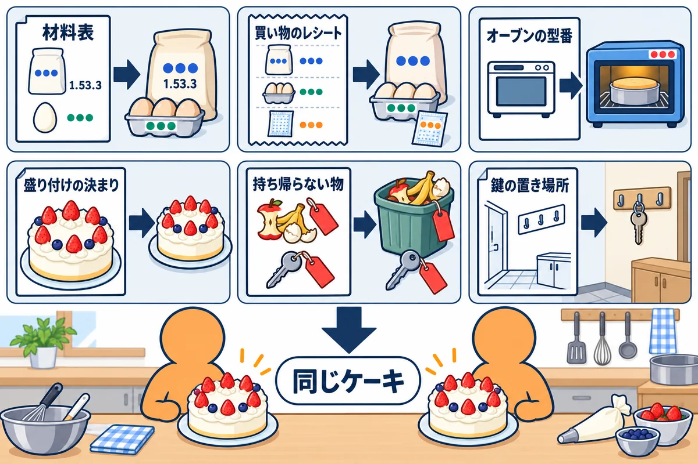
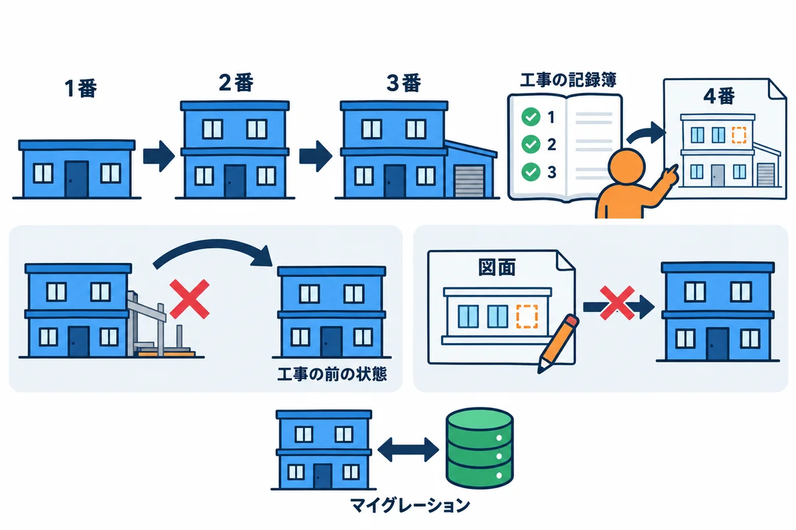
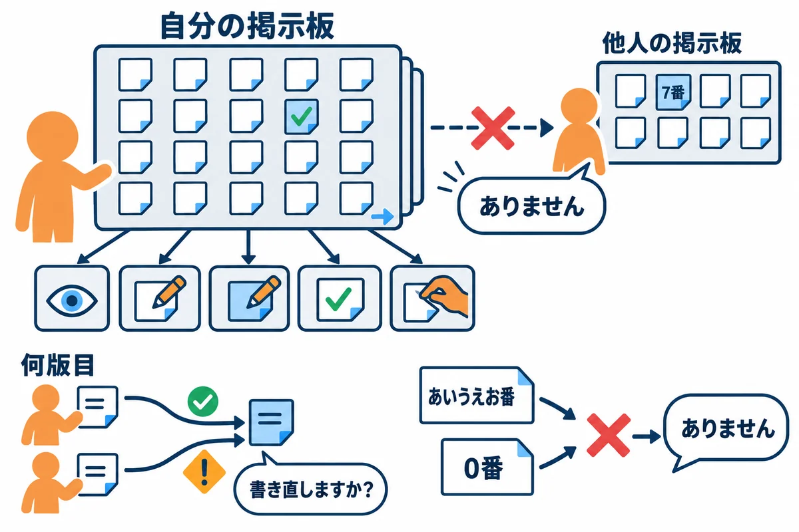

VOLUME 13 / RUST BACKEND MASTERY
完全コード — 演習・解答・用語集・索引
RustNote の全ファイルを順に読み、自分の PC で同じ結果を出して確かめる最終巻
色の付いた枠のコードの、右上の「コピー」ボタンを押してください。コピーしたら、ブラウザーの「戻る」で PDF に戻れます。
第12巻までで、RustNote を設計し（第9巻）、作り（第10巻）、確かめ（第11巻）、公開する（第12巻）までの流れを学びました。どの巻も、説明に必要な部分だけを抜き出して見せています。だから、「全部をつなげると、結局どのファイルに何が書いてあるのか」は、まだぼんやりしているかもしれません。
この巻は、教材のフォルダに入っている完成した RustNote のソース（Rust/rustnote/）を、全部のファイルについて、上から順に読んでいく巻です。ただ貼り付けて眺めるのではなく、ファイルごとに次の3つを確かめます。
巻の最後には、全巻をまたぐ総合演習と解答、全巻の用語集、索引を置きます。
この巻を終えると、次のことができるようになります。
10 個の単元で、RustNote のファイルを「土台から上へ」の順に読みます。最初は版を決める設定ファイル、次に DB の表、起動、型、保存、ログイン、画面、見た目、最後にテストと公開です。
| 単元 | テーマ | 読むファイル |
|---|---|---|
| UNIT 01 | 版を固定する設定ファイル | Cargo.toml・Cargo.lock・rust-toolchain.toml・rustfmt.toml・.gitignore・.env.example |
| UNIT 02 | 表を作る SQL と DB の入口 | migrations/0001〜0003・src/db.rs |
| UNIT 03 | 設定と起動の順番 | src/config.rs・src/main.rs・src/lib.rs |
| UNIT 04 | ドメインの型とエラーの分類 | src/domain.rs・src/error.rs |
| UNIT 05 | リポジトリ | src/repository.rs・src/repository/ の3つ |
| UNIT 06 | ログイン・お知らせ・共有の状態 | src/auth.rs・src/flash.rs・src/state.rs |
| UNIT 07 | 画面の枠・部品・登録とログインの画面 | src/routes.rs・src/views.rs・src/routes/ の signup・login・logout・health |
| UNIT 08 | ノートの CRUD | src/routes/notes.rs・src/routes/notes/ の4つ |
| UNIT 09 | 見た目 | assets/style.css |
| UNIT 10 | テスト・Docker・Fly.io・CI | tests/ の3つ・Dockerfile・.dockerignore・fly.toml・ci.yml・README.md |
RustNote は、次の 42 個のファイルでできています（git ls-files で数えた、Git で管理しているファイルです）。行数は Cargo.lock を除くと約 4,600 行です。
| ファイル | 行数 | 単元 | ひとことで言うと |
|---|---|---|---|
Cargo.toml |
35 | 01 | 使うクレートとその版の一覧 |
Cargo.lock |
3,753 | 01 | 実際に選ばれた全クレートの版と、中身の指紋（自動で作られる） |
rust-toolchain.toml |
5 | 01 | このフォルダで使う Rust の版（1.99.1） |
rustfmt.toml |
2 | 01 | cargo fmt の設定 |
.gitignore |
15 | 01 | Git に入れないファイル（ビルドの成果物・DB・.env） |
.env.example |
15 | 01 | 環境変数の見本 |
migrations/0001_users.sql ほか2つ |
9・18・12 | 02 | 表を作る SQL |
src/db.rs |
185 | 02 | DB への接続とマイグレーション |
src/config.rs・src/main.rs・src/lib.rs |
182・54・27 | 03 | 設定の読み込み・起動の入口・部品の一覧 |
src/domain.rs・src/error.rs |
518・152 | 04 | 検査済みの型と、エラーの分類 |
src/repository.rs と src/repository/ の3つ |
39・243・85・112 | 05 | ノート・ユーザー・セッションの読み書き |
src/auth.rs・src/flash.rs・src/state.rs |
179・117・42 | 06 | ログイン・一度だけのお知らせ・共有の状態 |
src/routes.rs・src/views.rs |
142・249 | 07 | ルーターとレイアウト・画面の部品 |
src/routes/ の signup・login・logout・health |
162・89・22・34 | 07 | 登録・ログイン・ログアウト・ヘルスチェック |
src/routes/notes.rs と src/routes/notes/ の4つ |
145・80・113・29・27 | 08 | ノートの一覧・作成・詳細・編集・完了の切り替え・削除 |
assets/style.css |
290 | 09 | 画面のスタイル |
tests/common/mod.rs・tests/http.rs・tests/repository.rs |
159・398・248 | 10 | テストの道具と、41 件のテストのうち 22 件 |
Dockerfile・.dockerignore・fly.toml・ci.yml・README.md |
51・7・38・48・192 | 10 | コンテナ・公開・CI の設定と説明書 |
src/ の中のファイルの最後にある #[cfg(test)] のユニットテストです。それぞれのファイルの単元で読みます。. で始まるファイル（.gitignore など）は、Windows の PowerShell やエクスプローラーではそのまま表示されます。macOS や Linux の ls では隠れるので、ls -a で表示します。この巻は、全巻のまとめです。どの単元も、元になった巻を「第9巻 UNIT 04」のように示します。
注意: この巻の本文は、教材のフォルダの
Rust/rustnote/のコードと、この巻で実際に動かした結果だけをもとに書いています。ほかの巻を読み終えていなくても、この巻だけで読み進められます。
完成したコードを読むときは、つい「読んで分かったつもり」になりがちです。各単元では、次のサイクルで進めてください。
# 見た目が Rust の標準の形か（直すときは --check を外す）
cargo fmt --check
# よくある書き間違いを、警告ではなくエラーとして止める。--locked は Cargo.lock を書き換えさせない
cargo clippy --all-targets --locked -- -D warnings
# テストを全部実行する
cargo test --locked
この3つは、RustNote の ci.yml（GitHub Actions の設定の例）で、コードを送るたびに自動で実行されるのと同じコマンドです（UNIT 10）。
ヒント: 元に戻すのがいちばん確実なのは、教材のフォルダから、そのファイルだけをもう一度コピーすることです。練習用のフォルダを Git で管理しておく（
git initして最初に全部をコミットしておく）と、git diffで変えた所を確かめ、git checkout -- ファイル名で元に戻せます（UNIT 01 の問3）。
この巻のコードは、すべて次の環境で実際にビルド・実行し、実行結果とエラーメッセージは実際の出力をそのまま載せています（パソコンのユーザー名などを含む部分は ... に置き換えています）。
| 項目 | 版・内容 |
|---|---|
| OS | Windows 11（ARM64）。コマンドは PowerShell を主に、WSL / macOS / Linux は補足で示します |
| Rust | 1.99 以上（本書シリーズの基準。Topcoat 0.11 が 1.99 以上を求めます）。動作確認は rustc 1.99.1 / cargo 1.99.1（aarch64-pc-windows-msvc） |
| edition | 2024 |
| RustNote | 教材の Rust/rustnote/（rustnote 0.1.0）。この巻では中身を変えずに読む |
| 直接使うクレート | topcoat 0.11.0、libsql 0.10.0、tokio 1.54.1、argon2 0.6.0、async-trait 0.1.92、serde 1.0.229、thiserror 2.0.21、anyhow 1.0.104、dotenvy 0.15.7、tempfile 3.27.0（テスト用） |
| topcoat-cli | 0.11.0（UNIT 09・10 で使います。UNIT 01 では使いません） |
第9巻と同じように、教材の Rust/rustnote/ を作業用のフォルダにコピーして使います。この巻では、わざとファイルを書き換えてエラーを見るので、お手本そのものには触らないことが特に大切です。
# 教材の rustnote フォルダを、中身ごと（-Recurse）作業用のフォルダへコピーする
Copy-Item -Recurse "教材のフォルダ\Rust\rustnote" .\rustnote
cd rustnote
# このフォルダで使われる Rust の版を確かめる
rustup show active-toolchain
1.99.1-aarch64-pc-windows-msvc (overridden by '...\rustnote\rust-toolchain.toml')
"教材のフォルダ\Rust\rustnote" の部分は、自分の PC で教材を置いた場所に読み替えてください。Cargo.toml・Cargo.lock・rust-toolchain.toml・rustfmt.toml・.gitignore・.env.example の6つのファイルについて、それぞれ誰が読み、何を決めているかを説明できる"=1.53.3" と "1.53.3" の版の書き方の違いと、Cargo.lock と --locked が「誰の PC でも同じ物を作る」ために何をしているかを説明できるCargo.lock の食い違いなどのエラーを読み、どのファイルを直せばよいかを判断できる
料理教室で、全員に同じケーキを焼いてもらう場面を考えます。先生は、次のような紙を配ります。
RustNote の6つの設定ファイルは、この紙と同じ役目をしています。
| 料理教室 | RustNote のファイル | 読むもの |
|---|---|---|
| 材料表（銘柄と規格） | Cargo.toml（使うクレートと版） |
cargo |
| 買い物のレシート（ロット番号つき） | Cargo.lock（選ばれた全クレートの版と指紋） |
cargo |
| オーブンの型番 | rust-toolchain.toml（Rust の版） |
rustup |
| 盛り付けの決まり | rustfmt.toml（整形の設定） |
rustfmt（cargo fmt） |
| 持ち帰らない物の札 | .gitignore（Git に入れないファイル） |
Git |
| 鍵の置き場所のメモ | .env.example（環境変数の見本。秘密の値は書かない） |
人（コピーして .env にする） |
用語: 版の固定（はんのこてい：使う道具や部品の版を、1つに決めて書いておくこと。英語では pin（ピン留め）とも言う）
用語: 依存クレート（いぞんクレート：自分のプログラムが使う、ほかの人が作ったクレート。そのクレートが使うクレートも、間接的な依存になる）
6つのファイルを、読む道具ごとに並べると、次のようになります。
Cargo.toml・Cargo.lock）は、cargo が読みます。使う部品と、その版を決めます。rust-toolchain.toml・rustfmt.toml）は、rustup と rustfmt が読みます。Rust そのものの版と、コードの見た目を決めます。.gitignore・.env.example）は、Git と人のためのファイルです。共有してはいけない物（DB のファイル・秘密の値）を、共有する物から分けます。Cargo.toml に書いたクレートは 10 個だけですが、それぞれが別のクレートを使っているので、実際に必要になる部品はずっと多くなります。
Cargo.lock の [[package]] の数です（RustNote 自身を含みます）。289 個は、この PC で cargo build したときに表示された Compiling の行の数です。この PC では使わない、ほかの OS 用のクレート（Linux や macOS でだけ使う物など）と、テストでだけ使うクレートは、cargo build ではコンパイルされません。この単元の「コード」は、設定ファイルそのものです。まず全文を読み、次に、その設定で RustNote がビルドでき、確かめの3つのコマンドが通ることを確かめます。
▼ このファイルがやること（先に日本語で）: パッケージの名前と版、使う Rust の最低の版（1.99）、使うクレート（9個）とテストでだけ使うクレート（1個）を、版を
=で1つに固定して書きます。tokio と serde には、使う機能（features）も書きます。
[package]
name = "rustnote"
version = "0.1.0"
edition = "2024"
# Topcoat 0.11 は Rust 1.99 以上が必要（動作確認は 1.99.1）
rust-version = "1.99"
description = "RustNote: Topcoat + libSQL で作るログイン付きメモアプリ（教材のサンプル）"
publish = false
default-run = "rustnote"
# 教材と同じ結果になるよう、直接使うクレートの版は `=` で固定している。
# 間接的に使われるクレートの版は Cargo.lock で固定される。
[dependencies]
# アプリの入口（main）でエラーに文脈を付けて表示する
anyhow = "=1.0.104"
# パスワードのハッシュ化（Argon2id）
argon2 = "=0.6.0"
# trait に async fn を書き、dyn（Arc<dyn NoteRepository + Send + Sync>）で使えるようにする
async-trait = "=0.1.92"
# .env ファイルを環境変数として読み込む（開発用）
dotenvy = "=0.15.7"
# Turso / libSQL のクライアント（ローカルファイルとリモートの両方）
libsql = "=0.10.0"
# フォームや JSON を構造体に変換する
serde = { version = "=1.0.229", features = ["derive"] }
# エラー型を短く書く
thiserror = "=2.0.21"
# 非同期ランタイム
tokio = { version = "=1.54.1", features = ["rt-multi-thread", "macros"] }
# Web フレームワーク
topcoat = "=0.11.0"
[dev-dependencies]
# テストごとに使い捨ての一時フォルダ（DB ファイル置き場）を作る
tempfile = "=3.27.0"
name = "rustnote" は、パッケージの名前です。ライブラリを外から使うときの rustnote::domain の rustnote は、この名前です（第9巻 UNIT 04）。edition = "2024" は、Rust の書き方の世代です。同じ Rust 1.99.1 でも、edition が違うと、使える書き方や警告が少し変わります。rust-version = "1.99" は、「このパッケージをビルドするには、Rust 1.99 以上が必要」という宣言です。Topcoat 0.11 が 1.99 以上を求めているので、それに合わせています。これより古い Rust でビルドしようとすると、コンパイルを始める前に止まります（エラー1）。publish = false は、cargo publish で crates.io（クレートの公開場所）にうっかり公開しないための印です。RustNote は教材のアプリなので、公開しません。default-run = "rustnote" は、cargo run で動かす実行ファイルを決めます。RustNote の実行ファイルは src/main.rs の1つだけなので、無くても同じように動きます。あとで src/bin/ に道具の実行ファイルを足したときも、cargo run が RustNote 本体を選ぶように、先に書いてあります。anyhow = "=1.0.104" のように、版の前に = を付けると、その版だけを使います。= を付けずに "1.0.104" と書くと、「1.0.104 以上、2.0.0 未満」の意味になり、cargo はその範囲で新しい版を選んでよくなります（例1-3で確かめます）。= で固定しています。Cargo.toml の上のコメント「教材と同じ結果になるよう、直接使うクレートの版は = で固定している」が、その理由です。Cargo.toml には書きません。それを固定するのが Cargo.lock です（解説4）。tokio = { version = "=1.54.1", features = ["rt-multi-thread", "macros"] } は、tokio の機能のうち、複数のスレッドで動くランタイム（rt-multi-thread）と、#[tokio::main] や #[tokio::test] を書くためのマクロ（macros）を使う、という意味です（第4巻 UNIT 07、第5巻 UNIT 02）。serde = { version = "=1.0.229", features = ["derive"] } の derive は、#[derive(Deserialize)] と書いてフォームの値を構造体に変える機能です。tempfile は、テストごとに使い捨ての一時フォルダを作るクレートです。[dev-dependencies] に書いたクレートは、tests/・examples/・#[cfg(test)] のテストからだけ使えます。本番の実行ファイルには入りません（問1で確かめます）。▼ このファイルがやること（先に日本語で）:
rust-toolchain.tomlは、このフォルダの中でcargoやrustcを実行したときに使う Rust の版を 1.99.1 に決め、rustfmt と clippy も一緒に入れるよう指定します。rustfmt.tomlは、cargo fmtが edition 2024 の決まりで整形するよう指定します。
# このフォルダの中で cargo を実行すると、Rust 1.99.1 が使われる
# （既定のツールチェーンは変更しない）
[toolchain]
channel = "1.99.1"
components = ["rustfmt", "clippy"]
# rustfmt（cargo fmt / topcoat fmt --rustfmt）の設定
edition = "2024"
Cargo.toml の rust-version = "1.99" は「1.99 以上なら何でもよい」、rust-toolchain.toml の channel = "1.99.1" は「このフォルダでは 1.99.1 を使う」です。最低の版と、実際に使う版を、別々のファイルで決めています。
▼ このコマンドがやること（先に日本語で）: コピーしたフォルダで、
Cargo.lockを書き換えないようにして（--locked）、RustNote をビルドします。続いて、整形の確かめ・Clippy・テストの3つを、ci.ymlと同じ形で実行します。
# このフォルダで使われる Rust の版を確かめる
rustup show active-toolchain
# Cargo.lock のとおりの版でビルドする
cargo build --locked
# 確かめの3つ（ci.yml と同じ）
cargo fmt --check
cargo clippy --all-targets --locked -- -D warnings
cargo test --locked
▼ 実行結果（cargo build --locked は Compiling の行が 289 行続くので、最後の3行だけを載せています）
1.99.1-aarch64-pc-windows-msvc (overridden by '...\rustnote\rust-toolchain.toml')
Compiling libsql v0.10.0
Compiling rustnote v0.1.0 (...\rustnote)
Finished `dev` profile [unoptimized + debuginfo] target(s) in 54.58s
cargo fmt --check は、整形が必要な所が無ければ、何も表示しません。cargo clippy の最後の3行と、cargo test の区切りと結果の行です。
Checking libsql v0.10.0
Checking rustnote v0.1.0 (...\rustnote)
Finished `dev` profile [unoptimized + debuginfo] target(s) in 32.68s
Finished `test` profile [unoptimized + debuginfo] target(s) in 13.22s
Running unittests src\lib.rs (target\debug\deps\rustnote-c39f4ee352b39312.exe)
test result: ok. 19 passed; 0 failed; 0 ignored; 0 measured; 0 filtered out; finished in 0.00s
Running unittests src\main.rs (target\debug\deps\rustnote-009228cf007e52ec.exe)
test result: ok. 0 passed; 0 failed; 0 ignored; 0 measured; 0 filtered out; finished in 0.00s
Running tests\http.rs (target\debug\deps\http-afc265ac134dcb62.exe)
test result: ok. 14 passed; 0 failed; 0 ignored; 0 measured; 0 filtered out; finished in 2.32s
Running tests\repository.rs (target\debug\deps\repository-74d08b56e783b6bc.exe)
test result: ok. 8 passed; 0 failed; 0 ignored; 0 measured; 0 filtered out; finished in 0.24s
Doc-tests rustnote
test result: ok. 0 passed; 0 failed; 0 ignored; 0 measured; 0 filtered out; finished in 0.00s
rustup show active-toolchain の (overridden by '...\rustnote\rust-toolchain.toml') は、「PC の既定の版ではなく、このファイルで決めた版を使っています」という意味です。PC の既定の版（stable）は、rustup update をするたびに新しくなっていきますが、RustNote のフォルダでは、いつも 1.99.1 が使われます（第1巻 UNIT 04）。cargo build は、Cargo.toml と Cargo.lock が食い違っていると、Cargo.lock を自動で書き直してからビルドします。--locked を付けると、書き直す必要があるときは、ビルドせずにエラーで止まります（エラー3）。Dockerfile（cargo build --release --locked）と ci.yml も、--locked を付けています。cargo fmt --check は、何も表示しないのが合格です。cargo clippy ... -- -D warnings は、警告が1つでもあればエラーにします。Finished で終われば合格です。cargo test --locked は、全部の test result: が ok. なら合格です。tests/http.rs の 14 件、tests/repository.rs の 8 件、合わせて 41 件です。▼ このコマンドがやること（先に日本語で）:
cargo treeは、依存のつながりを木の形で表示します。--depth 1で、RustNote が直接使うクレートだけに絞ります。
cargo tree --locked --depth 1
▼ 実行結果
rustnote v0.1.0 (...\rustnote)
├── anyhow v1.0.104
├── argon2 v0.6.0
├── async-trait v0.1.92 (proc-macro)
├── dotenvy v0.15.7
├── libsql v0.10.0
├── serde v1.0.229
├── thiserror v2.0.21
├── tokio v1.54.1
└── topcoat v0.11.0
[dev-dependencies]
└── tempfile v3.27.0
Cargo.toml に書いた 10 個が、Cargo.lock で選ばれた版で並んでいます。[dev-dependencies] の下が、テストでだけ使う tempfile です。async-trait の (proc-macro) は、「コンパイルのときにコードを書き足すマクロのクレート」という印です。#[async_trait] の印を付けた trait を、dyn で使える形に書き換えます（第9巻 UNIT 04）。▼ このコマンドがやること（先に日本語で）:
cargo update -p tokio --dry-runは、「tokio を新しくしたら、どの版になるか」を、Cargo.lockを書き換えずに表示します（--dry-runは「試しに動かすだけ」）。ただし、今の RustNote の tokio（1.54.1）は、いちばん新しい版なので、このままでは違いが見えません。そこで、練習用のコピーで、tokio を1つ前の 1.53.3 に固定し直してから試します。確かめたら、Cargo.tomlとCargo.lockを教材のものに戻します。
# Cargo.toml の tokio の行を version = "=1.53.3" に変えてから、Cargo.lock も 1.53.3 にする
cargo update -p tokio --precise 1.53.3
Updating crates.io index
Downgrading tokio v1.54.1 -> v1.53.3
note: pass `--verbose` to see 1 unchanged dependencies behind latest
# =1.53.3 のまま
cargo update -p tokio --dry-run
Updating crates.io index
Locking 0 packages to highest Rust 1.99 compatible versions
note: pass `--verbose` to see 2 unchanged dependencies behind latest
warning: not updating lockfile due to dry run
Cargo.toml の tokio の行を、version = "=1.53.3" から version = "1.53.3"（= を消しただけ）に変えて、同じコマンドを実行します。
Updating crates.io index
Locking 1 package to highest Rust 1.99 compatible version
Updating tokio v1.53.3 -> v1.54.1
note: pass `--verbose` to see 1 unchanged dependencies behind latest
warning: not updating lockfile due to dry run
= があるときは、Locking 0 packages（変える版は 0 個）でした。=1.53.3 の範囲には、1.53.3 しか無いからです。= を消すと、Updating tokio v1.53.3 -> v1.54.1 と表示されました。"1.53.3" は「1.53.3 以上、2.0.0 未満」の意味なので、この範囲でいちばん新しい 1.54.1 を選べるのです。to highest Rust 1.99 compatible version は、「Rust 1.99 で使える版の中で、いちばん新しい版」という意味です。cargo は、Cargo.toml の rust-version を見て、それより新しい Rust を求めるクレートの版を、選ばないようにしています。2 unchanged dependencies behind latest は、「もっと新しい版が出ているのに、今の決まりでは選べないクレートが 2 個ある」という意味です。= を消すと 1 個に減りました。tokio が、新しい版を選べるようになったからです。= で固定すると、新しい版の改善も、自分で版を上げるまで入りません。固定は「同じ結果」の代わりに、「版を上げる作業を自分で決める」ことでもあります。注意:
--dry-runを付け忘れると、Cargo.lockが本当に書き換わります。この例を試すときは、必ず--dry-runを付け、終わったらCargo.tomlの=を元に戻してください。
▼ このコマンドがやること（先に日本語で）:
cargo tree -p tokio --depth 0 -f "{p} [{f}]"は、tokio だけを表示し、{f}の所に、実際に有効になっている機能を並べます。
cargo tree --locked -p tokio --depth 0 -e normal -f "{p} [{f}]"
▼ 実行結果
tokio v1.54.1 [bytes,default,fs,full,io-std,io-util,libc,macros,mio,net,parking_lot,process,rt,rt-multi-thread,signal,signal-hook-registry,socket2,sync,time,tokio-macros,windows-sys]
Cargo.toml に書いた機能は rt-multi-thread と macros の2つだけなのに、fs・net・signal・full など、たくさんの機能が有効になっています。cargo tree -e features -i tokio で調べると、libsql が使う libsql_replication が tokio の full（ほぼ全部の機能）を、topcoat が macros・net・signal を有効にしていることが分かります（それぞれのクレートの Cargo.toml にも、そう書いてあります）。cargo は、1つのビルドの中の tokio を1つにまとめ、誰かが求めた機能を全部足したものでコンパイルします。Cargo.toml から "macros" を消しても、ビルドは通ってしまいます（cargo build --locked は Finished で終わりました）。ほかのクレートが macros を有効にしてくれているからです。Cargo.toml には macros を書いておきます。libsql や topcoat が次の版で tokio の使い方を変えたら、RustNote の #[tokio::main] は突然コンパイルできなくなるからです。自分が使う機能は、自分の Cargo.toml に書くのが決まりです。だれも macros を有効にしていないと何が起きるかは、エラー5で確かめます。features とは別の話ですが、1つのビルドの中に、版の違う同じクレートが同時に入ることもあります。Cargo.lock の RustNote の項目を見てみましょう（抜き出しています）。
[[package]]
name = "rustnote"
version = "0.1.0"
dependencies = [
"anyhow",
"argon2",
"async-trait",
"dotenvy",
"libsql",
"serde",
"tempfile",
"thiserror 2.0.21",
"tokio",
"topcoat",
]
"thiserror 2.0.21" だけ、名前の後ろに版が付いています。Cargo.lock に thiserror が 1.0.69 と 2.0.21 の2つあるので、どちらかを区別するためです。cargo tree --locked -i thiserror@1.0.69 --edges normal
thiserror v1.0.69
├── libsql v0.10.0
│ └── rustnote v0.1.0 (...\rustnote)
└── libsql_replication v0.10.0
└── libsql v0.10.0 (*)
-i（invert：逆向き）は、「このクレートを使っているのは誰か」をたどります。thiserror 1.0.69 は libsql が使い、RustNote 自身は 2.0.21 を使っていました。1.x と 2.x のように、上の桁が違う版は「互換性のない別物」とみなされるので、1つのビルドの中に両方が入ってもかまわないのです。▼ このファイルがやること（先に日本語で）:
.gitignoreは、Git に入れないファイルの名前の決まりを書きます。.env.exampleは、RustNote が読む環境変数の名前と、開発用の値の見本を書きます。秘密の値（Turso のトークン）は、空のままにしてあります。
# ビルドの成果物（cargo build / topcoat asset bundle が作る）
/target/
# ローカルの SQLite / libSQL データベース（WAL などの付属ファイルも含む）
*.db
*.db-shm
*.db-wal
*.db-journal
# 秘密の値を書いた環境変数ファイル（.env.example だけを共有する）
.env
# OS やエディタが作るファイル
.DS_Store
Thumbs.db
# RustNote の環境変数の見本。
# このファイルを .env という名前でコピーし、値を書き換えて使う（.env は Git に入れない）。
# サーバーが待ち受けるアドレスとポート（topcoat::start が読む）
# 開発: 127.0.0.1:3000 / Fly.io: 0.0.0.0:8080
HOST=127.0.0.1
PORT=3000
# データベース
# 開発: ローカルファイルのパス（無ければ自動で作られる）
DATABASE_URL=rustnote.db
# 本番（Turso）の例:
# DATABASE_URL=libsql://rustnote-<あなたの組織名>.turso.io
# DATABASE_AUTH_TOKEN=<turso db tokens create で作ったトークン>
DATABASE_AUTH_TOKEN=
.gitignore の *.db は「名前が .db で終わるファイル全部」です。開発で作った DB には、自分で試しに登録したメールアドレスなどが入るので、Git に入れません。*.db-shm・*.db-wal・*.db-journal は、SQLite が DB の横に作る作業用のファイルです。.env は Git に入れず、.env.example だけを共有します。.env.example を .env という名前でコピーし、自分の値を書き込んで使います。RustNote の main.rs は、起動するときに dotenvy::dotenv().ok() で .env を読みます（.env が無ければ何もしません。UNIT 03）。Cargo.lock は .gitignore に書いていません。アプリ（実行ファイルを作るパッケージ）では、Cargo.lock を Git に入れて共有するのが、Cargo の公式の考え方です。共有しないと、PC ごとに違う版の部品でビルドすることになるからです。この節のエラーは、どれも練習用のコピーの設定ファイルを1か所だけ書き換えて出したものです。確かめ終わったら、そのファイルを必ず元に戻してください。
rust-toolchain.toml が無いフォルダで、古い Rust が既定になっている PC や、cargo +1.90.0 check のように版を指定して、古い Rust でビルドしようとした場合です（この PC には、古い 1.90.0 も入っています）。
cargo +1.90.0 check --locked
（requires rustc 1.99 の行が 35 行続くので、途中を省いています）
error: rustc 1.90.0 is not supported by the following packages:
rustnote@0.1.0 requires rustc 1.99
rustnote@0.1.0 requires rustc 1.99
topcoat@0.11.0 requires rustc 1.99
topcoat-asset@0.11.0 requires rustc 1.99
…（途中を省略）…
topcoat-view-grammar@0.11.0 requires rustc 1.99
topcoat-view-macro@0.11.0 requires rustc 1.99
rustnote@0.1.0 requires rustc 1.99 は、RustNote の Cargo.toml の rust-version = "1.99"、topcoat@0.11.0 requires rustc 1.99 は、Topcoat 側の同じ宣言です。同じ名前が何回か出ていますが、読むのは、パッケージの名前と requires rustc 1.99 の部分だけで十分です。rust-version を書いておく理由がこれです。+1.90.0 を付けずに cargo check --locked とします。rust-toolchain.toml があるので 1.99.1 が使われます。1.99.1 がまだ入っていない PC では、rustup toolchain install 1.99.1 --profile minimal --component rustfmt,clippy で入れます（既定の版は変わりません）。注意:
cargo +1.97.1 checkのように、PC に入っていない版の名前を指定すると、この PC の rustup は、その版を自動でダウンロードして入れました（warn: the missing active toolchain ... has been auto-installedと表示されます）。版を試すときは、rustup toolchain listで入っている版を確かめてから指定しましょう。入れてしまった版は、rustup toolchain uninstall 版の名前で消せます。
Cargo.toml の tokio の "macros" を、"macro"（s が無い）と打ち間違えた場合です。
tokio = { version = "=1.54.1", features = ["rt-multi-thread", "macro"] }
cargo build --locked
error: failed to select a version for `tokio`.
... required by package `rustnote v0.1.0 (...\rustnote)`
versions that meet the requirements `=1.54.1` (locked to 1.54.1) are: 1.54.1
package `rustnote` depends on `tokio` with feature `macro` but `tokio` does not have that feature.
help: there is a feature `macros` with a similar name
failed to select a version for `tokio` which could resolve this conflict
package rustnote depends on tokio with feature macro but tokio does not have that feature.（RustNote は tokio の macro という機能を求めていますが、tokio にその機能はありません）が本当の理由です。versions that meet the requirements =1.54.1 (locked to 1.54.1) are: 1.54.1 は、「条件に合う版は 1.54.1 だけで、その版には macro という機能が無いので、選べる版がもう無い」という意味です。help: there is a feature macros with a similar name（似た名前の macros という機能があります）のとおり、"macros" に直します。機能の名前は、クレートの docs.rs のページの「Feature flags」で確かめられます。Cargo.toml の dotenvy の版を、"=0.15.7" から "=0.15.6" に変えて、--locked でビルドした場合です。
cargo build --locked
Updating crates.io index
error: cannot update the lock file ...\rustnote\Cargo.lock because --locked was passed to prevent this
help: to generate the lock file without accessing the network, remove the --locked flag and use --offline instead.
--locked が指定されたので、Cargo.lock を書き換えられません」というエラーです。Cargo.toml は 0.15.6 を求めているのに、Cargo.lock には 0.15.7 が書いてあるので、ビルドするには Cargo.lock を書き直す必要がありました。Cargo.lock と違う版が黙って使われるのを止めるために、わざと --locked を付けています。--locked を付けずに cargo build（または cargo update -p dotenvy）を実行して Cargo.lock を更新し、Cargo.toml と Cargo.lock を一緒にコミットします。この練習では、Cargo.toml を "=0.15.7" に戻します。help: の --offline（ネットにつながずに作る）の案内は、ネットを使わずに Cargo.lock を作り直したいときの方法です。今回は版を戻せばよいので、使いません。Cargo.lock の dotenvy の checksum の、先頭の1文字だけを書き換えた場合です。
[[package]]
name = "dotenvy"
version = "0.15.7"
source = "registry+https://github.com/rust-lang/crates.io-index"
checksum = "0aaf95b3e5c8f23aa320147307562d361db0ae0d51242340f558153b4eb2439b"
cargo build --locked
error: checksum for `dotenvy v0.15.7` changed between lock files
this could be indicative of a few possible errors:
* the lock file is corrupt
* a replacement source in use (e.g., a mirror) returned a different checksum
* the source itself may be corrupt in one way or another
unable to verify that `dotenvy v0.15.7` is the same as when the lockfile was generated
checksum は、crates.io から取ってきたクレートの中身から計算した指紋（SHA-256）です。本物の指紋は 1aaf95b3… で始まるのに、Cargo.lock には 0aaf95b3… と書いてあったので、cargo は「同じ物か確かめられない」と止まりました。Cargo.lock を Git で共有すると、この指紋も全員で共有されます。Cargo.lock は手で書き換えるファイルではありません（先頭に It is not intended for manual editing. と書いてあります）。教材のフォルダから Cargo.lock をコピーし直します。例1-6で、RustNote では "macros" を消してもビルドが通ることを見ました。では、ほかのクレートが助けてくれない場合はどうなるでしょう。tokio だけを使う小さなプロジェクト（feat_demo）で試します。
[package]
name = "feat_demo"
version = "0.1.0"
edition = "2024"
[dependencies]
# RustNote と同じ版の tokio を、macros なしで使う
tokio = { version = "=1.54.1", features = ["rt-multi-thread"] }
// #[tokio::main] は、tokio の macros の機能が有効なときだけ使える
#[tokio::main]
async fn main() {
println!("tokio のランタイムの中で動いています");
}
cargo build
Compiling tokio v1.54.1
Compiling feat_demo v0.1.0 (...\feat_demo)
error[E0433]: cannot find `main` in `tokio`
--> src\main.rs:2:10
|
2 | #[tokio::main]
| ^^^^ could not find `main` in `tokio`
error[E0752]: `main` function is not allowed to be `async`
--> src\main.rs:3:1
|
3 | async fn main() {
| ^^^^^^^^^^^^^^^ `main` function is not allowed to be `async`
Some errors have detailed explanations: E0433, E0752.
For more information about an error, try `rustc --explain E0433`.
error: could not compile `feat_demo` (bin "feat_demo") due to 2 previous errors
error[E0433]: cannot find main in tokio は、「tokio の中に main が見つかりません」です。#[tokio::main] は、macros の機能を有効にしたときだけ tokio の中に現れるので、機能が無いと「無い物を使った」エラーになります。error[E0752]: main function is not allowed to be async は、「main 関数を async にはできません」です。本当は #[tokio::main] が async fn main を普通の fn main に書き換えてくれるはずでしたが、1つ目のエラーでそれが働かなかったので、続けてこのエラーが出ました。最初のエラーから直すと、2つ目は一緒に消えます。Cargo.toml の features に "macros" を足します。[package]
name = "feat_demo"
version = "0.1.0"
edition = "2024"
[dependencies]
# macros を足すと、#[tokio::main] が使える
tokio = { version = "=1.54.1", features = ["rt-multi-thread", "macros"] }
cargo run -q
tokio のランタイムの中で動いています
この単元のファイルは、RustNote のほかのファイルから、次のように使われています。
| 使う場所 | 書いてあること | つながるファイル |
|---|---|---|
Dockerfile |
FROM rust:1.99.1-trixie AS builder |
rust-toolchain.toml と同じ 1.99.1 |
Dockerfile |
RUN cargo install topcoat-cli --version 0.11.0 --locked |
Cargo.toml の topcoat と同じ 0.11.0 |
Dockerfile |
RUN cargo build --release --locked |
Cargo.lock（--locked） |
ci.yml |
toolchain: 1.99.1 と components: rustfmt, clippy |
rust-toolchain.toml |
ci.yml |
cargo clippy --all-targets --locked -- -D warnings・cargo test --locked |
Cargo.lock |
.dockerignore |
target/・*.db・.env を送らない |
.gitignore と同じ考え方 |
src/main.rs |
dotenvy::dotenv().ok(); |
.env.example をコピーした .env |
rust-toolchain.toml・Dockerfile・ci.yml の3か所に書いてあります。版を上げるときは、この3か所を一緒に変えます。1か所だけ変えると、「自分の PC では通るのに、CI では通らない」という食い違いが起きます。Cargo.toml のクレートと、Dockerfile の CLI の2か所です。クレートと CLI は同じ Topcoat の一部なので、版を上げるときは両方を一緒に上げます。問1: tempfile は [dev-dependencies] に書いてあります。もし src/lib.rs の中で tempfile::tempdir() を使う関数を書いたら、どうなるでしょうか。予想してから、練習用のコピーで確かめてください（確かめたら元に戻します）。また、なぜ tempfile を [dependencies] ではなく [dev-dependencies] に書くのかを答えてください。
問2: ARM64 版の Windows で RustNote をビルドするには、LLVM（clang）が必要でした（第9巻の巻頭）。これは、暗号のクレート ring を C のコンパイラでビルドするためです。では、RustNote の Cargo.toml には ring が無いのに、なぜ ring がビルドされるのでしょうか。cargo tree で、ring を使っているクレートをたどってください。
問3: 練習用のコピーで git init し、.env.example を .env にコピーし、rustnote.db という名前の空でないファイルを作ります。そのうえで、次の2つを確かめてください。
git check-ignore -v で、.env・rustnote.db・rustnote.db-wal・target/debug/rustnote.exe・.env.example・Cargo.lock のうち、どれが Git から外されるか。外されるものは、.gitignore の何行目の決まりによるか。git status --short に、.env と rustnote.db が出てこないこと。問1の解答:
予想: コンパイルエラーになる。[dev-dependencies] のクレートは、ライブラリの本体（src/）からは見えないからです。src/lib.rs の最後に、次の関数を足して確かめます。
/// 試し: dev-dependencies のクレートを src/ で使う
pub fn scratch_dir() -> tempfile::TempDir {
tempfile::tempdir().expect("一時フォルダを作れません")
}
cargo build --locked
Compiling rustnote v0.1.0 (...\rustnote)
error[E0433]: cannot find module or crate `tempfile` in this scope
--> src\lib.rs:30:5
|
30 | tempfile::tempdir().expect("一時フォルダを作れません")
| ^^^^^^^^ use of unresolved module or unlinked crate `tempfile`
|
= help: if you wanted to use a crate named `tempfile`, use `cargo add tempfile` to add it to your `Cargo.toml`
error[E0433]: cannot find module or crate `tempfile` in this scope
--> src\lib.rs:29:25
|
29 | pub fn scratch_dir() -> tempfile::TempDir {
| ^^^^^^^^ use of unresolved module or unlinked crate `tempfile`
|
= help: if you wanted to use a crate named `tempfile`, use `cargo add tempfile` to add it to your `Cargo.toml`
For more information about this error, try `rustc --explain E0433`.
error: could not compile `rustnote` (lib) due to 2 previous errors
cannot find module or crate tempfile in this scope（この場所では tempfile というモジュールもクレートも見つかりません）と、使った2か所でエラーになりました。help: は「cargo add tempfile で Cargo.toml に足してください」と案内していますが、テストのための道具を本体の依存にするのは、正しい直し方ではありません。[dev-dependencies] に書くのは、本番の実行ファイルに入れる必要が無いからです。入れないぶん、本番のビルドが速くなり、できあがる実行ファイルも小さくなり、本番で動くコードが使うクレートの数（気をつけて見ておくべき範囲）も減ります。src/lib.rs を元に戻します。問2の解答:
cargo tree --locked -i ring --edges normal
ring v0.17.14
├── rustls v0.22.4
│ ├── hyper-rustls v0.25.0
│ │ └── libsql v0.10.0
│ │ └── rustnote v0.1.0 (...\rustnote)
│ └── tokio-rustls v0.25.0
│ └── hyper-rustls v0.25.0 (*)
└── rustls-webpki v0.102.8
└── rustls v0.22.4 (*)
rustnote → libsql → hyper-rustls → rustls → ring とつながっています。libsql が Turso（ネットの向こうの DB）と暗号化して通信するために rustls（TLS という暗号化の仕組みを Rust で書いたクレート）を使い、rustls と、証明書を確かめる rustls-webpki が、暗号の計算に ring を使っているのです。(*) は、「この先は、上ですでに表示した」という印です。同じつながりを何度も書かないように省いています。Cargo.toml に書いていないクレートでも、ビルドに必要な道具（ここでは clang）を求めることがあります。ビルドが止まったら、エラーに出てきたクレートの名前で cargo tree -i を調べると、「誰のために必要なのか」が分かります。問3の解答:
git init
Copy-Item .env.example .env
Set-Content rustnote.db "x"
git check-ignore -v .env rustnote.db rustnote.db-wal target/debug/rustnote.exe .env.example Cargo.lock
.gitignore:11:.env .env
.gitignore:5:*.db rustnote.db
.gitignore:7:*.db-wal rustnote.db-wal
.gitignore:2:/target/ target/debug/rustnote.exe
git status --short
?? .dockerignore
?? .env.example
?? .gitignore
?? Cargo.lock
?? Cargo.toml
?? Dockerfile
?? README.md
?? assets/
?? ci.yml
?? fly.toml
?? migrations/
?? rust-toolchain.toml
?? rustfmt.toml
?? src/
?? tests/
.env（11 行目の .env）、rustnote.db（5 行目の *.db）、rustnote.db-wal（7 行目の *.db-wal）、target/debug/rustnote.exe（2 行目の /target/）の4つです。-v（verbose）を付けると、「どのファイルの何行目の、どの決まりに当たったか」が、.gitignore:11:.env の形で表示されます。.env.example と Cargo.lock は表示されません。外されない（Git で共有する）からです。git status --short の ??（まだ Git に入れていないファイル）の一覧に、.env と rustnote.db はありません。フォルダの中には確かにあるのに、Git からは見えていないのです。.gitignore の決まりの、いちばんの目的は、この「うっかり共有しない」ことです。git check-ignore は、ファイルが本当にあるかどうかに関係なく、名前だけで調べます。target/debug/rustnote.exe は、このフォルダにはまだありません（ビルドの成果物は別の場所に作っています）が、名前の決まりで判定されました。/target/ の先頭の / は、「.gitignore のあるフォルダの直下の target だけ」という意味です。src/target/ のような、下のほうのフォルダの target は外しません。Cargo.toml は人が書く材料表、Cargo.lock は cargo が書くレシート（全クレートの版と指紋）。RustNote は直接使うクレートを = で固定し、Cargo.lock を Git で共有して、--locked で書き換えを止める。rust-version（最低の版）と rust-toolchain.toml（このフォルダで使う版）で決め、Dockerfile と ci.yml にも同じ版を書く。features は依存のつながり全体で足し算されるので、自分が使う機能は自分の Cargo.toml に書く。.gitignore で共有から外し、環境変数は .env.example という見本だけを共有する。migrations/ の3つの SQL ファイルが、どの表・索引・制約を作るかを説明できるsrc/db.rs の migrate が、まだ適用していない版だけを、1つずつトランザクションの中で適用し、schema_migrations に記録する流れを説明できるDb::open_local と Db::connect が入れている設定（WAL・外部キー・待ち時間）を、実際の値で確かめられる
ある建物に、何年もかけて部屋を増やしていく場面を考えます。
RustNote の DB も、同じやり方で作ります。
| 建物の工事 | RustNote |
|---|---|
| 番号の付いた工事 | マイグレーション（migrations/0001_users.sql など、番号順の SQL ファイル） |
| 工事の記録簿 | schema_migrations 表（適用済みの版の名前と時刻） |
| 番号の順に、まだの工事だけをする | db::migrate が、未適用の版だけを古い順に適用する |
| 途中で失敗したら、作りかけを取り壊す | 1つの版をトランザクションの中で適用し、失敗したら rollback |
| 終わった工事の図面を書き換えても変わらない | 適用済みの SQL ファイルを書き換えても、今ある DB には反映されない（エラー2） |
用語: マイグレーション（migration：DB の表の作り（スキーマ）を変える手順を、番号順のファイルに分けて書いたもの。第7巻 UNIT 06）
用語: トランザクション（transaction：いくつかの変更を「全部やる」か「全部やめる」かの1まとまりにする仕組み。第7巻 UNIT 05）
3つのマイグレーションと、それが作る物の対応です。
db::migrate は、次の順番で動きます。
▼ このファイルがやること（先に日本語で）:
0001_users.sqlはユーザーの表、0002_notes.sqlはノートの表と一覧を速くする索引、0003_sessions.sqlはログイン中のセッションの表と2つの索引を作ります。どれも、決まり（UNIQUE・CHECK・外部キー）を表に書き込んでいます（第9巻 UNIT 03）。
-- 0001: ユーザーのテーブル
-- email は UNIQUE（同じメールアドレスで二重に登録できない）。
-- password_hash には Argon2id の PHC 文字列（$argon2id$v=19$...）を入れる。生のパスワードは保存しない。
CREATE TABLE users (
id INTEGER PRIMARY KEY AUTOINCREMENT,
email TEXT NOT NULL UNIQUE,
password_hash TEXT NOT NULL,
created_at TEXT NOT NULL DEFAULT (datetime('now'))
);
-- 0002: ノートのテーブル
-- title は 1〜80 文字（length() は文字数を数える。Rust 側の chars().count() と同じ）。
-- done は 0（未完了）か 1（完了）。
-- version は楽観的ロック用の番号。更新のたびに 1 増える。
-- 日時は UTC の 'YYYY-MM-DD HH:MM:SS' 形式の文字列（datetime('now') の形）。
CREATE TABLE notes (
id INTEGER PRIMARY KEY AUTOINCREMENT,
user_id INTEGER NOT NULL REFERENCES users(id) ON DELETE CASCADE,
title TEXT NOT NULL CHECK (length(title) BETWEEN 1 AND 80),
body TEXT NOT NULL DEFAULT '',
done INTEGER NOT NULL DEFAULT 0 CHECK (done IN (0, 1)),
version INTEGER NOT NULL DEFAULT 1,
created_at TEXT NOT NULL DEFAULT (datetime('now')),
updated_at TEXT NOT NULL DEFAULT (datetime('now'))
);
-- 「自分のノートを新しい順に」を速くするための索引
CREATE INDEX idx_notes_user_updated ON notes (user_id, updated_at DESC, id DESC);
-- 0003: ログイン中のセッションのテーブル
-- token_hash は Topcoat が発行したトークンの SHA-256（32 バイト）。生のトークンは保存しない。
-- expires_at は有効期限。1970-01-01 からの秒数（UNIX 時刻）で持ち、比較しやすくする。
CREATE TABLE sessions (
token_hash BLOB PRIMARY KEY,
user_id INTEGER NOT NULL REFERENCES users(id) ON DELETE CASCADE,
expires_at INTEGER NOT NULL,
created_at TEXT NOT NULL DEFAULT (datetime('now'))
);
CREATE INDEX idx_sessions_user ON sessions (user_id);
CREATE INDEX idx_sessions_expires ON sessions (expires_at);
▼ このファイルがやること（先に日本語で）:
src/db.rsは、DB への入口のDb型と、マイグレーションのmigrate関数を持ちます。Dbは、設定に合わせてローカルのファイルか Turso を開き、接続のたびに必要な設定を入れます。migrateは、SQL ファイルをinclude_str!で実行ファイルに埋め込み、まだ適用していない版だけを適用します。
//! DB（Turso / libSQL）への接続と、マイグレーション（テーブルの作成・変更）。
//!
//! - 開発ではローカルファイル（例: rustnote.db）を使う
//! - 本番では Turso の URL（libsql://...）と認証トークンを環境変数で渡す
//!
//! 接続（Connection）は処理のたびに `Db::connect` で作る。
//! ローカルファイルなら開くだけ、リモートなら HTTP の準備だけなので軽い。
use std::path::Path;
use std::sync::Arc;
use libsql::{Builder, Connection, Database, Transaction};
use thiserror::Error;
use crate::config::Config;
/// DB への入口。中身は Arc なので、clone しても同じ DB を指す（安く複製できる）
#[derive(Clone)]
pub struct Db {
database: Arc<Database>,
is_local: bool,
}
impl Db {
/// 設定に従って、ローカルファイルかリモート（Turso）の DB を開く
pub async fn open(config: &Config) -> Result<Db, libsql::Error> {
if config.is_remote() {
// 秘密のトークンは、接続するこの場所でだけ取り出す
let token = config
.database_auth_token
.as_ref()
.map(|secret| secret.expose().to_string())
.unwrap_or_default();
let database = Builder::new_remote(config.database_url.clone(), token)
.build()
.await?;
Ok(Db {
database: Arc::new(database),
is_local: false,
})
} else {
Db::open_local(&config.database_url).await
}
}
/// ローカルファイルの DB を開く（無ければ作られる）
pub async fn open_local(path: impl AsRef<Path>) -> Result<Db, libsql::Error> {
let database = Builder::new_local(path).build().await?;
let db = Db {
database: Arc::new(database),
is_local: true,
};
// WAL モード: 読み込みと書き込みが同時に来ても待たされにくくなる（ファイルに記録される）
let conn = db.connect().await?;
conn.execute_batch("PRAGMA journal_mode = WAL;").await?;
Ok(db)
}
/// 新しい接続を作る
pub async fn connect(&self) -> Result<Connection, libsql::Error> {
let conn = self.database.connect()?;
if self.is_local {
// SQLite は接続ごとに設定が必要:
// foreign_keys … REFERENCES（外部キー）を守らせる
// busy_timeout … ほかの接続が書き込み中なら最大 5 秒待つ
conn.execute_batch("PRAGMA foreign_keys = ON; PRAGMA busy_timeout = 5000;")
.await?;
}
Ok(conn)
}
/// DB に問い合わせができるか確かめる（GET /health で使う）
pub async fn ping(&self) -> Result<(), libsql::Error> {
let conn = self.connect().await?;
let mut rows = conn.query("SELECT 1", ()).await?;
rows.next().await?;
Ok(())
}
}
// ---------------------------------------------------------------------------
// マイグレーション
// ---------------------------------------------------------------------------
/// 1つのマイグレーション（版の名前と SQL）
pub struct Migration {
pub version: &'static str,
pub sql: &'static str,
}
/// アプリが持つマイグレーションの一覧（古い順）。
/// SQL ファイルは include_str! でコンパイル時に実行ファイルへ埋め込む。
pub const MIGRATIONS: &[Migration] = &[
Migration {
version: "0001_users",
sql: include_str!("../migrations/0001_users.sql"),
},
Migration {
version: "0002_notes",
sql: include_str!("../migrations/0002_notes.sql"),
},
Migration {
version: "0003_sessions",
sql: include_str!("../migrations/0003_sessions.sql"),
},
];
#[derive(Debug, Error)]
pub enum MigrateError {
#[error("schema_migrations を準備できません")]
Prepare(#[source] libsql::Error),
#[error("マイグレーション {version} に失敗しました")]
Apply {
version: &'static str,
#[source]
source: libsql::Error,
},
}
/// まだ適用していないマイグレーションだけを、1つずつトランザクションの中で適用する。
/// 戻り値は、今回新しく適用した版の名前の一覧。
pub async fn migrate(db: &Db) -> Result<Vec<&'static str>, MigrateError> {
let conn = db.connect().await.map_err(MigrateError::Prepare)?;
// 適用済みの版を記録する表（無ければ作る）
conn.execute(
"CREATE TABLE IF NOT EXISTS schema_migrations (
version TEXT PRIMARY KEY,
applied_at TEXT NOT NULL DEFAULT (datetime('now'))
)",
(),
)
.await
.map_err(MigrateError::Prepare)?;
let applied = applied_versions(&conn)
.await
.map_err(MigrateError::Prepare)?;
let mut newly_applied = Vec::new();
for migration in MIGRATIONS {
if applied.iter().any(|v| v == migration.version) {
continue;
}
let apply_error = |source| MigrateError::Apply {
version: migration.version,
source,
};
let tx = conn.transaction().await.map_err(apply_error)?;
match apply(&tx, migration).await {
// 全部成功したときだけ確定する
Ok(()) => tx.commit().await.map_err(apply_error)?,
// 途中で失敗したら、その版の変更をすべて取り消す
Err(source) => {
tx.rollback().await.map_err(apply_error)?;
return Err(apply_error(source));
}
}
newly_applied.push(migration.version);
}
Ok(newly_applied)
}
/// schema_migrations に記録された版の名前を読む
async fn applied_versions(conn: &Connection) -> Result<Vec<String>, libsql::Error> {
let mut rows = conn
.query("SELECT version FROM schema_migrations ORDER BY version", ())
.await?;
let mut versions = Vec::new();
while let Some(row) = rows.next().await? {
versions.push(row.get::<String>(0)?);
}
Ok(versions)
}
/// 1つのマイグレーションの SQL を実行し、適用済みとして記録する
async fn apply(tx: &Transaction, migration: &Migration) -> Result<(), libsql::Error> {
tx.execute_batch(migration.sql).await?;
tx.execute(
"INSERT INTO schema_migrations (version) VALUES (?1)",
[migration.version],
)
.await?;
Ok(())
}
▶ ここで初めて出てくるコード
AsRef（型とメソッド）: 「借りた形（&Pathなど）に変えられる」機能（トレイト）。引数をpath: impl AsRef<Path>にすると、&strでもStringでもPathBufでも受け取れます。
MIGRATIONS の include_str!("../migrations/0001_users.sql") は、コンパイルのときに、SQL ファイルの中身を文字列として実行ファイルに埋め込みます。公開した実行ファイルの隣に migrations/ フォルダが無くても、マイグレーションを流せます（第9巻 UNIT 03 のエラー2）。MIGRATIONS の並び順が、適用の順番です。ファイル名の番号（0001・0002・0003）は、人が見て分かるように付けているもので、順番を決めているのはこの配列です。Db は、libsql の Database を Arc で包んでいます。clone() しても、中の DB は1つのままで、参照の数が増えるだけです（第3巻）。RustNote の AppState は、この Db を、3つのリポジトリに1つずつ clone() して渡しています。Connection）は、処理のたびに connect() で作ります。先頭のコメントのとおり、ローカルのファイルなら開くだけ、Turso なら HTTP の準備だけなので軽い、という判断です。MigrateError は、「記録簿を準備できなかった」（Prepare）と、「この版の適用に失敗した」（Apply、失敗した版の名前つき）の2種類です。#[source] を付けたので、もとの libsql のエラーも、原因としてつながったまま残ります（第4巻 UNIT 05）。エラー1で、実際の表示を見ます。▼ このコードがやること（先に日本語で）: 引数で渡した場所に DB ファイルを開き（無ければ作られる）、
db::migrateを2回続けて呼んで、それぞれが返した「今回適用した版」を表示します。そのあと、記録簿の中身、できた表と索引、notesの列の名前を表示します。
▶ 書く所と動かし方: コピーした rustnote フォルダの examples フォルダに、u02_migrate.rs という名前の新しいファイルを作り、下のコードを貼り付けて保存します。rustnote のフォルダで cargo run -q --example u02_migrate -- try.db を実行します。
//! RustNote の db::migrate を同じ DB に2回かけて、何が作られ、2回目に何が起きるかを確かめる。
//! DB ファイルの場所を引数で渡す（無ければ作られる）。
//! 実行: cargo run -q --example u02_migrate -- try.db
use libsql::Connection;
use rustnote::db::{self, Db};
/// 1列目の文字列を、行の数だけ集める
async fn strings(conn: &Connection, sql: &str) -> anyhow::Result<Vec<String>> {
let mut rows = conn.query(sql, ()).await?;
let mut values = Vec::new();
while let Some(row) = rows.next().await? {
values.push(row.get::<String>(0)?);
}
Ok(values)
}
#[tokio::main]
async fn main() -> anyhow::Result<()> {
let path = std::env::args()
.nth(1)
.unwrap_or_else(|| "try.db".to_string());
let db = Db::open_local(&path).await?;
println!("1回目の migrate: {:?}", db::migrate(&db).await?);
println!("2回目の migrate: {:?}", db::migrate(&db).await?);
let conn = db.connect().await?;
println!(
"適用済みの版: {:?}",
strings(
&conn,
"SELECT version FROM schema_migrations ORDER BY version"
)
.await?
);
println!(
"表: {:?}",
strings(
&conn,
"SELECT name FROM sqlite_master WHERE type = 'table' ORDER BY name"
)
.await?
);
println!(
"索引: {:?}",
strings(
&conn,
"SELECT name FROM sqlite_master WHERE type = 'index' AND name LIKE 'idx_%' ORDER BY name"
)
.await?
);
println!(
"notes の列: {:?}",
strings(&conn, "SELECT name FROM pragma_table_info('notes')").await?
);
Ok(())
}
cargo run -q --example u02_migrate -- try.db
▼ 実行結果
1回目の migrate: ["0001_users", "0002_notes", "0003_sessions"]
2回目の migrate: []
適用済みの版: ["0001_users", "0002_notes", "0003_sessions"]
表: ["notes", "schema_migrations", "sessions", "sqlite_sequence", "users"]
索引: ["idx_notes_user_updated", "idx_sessions_expires", "idx_sessions_user"]
notes の列: ["id", "user_id", "title", "body", "done", "version", "created_at", "updated_at"]
[]（何も適用しない）でした。RustNote は起動のたびに migrate を呼びますが、2回目からは何もしません。何回呼んでも同じ結果になる（冪等な）作りです。sqlite_sequence があります。AUTOINCREMENT を付けた列の「次に使う番号」を、SQLite が自動で記録する表です。自分で作る必要も、触る必要もありません。用語: 冪等（べきとう：同じ操作を何回くり返しても、1回したときと同じ結果になること）
▼ このコードがやること（先に日本語で）: 一時フォルダの DB を
Db::open_localで開き、Db::connectの接続で、3つの設定（journal_mode・foreign_keys・busy_timeout）の値を表示します。同じファイルを、RustNote のDbを通さずに、libsql の素の接続でも開いて比べます。最後に、フォルダの中のファイルを表示します。
▶ 書く所と動かし方: コピーした rustnote フォルダの examples フォルダに、u02_pragmas.rs という名前の新しいファイルを作り、下のコードを貼り付けて保存します。rustnote のフォルダで cargo run -q --example u02_pragmas を実行します。
//! Db::connect が接続ごとに入れている設定（PRAGMA）を、libsql の素の接続と比べる。
//! 実行: cargo run -q --example u02_pragmas
use libsql::{Builder, Connection, Value};
use rustnote::db::Db;
/// PRAGMA の値を1つ読む（数のときも文字のときもあるので、両方を文字にする）
async fn pragma(conn: &Connection, name: &str) -> anyhow::Result<String> {
let mut rows = conn.query(&format!("PRAGMA {name}"), ()).await?;
let row = rows.next().await?.expect("PRAGMA は1行を返すはずです");
Ok(match row.get_value(0)? {
Value::Integer(number) => number.to_string(),
Value::Text(text) => text,
other => format!("{other:?}"),
})
}
#[tokio::main]
async fn main() -> anyhow::Result<()> {
let dir = tempfile::tempdir()?;
let path = dir.path().join("u02.db");
// RustNote の Db を通した接続
let db = Db::open_local(&path).await?;
let conn = db.connect().await?;
println!("[Db::connect の接続]");
for name in ["journal_mode", "foreign_keys", "busy_timeout"] {
println!(" {name} = {}", pragma(&conn, name).await?);
}
// libsql の素の接続（RustNote の設定を通さない）
let raw = Builder::new_local(&path).build().await?.connect()?;
println!("[libsql の素の接続]");
for name in ["journal_mode", "foreign_keys", "busy_timeout"] {
println!(" {name} = {}", pragma(&raw, name).await?);
}
// WAL モードにすると、DB の横に作業用のファイルができる
let mut files: Vec<String> = std::fs::read_dir(dir.path())?
.filter_map(|entry| entry.ok())
.map(|entry| entry.file_name().to_string_lossy().to_string())
.collect();
files.sort();
println!("フォルダの中のファイル: {files:?}");
Ok(())
}
cargo run -q --example u02_pragmas
▼ 実行結果
[Db::connect の接続]
journal_mode = wal
foreign_keys = 1
busy_timeout = 5000
[libsql の素の接続]
journal_mode = wal
foreign_keys = 1
busy_timeout = 0
フォルダの中のファイル: ["u02.db", "u02.db-shm", "u02.db-wal"]
Db::open_local で1回入れたので、素の接続でも wal のままでした。WAL にすると、DB のファイル（u02.db）の横に、u02.db-wal（まだ本体に書き込んでいない変更）と u02.db-shm（その目次）ができます。RustNote の .gitignore が *.db-wal・*.db-shm を外しているのは、このためです（UNIT 01）。Db::connect の接続は 5000（ミリ秒）、素の接続は 0 でした。0 のままだと、ほかの接続が書き込み中のとき、待たずにすぐ「DB がふさがっている」エラーになります。RustNote は、最大 5 秒は待つようにしています。1（ON）でした。RustNote の Db::connect は、それでも毎回 PRAGMA foreign_keys = ON を入れています。libsql の既定が変わっても外部キーが働くように、そして、コードを読んだ人が「外部キーを守らせている」と分かるように書いてある、と読めます。この節の実験では、練習用のコピーの migrations/ のファイルを書き換えます。確かめ終わったら、教材のフォルダから、そのファイルをコピーし直して元に戻してください。
0003_sessions.sql の最後の行の列の名前を、expires_at から expire_at（s が無い）に打ち間違えて、新しい DB に migrate をかけた場合です。
CREATE INDEX idx_sessions_expires ON sessions (expire_at);
cargo run -q --example u02_migrate -- broken.db
Error: マイグレーション 0003_sessions に失敗しました
Caused by:
SQLite failure: `no such column: expire_at`
Error: の行は、MigrateError::Apply の文で、どの版で失敗したか（0003_sessions）を教えています。Caused by: の下が、もとの libsql のエラーで、「expire_at という列がありません」です。migrate をかけずに表示するプログラム（examples/u02_state.rs）で調べます。//! DB の今の状態（適用済みの版・表・索引）を、migrate をかけずに表示する。
//! 実行: cargo run -q --example u02_state -- try.db
use libsql::Connection;
use rustnote::db::Db;
/// 1列目の文字列を、行の数だけ集める（表が無ければ空にする）
async fn strings(conn: &Connection, sql: &str) -> Vec<String> {
let Ok(mut rows) = conn.query(sql, ()).await else {
return Vec::new();
};
let mut values = Vec::new();
while let Ok(Some(row)) = rows.next().await {
if let Ok(value) = row.get::<String>(0) {
values.push(value);
}
}
values
}
#[tokio::main]
async fn main() -> anyhow::Result<()> {
let path = std::env::args()
.nth(1)
.unwrap_or_else(|| "try.db".to_string());
let db = Db::open_local(&path).await?;
let conn = db.connect().await?;
println!(
"適用済みの版: {:?}",
strings(
&conn,
"SELECT version FROM schema_migrations ORDER BY version"
)
.await
);
println!(
"表: {:?}",
strings(
&conn,
"SELECT name FROM sqlite_master WHERE type = 'table' ORDER BY name"
)
.await
);
println!(
"索引: {:?}",
strings(
&conn,
"SELECT name FROM sqlite_master WHERE type = 'index' AND name LIKE 'idx_%' ORDER BY name"
)
.await
);
Ok(())
}
cargo run -q --example u02_state -- broken.db
適用済みの版: ["0001_users", "0002_notes"]
表: ["notes", "schema_migrations", "sqlite_sequence", "users"]
索引: ["idx_notes_user_updated"]
sessions の表も、その前の行で作ったはずの索引 idx_sessions_user も、ありません。0003 の SQL は、sessions の表と1つ目の索引を作ったところで失敗しましたが、トランザクションの rollback で、作りかけの物が全部取り消されたのです。migrate をかけます。0001 と 0002 は記録簿にあるので飛ばされ、0003 だけが適用されました。1回目の migrate: ["0003_sessions"]
2回目の migrate: []
適用済みの版: ["0001_users", "0002_notes", "0003_sessions"]
表: ["notes", "schema_migrations", "sessions", "sqlite_sequence", "users"]
索引: ["idx_notes_user_updated", "idx_sessions_expires", "idx_sessions_user"]
notes の列: ["id", "user_id", "title", "body", "done", "version", "created_at", "updated_at"]
ノートに「ピン留め」の列 pinned を足したくなって、適用済みの 0002_notes.sql の CREATE TABLE notes に、1行を書き足した場合です。
body TEXT NOT NULL DEFAULT '',
pinned INTEGER NOT NULL DEFAULT 0,
例2-2で作った、3つの版が適用済みの try.db に、migrate をかけます。
cargo run -q --example u02_migrate -- try.db
1回目の migrate: []
2回目の migrate: []
適用済みの版: ["0001_users", "0002_notes", "0003_sessions"]
表: ["notes", "schema_migrations", "sessions", "sqlite_sequence", "users"]
索引: ["idx_notes_user_updated", "idx_sessions_expires", "idx_sessions_user"]
notes の列: ["id", "user_id", "title", "body", "done", "version", "created_at", "updated_at"]
[] で、notes の列に pinned はありません。エラーも出ません。migrate は、版の名前（0002_notes）が記録簿にあるかどうかだけを見るので、中身が変わっても、もう一度は流さないのです。pinned があります。cargo run -q --example u02_migrate -- fresh.db
1回目の migrate: ["0001_users", "0002_notes", "0003_sessions"]
notes の列: ["id", "user_id", "title", "body", "pinned", "done", "version", "created_at", "updated_at"]
pinned が無く、新しい DB にはあるという食い違いが、黙って生まれました。テストは新しい DB で動くので通り、本番の古い DB で初めて「列がありません」のエラーになります。0002_notes.sql を元に戻し、変更は新しい版（0004_…）として足します（問1）。起動の入口の src/main.rs は、DB を開いて、マイグレーションをかけてから、待ち受けを始めます（抜き出しています）。
let db = Db::open(&config)
.await
.with_context(|| format!("DB（{}）を開けませんでした", config.database_url))?;
let applied = db::migrate(&db)
.await
.context("マイグレーションに失敗しました")?;
for version in &applied {
eprintln!("マイグレーションを適用しました: {version}");
}
migrate が返した「今回適用した版」を、1つずつ表示しています。第12巻 UNIT 01 で、新しい DB で起動したときに マイグレーションを適用しました: 0001_users などが3行出たのは、ここです。2回目からは、何も表示されません。? で起動をやめます。表がそろっていない DB のまま、リクエストを受け付けることはありません。テストの道具 tests/common/mod.rs も、同じ関数を使っています（抜き出しています）。
/// マイグレーション済みの空の DB を作る
pub async fn test_db() -> TestDb {
let dir = tempfile::tempdir().expect("一時フォルダを作れません");
let db = Db::open_local(dir.path().join("test.db"))
.await
.expect("DB を開けません");
db::migrate(&db).await.expect("マイグレーションに失敗");
TestDb { db, _dir: dir }
}
migrate をかけます。テスト用に別の CREATE TABLE を書かないので、「テストの表と本番の表が違う」ことが起きません。注意:
0002_notes.sqlのコメントには「length()は文字数を数える。Rust 側のchars().count()と同じ」とあります。ふつうの文字ではそのとおりですが、第11巻 UNIT 04 の property test で、NUL（番号 0 の文字）だけは違うことが分かりました。SQLite のlength()は NUL より前の文字しか数えないので、NUL で始まる題は、Rust のNoteTitle::parseを通っても、このCHECKで断られて 500 になります。教材のコードは、まだ直していません（改善点。直し方は、第11巻 UNIT 04 の差分と、巻末の総合演習で扱います）。
問1: エラー2の「ピン留め」の列を、正しいやり方で足してください。0002_notes.sql は元に戻したうえで、新しい版 migrations/0004_note_pinned.sql を作り、src/db.rs の MIGRATIONS に足します（練習用のコピーの src/ を書き換える練習です。確かめたら元に戻します）。3つの版が適用済みの try.db に migrate をかけたら、何が適用されるでしょうか。
問2: 0002_notes.sql の索引 idx_notes_user_updated は、「自分のノートを新しい順に」を速くするためのものです。RustNote の一覧の SQL（src/repository/notes.rs）が、本当にこの索引を使っているかを、EXPLAIN QUERY PLAN で確かめてください。持ち主の条件が無い SQL とも比べます。
問3: .env の DATABASE_URL に、まだ無いフォルダの中のファイル（たとえば data/rustnote.db）を書いたら、RustNote はどうなるでしょうか。Db::open_local で確かめてください。
問1の解答:
新しいファイル migrations/0004_note_pinned.sql です。
-- 0004: ノートを一覧の上に固定する印（ピン留め）
-- 0（固定しない）か 1（固定する）。今あるノートは 0 になる。
ALTER TABLE notes ADD COLUMN pinned INTEGER NOT NULL DEFAULT 0 CHECK (pinned IN (0, 1));
src/db.rs の MIGRATIONS の最後に、1つ足します。
Migration {
version: "0004_note_pinned",
sql: include_str!("../migrations/0004_note_pinned.sql"),
},
cargo run -q --example u02_migrate -- try.db
1回目の migrate: ["0004_note_pinned"]
2回目の migrate: []
適用済みの版: ["0001_users", "0002_notes", "0003_sessions", "0004_note_pinned"]
表: ["notes", "schema_migrations", "sessions", "sqlite_sequence", "users"]
索引: ["idx_notes_user_updated", "idx_sessions_expires", "idx_sessions_user"]
notes の列: ["id", "user_id", "title", "body", "done", "version", "created_at", "updated_at", "pinned"]
migrate で、0004_note_pinned だけが適用されました。0001〜0003 は記録簿にあるので飛ばされます。notes の列の最後に pinned が加わりました。ALTER TABLE ... ADD COLUMN は、列を最後に足すからです。DEFAULT 0 の値が入ります。NOT NULL の列を足すときは、DEFAULT が無いと、今ある行に入れる値が無いので失敗します。cargo test を実行すると、41 件のテストがすべて通りました。新しい DB では 0001〜0004 がすべて流れ、古い DB では 0004 だけが流れて、どちらも同じ形になります。確かめたら、src/db.rs を元に戻し、0004_note_pinned.sql を消します。問2の解答:
examples/u02_q2.rs です。
//! 問2の解答: 一覧の SQL が、索引 idx_notes_user_updated を使っているかを EXPLAIN QUERY PLAN で確かめる。
//! 実行: cargo run -q --example u02_q2
use rustnote::db::{self, Db};
#[tokio::main]
async fn main() -> anyhow::Result<()> {
let dir = tempfile::tempdir()?;
let db = Db::open_local(dir.path().join("u02.db")).await?;
db::migrate(&db).await?;
let conn = db.connect().await?;
// src/repository/notes.rs の一覧の SQL と同じ形（列は短くしている）
let list_sql = r"SELECT id, title FROM notes
WHERE user_id = ?1 AND (title LIKE ?2 ESCAPE '\' OR body LIKE ?2 ESCAPE '\')
ORDER BY updated_at DESC, id DESC
LIMIT ?3 OFFSET ?4";
for (label, sql) in [
("RustNote の一覧", list_sql.to_string()),
(
"持ち主の条件が無い一覧",
"SELECT id, title FROM notes ORDER BY updated_at DESC, id DESC LIMIT 20".to_string(),
),
] {
println!("[{label}]");
let mut rows = conn.query(&format!("EXPLAIN QUERY PLAN {sql}"), ()).await?;
while let Some(row) = rows.next().await? {
println!(" {}", row.get::<String>(3)?);
}
}
Ok(())
}
cargo run -q --example u02_q2
[RustNote の一覧]
SEARCH notes USING INDEX idx_notes_user_updated (user_id=?)
[持ち主の条件が無い一覧]
SCAN notes
USE TEMP B-TREE FOR ORDER BY
SEARCH notes USING INDEX idx_notes_user_updated (user_id=?) でした。索引を使って、持ち主（user_id）のノートだけを探しています。しかも、並べ替えの手順（USE TEMP B-TREE FOR ORDER BY）がありません。索引が、はじめから updated_at DESC, id DESC の順に並んでいるので、並べ替えが要らないのです。SCAN notes（全部の行を読む）と USE TEMP B-TREE FOR ORDER BY（読んだあとで並べ替える）でした。ノートが増えるほど遅くなります。索引の列の順番（user_id が先）は、「持ち主で絞ってから、新しい順に並べる」という使い方に合わせて決めてあるのです（第7巻 UNIT 04）。r"..." は、\ をそのまま書ける Rust の文字列の書き方です。SQL の ESCAPE '\' を、\\ と書かずに済みます。問3の解答:
examples/u02_q3.rs です。
//! 問3の解答: まだ無いフォルダの中の DB ファイルを開こうとすると、どうなるか。
//! 実行: cargo run -q --example u02_q3
use rustnote::db::Db;
#[tokio::main]
async fn main() {
let dir = tempfile::tempdir().expect("一時フォルダを作れません");
// ファイルは無くてもよいが、フォルダ（data）は作っていない
let path = dir.path().join("data").join("rustnote.db");
match Db::open_local(&path).await {
Ok(_) => println!("開けました"),
Err(error) => println!("開けません: {error}"),
}
// フォルダを作ってから開くと、ファイルは自動で作られる
std::fs::create_dir(dir.path().join("data")).expect("フォルダを作れません");
match Db::open_local(&path).await {
Ok(_) => println!(
"フォルダを作ってから: 開けました（ファイルがある: {}）",
path.exists()
),
Err(error) => println!("フォルダを作ってから: 開けません: {error}"),
}
}
▶ ここで初めて出てくるコード
std::fs::create_dir()（ファイルとフォルダ）: フォルダを 1 つ作る関数。途中のフォルダが無い・もうある時はエラーです（まとめて作るのはcreate_dir_all）。
cargo run -q --example u02_q3
開けません: Failed to connect to database: `Unable to open connection to local database ...\rustnote.db: 14`
フォルダを作ってから: 開けました（ファイルがある: true）
data）が無いと、Unable to open connection to local database ...\rustnote.db: 14 で開けませんでした。14 は SQLite のエラーの番号で、「ファイルを開けない」（SQLITE_CANTOPEN）という意味です。SQLite は、ファイルは自動で作りますが、フォルダは作りません。main.rs の with_context で「DB（data/rustnote.db）を開けませんでした」と包まれて表示され、起動が止まります。公開するときの Dockerfile が、mkdir -p /data でフォルダを先に作っているのは、このためです（UNIT 10）。migrations/ の番号順の SQL ファイルが作る。db::migrate は、未適用の版だけを古い順に、1つずつトランザクションの中で適用し、SQL の実行と記録簿への書き込みを同じトランザクションに入れる。失敗した版の作りかけは、rollback で残らない。Db::open_local は WAL（ファイルに記録される）を1回入れ、Db::connect は外部キーと待ち時間（接続ごと）を毎回入れる。libsql 0.10 は素の接続でも外部キーが ON だったが、RustNote は明示している。src/config.rs が、環境変数から Config を作る決まり（既定値・Turso ならトークンが要る・空のトークンは「無い」と同じ）を、6つの組み合わせの実際の結果で説明できるSecret 型が、{:?} ではトークンを隠し、{} ではそもそも表示させない仕組みを説明できるsrc/main.rs の起動の順番（.env → 設定 → CSS の束 → DB を開く → マイグレーション → ルーター → 待ち受け）を言え、どの段で止まると何が残るかを、本物の実行ファイルで確かめられるsrc/lib.rs と src/main.rs を分けている理由と、pub mod を1つ消すと何が起きるかを説明できるお店の、朝の開店の準備を考えます。
.env）や本部からの連絡（環境変数）で確かめます。本部からの連絡と書き置きが食い違うときは、本部の連絡が勝ちます。******** と伏せます。そもそも、店先の黒板（{} の表示）には書けないようにしてあります。| 開店の準備 | RustNote の起動（src/main.rs） |
|---|---|
| 店長の書き置き | .env（dotenvy::dotenv().ok()。無くてもよい） |
| 本部からの連絡 | 環境変数（.env より優先） |
| 今日の決まり | Config::from_env()（src/config.rs） |
| 看板と飾り | AssetBundle::load()（CSS の束） |
| 倉庫を開けて棚を組む | Db::open と db::migrate（UNIT 02） |
| シャッターを開ける | topcoat::start(router)（HOST・PORT で待ち受け） |
| 暗証番号を伏せる | Secret 型（{:?} で Secret(********)） |
用語: 環境変数（かんきょうへんすう：プログラムの外から渡す、名前と値の組。
DATABASE_URL=rustnote.dbのように書く。Fly.io ではfly secrets setで設定する（第12巻））
用語:
.env（ドット・エンブ：開発のとき、環境変数をまとめて書いておくファイル。RustNote は起動のときに読むが、すでにある環境変数は上書きしない）
src/main.rs の起動の順番と、それぞれの段で止まったときに残る物です（例3-3の結果）。
▼ このファイルがやること（先に日本語で）: 環境変数の
DATABASE_URLとDATABASE_AUTH_TOKENを読んで、Configを作ります。DATABASE_URLが無ければrustnote.db、Turso の URL（libsql://・https://・wss://）なのにトークンが無ければ、エラーにします。トークンは、読んだらすぐSecret型に包み、{:?}で表示しても中身が出ないようにします。待ち受けのアドレスを、起動の知らせのために組み立てる関数listen_addressもあります。
//! 設定（Config）: 環境変数から読み込む。
//!
//! | 環境変数 | 意味 | 既定値 |
//! |---|---|---|
//! | `DATABASE_URL` | ローカルの DB ファイルのパス、または Turso の URL（`libsql://...`） | `rustnote.db` |
//! | `DATABASE_AUTH_TOKEN` | Turso の認証トークン（リモートのときだけ必要） | なし |
//! | `HOST` / `PORT` | 待ち受けるアドレス。`topcoat::start` が直接読む | `127.0.0.1` / `3000` |
//!
//! トークンのような秘密の値は `Secret` 型に包む。`{:?}` で設定全体をログに出しても、
//! 中身は `Secret(********)` としか表示されない。
use std::env;
use std::fmt;
use thiserror::Error;
/// DATABASE_URL が無いときに使うローカルの DB ファイル
pub const DEFAULT_DATABASE_URL: &str = "rustnote.db";
// ---------------------------------------------------------------------------
// 秘密の値を包む型
// ---------------------------------------------------------------------------
/// 秘密の値（Turso のトークンなど）。
/// Debug は derive せずに手で書き、中身の代わりに `********` を表示する。
/// Display は実装しないので、`{}` で表示しようとするとコンパイルエラーになる。
#[derive(Clone, PartialEq, Eq)]
pub struct Secret(String);
impl Secret {
pub fn new(value: String) -> Secret {
Secret(value)
}
/// 中身が本当に必要な場所（DB に接続するとき）だけで呼ぶ。
/// わざと目立つ名前にして、秘密を使っている場所をすぐ見つけられるようにしている
pub fn expose(&self) -> &str {
&self.0
}
}
// {:?} で表示されても中身を出さない
impl fmt::Debug for Secret {
fn fmt(&self, f: &mut fmt::Formatter<'_>) -> fmt::Result {
f.write_str("Secret(********)")
}
}
// ---------------------------------------------------------------------------
// 設定
// ---------------------------------------------------------------------------
/// アプリの設定
#[derive(Debug, Clone, PartialEq, Eq)]
pub struct Config {
/// ローカルファイルのパス（例: `rustnote.db`）か、Turso の URL（例: `libsql://...`）
pub database_url: String,
/// Turso の認証トークン（秘密）。ローカルファイルのときは `None`
pub database_auth_token: Option<Secret>,
}
/// 設定を読めなかった理由
#[derive(Debug, Error, PartialEq, Eq)]
pub enum ConfigError {
#[error("環境変数 {0} の値が UTF-8 の文字列として読めません")]
NotUnicode(&'static str),
#[error("DATABASE_URL が Turso（{0}）なのに DATABASE_AUTH_TOKEN が設定されていません")]
MissingAuthToken(String),
}
impl Config {
/// 環境変数から設定を作る
pub fn from_env() -> Result<Config, ConfigError> {
let database_url =
read_var("DATABASE_URL")?.unwrap_or_else(|| DEFAULT_DATABASE_URL.to_string());
// 空文字の DATABASE_AUTH_TOKEN は「設定されていない」と同じに扱う。
// 読んだらすぐ Secret に包み、String のまま持ち歩かない
let database_auth_token = read_var("DATABASE_AUTH_TOKEN")?
.filter(|t| !t.is_empty())
.map(Secret::new);
Config::new(database_url, database_auth_token)
}
/// 値を直接指定して設定を作る（テストでも使う）
pub fn new(
database_url: String,
database_auth_token: Option<Secret>,
) -> Result<Config, ConfigError> {
let config = Config {
database_url,
database_auth_token,
};
if config.requires_auth_token() && config.database_auth_token.is_none() {
return Err(ConfigError::MissingAuthToken(config.database_url));
}
Ok(config)
}
/// ネットワークの向こうの DB（Turso / sqld）につなぐなら true
pub fn is_remote(&self) -> bool {
["libsql://", "https://", "http://", "wss://", "ws://"]
.iter()
.any(|prefix| self.database_url.starts_with(prefix))
}
/// Turso（インターネット上の DB）ならトークンが必須
fn requires_auth_token(&self) -> bool {
["libsql://", "https://", "wss://"]
.iter()
.any(|prefix| self.database_url.starts_with(prefix))
}
}
/// 環境変数を1つ読む。無ければ `Ok(None)`
fn read_var(name: &'static str) -> Result<Option<String>, ConfigError> {
match env::var(name) {
Ok(value) => Ok(Some(value)),
Err(env::VarError::NotPresent) => Ok(None),
Err(env::VarError::NotUnicode(_)) => Err(ConfigError::NotUnicode(name)),
}
}
/// 起動時のログに出す「待ち受けアドレス」。
/// `topcoat::start` と同じ規則（HOST / PORT、既定 127.0.0.1:3000）で組み立てる。
pub fn listen_address() -> String {
let host = env::var("HOST").unwrap_or_else(|_| "127.0.0.1".to_string());
let port = env::var("PORT").unwrap_or_else(|_| "3000".to_string());
format!("{host}:{port}")
}
#[cfg(test)]
mod tests {
use super::*;
#[test]
fn local_file_needs_no_token() {
let config = Config::new("rustnote.db".to_string(), None).unwrap();
assert!(!config.is_remote());
}
#[test]
fn turso_url_needs_a_token() {
let result = Config::new("libsql://example.turso.io".to_string(), None);
assert_eq!(
result,
Err(ConfigError::MissingAuthToken(
"libsql://example.turso.io".to_string()
))
);
let config = Config::new(
"libsql://example.turso.io".to_string(),
Some(Secret::new("token".to_string())),
)
.unwrap();
assert!(config.is_remote());
}
#[test]
fn debug_output_hides_the_token() {
let config = Config::new(
"libsql://example.turso.io".to_string(),
Some(Secret::new("very-secret-token".to_string())),
)
.unwrap();
// 設定全体を {:?} で表示しても、トークンの中身は出ない
let shown = format!("{config:?}");
assert!(!shown.contains("very-secret-token"), "{shown}");
assert!(shown.contains("database_auth_token: Some(Secret(********))"));
// 中身が必要な場所では expose() で取り出す
let token = config.database_auth_token.as_ref().map(Secret::expose);
assert_eq!(token, Some("very-secret-token"));
}
#[test]
fn local_sqld_over_http_needs_no_token() {
let config = Config::new("http://127.0.0.1:8080".to_string(), None).unwrap();
assert!(config.is_remote());
}
}
Debug を derive せずに手で書き、Secret(********) とだけ表示します。だから、Config を {:?} でログに出しても（Config は #[derive(Debug)]）、トークンの中身は出ません。Display は実装していません。うっかり {} で表示しようとすると、コンパイルエラーになります（エラー2）。src/db.rs の Db::open で Turso につなぐ所）だけで、expose() を呼びます。目立つ名前なので、expose で探せば、秘密を使っている場所がすぐ分かります。from_env は「環境変数を読む」だけで、決まりの確かめは new に任せています。テストでは、環境変数を書き換えずに Config::new(…) で決まりを確かめられます（#[cfg(test)] の4つのテスト）。is_remote（ネットの向こうの DB か）と requires_auth_token（トークンが要るか）は、別の判定です。http:// と ws:// は「手元で動かす sqld（libSQL のサーバー）」のためのもので、リモートですが、トークンは要りません（例3-3の 6）。read_var は、無ければ Ok(None)、UTF-8 として読めなければ ConfigError::NotUnicode を返します。「無い」と「おかしい」を分けているので、既定値を使ってよい場合と、止めるべき場合を、取り違えません。DATABASE_AUTH_TOKEN=）は、filter(|t| !t.is_empty()) で「無い」と同じにしています。.env.example をコピーしたままの DATABASE_AUTH_TOKEN= の行が、「空のトークンで接続しようとする」事故にならないようにするためです。▼ このファイルがやること（先に日本語で）:
src/main.rsは、起動の順番そのものです。.envを読み、設定を作り、CSS の束を読み、DB を開いてマイグレーションをかけ、ルーターを組み立てて待ち受けます。どこかで失敗したら、anyhowのcontextで「何をしようとして失敗したか」を付けて表示し、終わります。src/lib.rsは、アプリの中身を部品（モジュール）として公開するだけのファイルです。
//! RustNote の実行ファイルの入口。
//!
//! 起動の流れ:
//! 1. .env があれば環境変数として読み込む（開発用。本番では使わない）
//! 2. 設定（Config）を環境変数から作る
//! 3. アセット（CSS）の束を読み込む
//! 4. DB を開き、まだ適用していないマイグレーションを適用する
//! 5. ルーターを組み立て、HOST:PORT（既定 127.0.0.1:3000）で待ち受ける
//!
//! 起動時の失敗は anyhow で「何をしようとして失敗したか」を付けて表示し、終了する。
use anyhow::Context;
use rustnote::{
config::{self, Config},
db::{self, Db},
routes,
state::AppState,
};
use topcoat::asset::AssetBundle;
#[tokio::main]
async fn main() -> anyhow::Result<()> {
// .env が無くてもエラーにしない（本番では環境変数を直接設定する）
dotenvy::dotenv().ok();
let config = Config::from_env().context("設定を読み込めませんでした")?;
// `topcoat asset bundle`（または `topcoat dev`）が実行ファイルの隣に作る assets/ を読む。
// 無ければ DB に触る前に止める
let assets = AssetBundle::load().context(
"アセットの束（assets/）がありません。先に `topcoat asset bundle` を実行するか、`topcoat dev` で起動してください",
)?;
let db = Db::open(&config)
.await
.with_context(|| format!("DB（{}）を開けませんでした", config.database_url))?;
let applied = db::migrate(&db)
.await
.context("マイグレーションに失敗しました")?;
for version in &applied {
eprintln!("マイグレーションを適用しました: {version}");
}
let router = routes::build_router(AppState::new(db), assets);
eprintln!(
"RustNote を起動しました: http://{}",
config::listen_address()
);
topcoat::start(router)
.await
.context("サーバーを起動できませんでした（HOST / PORT を確認してください）")?;
Ok(())
}
//! RustNote のライブラリ部分（アプリ本体）。
//!
//! 実行ファイル（src/main.rs）とテスト（tests/）の両方から使えるように、
//! アプリの中身はすべてライブラリとして書き、ここで部品（モジュール）を公開する。
//!
//! 部品の役割:
//! - config … 環境変数から設定（Config）を読む
//! - domain … 検証済みの型（UserId・NoteId・Email・NoteTitle など）
//! - error … エラーの分類（RepoError・AppError）と HTTP ステータスへの対応
//! - db … DB への接続とマイグレーション
//! - repository … DB の読み書き（NoteRepository などの trait と libSQL 版の実装）
//! - state … アプリ全体で共有する状態（AppState）
//! - auth … パスワードのハッシュ化・ログイン・ログイン中のユーザー
//! - flash … 「保存しました」などの一度だけ出すメッセージ
//! - views … 画面の部品（コンポーネント）とエラー画面
//! - routes … URL ごとの処理（ページ・フォームの受け取り）とルーター
pub mod auth;
pub mod config;
pub mod db;
pub mod domain;
pub mod error;
pub mod flash;
pub mod repository;
pub mod routes;
pub mod state;
pub mod views;
main が返す anyhow::Result<()> は、Err で終わると、Error: と、context で付けた文、Caused by: の下に元のエラーを表示して、終了の番号を 1 にします。src/lib.rs から公開する部品（rustnote::config など）に置き、src/main.rs は、それを順に呼ぶだけです。こうすると、tests/ のテストや examples/ の練習のプログラムも、同じ部品を rustnote::… で使えます（第9巻 UNIT 04）。pub mod の1行が、そのファイル（src/flash.rs など）を、このクレートの部品にする宣言です。1行消すと、そのファイルは無いのと同じになります（エラー1）。まず、Config::from_env が、6つの組み合わせをどう読むかを、練習用のプログラムで確かめます。
▼ このコードがやること（先に日本語で）:
DATABASE_URLとDATABASE_AUTH_TOKENを、6通りに書き換えては、Config::from_env()を呼んで、結果（Okの中身か、Errの文）を表示します。edition 2024 では、プログラムの中で環境変数を書き換えるset_var・remove_varはunsafeなので、unsafe { … }の中で呼びます（エラー3）。
//! 第13巻 UNIT 03: 環境変数の組み合わせごとに、Config::from_env がどう読むかを確かめる。
//! 実行: cargo run -q --example u03_config
use std::env;
use rustnote::config::Config;
/// 環境変数をそろえてから、Config::from_env を呼んで結果を表示する
fn try_with(label: &str, url: Option<&str>, token: Option<&str>) {
// SAFETY: このプログラムは1つのスレッドだけで動き、ほかに環境変数を読む人がいない
unsafe {
match url {
Some(value) => env::set_var("DATABASE_URL", value),
None => env::remove_var("DATABASE_URL"),
}
match token {
Some(value) => env::set_var("DATABASE_AUTH_TOKEN", value),
None => env::remove_var("DATABASE_AUTH_TOKEN"),
}
}
match Config::from_env() {
Ok(config) => println!(
"{label}\n → Ok: {config:?}（remote: {}）",
config.is_remote()
),
Err(error) => println!("{label}\n → Err: {error}"),
}
}
fn main() {
try_with("1. 何も設定しない", None, None);
try_with("2. ローカルのファイル", Some("data/rustnote.db"), None);
try_with(
"3. Turso の URL・トークン無し",
Some("libsql://rustnote-demo.turso.io"),
None,
);
try_with(
"4. Turso の URL・トークンが空",
Some("libsql://rustnote-demo.turso.io"),
Some(""),
);
try_with(
"5. Turso の URL・トークンあり",
Some("libsql://rustnote-demo.turso.io"),
Some("very-secret-token"),
);
try_with(
"6. 手元の sqld（http）・トークン無し",
Some("http://127.0.0.1:8080"),
None,
);
}
▶ ここで初めて出てくるコード
env::remove_var()（プロセス）: このプログラムの中の環境変数を消す関数（テストで使う）。
cargo run -q --example u03_config
1. 何も設定しない
→ Ok: Config { database_url: "rustnote.db", database_auth_token: None }（remote: false）
2. ローカルのファイル
→ Ok: Config { database_url: "data/rustnote.db", database_auth_token: None }（remote: false）
3. Turso の URL・トークン無し
→ Err: DATABASE_URL が Turso（libsql://rustnote-demo.turso.io）なのに DATABASE_AUTH_TOKEN が設定されていません
4. Turso の URL・トークンが空
→ Err: DATABASE_URL が Turso（libsql://rustnote-demo.turso.io）なのに DATABASE_AUTH_TOKEN が設定されていません
5. Turso の URL・トークンあり
→ Ok: Config { database_url: "libsql://rustnote-demo.turso.io", database_auth_token: Some(Secret(********)) }（remote: true）
6. 手元の sqld（http）・トークン無し
→ Ok: Config { database_url: "http://127.0.0.1:8080", database_auth_token: None }（remote: true）
Secret(********) と隠れて表示されました。6 の http:// は、リモート（remote: true）ですが、トークン無しで通りました。次に、本物の実行ファイル（cargo build と topcoat asset bundle を済ませたもの）を、4つの設定で起動しました。それぞれのあとで、作業のフォルダの中のファイルも表示しました（run_case という小さなスクリプトで、標準エラー出力と、フォルダの中身を記録しました）。
▼ ふつうに起動（PORT=3014・DATABASE_URL=ok.db）
マイグレーションを適用しました: 0001_users
マイグレーションを適用しました: 0002_notes
マイグレーションを適用しました: 0003_sessions
RustNote を起動しました: http://127.0.0.1:3014
（このあとのフォルダの中: ok.db ）
HTTP/1.1 200 OK
▼ Turso の URL で、トークンが無い
Error: 設定を読み込めませんでした
Caused by:
DATABASE_URL が Turso（libsql://rustnote-demo.turso.io）なのに DATABASE_AUTH_TOKEN が設定されていません
（このあとのフォルダの中: ok.db ）
▼ CSS の束（assets/）が無いフォルダの実行ファイル
Error: アセットの束（assets/）がありません。先に `topcoat asset bundle` を実行するか、`topcoat dev` で起動してください
Caused by:
no asset bundle at ...\u03exe\assets
（このあとのフォルダの中: ok.db port.db ）
▼ PORT=abc（数ではないポート）
マイグレーションを適用しました: 0001_users
マイグレーションを適用しました: 0002_notes
マイグレーションを適用しました: 0003_sessions
RustNote を起動しました: http://127.0.0.1:abc
Error: サーバーを起動できませんでした（HOST / PORT を確認してください）
Caused by:
PORT must be a valid port number: invalid digit found in string
（このあとのフォルダの中: ok.db port.db ）
/health が 200 OK でした。ok.db ができました。ok.db だけ）。PORT=abc は、⑦の topcoat::start で初めて読まれるので、その前に、port.db を作って3つの版を当て、しかも「RustNote を起動しました: http://127.0.0.1:abc」と表示してから、PORT must be a valid port number（PORT は正しいポートの番号でなければならない）で止まりました。起動の知らせが、待ち受けを始める前に出ているので、ログだけを見ると、起動したように見えてしまいます（改善点。問3）。src/lib.rs から pub mod flash; を消した Compiling rustnote v0.1.0 (...\rustnote)
error[E0432]: unresolved import `crate::flash`
--> src\auth.rs:28:12
|
28 | use crate::flash::{self, Flash};
| ^^^^^ could not find `flash` in the crate root
…（同じエラーが続く）…
error: could not compile `rustnote` (lib) due to 11 previous errors
src/flash.rs は、ファイルとしてはあるのに、pub mod flash; が無いので、クレートの部品になりません。use crate::flash::… と書いた 11 か所が、「クレートの根元に flash が見つかりません」（E0432）になりました。could not find flash in the crate root（根元に無い）なので、根元（src/lib.rs）の mod の宣言を見ます。pub mod flash; を戻します。新しいファイルを足したときも、src/lib.rs（または親のモジュール）に mod の1行を足すのを忘れないようにします。Secret を {} で表示しようとした（E0277）//! 第13巻 UNIT 03 エラー2: Secret を {} で表示しようとした。
//! 実行: cargo run -q --example e03_display
use rustnote::config::Secret;
fn main() {
let token = Secret::new("very-secret-token".to_string());
println!("トークン: {}", token);
}
error[E0277]: `Secret` doesn't implement `std::fmt::Display`
|
8 | println!("トークン: {}", token);
| -- ^^^^^ `Secret` cannot be formatted with the default formatter
| |
| required by this formatting parameter
|
= help: the trait `std::fmt::Display` is not implemented for `Secret`
= note: in format strings you may be able to use `{:?}` (or `{:#?}` for pretty-print) instead
Secret は Display を実装していません」というエラーです。Secret は、わざと Display を実装していないので、{} では表示できません。note: の「{:?} を使えるかもしれません」のとおり、{:?} なら表示できますが、出るのは Secret(********) です。中身が要るなら、expose() を呼んだ所が「秘密を使う所」だと、読む人に分かるようにします。set_var を unsafe なしで呼んだ（E0133）//! 第13巻 UNIT 03 エラー3: edition 2024 で、環境変数を unsafe なしで書き換えようとした。
//! 実行: cargo run -q --example e03_setvar
use rustnote::config::Config;
fn main() {
std::env::set_var("DATABASE_URL", "data/rustnote.db");
println!("{:?}", Config::from_env());
}
▶ ここで初めて出てくるコード
std::env::set_var()（プロセス）: このプログラムの中の環境変数を設定する関数（env::set_varと同じ）。
error[E0133]: call to unsafe function `set_var` is unsafe and requires unsafe block
|
7 | std::env::set_var("DATABASE_URL", "data/rustnote.db");
| ^^^^^^^^^^^^^^^^^^^^^^^^^^^^^^^^^^^^^^^^^^^^^^^^^^^^^ call to unsafe function
|
= note: consult the function's documentation for information on how to avoid undefined behavior
set_var は unsafe な関数なので、unsafe のブロックが要ります」というエラーです。edition 2024 から、環境変数を書き換える std::env::set_var と remove_var は unsafe になりました。ほかのスレッドが同じ時に環境変数を読むと、OS によっては、こわれた値を読むおそれがあるからです。unsafe { … } に入れ、// SAFETY: のコメントで、なぜ安全かを書きます。アプリの中で環境変数を書き換えるのは、なるべく避けます（RustNote は、読むだけです）。DATABASE_URL と DATABASE_AUTH_TOKEN を fly secrets set で渡し、.env は使いません（第12巻）。HOST=0.0.0.0・PORT=8080 は、fly.toml の [env] で渡します（UNIT 10）。tests/common/mod.rs は、Config を使わず、Db::open_local で一時フォルダの DB を直接開きます（UNIT 02）。設定の決まりは、src/config.rs の4つのユニットテストで確かめます。running 4 tests
test config::tests::local_file_needs_no_token ... ok
test config::tests::local_sqld_over_http_needs_no_token ... ok
test config::tests::debug_output_hides_the_token ... ok
test config::tests::turso_url_needs_a_token ... ok
test result: ok. 4 passed; 0 failed; 0 ignored; 0 measured; 15 filtered out; finished in 0.00s
PORT が正しくないと、DB を作ってマイグレーションを当て、「起動しました」と表示してから止まります（例3-3）。問3で、直し方を考えます。問1: .env に DATABASE_URL=… と書き、同じ名前の環境変数も設定して起動すると、どちらが使われるでしょうか。
問2: src/config.rs のテスト debug_output_hides_the_token は、何を確かめているでしょうか。Config に、あとから秘密の項目（たとえばメールを送るサービスのパスワード）を足すときに、気をつけることは何でしょうか。
問3: 例3-3の PORT=abc では、DB のファイルを作ってから止まり、「起動しました」とも表示されました。どう直せばよいでしょうか。
問1の解答:
作業のフォルダの .env に DATABASE_URL=libsql://from-dotenv.example と書き、①環境変数にも DATABASE_URL=libsql://from-env.example を設定して起動、②環境変数を設定せずに起動、の2回を比べました（どちらもトークンが無いので、設定のエラーで止まり、どちらの値が使われたかが分かります）。
Error: 設定を読み込めませんでした
Caused by:
DATABASE_URL が Turso（libsql://from-env.example）なのに DATABASE_AUTH_TOKEN が設定されていません
Error: 設定を読み込めませんでした
Caused by:
DATABASE_URL が Turso（libsql://from-dotenv.example）なのに DATABASE_AUTH_TOKEN が設定されていません
from-env）が使われ、無いときだけ .env（from-dotenv）が使われました。dotenvy::dotenv() は、すでにある環境変数を上書きしません。.env がまぎれ込んでいても、本番の値が勝ちます。逆に、手元で .env を書き換えたのに効かないときは、同じ名前の環境変数が残っていないかを確かめます。問2の解答:
Config 全体を {:?} で文字にしたとき、①トークンの中身（very-secret-token）が含まれないこと、②database_auth_token: Some(Secret(********)) と表示されること、③expose() で取り出すと、ちゃんと中身が返ること、の3つを確かめています（例3-1のテストの結果のとおり、通っています）。String のままではなく、Secret に包みます。Config は #[derive(Debug)] なので、String の項目は {:?} でそのまま表示されてしまいます。足したら、同じ形のテスト（中身が {:?} に出ない）も足します（第8巻 UNIT 10・第11巻 UNIT 07 の「記録に秘密を書かない」）。問3の解答:
PORT と HOST も、②の設定のところで読んで確かめます（Config に port: u16 を足し、数でなければ ConfigError にする）。そうすれば、DB に触る前に止まります。topcoat::start は、中で「HOST・PORT を読む → TcpListener::bind → serve」をしています（topcoat 0.11.0 の serve.rs）。main の中で、DB を開く前に TcpListener::bind までしておき、マイグレーションのあとで topcoat::serve(listener, router) を呼べば、ポートが使えないこと（ほかのプログラムが使っている、など）も、DB に触る前に分かります。src/config.rs は、DATABASE_URL（無ければ rustnote.db）と DATABASE_AUTH_TOKEN（空は無いのと同じ）を読み、Turso の URL なのにトークンが無ければエラーにする。トークンは Secret に包み、{:?} では Secret(********)、{} ではコンパイルエラーにして守る。.env は、すでにある環境変数を上書きしない。src/main.rs は、.env → 設定 → CSS の束 → DB を開く → マイグレーション → ルーター → 待ち受けの順に動く。トークン無しと束無しは DB に触る前に止まり、PORT=abc は DB を作って「起動しました」と表示してから止まった（改善点）。src/lib.rs は部品を公開するだけで、main.rs は薄い。pub mod を1行消すと、そのファイルを使う 11 か所が E0432 になる。edition 2024 では set_var は unsafe。src/domain.rs の「検査済みの型」（NoteTitle・Email・NoteId など）が、中身を private にして、parse を通らずには作れないようにしている仕組みを説明できるsrc/error.rs の2つの層（DB の RepoError と、利用者への返事の AppError）と、From による変換、status_code と public_message の役目を説明できるNoteQuery の pub な項目、NUL の題）を、本物の実行で確かめられる宅配便の受付の窓口を考えます。
| 宅配の窓口 | RustNote（src/domain.rs・src/error.rs） |
|---|---|
| 大きさと重さを測る | NoteTitle::parse など（検査に通れば Ok、だめなら Err） |
| 検査済みのシール | NoteTitle などの型（中身は private） |
| シールは窓口の係しか貼れない | 中身が private なので、domain の外では NoteTitle(…) と書けない（エラー1） |
| 届け先と依頼主の欄 | UserId と NoteId（中身は同じ i64 でも、別の型。エラー2） |
| 理由を全部まとめて伝える | NewNote::parse（タイトルと本文の問題を両方集める） |
| 窓口での説明と、業務日誌 | public_message()（500 では中身を隠す）と、ログ |
| 「ありません」と「他人のです」を同じに | 他人のノートも AppError::NotFound（404） |
用語: 検査済みの型（けんさずみのかた：決まり（文字数など）の検査に合格した値だけが入る型。中身を private にして、検査をする関数（
parse）を通らないと作れないようにする）
用語:
thiserror（ジス・エラー：#[derive(Error)]と#[error("…")]で、エラーの型と、その文（Display）を短く書けるようにするクレート）
外から来た値が検査済みの型に変わる流れ（上）と、失敗が利用者への返事に変わる流れ（下）です。
▼ このファイルがやること（先に日本語で）: RustNote が扱う「もの」の型を決めます。外から来た文字列（フォームの入力・URL の
{id}）は、ここのparseを通して、検査済みの型（NoteTitle・NoteBody・Password・NoteId）に変えます。ユーザーとノート（User・Note）、作成と編集の入力のまとまり（NewNote）、一覧の検索の条件とページ送り（NoteQuery・NotePage）も、ここにあります。最後に、13 のユニットテストのうち 11 があります。
//! ドメイン（アプリが扱う「もの」）の型。
//!
//! 外から来た文字列（フォーム・URL・DB の値）は、ここの `parse` / `new` を通して
//! 検査済みの型に変える。中身は private なので、検査を通らずに作る方法はない。
//! 「`NoteTitle` 型の値がある」＝「1〜80 文字の検査に合格した」が必ず成り立つ。
use std::fmt;
use std::str::FromStr;
use thiserror::Error;
// ---------------------------------------------------------------------------
// アプリ全体の定数
// ---------------------------------------------------------------------------
/// タイトルの最大文字数（chars().count() で数える。SQLite の length() と同じ）
pub const MAX_TITLE_CHARS: usize = 80;
/// 本文の最大文字数
pub const MAX_BODY_CHARS: usize = 10_000;
/// パスワードの最小文字数
pub const MIN_PASSWORD_CHARS: usize = 8;
/// パスワードの最大文字数
pub const MAX_PASSWORD_CHARS: usize = 128;
/// 一覧の1ページに表示するノートの数
pub const PER_PAGE: u32 = 20;
/// 検索キーワードの最大文字数（長すぎる入力で DB に負担をかけないため）
pub const MAX_KEYWORD_CHARS: usize = 100;
// ---------------------------------------------------------------------------
// ID（UserId / NoteId）: 中身は同じ i64 でも、取り違えるとコンパイルエラーになる
// ---------------------------------------------------------------------------
/// ID が不正だった理由
#[derive(Debug, Clone, Copy, PartialEq, Eq, Error)]
pub enum IdError {
#[error("ID は数字で指定してください")]
NotANumber,
#[error("ID は 1 以上の数です")]
NotPositive,
}
/// ユーザーの ID（users.id）
#[derive(Debug, Clone, Copy, PartialEq, Eq, Hash, PartialOrd, Ord)]
pub struct UserId(i64);
impl UserId {
/// 1 以上の数だけを受け付ける
pub fn new(value: i64) -> Result<UserId, IdError> {
if value <= 0 {
return Err(IdError::NotPositive);
}
Ok(UserId(value))
}
/// 中身の数を取り出す（DB に渡すときに使う）
pub fn get(self) -> i64 {
self.0
}
}
impl fmt::Display for UserId {
fn fmt(&self, f: &mut fmt::Formatter<'_>) -> fmt::Result {
write!(f, "{}", self.0)
}
}
/// ノートの ID（notes.id）。URL の `/notes/{id}` から作る
#[derive(Debug, Clone, Copy, PartialEq, Eq, Hash, PartialOrd, Ord)]
pub struct NoteId(i64);
impl NoteId {
/// 1 以上の数だけを受け付ける
pub fn new(value: i64) -> Result<NoteId, IdError> {
if value <= 0 {
return Err(IdError::NotPositive);
}
Ok(NoteId(value))
}
/// 中身の数を取り出す（DB に渡すときに使う）
pub fn get(self) -> i64 {
self.0
}
}
// "42".parse::<NoteId>() と書けるようにする。
// Topcoat の module_param! もこの FromStr を使って URL の {id} を NoteId に変える。
impl FromStr for NoteId {
type Err = IdError;
fn from_str(s: &str) -> Result<Self, Self::Err> {
let value: i64 = s.parse().map_err(|_| IdError::NotANumber)?;
NoteId::new(value)
}
}
// href! で URL を組み立てるときに使う（/notes/42 の 42 の部分）
impl fmt::Display for NoteId {
fn fmt(&self, f: &mut fmt::Formatter<'_>) -> fmt::Result {
write!(f, "{}", self.0)
}
}
// ---------------------------------------------------------------------------
// メールアドレス
// ---------------------------------------------------------------------------
/// メールアドレスが不正だった理由
#[derive(Debug, Clone, Copy, PartialEq, Eq, Error)]
pub enum EmailError {
#[error("メールアドレスに @ がありません")]
MissingAt,
#[error("メールアドレスの形式が正しくありません")]
Malformed,
#[error("メールアドレスが長すぎます")]
TooLong,
}
/// 検査済みのメールアドレス（前後の空白を除き、小文字にそろえてある）
#[derive(Debug, Clone, PartialEq, Eq, Hash)]
pub struct Email(String);
impl Email {
/// メールアドレスの最大の長さ（バイト数）
pub const MAX_LEN: usize = 254;
pub fn parse(input: &str) -> Result<Email, EmailError> {
// 同じ人を同じ値にするため、前後の空白を除いて小文字にそろえる
let normalized = input.trim().to_lowercase();
if normalized.len() > Self::MAX_LEN {
return Err(EmailError::TooLong);
}
let Some((local, domain)) = normalized.split_once('@') else {
return Err(EmailError::MissingAt);
};
let bad = local.is_empty()
|| domain.is_empty()
|| domain.contains('@')
|| !domain.contains('.')
|| domain.starts_with('.')
|| domain.ends_with('.')
|| normalized.contains(char::is_whitespace);
if bad {
return Err(EmailError::Malformed);
}
Ok(Email(normalized))
}
pub fn as_str(&self) -> &str {
&self.0
}
}
impl fmt::Display for Email {
fn fmt(&self, f: &mut fmt::Formatter<'_>) -> fmt::Result {
f.write_str(&self.0)
}
}
// ---------------------------------------------------------------------------
// パスワード（ハッシュ化する前の、利用者が入力したもの）
// ---------------------------------------------------------------------------
/// パスワードが不正だった理由
#[derive(Debug, Clone, Copy, PartialEq, Eq, Error)]
pub enum PasswordError {
#[error("パスワードは{min}文字以上にしてください")]
TooShort { min: usize },
#[error("パスワードは{max}文字以内にしてください")]
TooLong { max: usize },
}
/// 検査済みのパスワード。
/// Debug で中身が表示されないよう、Debug は手で実装している（ログへの漏れを防ぐ）。
#[derive(Clone, PartialEq, Eq)]
pub struct Password(String);
impl Password {
pub fn parse(input: &str) -> Result<Password, PasswordError> {
// パスワードは空白も含めて利用者が決めたものなので、trim しない
let len = input.chars().count();
if len < MIN_PASSWORD_CHARS {
return Err(PasswordError::TooShort {
min: MIN_PASSWORD_CHARS,
});
}
if len > MAX_PASSWORD_CHARS {
return Err(PasswordError::TooLong {
max: MAX_PASSWORD_CHARS,
});
}
Ok(Password(input.to_string()))
}
pub fn as_str(&self) -> &str {
&self.0
}
}
impl fmt::Debug for Password {
fn fmt(&self, f: &mut fmt::Formatter<'_>) -> fmt::Result {
f.write_str("Password(***)")
}
}
// ---------------------------------------------------------------------------
// ノートのタイトルと本文
// ---------------------------------------------------------------------------
/// タイトルが不正だった理由
#[derive(Debug, Clone, Copy, PartialEq, Eq, Error)]
pub enum TitleError {
#[error("タイトルを入力してください")]
Empty,
#[error("タイトルは{max}文字以内にしてください（現在{len}文字）")]
TooLong { len: usize, max: usize },
}
/// 検査済みのタイトル（前後の空白を除いて 1〜80 文字）
#[derive(Debug, Clone, PartialEq, Eq)]
pub struct NoteTitle(String);
impl NoteTitle {
pub const MAX_CHARS: usize = MAX_TITLE_CHARS;
/// 文字列を検査し、合格したときだけ NoteTitle を返す
pub fn parse(input: &str) -> Result<NoteTitle, TitleError> {
let trimmed = input.trim();
// 文字数は chars().count() で数える（len() はバイト数なので日本語で狂う）
let len = trimmed.chars().count();
if len == 0 {
return Err(TitleError::Empty);
}
if len > Self::MAX_CHARS {
return Err(TitleError::TooLong {
len,
max: Self::MAX_CHARS,
});
}
Ok(NoteTitle(trimmed.to_string()))
}
pub fn as_str(&self) -> &str {
&self.0
}
}
impl fmt::Display for NoteTitle {
fn fmt(&self, f: &mut fmt::Formatter<'_>) -> fmt::Result {
f.write_str(&self.0)
}
}
/// 本文が不正だった理由
#[derive(Debug, Clone, Copy, PartialEq, Eq, Error)]
pub enum BodyError {
#[error("本文は{max}文字以内にしてください（現在{len}文字）")]
TooLong { len: usize, max: usize },
}
/// 検査済みの本文（空でもよい。最大 10,000 文字）
#[derive(Debug, Clone, PartialEq, Eq)]
pub struct NoteBody(String);
impl NoteBody {
pub const MAX_CHARS: usize = MAX_BODY_CHARS;
pub fn parse(input: &str) -> Result<NoteBody, BodyError> {
// ブラウザのフォームは改行を \r\n で送ってくるので \n にそろえる
let normalized = input.replace("\r\n", "\n");
let len = normalized.chars().count();
if len > Self::MAX_CHARS {
return Err(BodyError::TooLong {
len,
max: Self::MAX_CHARS,
});
}
Ok(NoteBody(normalized))
}
pub fn as_str(&self) -> &str {
&self.0
}
}
// ---------------------------------------------------------------------------
// ユーザーとノート
// ---------------------------------------------------------------------------
/// ログインできるユーザー（パスワードのハッシュは含めない）
#[derive(Debug, Clone, PartialEq, Eq)]
pub struct User {
pub id: UserId,
pub email: Email,
}
/// DB から読んだノート
#[derive(Debug, Clone, PartialEq, Eq)]
pub struct Note {
pub id: NoteId,
/// 持ち主（notes.user_id）
pub owner: UserId,
pub title: String,
pub body: String,
pub done: bool,
/// 楽観的ロック用の番号。更新のたびに 1 増える
pub version: i64,
/// 作成日時（UTC、'YYYY-MM-DD HH:MM:SS'）
pub created_at: String,
/// 最終更新日時（UTC、'YYYY-MM-DD HH:MM:SS'）
pub updated_at: String,
}
/// 作成・編集フォームの入力を検査したもの（タイトルと本文のセット）
#[derive(Debug, Clone, PartialEq, Eq)]
pub struct NewNote {
pub title: NoteTitle,
pub body: NoteBody,
}
/// 作成・編集フォームの検査で見つかった問題（項目ごと）
#[derive(Debug, Clone, Default, PartialEq, Eq)]
pub struct NoteInputErrors {
pub title: Option<TitleError>,
pub body: Option<BodyError>,
}
impl NewNote {
/// タイトルと本文をまとめて検査する。
/// 両方の問題を一度に画面へ出せるよう、最初の失敗で止めずに全部集める。
pub fn parse(title: &str, body: &str) -> Result<NewNote, NoteInputErrors> {
match (NoteTitle::parse(title), NoteBody::parse(body)) {
(Ok(title), Ok(body)) => Ok(NewNote { title, body }),
(title, body) => Err(NoteInputErrors {
title: title.err(),
body: body.err(),
}),
}
}
}
// ---------------------------------------------------------------------------
// 一覧の検索条件とページ送り
// ---------------------------------------------------------------------------
/// 一覧の検索条件（キーワードとページ番号）
#[derive(Debug, Clone, PartialEq, Eq)]
pub struct NoteQuery {
/// 検索キーワード。空なら None（すべて表示）
pub keyword: Option<String>,
/// 1 から始まるページ番号
pub page: u32,
}
impl NoteQuery {
/// URL の ?q= と ?page= から作る。空白だけのキーワードは無いのと同じに扱う
pub fn new(keyword: Option<&str>, page: Option<u32>) -> NoteQuery {
let keyword = keyword
.map(str::trim)
.filter(|k| !k.is_empty())
.map(|k| k.chars().take(MAX_KEYWORD_CHARS).collect());
NoteQuery {
keyword,
page: page.unwrap_or(1).max(1),
}
}
/// SQL の OFFSET（何件読み飛ばすか）
pub fn offset(&self) -> u64 {
u64::from(self.page - 1) * u64::from(PER_PAGE)
}
}
/// 一覧の1ページ分の結果
#[derive(Debug, Clone, PartialEq, Eq)]
pub struct NotePage {
pub notes: Vec<Note>,
/// 今のページ番号（1 から）
pub page: u32,
/// 条件に合うノートの総数
pub total_count: u64,
}
impl NotePage {
/// 全部で何ページあるか（0 件でも 1 ページと数える）
pub fn total_pages(&self) -> u32 {
let pages = self.total_count.div_ceil(u64::from(PER_PAGE)).max(1);
u32::try_from(pages).unwrap_or(u32::MAX)
}
pub fn has_prev(&self) -> bool {
self.page > 1
}
pub fn has_next(&self) -> bool {
self.page < self.total_pages()
}
}
// ---------------------------------------------------------------------------
// ユニットテスト（cargo test で実行される）
// ---------------------------------------------------------------------------
#[cfg(test)]
mod tests {
use super::*;
#[test]
fn note_title_is_trimmed() {
let title = NoteTitle::parse(" 買い物 ").unwrap();
assert_eq!(title.as_str(), "買い物");
}
#[test]
fn note_title_rejects_empty_and_spaces() {
assert_eq!(NoteTitle::parse(""), Err(TitleError::Empty));
assert_eq!(NoteTitle::parse(" "), Err(TitleError::Empty));
}
#[test]
fn note_title_counts_characters_not_bytes() {
// 日本語 80 文字は 240 バイトだが、文字数では 80 なので合格
let eighty = "あ".repeat(80);
assert!(NoteTitle::parse(&eighty).is_ok());
let eighty_one = "あ".repeat(81);
assert_eq!(
NoteTitle::parse(&eighty_one),
Err(TitleError::TooLong { len: 81, max: 80 })
);
}
#[test]
fn note_body_normalizes_newlines_and_limits_length() {
let body = NoteBody::parse("1行目\r\n2行目").unwrap();
assert_eq!(body.as_str(), "1行目\n2行目");
let too_long = "a".repeat(MAX_BODY_CHARS + 1);
assert!(matches!(
NoteBody::parse(&too_long),
Err(BodyError::TooLong { .. })
));
}
#[test]
fn new_note_collects_all_errors() {
let too_long_body = "a".repeat(MAX_BODY_CHARS + 1);
let errors = NewNote::parse(" ", &too_long_body).unwrap_err();
assert_eq!(errors.title, Some(TitleError::Empty));
assert!(errors.body.is_some());
}
#[test]
fn email_is_normalized() {
let email = Email::parse(" Alice@Example.COM ").unwrap();
assert_eq!(email.as_str(), "alice@example.com");
}
#[test]
fn email_rejects_bad_forms() {
assert_eq!(Email::parse("alice"), Err(EmailError::MissingAt));
assert_eq!(Email::parse("@example.com"), Err(EmailError::Malformed));
assert_eq!(Email::parse("alice@example"), Err(EmailError::Malformed));
assert_eq!(Email::parse("a@b@c.com"), Err(EmailError::Malformed));
assert_eq!(
Email::parse("al ice@example.com"),
Err(EmailError::Malformed)
);
}
#[test]
fn password_length_is_checked_and_hidden_in_debug() {
assert_eq!(
Password::parse("short"),
Err(PasswordError::TooShort { min: 8 })
);
let password = Password::parse("correct horse").unwrap();
assert_eq!(format!("{password:?}"), "Password(***)");
}
#[test]
fn note_id_parses_only_positive_numbers() {
assert_eq!("42".parse::<NoteId>().map(NoteId::get), Ok(42));
assert_eq!("0".parse::<NoteId>(), Err(IdError::NotPositive));
assert_eq!("-3".parse::<NoteId>(), Err(IdError::NotPositive));
assert_eq!("abc".parse::<NoteId>(), Err(IdError::NotANumber));
}
#[test]
fn note_query_defaults_and_offset() {
let query = NoteQuery::new(Some(" "), None);
assert_eq!(query.keyword, None);
assert_eq!(query.page, 1);
assert_eq!(query.offset(), 0);
let query = NoteQuery::new(Some(" rust "), Some(3));
assert_eq!(query.keyword.as_deref(), Some("rust"));
assert_eq!(query.offset(), 40);
// page=0 は 1 として扱う
assert_eq!(NoteQuery::new(None, Some(0)).page, 1);
}
#[test]
fn note_page_counts_pages() {
let page = |total_count, page| NotePage {
notes: Vec::new(),
page,
total_count,
};
assert_eq!(page(0, 1).total_pages(), 1);
assert_eq!(page(20, 1).total_pages(), 1);
assert_eq!(page(21, 1).total_pages(), 2);
assert!(page(21, 1).has_next());
assert!(!page(21, 2).has_next());
assert!(page(21, 2).has_prev());
}
}
pub struct NoteTitle(String); の String には pub が付いていません。型の名前は公開されていますが、中身は domain の中からしか触れません。だから、ほかのファイルでは NoteTitle(…) と書いて作ることも、.0 で中身を書き換えることもできず、NoteTitle::parse で作り、as_str() で読むしかありません（エラー1）。NoteTitle 型の値がある」なら「1〜80 文字の検査に合格した」が、必ず成り立ちます。ルートやリポジトリは、NoteTitle を受け取るだけで、測り直しません（第9巻 UNIT 03 の「不変条件を型の検査で守る」）。UserId と NoteId は、中身はどちらも i64 ですが、別の型です。ユーザーの ID を、ノートの ID の代わりに渡すと、コンパイルエラーになります（エラー2）。NoteId は FromStr を実装しているので、"42".parse::<NoteId>() と書けます。Topcoat の module_param! も、この FromStr で、URL の /notes/{id} の {id} を NoteId に変えます（UNIT 08）。| 型 | そろえ方 | 数え方と上限 | Debug と Display |
|---|---|---|---|
NoteTitle |
前後の空白を除く（trim） |
文字数（chars().count()）で 1〜80 |
どちらもあり |
NoteBody |
\r\n を \n にそろえる。trim しない |
文字数で 0〜10,000（空でよい） | Debug だけ |
Email |
trim して、小文字にそろえる | バイト数（len()）で 254 まで。@ が1つ・ドメインに . など |
どちらもあり |
Password |
そろえない（空白も、利用者が決めたパスワードの一部） | 文字数で 8〜128 | Debug は Password(***)。Display は無い |
NoteId・UserId |
なし | 1 以上の i64 |
どちらもあり |
len()（バイト数）で数えると、日本語は1文字が3バイトなので、27 文字で 80 を超えてしまいます。だから chars().count() で数えます（テスト note_title_counts_characters_not_bytes）。\r\n で送ってきます。本文は \n にそろえてから数えるので、改行を1文字と数えます。Alice@Example.COM と alice@example.com は、同じユーザーです。Password の Debug は、手で書いて Password(***) とだけ表示します。#[derive(Debug)] のままだと、{:?} でログに出したときに、パスワードがそのまま書かれてしまうからです（UNIT 03 の Secret と同じ考え方）。match (NoteTitle::parse(title), NoteBody::parse(body)) で、2つを両方検査してから、結果の組み合わせを見ます。両方 Ok なら NewNote、どちらかが Err なら、NoteInputErrors に、それぞれの問題（無ければ None）を入れて返します。? で書いた版と比べます）。NoteQuery::new は、URL の ?q= と ?page= から作ります。キーワードは trim して、空なら None（全部表示）、長ければ先頭の 100 文字だけにします。ページは、無ければ 1、0 なら 1 にそろえます（max(1)）。offset は、SQL の OFFSET（何件読み飛ばすか）で、(page - 1) × 20 です。掛け算は u64 でするので、大きなページの番号でも、あふれません。NotePage::total_pages は、div_ceil（割って切り上げ）で、全部で何ページあるかを数えます。0 件でも 1 ページです。has_prev と has_next は、「前へ」「次へ」のリンクを出すかどうかに使います（UNIT 07 の pagination）。NoteQuery の項目（keyword・page）は pub です。ファイルの先頭のコメントには「検査を通らずに作る方法はない」とありますが、NoteQuery だけは、new を通らずに作れます（問2・第11巻 UNIT 04）。▼ このファイルがやること（先に日本語で）: 失敗を2つの層に分けます。
RepoErrorは DB の層の失敗（一意制約の違反・version の食い違い・見つからない・値を読めない・DB の故障）です。AppErrorは、利用者への返事を決めるための分類で、それぞれが HTTP の状態コードに対応します。RepoErrorをAppErrorに変える決まり（From）と、状態コード（status_code）、画面に出してよい文（public_message）も、ここにあります。
//! エラーの分類。
//!
//! - `RepoError` … DB の層で起きる失敗（一意制約違反・version の食い違い・接続の失敗など）
//! - `AppError` … 利用者への返事を決めるための分類。HTTP のステータスコードに対応する
//!
//! | AppError | ステータス | 起きる場面 |
//! |---|---|---|
//! | `InvalidTitle` など入力の検証エラー | 400 | 空のタイトル、形式の違うメール |
//! | `Unauthorized` | 401 | ログインしていない（通常はログイン画面へのリダイレクトで扱う） |
//! | `NotFound` | 404 | 存在しないノート、**他人のノート**（あること自体を隠す） |
//! | `EmailTaken` / `Conflict` | 409 | 登録済みのメール、ほかの画面で先に更新された |
//! | `Internal` | 500 | DB の故障など。画面には詳細を出さず、ログに原因を書く |
use thiserror::Error;
use topcoat::router::StatusCode;
use crate::domain::{BodyError, EmailError, PasswordError, TitleError};
/// いろいろな種類のエラーをまとめて入れる箱（Internal の中身に使う）
pub type BoxError = Box<dyn std::error::Error + Send + Sync>;
// ---------------------------------------------------------------------------
// DB の層のエラー
// ---------------------------------------------------------------------------
#[derive(Debug, Error)]
pub enum RepoError {
#[error("一意制約に違反しました: {0}")]
UniqueViolation(String),
#[error("version が一致しません（ほかの更新が先に保存されました）")]
VersionMismatch,
#[error("対象のデータが見つかりません")]
NotFound,
#[error("DB の値を読み取れません: {0}")]
InvalidData(String),
#[error("DB の操作に失敗しました")]
Database(#[source] libsql::Error),
}
// libsql のエラーを RepoError に変換する。
// 「UNIQUE constraint failed」はローカル（SQLite）でも Turso でも同じ文言なので、文言で見分ける。
impl From<libsql::Error> for RepoError {
fn from(error: libsql::Error) -> Self {
let message = error.to_string();
if message.contains("UNIQUE constraint failed") {
RepoError::UniqueViolation(message)
} else {
RepoError::Database(error)
}
}
}
// ---------------------------------------------------------------------------
// アプリの層のエラー
// ---------------------------------------------------------------------------
#[derive(Debug, Error)]
pub enum AppError {
#[error(transparent)]
InvalidTitle(#[from] TitleError),
#[error(transparent)]
InvalidBody(#[from] BodyError),
#[error(transparent)]
InvalidEmail(#[from] EmailError),
#[error(transparent)]
InvalidPassword(#[from] PasswordError),
#[error("ログインしてください")]
Unauthorized,
#[error("ページが見つかりません")]
NotFound,
#[error("そのメールアドレスは既に登録されています")]
EmailTaken,
#[error("ほかの画面で先に更新されました。読み込み直してください")]
Conflict,
#[error("サーバーの中でエラーが起きました")]
Internal(#[source] BoxError),
}
// DB の失敗を、利用者への返事の分類に変換する
impl From<RepoError> for AppError {
fn from(error: RepoError) -> Self {
match error {
RepoError::VersionMismatch => AppError::Conflict,
RepoError::NotFound => AppError::NotFound,
other => AppError::Internal(Box::new(other)),
}
}
}
impl AppError {
/// 想定外の失敗を Internal に包む
pub fn internal(error: impl Into<BoxError>) -> AppError {
AppError::Internal(error.into())
}
/// HTTP のステータスコード
pub fn status_code(&self) -> StatusCode {
match self {
AppError::InvalidTitle(_)
| AppError::InvalidBody(_)
| AppError::InvalidEmail(_)
| AppError::InvalidPassword(_) => StatusCode::BAD_REQUEST,
AppError::Unauthorized => StatusCode::UNAUTHORIZED,
AppError::NotFound => StatusCode::NOT_FOUND,
AppError::EmailTaken | AppError::Conflict => StatusCode::CONFLICT,
AppError::Internal(_) => StatusCode::INTERNAL_SERVER_ERROR,
}
}
/// 画面に出してよい文章（500 のときは中身を隠す）
pub fn public_message(&self) -> String {
match self {
AppError::Internal(_) => "時間をおいてもう一度お試しください".to_string(),
other => other.to_string(),
}
}
}
#[cfg(test)]
mod tests {
use super::*;
#[test]
fn repo_errors_map_to_app_errors() {
assert!(matches!(
AppError::from(RepoError::VersionMismatch),
AppError::Conflict
));
assert!(matches!(
AppError::from(RepoError::NotFound),
AppError::NotFound
));
assert!(matches!(
AppError::from(RepoError::InvalidData("x".to_string())),
AppError::Internal(_)
));
}
#[test]
fn status_codes_and_public_messages() {
assert_eq!(
AppError::from(TitleError::Empty).status_code(),
StatusCode::BAD_REQUEST
);
assert_eq!(AppError::NotFound.status_code(), StatusCode::NOT_FOUND);
assert_eq!(AppError::Conflict.status_code(), StatusCode::CONFLICT);
let internal = AppError::internal("disk full");
assert_eq!(internal.status_code(), StatusCode::INTERNAL_SERVER_ERROR);
// 500 のときは原因（disk full）を利用者に見せない
assert!(!internal.public_message().contains("disk full"));
}
}
RepoError（DB の層）: libsql のエラーは、From<libsql::Error> で RepoError に変わります。文に UNIQUE constraint failed があれば UniqueViolation、それ以外は Database です。この文は、手元の SQLite でも Turso でも同じなので、文で見分けています。Database(#[source] libsql::Error) の #[source] は、元のエラーを「原因」として持っておく印で、ログに原因まで書けます。AppError（返事の分類）: InvalidTitle(#[from] TitleError) の #[from] は、From<TitleError> for AppError を作ります。だから、AppError を返す関数の中では、NoteTitle::parse(…)? と ? を付けるだけで、TitleError が AppError::InvalidTitle に変わります（#[from] が無い型に ? を付けると、エラー3）。#[error(transparent)] は、「文は、中の TitleError の文をそのまま使う」という意味です。From<RepoError> for AppError: VersionMismatch は Conflict（409）、NotFound は NotFound（404）、それ以外は全部 Internal（500）です。UniqueViolation も、ここでは Internal になります。登録済みのメールを 409 にするのは、src/routes/signup.rs が、変換する前に UniqueViolation を見分けているからです（UNIT 07）。// src/routes/signup.rs の register から（抜き出し）
let user = match app_state(cx).users.create(&email, &password_hash).await {
Ok(user) => user,
// users.email の UNIQUE に引っかかった ＝ 登録済みのメール
Err(RepoError::UniqueViolation(_)) => {
form.email_error = Some(AppError::EmailTaken.to_string());
return Ok(SignupOutcome::Rejected(StatusCode::CONFLICT, form));
}
Err(other) => return Err(other.into()),
};
status_code の match には、_（そのほか全部）がありません。AppError に種類を足すと、ここがコンパイルエラーになり、「新しい種類は、何番の状態コードか」を決めるまで、先へ進めません（問3）。public_message は、Internal だけ「時間をおいてもう一度お試しください」にして、ほかは #[error("…")] の文をそのまま返します。500 の原因（DB の故障の文など）は、画面には出さず、ログにだけ書きます（第11巻 UNIT 07）。AppError::internal(…) は、Into<BoxError> にできる物なら何でも Internal に包みます。&str（"disk full"）も、std::error::Error を実装した型も渡せます。▼ このコードがやること（先に日本語で）: 検査済みの型の
parseに、ふつうの入力と、まぎらわしい入力（NUL・絵文字・全角の文字・前後の空白・とても大きな数）を渡して、結果を表示します。最後に、いろいろな失敗をAppErrorに変えて、状態コードと、画面に出す文を表示します。
▶ 書く所と動かし方: コピーした rustnote フォルダの examples フォルダに、u04_types.rs という名前の新しいファイルを作り、下のコードを貼り付けて保存します。rustnote のフォルダで cargo run -q --example u04_types を実行します。
//! 第13巻 UNIT 04: 検査済みの型の parse と、エラーの分類を、いろいろな入力で確かめる。
//! 実行: cargo run -q --example u04_types
use rustnote::domain::{Email, NewNote, NoteBody, NoteId, NoteQuery, NoteTitle, Password};
use rustnote::error::{AppError, RepoError};
fn main() {
println!("--- NoteTitle::parse");
for input in [" 買い物 ", "", " ", "\t買い物\t", "\0"] {
println!("{input:?} → {:?}", NoteTitle::parse(input));
}
for (name, input) in [
("a×80", "a".repeat(80)),
("a×81", "a".repeat(81)),
("😀×80", "😀".repeat(80)),
] {
println!(
"{name} → {:?}",
NoteTitle::parse(&input).map(|t| t.as_str().chars().count())
);
}
println!("--- NoteBody::parse");
println!("{:?}", NoteBody::parse("1行目\r\n2行目"));
println!(
"10001 文字 → {:?}",
NoteBody::parse(&"x".repeat(10_001)).map(|_| ())
);
println!("--- NewNote::parse（両方まちがい）");
println!("{:?}", NewNote::parse("", &"x".repeat(10_001)));
println!("--- Email::parse");
for input in [
" Alice@Example.COM ",
"alice",
"@example.com",
"alice@example",
"a@b@c.com",
"ａｌｉｃｅ@example.com",
] {
println!("{input:?} → {:?}", Email::parse(input));
}
println!("--- Password::parse");
for input in [
"short",
"correct horse battery",
" 空白も 文字 ",
"あいうえおかきく",
] {
println!("{input:?} → {:?}", Password::parse(input));
}
println!("--- NoteId（URL の {{id}}）");
for input in ["42", "0", "-3", "abc", "01", " 1", "9223372036854775808"] {
println!("{input:?} → {:?}", input.parse::<NoteId>());
}
println!("--- NoteQuery::new");
let long = "あ".repeat(150);
for (keyword, page) in [
(Some(" rust "), Some(3)),
(Some(" "), Some(0)),
(Some(long.as_str()), None),
] {
let query = NoteQuery::new(keyword, page);
let shown = query.keyword.as_ref().map(|k| k.chars().count());
println!(
"キーワードの文字数 {shown:?}・page {}・offset {}",
query.page,
query.offset()
);
}
println!("--- AppError の分類（状態コード・画面に出す文）");
let errors = [
AppError::from(NoteTitle::parse("").unwrap_err()),
AppError::from(RepoError::NotFound),
AppError::from(RepoError::VersionMismatch),
AppError::from(RepoError::UniqueViolation(
"UNIQUE constraint failed: users.email".to_string(),
)),
AppError::EmailTaken,
AppError::internal("disk full"),
];
for error in &errors {
println!(
"{:?} → {}・「{}」",
error_name(error),
error.status_code(),
error.public_message()
);
}
}
/// 種類の名前だけを取り出す（中身は表示しない）
fn error_name(error: &AppError) -> &'static str {
match error {
AppError::InvalidTitle(_) => "InvalidTitle",
AppError::InvalidBody(_) => "InvalidBody",
AppError::InvalidEmail(_) => "InvalidEmail",
AppError::InvalidPassword(_) => "InvalidPassword",
AppError::Unauthorized => "Unauthorized",
AppError::NotFound => "NotFound",
AppError::EmailTaken => "EmailTaken",
AppError::Conflict => "Conflict",
AppError::Internal(_) => "Internal",
}
}
cargo run -q --example u04_types
--- NoteTitle::parse
" 買い物 " → Ok(NoteTitle("買い物"))
"" → Err(Empty)
" " → Err(Empty)
"\t買い物\t" → Ok(NoteTitle("買い物"))
"\0" → Ok(NoteTitle("\0"))
a×80 → Ok(80)
a×81 → Err(TooLong { len: 81, max: 80 })
😀×80 → Ok(80)
--- NoteBody::parse
Ok(NoteBody("1行目\n2行目"))
10001 文字 → Err(TooLong { len: 10001, max: 10000 })
--- NewNote::parse（両方まちがい）
Err(NoteInputErrors { title: Some(Empty), body: Some(TooLong { len: 10001, max: 10000 }) })
--- Email::parse
" Alice@Example.COM " → Ok(Email("alice@example.com"))
"alice" → Err(MissingAt)
"@example.com" → Err(Malformed)
"alice@example" → Err(Malformed)
"a@b@c.com" → Err(Malformed)
"ａｌｉｃｅ@example.com" → Ok(Email("ａｌｉｃｅ@example.com"))
--- Password::parse
"short" → Err(TooShort { min: 8 })
"correct horse battery" → Ok(Password(***))
" 空白も 文字 " → Ok(Password(***))
"あいうえおかきく" → Ok(Password(***))
--- NoteId（URL の {id}）
"42" → Ok(NoteId(42))
"0" → Err(NotPositive)
"-3" → Err(NotPositive)
"abc" → Err(NotANumber)
"01" → Ok(NoteId(1))
" 1" → Err(NotANumber)
"9223372036854775808" → Err(NotANumber)
--- NoteQuery::new
キーワードの文字数 Some(4)・page 3・offset 40
キーワードの文字数 None・page 1・offset 0
キーワードの文字数 Some(100)・page 1・offset 0
--- AppError の分類（状態コード・画面に出す文）
"InvalidTitle" → 400 Bad Request・「タイトルを入力してください」
"NotFound" → 404 Not Found・「ページが見つかりません」
"Conflict" → 409 Conflict・「ほかの画面で先に更新されました。読み込み直してください」
"Internal" → 500 Internal Server Error・「時間をおいてもう一度お試しください」
"EmailTaken" → 409 Conflict・「そのメールアドレスは既に登録されています」
"Internal" → 500 Internal Server Error・「時間をおいてもう一度お試しください」
"\0"）が合格しました。 NoteTitle::parse は、NUL（番号 0 の文字）も1文字と数えます。ところが、DB の CHECK (length(title) BETWEEN 1 AND 80) の SQLite の length() は、NUL より前しか数えないので、この題は DB で断られて 500 になります（UNIT 02 の注意・第11巻 UNIT 04）。MAX_TITLE_CHARS のコメントの「SQLite の length() と同じ」は、NUL では成り立ちません（改善点）。😀×80）も合格しました。 chars().count() は、絵文字1つを1文字と数えます。ブラウザの入力欄の maxlength="80" は UTF-16 の単位で数えるので、ブラウザでは 40 個までしか入りません（第11巻 UNIT 05）。ａｌｉｃｅ@example.com も合格しました。 to_lowercase は大文字と小文字をそろえるだけで、全角を半角にはしません。alice@example.com とは別のユーザーになります。Password(***) と隠れて表示）。日本語の 8 文字も合格です。NoteId は、"01" を 1 と読み、前に空白がある " 1" と、i64 に入らない 9223372036854775808 は NotANumber でした。NoteQuery::new は、150 文字のキーワードを 100 文字に切り、空白だけのキーワードを None に、page の 0 を 1 にそろえました。UniqueViolation が、From では Internal（500）になりました（解説5）。Internal は、disk full のような原因を、画面の文に出しません。NoteId を直接作ろうとした（E0423）//! 第13巻 UNIT 04 エラー1: 検査を通らずに、NoteId を直接作ろうとした。
//! 実行: cargo run -q --example e04_private
use rustnote::domain::NoteId;
fn main() {
let id = NoteId(0);
println!("{id}");
}
error[E0423]: cannot initialize a tuple struct which contains private fields
--> examples\e04_private.rs:7:14
|
7 | let id = NoteId(0);
| ^^^^^^
|
= note: a struct named `NoteId` exists in another namespace
note: constructor is not visible here due to private fields
--> src\domain.rs:69:19
|
69 | pub struct NoteId(i64);
| ^^^ private field
For more information about this error, try `rustc --explain E0423`.
error: could not compile `rustnote` (example "e04_private") due to 1 previous error
note: が、src/domain.rs の pub struct NoteId(i64); の i64 を指して、private field と教えています。NoteId(0) のような、検査に通らない値を作らせないためです。NoteId::new(5) か "5".parse::<NoteId>() で作り、Result を受け取ります。//! 第13巻 UNIT 04 エラー2: ユーザーの ID を、ノートの ID の代わりに渡した。
//! 実行: cargo run -q --example e04_mixid
use rustnote::domain::{NoteId, UserId};
fn show_note(id: NoteId) {
println!("ノート {id} を表示します");
}
fn main() {
let user_id = UserId::new(7).unwrap();
show_note(user_id);
}
error[E0308]: mismatched types
--> examples\e04_mixid.rs:12:15
|
12 | show_note(user_id);
| --------- ^^^^^^^ expected `NoteId`, found `UserId`
| |
| arguments to this function are incorrect
|
note: function defined here
--> examples\e04_mixid.rs:6:4
|
6 | fn show_note(id: NoteId) {
| ^^^^^^^^^ ----------
For more information about this error, try `rustc --explain E0308`.
error: could not compile `rustnote` (example "e04_mixid") due to 1 previous error
NoteId のはずが、UserId でした」というエラーです。i64 でも、型が違えば渡せません。ID を全部 i64 のままにしていたら、このまちがいはコンパイルを通り、「ユーザー 7 番の ID で、ノート 7 番を表示する」という、見つけにくいバグになります。AppError を返す関数の中で、数の変換の失敗に ? を付けた（E0277）//! 第13巻 UNIT 04 エラー3: AppError を返す関数の中で、数の変換の失敗に ? を付けた。
//! 実行: cargo run -q --example e04_question
use rustnote::error::AppError;
fn parse_page(input: &str) -> Result<u32, AppError> {
let page: u32 = input.parse()?;
Ok(page)
}
fn main() {
println!("{:?}", parse_page("3").map_err(|error| error.to_string()));
}
error[E0277]: `?` couldn't convert the error to `AppError`
--> examples\e04_question.rs:7:34
|
6 | fn parse_page(input: &str) -> Result<u32, AppError> {
| --------------------- expected `AppError` because of this
7 | let page: u32 = input.parse()?;
| -------^ the trait `From<ParseIntError>` is not implemented for `AppError`
| |
| this can't be annotated with `?` because it has type `Result<_, ParseIntError>`
|
= note: the question mark operation (`?`) implicitly performs a conversion on the error value using the `From` trait
= help: `AppError` implements trait `From<T>`:
From<BodyError>
From<EmailError>
From<PasswordError>
From<RepoError>
From<TitleError>
For more information about this error, try `rustc --explain E0277`.
error: could not compile `rustnote` (example "e04_question") due to 1 previous error
? が、エラーを AppError に変換できません」というエラーです。? は、エラーを From で、関数の返す型のエラーに変えます。AppError には From<ParseIntError> がありません。help: に、AppError が実装している From の一覧（BodyError・EmailError・PasswordError・RepoError・TitleError）が出ています。#[from] を付けた4つと、手で書いた From<RepoError> です。map_err で変えます。たとえば、利用者の入力のまちがいなら、入力のエラーの型を作って #[from] を足し、想定外の失敗なら .map_err(AppError::internal)? とします。Email::parse・Password::parse（UNIT 07）、ログインの照合は Email::parse（UNIT 06 の src/auth.rs）、ノートの作成と編集のフォームは NewNote::parse（UNIT 08）、URL の {id} は NoteId の FromStr（UNIT 08）を通ります。RepoError を返します（UNIT 05）。ルートは、それを ? や map_err(AppError::from) で AppError に変えます。src/views.rs の error_page が、status_code と public_message で、状態コード付きの画面を作ります。500 のときは、原因をログにだけ書きます（UNIT 07）。cargo test --lib の 19 個のうち、domain:: と error:: の分）。cargo test --lib -- domain:: error::
running 13 tests
test domain::tests::email_is_normalized ... ok
test domain::tests::email_rejects_bad_forms ... ok
test domain::tests::new_note_collects_all_errors ... ok
test domain::tests::note_body_normalizes_newlines_and_limits_length ... ok
test domain::tests::note_id_parses_only_positive_numbers ... ok
test domain::tests::note_page_counts_pages ... ok
test domain::tests::note_title_rejects_empty_and_spaces ... ok
test domain::tests::note_title_counts_characters_not_bytes ... ok
test domain::tests::password_length_is_checked_and_hidden_in_debug ... ok
test domain::tests::note_title_is_trimmed ... ok
test error::tests::repo_errors_map_to_app_errors ... ok
test domain::tests::note_query_defaults_and_offset ... ok
test error::tests::status_codes_and_public_messages ... ok
test result: ok. 13 passed; 0 failed; 0 ignored; 0 measured; 6 filtered out; finished in 0.00s
NoteTitle::parse を通り、DB で断られて 500 になる（例4-3）。NoteQuery の項目が pub なので、page: 0 を作れる（問2）。src/views.rs の error_page は、RepoError を、From<RepoError> for AppError と同じ表を、もう一度書いて分類しています（NotFound は 404、VersionMismatch は 409、ほかは 500）。表を変えるときは、2か所を直す必要があります。問1: NewNote::parse は、なぜ ? を使わずに、match で2つの結果を組み合わせているのでしょうか。? で書いた版と、実際に比べてください。
問2: 例4-3では、NoteQuery::new(…, Some(0)) の page は 1 にそろいました。では、NoteQuery { keyword: None, page: 0 } と項目を直接書いて作り、offset() を呼ぶと、どうなるでしょうか。cargo run と、cargo run --release の両方で確かめ、どう直せばよいかを考えてください。
問3: AppError に、新しい種類 TooManyNotes（ノートの数が上限に達した）を足すと、どこでコンパイルエラーになるでしょうか。public_message は、どうなるでしょうか。
問1の解答:
//! 第13巻 UNIT 04 問1: NewNote::parse を ? で書いたら、どう変わるか。
//! 実行: cargo run -q --example u04_q1
use rustnote::domain::{NewNote, NoteBody, NoteTitle};
/// ? で書いた版（最初の失敗で止まる）
fn parse_with_question(title: &str, body: &str) -> Result<NewNote, String> {
let title = NoteTitle::parse(title).map_err(|error| error.to_string())?;
let body = NoteBody::parse(body).map_err(|error| error.to_string())?;
Ok(NewNote { title, body })
}
fn main() {
let long_body = "x".repeat(10_001);
println!(
"? で書いた版: {:?}",
parse_with_question("", &long_body).map(|_| ())
);
let errors = NewNote::parse("", &long_body).unwrap_err();
println!(
"教材の版（タイトル）: {:?}",
errors.title.map(|error| error.to_string())
);
println!(
"教材の版（本文）: {:?}",
errors.body.map(|error| error.to_string())
);
}
? で書いた版: Err("タイトルを入力してください")
教材の版（タイトル）: Some("タイトルを入力してください")
教材の版（本文）: Some("本文は10000文字以内にしてください（現在10001文字）")
? で書いた版は、タイトルの問題で止まるので、本文の問題（10,001 文字）は伝わりませんでした。利用者は、タイトルを直して送り直してから、初めて本文の問題を知ります。問2の解答:
//! 第13巻 UNIT 04 問2: NoteQuery の項目は pub なので、new を通らずに page: 0 を作れる。
//! 実行: cargo run -q --example u04_q2（--release を付けた場合とも比べる）
use rustnote::domain::NoteQuery;
fn main() {
let made_by_new = NoteQuery::new(None, Some(0));
println!(
"new で作った: page {}・offset {}",
made_by_new.page,
made_by_new.offset()
);
let made_directly = NoteQuery {
keyword: None,
page: 0,
};
println!("直接作った: page {}", made_directly.page);
println!("直接作った: offset {}", made_directly.offset());
}
new で作った: page 1・offset 0
直接作った: page 0
thread 'main' (225180) panicked at src\domain.rs:370:19:
attempt to subtract with overflow
note: run with `RUST_BACKTRACE=1` environment variable to display a backtrace
new で作った: page 1・offset 0
直接作った: page 0
直接作った: offset 85899345900
cargo run（debug）では、offset の self.page - 1（u32 の 0 から 1 を引く）が、attempt to subtract with overflow（引き算であふれた）でパニックしました。--release では、あふれの検査が無いので、0 − 1 が u32 のいちばん大きな数（4,294,967,295）に回り込み、offset は 85,899,345,900（その 20 倍）になりました。パニックはしませんが、SQL はそれだけ読み飛ばすので、エラーも無く、空のページになります。NoteQuery を NoteQuery::new でしか作っていないので、どちらも起きません。ただし、型が、約束（page は 1 以上）を守っていません。pub でなくし、keyword()・page() のような読むためのメソッドを足して、NoteQuery::new だけで作れるようにします。項目を直接読んでいる所（src/repository/notes.rs・src/routes/notes.rs・src/views.rs）は、メソッドを呼ぶように直します。教材のコードは、まだ直していません（巻末の総合演習で扱います）。問3の解答:
src/error.rs の Conflict, の次に、#[error("ノートの数が上限に達しました")] と TooManyNotes, を足して、cargo build しました。
error[E0004]: non-exhaustive patterns: `&AppError::TooManyNotes` not covered
--> src\error.rs:100:15
|
100 | match self {
| ^^^^ pattern `&AppError::TooManyNotes` not covered
|
note: `AppError` defined here
--> src\error.rs:58:10
|
58 | pub enum AppError {
| ^^^^^^^^
...
76 | TooManyNotes,
| ------------ not covered
= note: the matched value is of type `&AppError`
help: ensure that all possible cases are being handled by adding a match arm with a wildcard pattern or an explicit pattern as shown
|
108 ~ AppError::Internal(_) => StatusCode::INTERNAL_SERVER_ERROR,
109 ~ &AppError::TooManyNotes => todo!(),
|
For more information about this error, try `rustc --explain E0004`.
error: could not compile `rustnote` (lib) due to 1 previous error
status_code の match（E0004、「&AppError::TooManyNotes が扱われていません」）の1か所でした。_ が無いので、新しい種類の状態コードを決めるまで、先へ進めません。help: は todo!() の腕を足す案を出していますが、実際には、409 や 422 など、意味に合う状態コードを書きます。public_message は、other => other.to_string() の腕があるので、エラーになりません。#[error("…")] の文（「ノートの数が上限に達しました」）が、そのまま画面に出ます。画面に出してよい文かどうかは、#[error] を書くときに決めておきます。_ や other を使うと、書く量は減りますが、種類を足したときに、コンパイラが教えてくれなくなります。返事の分類のように、「種類ごとに必ず決めてほしい」所では、_ を使わずに全部の種類を書きます。src/domain.rs の検査済みの型（NoteTitle・NoteBody・Email・Password・NoteId・UserId）は、中身が private なので、parse・new を通らずには作れない（E0423）。UserId と NoteId は取り違えられない（E0308）。Debug を隠す。NewNote::parse は問題を全部集める。src/error.rs は、DB の RepoError と、返事の AppError の2つの層。#[from] と From で ? が変換し（無いと E0277）、status_code は _ 無しの match（足し忘れは E0004）、public_message は 500 の中身を隠す。NoteQuery の pub な項目で page: 0 を作ると、debug ではパニック、release では空のページ。error_page が分類の表を二重に持つ。src/repository.rs が「約束（trait）」と「libSQL の実装」を組にして置き、AppState が Arc<dyn … + Send + Sync> で持つ理由と、#[async_trait] が要る理由を説明できるsrc/repository/notes.rs のどの SQL にも、持ち主の条件（user_id = ?）が入っていることと、それを消すと何が起きるか（どのテストが止めるか）を、本物の実行で確かめられるversion）の update が、0 行のときに find で「無い」と「先に更新された」を見分ける流れを説明できる% と _ を escape する理由を、escape しない検索との比較で示せるusers.rs・sessions.rs が、パスワードのハッシュとセッションのトークンのハッシュを、どう保存し、どう探すかを言える図書館の、本の出し入れの窓口を考えます。
user_id）を確かめます。他人が借りている本を頼まれたら、「ありません」と答えます。「ありますが、他人のです」とは言いません。version）が書いてあります。書き直しを頼むときは、「私が読んだのは第2版です」と伝えます。もう第3版になっていたら、係は書き直さず、「先に別の人が直しました」と答えます（楽観的ロック）。100% という言葉を含む本」を探すとき、% を「何でもよい」の印と取り違えないよう、ただの文字だと印を付けてから探します。| 図書館 | RustNote（src/repository.rs・src/repository/） |
|---|---|
| 窓口（頼み方） | trait（NoteRepository・UserRepository・SessionRepository） |
| 窓口の係 | LibsqlNoteRepository など（libSQL で実装したもの） |
| 係を選んで置いておく | AppState の Arc<dyn NoteRepository + Send + Sync> |
| 貸出カードの名前を確かめる | どの SQL にも user_id = ?（持ち主の条件） |
| 版の番号 | notes.version（更新のたびに 1 増える） |
| 版が違えば書き直さない | UPDATE … WHERE … AND version = ? |
| もう一度、棚を見る | 0 行のときの self.find(owner, id) |
| ただの文字だと印を付ける | escape_like と ESCAPE '\' |
用語: リポジトリ（repository：データのしまい方・取り出し方を引き受ける部品。ほかの部品は、SQL を知らずに「保存して」「探して」と頼む）
用語: 楽観的ロック（らっかんてきロック：「同じデータを同時に直す人は、めったにいない」と考えて、先に鍵をかけず、保存するときに版の番号を比べて、食い違いを見つける方法）
ルートから DB までの層と、エラーが戻る道です。
update（楽観的ロック）が、0 行のときに理由を見分ける流れです（例5-4の結果）。
▼ このファイルがやること（先に日本語で）: 3つのリポジトリ（
notes.rs・users.rs・sessions.rs）を部品として読み込み、その trait と実装をpub useで外に見せます。時刻を「1970 年からの秒数」に変えるunix_secondsと、DB から読んだ値の変換の失敗をInvalidDataにするinvalid_dataもあります。
//! リポジトリ（データのしまい方・取り出し方を引き受ける部品）。
//!
//! それぞれ「約束（trait）」と「libSQL で実装したもの」をセットで置いている。
//! - notes.rs … `NoteRepository` / `LibsqlNoteRepository`
//! - users.rs … `UserRepository` / `LibsqlUserRepository`
//! - sessions.rs … `SessionRepository` / `LibsqlSessionRepository`
//!
//! ページの処理（routes）は trait だけを知っていて、AppState に入った
//! `Arc<dyn NoteRepository + Send + Sync>` を通して使う。
//!
//! DB の操作は待ち時間があるので、メソッドは async fn にしている。
//! 普通の async fn を持つ trait は dyn（実行時に実装を選ぶ形）で使えないため、
//! `#[async_trait]` を付けて dyn で使える形に変換している。
mod notes;
mod sessions;
mod users;
use std::time::{SystemTime, UNIX_EPOCH};
pub use notes::{LibsqlNoteRepository, NoteRepository};
pub use sessions::{LibsqlSessionRepository, SessionRepository};
pub use users::{LibsqlUserRepository, UserRecord, UserRepository};
use crate::error::RepoError;
/// SystemTime を「1970-01-01 からの秒数」（sessions.expires_at の形）に変える
pub fn unix_seconds(time: SystemTime) -> i64 {
let seconds = time
.duration_since(UNIX_EPOCH)
.map(|d| d.as_secs())
.unwrap_or(0);
i64::try_from(seconds).unwrap_or(i64::MAX)
}
/// DB から読んだ値の変換に失敗したら InvalidData にする
fn invalid_data(what: &str, error: impl std::fmt::Display) -> RepoError {
RepoError::InvalidData(format!("{what}: {error}"))
}
▶ ここで初めて出てくるコード
UserRecord（RustNote で作る物）: データベースから読んだ利用者の 1 行（番号・メールアドレス・パスワードのハッシュなど）をまとめた struct。
mod notes; と、pub を付けずに読み込みます。外に見せるのは、pub use で選んだ trait・実装・UserRecord だけです。外からは rustnote::repository::NoteRepository と、1段浅い名前で使えます。NoteRepository）のメソッドだけを呼びます。どの実装を使うかは、src/state.rs の AppState::new が決め、Arc<dyn NoteRepository + Send + Sync> で持ちます（UNIT 06）。Send + Sync は「ほかのスレッドへ渡しても、同時に使っても安全」という印です。Topcoat の app_context は、リクエストを複数のスレッドで同時に処理するので、登録する値に Send + Sync を求めます。async fn です。ところが、async fn を持つ trait は、そのままでは dyn で使えません（エラー1）。#[async_trait] は、async fn を「Box に入れた Future を返す普通の関数」に書き換えて、dyn で使える形にします（第9巻 UNIT 04）。unix_seconds は、SystemTime を「1970-01-01 からの秒数」の i64 にします。sessions.expires_at の列の形です。1970 年より前なら 0、i64 に入らないほど先なら i64::MAX にして、パニックしません。invalid_data は、DB から読んだ値が型の検査に通らなかったとき（たとえば users.email が Email::parse に通らない）に、どの列かと理由を付けて RepoError::InvalidData にします。DB に変な値が入っていても、パニックせずに 500 で返し、ログに理由を残せます。▼ このファイルがやること（先に日本語で）: ノートの追加・1件の検索・一覧の検索・更新・完了の切り替え・削除の6つの約束（
NoteRepository）と、それを libSQL で実装したもの（LibsqlNoteRepository）です。どの SQL にも、持ち主の条件（user_id = ?）を入れます。更新は、versionを比べる楽観的ロックです。最後に、LIKE の特別な文字を escape する関数と、そのテストがあります。
//! ノートの保存・検索・更新・削除。
//!
//! どのメソッドも「持ち主（owner）」を受け取り、SQL の WHERE に必ず
//! `user_id = 持ち主` を入れる。だから他人のノートは「見つからない」扱いになる。
use async_trait::async_trait;
use libsql::Row;
use super::invalid_data;
use crate::db::Db;
use crate::domain::{NewNote, Note, NoteId, NotePage, NoteQuery, PER_PAGE, UserId};
use crate::error::RepoError;
/// ノートの保存先に求める約束
#[async_trait]
pub trait NoteRepository {
/// ノートを追加し、保存された内容（id や日時つき）を返す
async fn insert(&self, owner: UserId, note: &NewNote) -> Result<Note, RepoError>;
/// 自分のノートを1件探す（他人のノート・存在しないノートは None）
async fn find(&self, owner: UserId, id: NoteId) -> Result<Option<Note>, RepoError>;
/// 自分のノートを、キーワードとページ番号で検索する（新しい順）
async fn search(&self, owner: UserId, query: &NoteQuery) -> Result<NotePage, RepoError>;
/// タイトルと本文を更新する。
/// `expected_version` が今の version と違えば RepoError::VersionMismatch（楽観的ロック）
async fn update(
&self,
owner: UserId,
id: NoteId,
note: &NewNote,
expected_version: i64,
) -> Result<Note, RepoError>;
/// 完了（done）と未完了を切り替える
async fn toggle_done(&self, owner: UserId, id: NoteId) -> Result<Note, RepoError>;
/// ノートを削除する（無ければ RepoError::NotFound）
async fn delete(&self, owner: UserId, id: NoteId) -> Result<(), RepoError>;
}
/// SELECT や RETURNING で読む列（row_to_note の順番と合わせる）
const NOTE_COLUMNS: &str = "id, user_id, title, body, done, version, created_at, updated_at";
/// libSQL（Turso / ローカルファイル）に保存する実装
pub struct LibsqlNoteRepository {
db: Db,
}
impl LibsqlNoteRepository {
pub fn new(db: Db) -> Self {
Self { db }
}
}
#[async_trait]
impl NoteRepository for LibsqlNoteRepository {
async fn insert(&self, owner: UserId, note: &NewNote) -> Result<Note, RepoError> {
let conn = self.db.connect().await?;
let sql = format!(
"INSERT INTO notes (user_id, title, body) VALUES (?1, ?2, ?3) RETURNING {NOTE_COLUMNS}"
);
let mut rows = conn
.query(
&sql,
libsql::params![owner.get(), note.title.as_str(), note.body.as_str()],
)
.await?;
let row = rows
.next()
.await?
.ok_or_else(|| RepoError::InvalidData("INSERT が行を返しませんでした".to_string()))?;
row_to_note(&row)
}
async fn find(&self, owner: UserId, id: NoteId) -> Result<Option<Note>, RepoError> {
let conn = self.db.connect().await?;
let sql = format!("SELECT {NOTE_COLUMNS} FROM notes WHERE id = ?1 AND user_id = ?2");
let mut rows = conn
.query(&sql, libsql::params![id.get(), owner.get()])
.await?;
match rows.next().await? {
Some(row) => Ok(Some(row_to_note(&row)?)),
None => Ok(None),
}
}
async fn search(&self, owner: UserId, query: &NoteQuery) -> Result<NotePage, RepoError> {
let conn = self.db.connect().await?;
// キーワードが無いときは「%」（何にでも一致する）で検索する
let pattern = match &query.keyword {
Some(keyword) => format!("%{}%", escape_like(keyword)),
None => "%".to_string(),
};
// LIKE の中の \ を「次の文字をそのまま扱う」という意味にする（ESCAPE '\'）
let condition = "user_id = ?1 AND (title LIKE ?2 ESCAPE '\\' OR body LIKE ?2 ESCAPE '\\')";
// 1) 条件に合う件数（ページ数の計算に使う）
let count_sql = format!("SELECT COUNT(*) FROM notes WHERE {condition}");
let mut rows = conn
.query(&count_sql, libsql::params![owner.get(), pattern.as_str()])
.await?;
let total_count = match rows.next().await? {
Some(row) => row.get::<i64>(0)?,
None => 0,
};
// 2) このページに表示する分（新しく更新した順）
let list_sql = format!(
"SELECT {NOTE_COLUMNS} FROM notes WHERE {condition}
ORDER BY updated_at DESC, id DESC
LIMIT ?3 OFFSET ?4"
);
let offset = i64::try_from(query.offset()).unwrap_or(i64::MAX);
let mut rows = conn
.query(
&list_sql,
libsql::params![owner.get(), pattern.as_str(), i64::from(PER_PAGE), offset],
)
.await?;
let mut notes = Vec::new();
while let Some(row) = rows.next().await? {
notes.push(row_to_note(&row)?);
}
Ok(NotePage {
notes,
page: query.page,
total_count: u64::try_from(total_count).unwrap_or(0),
})
}
async fn update(
&self,
owner: UserId,
id: NoteId,
note: &NewNote,
expected_version: i64,
) -> Result<Note, RepoError> {
let conn = self.db.connect().await?;
// version が一致したときだけ更新し、version を 1 増やす
let sql = format!(
"UPDATE notes
SET title = ?1, body = ?2, version = version + 1, updated_at = datetime('now')
WHERE id = ?3 AND user_id = ?4 AND version = ?5
RETURNING {NOTE_COLUMNS}"
);
let mut rows = conn
.query(
&sql,
libsql::params![
note.title.as_str(),
note.body.as_str(),
id.get(),
owner.get(),
expected_version
],
)
.await?;
if let Some(row) = rows.next().await? {
return row_to_note(&row);
}
// 1行も更新されなかった: ノートが無いのか、version が違うのかを見分ける
match self.find(owner, id).await? {
Some(_) => Err(RepoError::VersionMismatch),
None => Err(RepoError::NotFound),
}
}
async fn toggle_done(&self, owner: UserId, id: NoteId) -> Result<Note, RepoError> {
let conn = self.db.connect().await?;
// done を 0 ⇔ 1 に反転する。中身が変わるので version も上げる
let sql = format!(
"UPDATE notes
SET done = 1 - done, version = version + 1, updated_at = datetime('now')
WHERE id = ?1 AND user_id = ?2
RETURNING {NOTE_COLUMNS}"
);
let mut rows = conn
.query(&sql, libsql::params![id.get(), owner.get()])
.await?;
match rows.next().await? {
Some(row) => row_to_note(&row),
None => Err(RepoError::NotFound),
}
}
async fn delete(&self, owner: UserId, id: NoteId) -> Result<(), RepoError> {
let conn = self.db.connect().await?;
let deleted = conn
.execute(
"DELETE FROM notes WHERE id = ?1 AND user_id = ?2",
libsql::params![id.get(), owner.get()],
)
.await?;
if deleted == 0 {
return Err(RepoError::NotFound);
}
Ok(())
}
}
/// 行を Note に変える（列の順番は NOTE_COLUMNS と同じ）
fn row_to_note(row: &Row) -> Result<Note, RepoError> {
let id = NoteId::new(row.get::<i64>(0)?).map_err(|e| invalid_data("notes.id", e))?;
let owner = UserId::new(row.get::<i64>(1)?).map_err(|e| invalid_data("notes.user_id", e))?;
Ok(Note {
id,
owner,
title: row.get::<String>(2)?,
body: row.get::<String>(3)?,
done: row.get::<i64>(4)? != 0,
version: row.get::<i64>(5)?,
created_at: row.get::<String>(6)?,
updated_at: row.get::<String>(7)?,
})
}
/// LIKE で特別な意味を持つ文字（% と _ と \）を、ただの文字として扱わせる
fn escape_like(keyword: &str) -> String {
let mut escaped = String::with_capacity(keyword.len());
for c in keyword.chars() {
if matches!(c, '\\' | '%' | '_') {
escaped.push('\\');
}
escaped.push(c);
}
escaped
}
#[cfg(test)]
mod tests {
use super::escape_like;
#[test]
fn like_special_characters_are_escaped() {
assert_eq!(escape_like("100%"), "100\\%");
assert_eq!(escape_like("a_b"), "a\\_b");
assert_eq!(escape_like("c:\\tmp"), "c:\\\\tmp");
assert_eq!(escape_like("買い物"), "買い物");
}
}
find・update・toggle_done・delete の WHERE には user_id = ?、search の条件には user_id = ?1 が入っています。insert は、持ち主を user_id の列に書きます。NotFound）。条件を1つ消すと何が起きるかは、問2で確かめます。insert・update・toggle_done は、SQL の終わりに RETURNING {NOTE_COLUMNS} を付けています。書き込んだ行（DB が決めた id・created_at・新しい version など）を、その場で受け取れるので、もう一度 SELECT しなくて済みます。NOTE_COLUMNS 1か所に書き、row_to_note は、その順番どおりに row.get(0)・row.get(1)…と読みます。id と user_id は、NoteId::new・UserId::new で検査し直し、通らなければ InvalidData にします。title と body は、DB の CHECK が守っているので、String のまま読みます。COUNT(*) で、条件に合う総数を数えます（ページ数の計算に使う）。2回目は、ORDER BY updated_at DESC, id DESC で新しく更新した順に並べ、LIMIT 20 OFFSET … で、そのページの分だけを読みます。updated_at は、datetime('now') の秒までの時刻なので、同じ秒に更新したノートは、id の大きい順になります。%（何にでも一致）にして、同じ SQL を使います。キーワードがあれば %キーワード% にしますが、その前に escape_like で、%・_・\ に \ を付けます。SQL の ESCAPE '\' は「\ の次の文字は、ただの文字」という意味です（問1）。UPDATE … WHERE id = ?3 AND user_id = ?4 AND version = ?5 は、版の番号が、編集の画面を開いたときと同じときだけ書き込み、version = version + 1 で番号を上げます。self.find(owner, id) でもう一度探し、見つかれば VersionMismatch（409）、無ければ NotFound（404）にします（2つ目の図・問3）。toggle_done は、版の番号を比べずに切り替えますが、version は上げます。だから、編集の画面を開いたあとに、一覧で完了を切り替えると、編集の保存は VersionMismatch になります（例5-4）。delete は、execute が返す「消した行の数」が 0 なら NotFound にします。▼ このファイルがやること（先に日本語で）:
users.rsは、ユーザーの登録と、メールでの検索です。同じメールの登録は、DB のUNIQUEでUniqueViolationになります。sessions.rsは、ログイン中のセッションの記録・検索・削除・期限切れの掃除です。トークンそのものではなく、トークンの SHA-256（32 バイト）を保存します。
//! ユーザーの保存と検索。
use async_trait::async_trait;
use libsql::Row;
use super::invalid_data;
use crate::db::Db;
use crate::domain::{Email, User, UserId};
use crate::error::RepoError;
/// ログインの確認に使う、パスワードのハッシュ付きのユーザー
#[derive(Debug, Clone)]
pub struct UserRecord {
pub user: User,
/// Argon2id の PHC 文字列（$argon2id$v=19$...）
pub password_hash: String,
}
/// ユーザーの保存先に求める約束
#[async_trait]
pub trait UserRepository {
/// ユーザーを登録する。同じメールが既にあれば RepoError::UniqueViolation
async fn create(&self, email: &Email, password_hash: &str) -> Result<User, RepoError>;
/// メールアドレスでユーザーを探す（パスワードのハッシュも返す）
async fn find_by_email(&self, email: &Email) -> Result<Option<UserRecord>, RepoError>;
}
/// libSQL（Turso / ローカルファイル）に保存する実装
pub struct LibsqlUserRepository {
db: Db,
}
impl LibsqlUserRepository {
pub fn new(db: Db) -> Self {
Self { db }
}
}
#[async_trait]
impl UserRepository for LibsqlUserRepository {
async fn create(&self, email: &Email, password_hash: &str) -> Result<User, RepoError> {
let conn = self.db.connect().await?;
// RETURNING で、追加した行の id をその場で受け取る
let mut rows = conn
.query(
"INSERT INTO users (email, password_hash) VALUES (?1, ?2) RETURNING id, email",
libsql::params![email.as_str(), password_hash],
)
.await?;
let row = rows
.next()
.await?
.ok_or_else(|| RepoError::InvalidData("INSERT が行を返しませんでした".to_string()))?;
row_to_user(&row)
}
async fn find_by_email(&self, email: &Email) -> Result<Option<UserRecord>, RepoError> {
let conn = self.db.connect().await?;
let mut rows = conn
.query(
"SELECT id, email, password_hash FROM users WHERE email = ?1",
[email.as_str()],
)
.await?;
match rows.next().await? {
Some(row) => {
let user = row_to_user(&row)?;
let password_hash = row.get::<String>(2)?;
Ok(Some(UserRecord {
user,
password_hash,
}))
}
None => Ok(None),
}
}
}
/// 行（id, email, ...）を User に変える。sessions.rs からも使う
pub(super) fn row_to_user(row: &Row) -> Result<User, RepoError> {
let id = UserId::new(row.get::<i64>(0)?).map_err(|e| invalid_data("users.id", e))?;
let email = Email::parse(&row.get::<String>(1)?).map_err(|e| invalid_data("users.email", e))?;
Ok(User { id, email })
}
//! ログイン中のセッションの保存と検索。
//!
//! Topcoat はトークンを発行してクッキーで運ぶだけで、セッションの記録はアプリが持つ。
//! ここではトークンの SHA-256（TokenHash、32 バイト）と、ユーザー・有効期限を保存する。
use std::time::SystemTime;
use async_trait::async_trait;
use topcoat::session::TokenHash;
use super::unix_seconds;
use super::users::row_to_user;
use crate::db::Db;
use crate::domain::{User, UserId};
use crate::error::RepoError;
/// セッションの保存先に求める約束
#[async_trait]
pub trait SessionRepository {
/// ログインしたときに記録する
async fn create(
&self,
token_hash: &TokenHash,
user_id: UserId,
expires_at: SystemTime,
) -> Result<(), RepoError>;
/// トークンのハッシュから、ログイン中のユーザーを探す（期限切れなら None）
async fn find_user(
&self,
token_hash: &TokenHash,
now: SystemTime,
) -> Result<Option<User>, RepoError>;
/// ログアウトしたときに消す
async fn delete(&self, token_hash: &TokenHash) -> Result<(), RepoError>;
/// 期限切れのセッションをまとめて消し、消した数を返す
async fn delete_expired(&self, now: SystemTime) -> Result<u64, RepoError>;
}
/// libSQL（Turso / ローカルファイル）に保存する実装
pub struct LibsqlSessionRepository {
db: Db,
}
impl LibsqlSessionRepository {
pub fn new(db: Db) -> Self {
Self { db }
}
}
#[async_trait]
impl SessionRepository for LibsqlSessionRepository {
async fn create(
&self,
token_hash: &TokenHash,
user_id: UserId,
expires_at: SystemTime,
) -> Result<(), RepoError> {
let conn = self.db.connect().await?;
conn.execute(
"INSERT INTO sessions (token_hash, user_id, expires_at) VALUES (?1, ?2, ?3)",
// TokenHash は [u8; 32] として読める。to_vec() で BLOB として渡す
libsql::params![token_hash.to_vec(), user_id.get(), unix_seconds(expires_at)],
)
.await?;
Ok(())
}
async fn find_user(
&self,
token_hash: &TokenHash,
now: SystemTime,
) -> Result<Option<User>, RepoError> {
let conn = self.db.connect().await?;
let mut rows = conn
.query(
"SELECT u.id, u.email
FROM sessions s
JOIN users u ON u.id = s.user_id
WHERE s.token_hash = ?1 AND s.expires_at > ?2",
libsql::params![token_hash.to_vec(), unix_seconds(now)],
)
.await?;
match rows.next().await? {
Some(row) => Ok(Some(row_to_user(&row)?)),
None => Ok(None),
}
}
async fn delete(&self, token_hash: &TokenHash) -> Result<(), RepoError> {
let conn = self.db.connect().await?;
conn.execute(
"DELETE FROM sessions WHERE token_hash = ?1",
[token_hash.to_vec()],
)
.await?;
Ok(())
}
async fn delete_expired(&self, now: SystemTime) -> Result<u64, RepoError> {
let conn = self.db.connect().await?;
let deleted = conn
.execute(
"DELETE FROM sessions WHERE expires_at <= ?1",
[unix_seconds(now)],
)
.await?;
Ok(deleted)
}
}
User（id と email）には、パスワードのハッシュが入っていません。ハッシュ付きの UserRecord を返すのは、ログインの照合に使う find_by_email だけです。ふだん持ち回る User には、ハッシュが無いので、うっかり画面やログに出すこともありません。row_to_user は、pub(super)（親の repository の中だけで使える）で、sessions.rs の find_user からも使います。users.email も、Email::parse で検査し直します。find_by_email の [email.as_str()] のように、値が1つのときは、配列で SQL の値を渡せます。2つ以上なら libsql::params![…] を使います。sessions の表に持ちます（第8巻）。TokenHash（32 バイト）を to_vec() で BLOB にしたものです。DB の中身が漏れても、トークンそのものは分かりません。find_user は、sessions と users を JOIN し、expires_at > 今 の行だけを見るので、期限切れのトークンでは、ユーザーが見つかりません。期限切れの行は、delete_expired が、ログインのたびにまとめて消します（UNIT 06 の src/auth.rs）。▼ このコードがやること（先に日本語で）: 一時フォルダに DB のファイルを作り、マイグレーションをかけ、本番と同じ
AppState::newで3つのリポジトリを用意します。そして、ユーザーの登録（同じメールの2回目も）、ノートの追加と持ち主ごとの検索、楽観的ロックの更新、一覧の検索とページ送り、削除、セッションの期限を、順に試して表示します。
▶ 書く所と動かし方: コピーした rustnote フォルダの examples フォルダに、u05_repo.rs という名前の新しいファイルを作り、下のコードを貼り付けて保存します。rustnote のフォルダで cargo run -q --example u05_repo を実行します。
//! 第13巻 UNIT 05: 3つのリポジトリを、一時フォルダの本物の DB で、AppState を通して動かす。
//! 実行: cargo run -q --example u05_repo
use std::time::{Duration, SystemTime};
use rustnote::db::{self, Db};
use rustnote::domain::{Email, NewNote, NoteId, NoteQuery};
use rustnote::error::RepoError;
use rustnote::state::AppState;
use topcoat::session::TokenHash;
/// RepoError の種類の名前（中身は短くして表示する）
fn kind(error: &RepoError) -> String {
match error {
RepoError::UniqueViolation(message) => format!("UniqueViolation({message})"),
RepoError::VersionMismatch => "VersionMismatch".to_string(),
RepoError::NotFound => "NotFound".to_string(),
RepoError::InvalidData(message) => format!("InvalidData({message})"),
RepoError::Database(error) => format!("Database({error})"),
}
}
/// 正しいと分かっている入力から NewNote を作る（NoteInputErrors は Error を実装していないので ? を使わない）
fn new_note(title: &str, body: &str) -> NewNote {
NewNote::parse(title, body).expect("正しい入力")
}
#[tokio::main]
async fn main() -> anyhow::Result<()> {
let dir = tempfile::tempdir()?;
let db = Db::open_local(dir.path().join("u05.db")).await?;
db::migrate(&db).await?;
// 本番と同じ AppState。中の3つは Arc<dyn …Repository + Send + Sync>
let state = AppState::new(db);
println!("--- users");
let alice_email = Email::parse("alice@example.com")?;
// 本物は Argon2id のハッシュ（UNIT 06）。ここでは仮の文字列を入れる
let alice = state.users.create(&alice_email, "$argon2id$dummy").await?;
println!("登録: {alice:?}");
let again = state.users.create(&alice_email, "$argon2id$dummy").await;
println!("同じメールで登録: {:?}", again.map_err(|e| kind(&e)));
let bob = state
.users
.create(&Email::parse("bob@example.com")?, "$argon2id$dummy")
.await?;
let record = state.users.find_by_email(&alice_email).await?;
println!(
"メールで探す: {:?}",
record.map(|r| (r.user.id, r.password_hash))
);
println!("--- notes（持ち主ごと）");
let note = state
.notes
.insert(alice.id, &new_note("買い物", "牛乳"))
.await?;
println!(
"追加: id {}・version {}・done {}",
note.id, note.version, note.done
);
println!(
"alice が探す: {:?}",
state.notes.find(alice.id, note.id).await?.map(|n| n.title)
);
println!(
"bob が探す: {:?}",
state.notes.find(bob.id, note.id).await?.map(|n| n.title)
);
let missing = NoteId::new(999)?;
println!(
"無い ID を探す: {:?}",
state.notes.find(alice.id, missing).await?.map(|n| n.title)
);
println!("--- update（楽観的ロック）");
let edit = new_note("買い物（土曜）", "牛乳と卵");
let updated = state.notes.update(alice.id, note.id, &edit, 1).await?;
println!(
"version 1 で更新: title {:?}・version {}",
updated.title, updated.version
);
let stale = state.notes.update(alice.id, note.id, &edit, 1).await;
println!(
"古い version 1 で更新: {:?}",
stale.map(|n| n.version).map_err(|e| kind(&e))
);
let others = state.notes.update(bob.id, note.id, &edit, 2).await;
println!(
"bob が更新: {:?}",
others.map(|n| n.version).map_err(|e| kind(&e))
);
let toggled = state.notes.toggle_done(alice.id, note.id).await?;
println!(
"完了に切り替え: done {}・version {}",
toggled.done, toggled.version
);
// 編集の画面を version 2 のときに開いていた、という場面
let after_toggle = state.notes.update(alice.id, note.id, &edit, 2).await;
println!(
"切り替えのあと、version 2 で更新: {:?}",
after_toggle.map(|n| n.version).map_err(|e| kind(&e))
);
println!("--- search（キーワードとページ送り）");
for i in 1..=23 {
state
.notes
.insert(alice.id, &new_note(&format!("メモ {i}"), ""))
.await?;
}
state
.notes
.insert(alice.id, &new_note("セール", "100%オフ"))
.await?;
state
.notes
.insert(alice.id, &new_note("値段", "1000円"))
.await?;
for (keyword, page) in [
(None, None),
(None, Some(2)),
(Some("100%"), None),
(Some("100"), None),
] {
let found = state
.notes
.search(alice.id, &NoteQuery::new(keyword, page))
.await?;
let titles: Vec<&str> = found
.notes
.iter()
.take(3)
.map(|n| n.title.as_str())
.collect();
println!(
"q={keyword:?} page={page:?} → 総数 {}・このページ {} 件・{}/{} ページ・先頭 {titles:?}",
found.total_count,
found.notes.len(),
found.page,
found.total_pages()
);
}
let bob_page = state
.notes
.search(bob.id, &NoteQuery::new(None, None))
.await?;
println!("bob の一覧: 総数 {}", bob_page.total_count);
println!("--- delete");
println!(
"1回目: {:?}",
state
.notes
.delete(alice.id, note.id)
.await
.map_err(|e| kind(&e))
);
println!(
"2回目: {:?}",
state
.notes
.delete(alice.id, note.id)
.await
.map_err(|e| kind(&e))
);
println!("--- sessions");
let now = SystemTime::now();
let hour = Duration::from_secs(3600);
let active = TokenHash::new([1; 32]);
let expired = TokenHash::new([2; 32]);
state.sessions.create(&active, alice.id, now + hour).await?;
state.sessions.create(&expired, bob.id, now - hour).await?;
let user = state.sessions.find_user(&active, now).await?;
println!("期限内のトークン: {:?}", user.map(|u| u.email.to_string()));
let user = state.sessions.find_user(&expired, now).await?;
println!(
"期限切れのトークン: {:?}",
user.map(|u| u.email.to_string())
);
println!(
"期限切れの掃除: {} 件",
state.sessions.delete_expired(now).await?
);
state.sessions.delete(&active).await?;
let user = state.sessions.find_user(&active, now).await?;
println!("ログアウトのあと: {:?}", user.map(|u| u.email.to_string()));
Ok(())
}
cargo run -q --example u05_repo
--- users
登録: User { id: UserId(1), email: Email("alice@example.com") }
同じメールで登録: Err("UniqueViolation(SQLite failure: `UNIQUE constraint failed: users.email`)")
メールで探す: Some((UserId(1), "$argon2id$dummy"))
--- notes（持ち主ごと）
追加: id 1・version 1・done false
alice が探す: Some("買い物")
bob が探す: None
無い ID を探す: None
--- update（楽観的ロック）
version 1 で更新: title "買い物（土曜）"・version 2
古い version 1 で更新: Err("VersionMismatch")
bob が更新: Err("NotFound")
完了に切り替え: done true・version 3
切り替えのあと、version 2 で更新: Err("VersionMismatch")
--- search（キーワードとページ送り）
q=None page=None → 総数 26・このページ 20 件・1/2 ページ・先頭 ["値段", "セール", "メモ 23"]
q=None page=Some(2) → 総数 26・このページ 6 件・2/2 ページ・先頭 ["メモ 5", "メモ 4", "メモ 3"]
q=Some("100%") page=None → 総数 1・このページ 1 件・1/1 ページ・先頭 ["セール"]
q=Some("100") page=None → 総数 2・このページ 2 件・1/1 ページ・先頭 ["値段", "セール"]
bob の一覧: 総数 0
--- delete
1回目: Ok(())
2回目: Err("NotFound")
--- sessions
期限内のトークン: Some("alice@example.com")
期限切れのトークン: None
期限切れの掃除: 1 件
ログアウトのあと: None
UniqueViolation でした。中の文は、SQLite の UNIQUE constraint failed: users.email です（UNIT 04 の From<libsql::Error> が、この文で見分けます）。None、無い ID（999）も None で、同じ答えでした。更新も、bob は NotFound です。version 1 での更新と、完了の切り替え（version が 3 に上がる）のあとの version 2 での更新は、どちらも VersionMismatch でした。100% は「100%オフ」の1件だけ、100 は「1000円」も含めて2件でした。bob の一覧は 0 件です。delete）のあとは、期限内のトークンでも見つかりませんでした。#[async_trait] を付けずに、async fn を持つ trait を dyn で使った（E0038）//! 第13巻 UNIT 05 エラー1: #[async_trait] を付けずに、async fn を持つ trait を dyn で使おうとした。
//! 実行: cargo run -q --example e05_dyn
use std::sync::Arc;
trait NoteCounter {
async fn count(&self) -> u64;
}
struct Fixed;
impl NoteCounter for Fixed {
async fn count(&self) -> u64 {
3
}
}
#[tokio::main]
async fn main() {
let counter: Arc<dyn NoteCounter + Send + Sync> = Arc::new(Fixed);
println!("{}", counter.count().await);
}
error[E0038]: the trait `NoteCounter` is not dyn compatible
--> examples\e05_dyn.rs:20:26
|
20 | let counter: Arc<dyn NoteCounter + Send + Sync> = Arc::new(Fixed);
| ^^^^^^^^^^^ `NoteCounter` is not dyn compatible
|
note: for a trait to be dyn compatible it needs to allow building a vtable
for more information, visit <https://doc.rust-lang.org/reference/items/traits.html#dyn-compatibility>
--> examples\e05_dyn.rs:7:14
|
6 | trait NoteCounter {
| ----------- this trait is not dyn compatible...
7 | async fn count(&self) -> u64;
| ^^^^^ ...because method `count` is `async`
= help: consider moving `count` to another trait
= help: only type `Fixed` implements `NoteCounter`; consider using it directly instead.
For more information about this error, try `rustc --explain E0038`.
error: could not compile `rustnote` (example "e05_dyn") due to 1 previous error
NoteCounter は dyn で使えません」というエラーです。...because method count is async（count が async だから）と、理由が書いてあります。dyn で使うには、メソッドの表（vtable）を作れる必要があります。async fn は、実装ごとに大きさの違う Future を返すので、表に入れられません。#[async_trait] を付けます。実装が1つしか無く、差し替える予定も無いなら、help: のとおり、dyn を使わずに、その型を直接使う手もあります。connect() に .await を付け忘れた（E0277）//! 第13巻 UNIT 05 エラー2: 接続を作る connect() に、.await を付け忘れた。
//! 実行: cargo run -q --example e05_await
use rustnote::db::Db;
#[tokio::main]
async fn main() -> anyhow::Result<()> {
let dir = tempfile::tempdir()?;
let db = Db::open_local(dir.path().join("e05.db")).await?;
let conn: libsql::Connection = db.connect()?;
conn.execute("SELECT 1", ()).await?;
Ok(())
}
error[E0277]: the `?` operator can only be applied to values that implement `Try`
--> examples\e05_await.rs:10:36
|
10 | let conn: libsql::Connection = db.connect()?;
| ^^^^^^^^^^^^^ the `?` operator cannot be applied to type `impl Future<Output = Result<Connection, libsql::Error>>`
|
= help: the nightly-only, unstable trait `Try` is not implemented for `impl Future<Output = Result<Connection, libsql::Error>>`
help: consider `await`ing on the `Future`
|
10 | let conn: libsql::Connection = db.connect().await?;
| ++++++
For more information about this error, try `rustc --explain E0277`.
error: could not compile `rustnote` (example "e05_await") due to 1 previous error
? は、Try を実装した値にしか使えません」というエラーです。connect() は async fn なので、呼んだだけでは、まだ実行されていない Future（impl Future<Output = Result<…>>）が返ります。help: のとおり、? の前に .await を付けます。リポジトリのメソッドも全部 async fn なので、呼ぶ所では .await? がひと組です。UserId をそのまま渡した（E0599）//! 第13巻 UNIT 05 エラー3: SQL の値に、UserId をそのまま渡した。
//! 実行: cargo run -q --example e05_params
use rustnote::db::{self, Db};
use rustnote::domain::UserId;
#[tokio::main]
async fn main() -> anyhow::Result<()> {
let dir = tempfile::tempdir()?;
let db = Db::open_local(dir.path().join("e05.db")).await?;
db::migrate(&db).await?;
let conn = db.connect().await?;
let owner = UserId::new(1)?;
let mut rows: libsql::Rows = conn
.query(
"SELECT COUNT(*) FROM notes WHERE user_id = ?1",
libsql::params![owner],
)
.await?;
if let Some(row) = rows.next().await? {
println!("{}", row.get::<i64>(0)?);
}
Ok(())
}
error[E0599]: the method `into_value` exists for struct `UserId`, but its trait bounds were not satisfied
--> examples\e05_params.rs:17:13
|
17 | libsql::params![owner],
| ^^^^^^^^^^^^^^^^^^^^^^ method cannot be called on `UserId` due to unsatisfied trait bounds
|
::: src\domain.rs:44:1
|
44 | pub struct UserId(i64);
| ----------------- doesn't satisfy `UserId: Into<Value>`, `UserId: IntoValue` or `UserId: TryInto<Value>`
…（満たされていない条件の一覧が続く）…
error: could not compile `rustnote` (example "e05_params") due to 1 previous error
libsql::params! は、中の値を into_value で libSQL の値（Value）に変えます。UserId には、その変換（Into<Value>）がありません。doesn't satisfy UserId: Into<Value> の1行が要点です。owner.get() で中の i64 を取り出して渡します。DB に渡す所でだけ、検査済みの型から中身を出します。src/state.rs の AppState::new が、3つの libSQL の実装を作って、Arc<dyn …> で持ちます（UNIT 06）。state.notes を（UNIT 08）、登録が state.users.create を、ログインの照合が find_by_email を、セッションの確認が state.sessions を使います（UNIT 06・07）。escape_like のユニットテストが1つと、tests/repository.rs の結合テストが8つあります（UNIT 10）。結合テストは、一時フォルダに本物の DB を作って試します。running 1 test
test repository::notes::tests::like_special_characters_are_escaped ... ok
test result: ok. 1 passed; 0 failed; 0 ignored; 0 measured; 18 filtered out; finished in 0.00s
running 8 tests
test migrations_are_applied_only_once ... ok
test duplicate_email_is_a_unique_violation ... ok
test sessions_expire ... ok
test deleting_a_session_logs_out ... ok
test update_uses_optimistic_locking ... ok
test notes_are_isolated_per_owner ... ok
test toggle_and_delete ... ok
test search_filters_by_keyword_and_paginates ... ok
test result: ok. 8 passed; 0 failed; 0 ignored; 0 measured; 0 filtered out; finished in 0.20s
問1: escape_like を使わずに、キーワードをそのまま %…% に入れて LIKE で探すと、100% と a_b の検索は、どうなるでしょうか。
問2: notes.rs の find の SQL から、持ち主の条件（AND user_id = ?2）を消すと、何が起きるでしょうか。どのテストが止めてくれるでしょうか。
問3: update で 0 行だったとき、find で見分けずに、いつも VersionMismatch を返すようにすると、何が困るでしょうか。
問1の解答:
同じ4つのタイトルに対して、escape しないパターンと、escape したパターン（ESCAPE '\' 付き）で探しました。
//! 第13巻 UNIT 05 問1: LIKE の % と _ を、escape せずに検索したら、どうなるか。
//! 実行: cargo run -q --example u05_q1
use libsql::Connection;
use rustnote::db::{self, Db};
/// LIKE で title を探し、当たったタイトルを集める
async fn titles(conn: &Connection, sql: &str, pattern: &str) -> anyhow::Result<Vec<String>> {
let mut rows = conn.query(sql, [pattern]).await?;
let mut found = Vec::new();
while let Some(row) = rows.next().await? {
found.push(row.get::<String>(0)?);
}
Ok(found)
}
#[tokio::main]
async fn main() -> anyhow::Result<()> {
let dir = tempfile::tempdir()?;
let db = Db::open_local(dir.path().join("u05_q1.db")).await?;
db::migrate(&db).await?;
let conn = db.connect().await?;
conn.execute(
"INSERT INTO users (email, password_hash) VALUES ('alice@example.com', 'x')",
(),
)
.await?;
for title in ["100%オフ", "1000円", "a_b の計算", "acb の計算"] {
conn.execute(
"INSERT INTO notes (user_id, title, body) VALUES (1, ?1, '')",
[title],
)
.await?;
}
let plain = "SELECT title FROM notes WHERE title LIKE ?1 ORDER BY id";
let escaped = "SELECT title FROM notes WHERE title LIKE ?1 ESCAPE '\\' ORDER BY id";
for (keyword, raw, safe) in [("100%", "%100%%", "%100\\%%"), ("a_b", "%a_b%", "%a\\_b%")] {
println!("キーワード 「{keyword}」");
println!(
" escape なし 「{raw}」 → {:?}",
titles(&conn, plain, raw).await?
);
println!(
" escape あり 「{safe}」 → {:?}",
titles(&conn, escaped, safe).await?
);
}
Ok(())
}
キーワード 「100%」
escape なし 「%100%%」 → ["100%オフ", "1000円"]
escape あり 「%100\%%」 → ["100%オフ"]
キーワード 「a_b」
escape なし 「%a_b%」 → ["a_b の計算", "acb の計算"]
escape あり 「%a\_b%」 → ["a_b の計算"]
100% の % が「何文字でもよい」になり、「1000円」まで当たりました。a_b の _ は「どれか1文字」になり、「acb の計算」まで当たりました。100% という文字」を探したいので、escape した結果が正しい答えです。RustNote の search は、escape してから探すので、例5-4のとおり、100% は1件だけでした。問2の解答:
教材のコードのコピーで、find の SQL を WHERE id = ?1 だけにして、例5-4とリポジトリのテストを動かしました。
alice が探す: Some("買い物")
bob が探す: Some("買い物")
bob が更新: Err("VersionMismatch")
running 1 test
notes_are_isolated_per_owner --- FAILED
thread 'notes_are_isolated_per_owner' (224780) panicked at tests\repository.rs:78:5:
assertion failed: notes.find(bob.id, note.id).await.unwrap().is_none()
test result: FAILED. 0 passed; 1 failed; 0 ignored; 0 measured; 7 filtered out; finished in 0.04s
find で自分のノートを探すので（UNIT 08 の find_own_note）、bob が /notes/1 を開けば、alice のノートが表示されることになります。find が見つけてしまうので、答えが NotFound から VersionMismatch（409）に変わりました。notes_are_isolated_per_owner が、78 行目（「bob からは見えない」）で止めました。持ち主の条件は、1つ消しただけでは、コンパイルも、ほかのテストも通ってしまいます。「他人からは見えない」をテストに書いておくことが、この種のまちがいを止める、ほとんど唯一の方法です。問3の解答:
教材のコードのコピーで、update の最後を Err(RepoError::VersionMismatch) だけにして、例5-4とリポジトリのテストを動かしました。
bob が探す: None
古い version 1 で更新: Err("VersionMismatch")
bob が更新: Err("VersionMismatch")
切り替えのあと、version 2 で更新: Err("VersionMismatch")
running 8 tests
notes_are_isolated_per_owner --- FAILED
thread 'notes_are_isolated_per_owner' (220380) panicked at tests\repository.rs:82:5:
assertion failed: matches!(notes.update(bob.id, note.id, &changed, 1).await,
Err(RepoError::NotFound))
test result: FAILED. 7 passed; 1 failed; 0 ignored; 0 measured; 0 filtered out; finished in 0.26s
NotFound（404）ではなく VersionMismatch（409「ほかの画面で先に更新されました。読み込み直してください」）になりました。存在しない ID なら 404 なのに、alice のノートの ID なら 409 なので、bob は、「その番号のノートが、だれかのものとしてある」ことを知ってしまいます。notes_are_isolated_per_owner が、82 行目（「他人は更新できない（NotFound）」）で止めました。ほかの 7 つのテストは通りました。find をもう一度呼ぶのは、更新が失敗したときだけなので、ふだんの更新は、問い合わせ1回のままです。src/repository.rs は、3つの trait と libSQL の実装を pub use で公開する。ルートは trait だけを知り、AppState が Arc<dyn … + Send + Sync> で実装を持つ。async fn の trait を dyn で使うには #[async_trait] が要る（無いと E0038）。notes.rs は、どの SQL にも user_id = ? を入れ、他人のノートを「無い」と同じにする。条件を消すと、コンパイルもほかのテストも通り、notes_are_isolated_per_owner だけが止めた。update は version を比べる楽観的ロック。0 行なら find で VersionMismatch（409）と NotFound（404）を分ける。分けないと、他人のノートの存在が 409 で漏れる。toggle_done も version を上げる。COUNT と LIMIT/OFFSET の2回。LIKE は escape_like と ESCAPE '\' で %・_ をただの文字にする（しないと 100 が「1000円」に当たる）。users.rs はハッシュ付きの UserRecord をログインの照合のときだけ返し、sessions.rs はトークンの SHA-256 を BLOB で保存して、期限内の行だけを JOIN で探す。src/auth.rs が、パスワードを Argon2id でハッシュにし（別のスレッドで）、照合し、登録されていないメールでも同じくらい時間をかける仕組みを、本物の時間の計測で説明できる__Host-session）と sessions の表がどう変わるかを、本物のサーバーへのリクエストで確かめられるsrc/flash.rs の「次の画面で一度だけ出すお知らせ」が、クッキーに決まったコードだけを入れて、書き換えに強くしている仕組みを説明できるsrc/state.rs の AppState が Arc と Send + Sync で共有される理由を、Rc にしたときのエラーで説明できる会員制のジムの受付を考えます。
| ジムの受付 | RustNote（src/auth.rs・src/flash.rs・src/state.rs） |
|---|---|
| 混ぜ物を足してすりつぶす | hash_password（Argon2id・塩は毎回ランダム） |
| 奥の作業場に頼む | tokio::task::spawn_blocking |
| 会員でなくても同じだけ時間をかける | DUMMY_HASH で照合してから None を返す |
| その日だけのリストバンド | session::start が発行するトークン（__Host-session クッキー） |
| 帳簿には番号を変換した印 | sessions.token_hash（トークンの SHA-256） |
| 前のリストバンドの印を消す | log_in の最初の sessions.delete(&old_hash) |
| 1回見せたら片付ける札 | flash::set と flash::take（クッキー flash） |
| 受付の全員が見る帳簿 | AppState（Arc で共有） |
用語: Argon2id（アルゴン・ツー・アイディー：パスワードをハッシュにするための方式。わざと時間とメモリを使って、総当たりで合言葉を探すのを遅くする）
用語: 塩（しお、salt：ハッシュにする前にパスワードに足す、ランダムな値。同じパスワードでも、ハッシュが毎回違う値になる）
用語: フラッシュメッセージ（「ノートを作成しました」のように、次の画面で一度だけ出すお知らせ）
ログインして、ノートの一覧を開くまでの流れです（例6-5の結果）。
お知らせ（フラッシュメッセージ）が、一度だけ出るしくみです。
▼ このファイルがやること（先に日本語で）: ログインまわりの関数を集めたファイルです。パスワードを Argon2id でハッシュにする（
hash_password）・照合する（verify_password）、メールとパスワードを確かめる（authenticate）、ログインとログアウト（log_in・log_out）、ログイン中のユーザーを探す（current_user）、ログインが必要なページの最初に呼ぶ（require_user）、の6つが中心です。
//! 認証（ログイン）まわりの関数。
//!
//! Topcoat の考え方は「ミドルウェアではなく関数」。ログインが必要なページは、
//! 処理の最初で `require_user(cx)` を呼ぶ。呼び忘れが見つけやすく、順番の心配もない。
//!
//! - パスワード … Argon2id でハッシュ化して保存し、照合する（CPU を使う重い処理なので
//! tokio の spawn_blocking で別のスレッドに任せる）
//! - セッション … Topcoat の `session::start` がトークンを発行してクッキー
//! （__Host-session、Secure・HttpOnly・SameSite=Lax）に入れる。アプリはトークンの
//! ハッシュ（TokenHash）を sessions テーブルに保存して、次のリクエストで照合する
use std::sync::LazyLock;
use std::time::SystemTime;
use argon2::{
Argon2,
password_hash::{PasswordHasher, PasswordVerifier, phc::PasswordHash},
};
use topcoat::{
Result,
context::{Cx, memoize},
router::{error::see_other, href},
session,
};
use crate::domain::{Email, Password, User};
use crate::error::AppError;
use crate::flash::{self, Flash};
use crate::state::app_state;
// ---------------------------------------------------------------------------
// パスワード（Argon2id）
// ---------------------------------------------------------------------------
/// パスワードを Argon2id でハッシュ化し、PHC 文字列（$argon2id$v=19$...）にする。
/// 塩（salt）は argon2 クレートが毎回ランダムに作る。
pub async fn hash_password(password: &Password) -> Result<String, AppError> {
let password = password.clone();
// 重い計算なので、非同期の処理を止めないよう別スレッドで行う
let joined = tokio::task::spawn_blocking(move || {
Argon2::default()
.hash_password(password.as_str().as_bytes())
.map(|hash| hash.to_string())
})
.await;
match joined {
Ok(Ok(phc)) => Ok(phc),
Ok(Err(error)) => Err(AppError::internal(error)),
Err(error) => Err(AppError::internal(error)),
}
}
/// 入力されたパスワードが、保存してあるハッシュと一致するか調べる
pub async fn verify_password(password: &str, phc: &str) -> Result<bool, AppError> {
let password = password.to_string();
let phc = phc.to_string();
let joined = tokio::task::spawn_blocking(move || {
// 保存してある文字列を読み取る。読めないならデータが壊れている（内部エラー）
let parsed = PasswordHash::new(&phc)?;
// 一致しなければ Err が返るので、is_ok() で true / false にする
Ok::<bool, argon2::password_hash::Error>(
Argon2::default()
.verify_password(password.as_bytes(), &parsed)
.is_ok(),
)
})
.await;
match joined {
Ok(Ok(matches)) => Ok(matches),
Ok(Err(error)) => Err(AppError::internal(error)),
Err(error) => Err(AppError::internal(error)),
}
}
/// 登録されていないメールでも同じくらい時間をかけるための、ダミーのハッシュ。
/// （すぐ返すと「このメールは未登録だ」と応答時間から推測されてしまう）
static DUMMY_HASH: LazyLock<String> = LazyLock::new(|| {
Argon2::default()
.hash_password(b"rustnote-dummy-password")
.expect("ダミーのハッシュを作れません")
.to_string()
});
/// メールアドレスとパスワードを確かめる。正しければ Some(ユーザー)
pub async fn authenticate(
cx: &Cx,
email_input: &str,
password: &str,
) -> Result<Option<User>, AppError> {
// 形式の違うメールは「見つからない」と同じ扱いにする
let Ok(email) = Email::parse(email_input) else {
verify_password(password, &DUMMY_HASH).await?;
return Ok(None);
};
match app_state(cx).users.find_by_email(&email).await? {
Some(record) => {
if verify_password(password, &record.password_hash).await? {
Ok(Some(record.user))
} else {
Ok(None)
}
}
None => {
verify_password(password, &DUMMY_HASH).await?;
Ok(None)
}
}
}
// ---------------------------------------------------------------------------
// セッション（ログイン・ログアウト）
// ---------------------------------------------------------------------------
/// ログインさせる: 新しいトークンを発行してクッキーに入れ、そのハッシュを DB に記録する
pub async fn log_in(cx: &Cx, user: &User) -> Result<(), AppError> {
let state = app_state(cx);
// 前のセッションのクッキーが残っていれば、その記録は先に消しておく
if let Some(old_hash) = session::token_hash(cx).await.map_err(AppError::internal)? {
state.sessions.delete(&old_hash).await?;
}
// 毎回新しいトークンを作る（セッション固定攻撃を防ぐ）
let session = session::start(cx).await.map_err(AppError::internal)?;
state
.sessions
.create(&session.token_hash, user.id, session.expires_at)
.await?;
// ついでに、期限切れのセッションを掃除しておく
state.sessions.delete_expired(SystemTime::now()).await?;
Ok(())
}
/// ログアウトさせる: クッキーを消し、DB の記録も消す
pub async fn log_out(cx: &Cx) -> Result<(), AppError> {
if let Some(token_hash) = session::stop(cx).await.map_err(AppError::internal)? {
app_state(cx).sessions.delete(&token_hash).await?;
}
Ok(())
}
// ---------------------------------------------------------------------------
// ログイン中のユーザー
// ---------------------------------------------------------------------------
/// クッキーのトークンから、ログイン中のユーザーを DB で探す。
/// `#[memoize(as_ref)]` により、1つのリクエストの中では1回しか DB に問い合わせない
/// （レイアウトとページの両方から呼ばれても、2回目は覚えておいた結果を返す）。
#[memoize(as_ref)]
async fn load_current_user(cx: &Cx) -> Result<Option<User>, AppError> {
let Some(token_hash) = session::token_hash(cx).await.map_err(AppError::internal)? else {
return Ok(None);
};
let user = app_state(cx)
.sessions
.find_user(&token_hash, SystemTime::now())
.await?;
Ok(user)
}
/// ログイン中のユーザー（いなければ None）
pub async fn current_user(cx: &Cx) -> Result<Option<&User>, AppError> {
match load_current_user(cx).await {
Ok(user) => Ok(user.as_ref()),
// 覚えておいたエラーは借り物なので、文章にして新しいエラーを作る
Err(error) => Err(AppError::internal(error.to_string())),
}
}
/// ログインが必要なページの最初に呼ぶ。
/// ログインしていなければ「ログインしてください」を予約し、303 でログイン画面へ送る。
pub async fn require_user(cx: &Cx) -> Result<&User> {
match current_user(cx).await? {
Some(user) => Ok(user),
None => {
flash::set(cx, Flash::LoginRequired);
let login_url = href!(crate::routes::login::login_page).resolve(cx);
Err(see_other(login_url).into())
}
}
}
▶ ここで初めて出てくるコード
LoginRequired（RustNote で作る物）:Flashの値の 1 つで、「ログインしてください」のお知らせ。
hash_password は、Argon2::default() で、パスワードを PHC 文字列（$argon2id$v=19$m=…$塩$ハッシュ）にします。塩は、argon2 クレートが毎回ランダムに作るので、同じパスワードでも、毎回違う文字列になります（例6-4）。async fn の中でそのまま計算すると、その間、同じスレッドのほかのリクエストが止まります。だから tokio::task::spawn_blocking で、重い計算用のスレッドに任せ、.await で終わるのを待ちます。spawn_blocking に渡す処理（クロージャ）は、別のスレッドで、いつまで動くか分かりません。だから、借りた値（&Password）は渡せず、password.clone() で自分の物にしてから、move で渡します（エラー1）。spawn_blocking の結果は、Result<Result<…>, JoinError> の2重です。外側は「別のスレッドがパニックした」など、内側は「argon2 の失敗」です。どちらも想定外なので、AppError::internal にします。authenticate は、メールの形式が違うときも、登録されていないときも、DUMMY_HASH（ダミーのハッシュ）で verify_password をしてから None を返します。登録済みでパスワードが違うときと、かかる時間をそろえるためです。すぐ返すと、応答の時間で「このメールは登録されていない」と分かってしまいます（例6-5・問3）。DUMMY_HASH は static ですが、Argon2id の計算はプログラムを動かしてからでないとできないので、LazyLock で「最初に使うときに1回だけ作る」ようにしています（エラー2）。src/routes/login.rs）は、None なら、メールが無いのかパスワードが違うのかを区別せず、「メールアドレスまたはパスワードが違います」と 401 で返します（UNIT 07）。log_in は、①前のセッションのクッキーがあれば、その記録を DB から消し、②session::start で新しいトークンを発行して __Host-session クッキーに入れ、③そのハッシュを sessions に保存し、④ついでに期限切れの行を掃除します。毎回新しいトークンにするのは、ログインの前から知られていたトークンが、ログインのあとも使われる（セッション固定攻撃）のを防ぐためです（第8巻 UNIT 05）。log_out は、session::stop でクッキーを消し、返ってきたトークンのハッシュの行を DB から消します。load_current_user は、クッキーのトークンのハッシュで、sessions.find_user を呼びます。#[memoize(as_ref)] が付いているので、1つのリクエストの中で何度呼ばれても、DB に問い合わせるのは最初の1回だけで、2回目からは、覚えておいた結果への参照（借り物）を返します。画面の枠（ヘッダーのログイン中の表示）と、ページの処理の両方から呼ばれても、問い合わせは1回です（UNIT 07）。current_user は、その借り物を Option<&User> にします。覚えておいたエラーは借り物で、そのまま返せないので、文にして新しい Internal を作ります。require_user は、ログインが必要なページの最初に呼ぶ関数です。ログインしていなければ、Flash::LoginRequired を予約し、see_other（303）でログインの画面へ送ります。Topcoat は「ミドルウェアではなく関数」という考え方なので、ログインが要るかどうかが、ページの処理の1行目を見れば分かります。▼ このファイルがやること（先に日本語で）: 「ノートを作成しました」のような、次の画面で一度だけ出すお知らせです。フォームの処理が成功したら
setでクッキーflashに種類のコードを入れ、次の画面の処理でtakeを呼んで、読んで消します。クッキーに入れるのは決まったコードだけで、画面の文は、ファイルの中の表から引きます。
//! フラッシュメッセージ: 「ノートを作成しました」のように、次の画面で一度だけ出すお知らせ。
//!
//! しくみ:
//! 1. フォームの処理が成功したら `set` でクッキー `flash` にメッセージの種類（コード）を入れ、
//! 303 で次の画面へリダイレクトする
//! 2. 次の画面（GET）の処理の最初で `take` を呼ぶと、クッキーを読んで消す
//!
//! クッキーには決まったコード（例: note_created）しか入れない。利用者が値を書き換えても、
//! 知らないコードは無視されるだけで、任意の文字が画面に出ることはない。
//! クッキーの書き込みは「ページの処理が値を返す前」に行う必要がある（Topcoat の決まり）。
use topcoat::{
context::Cx,
cookie::{Cookie, Cookies, cookie, cookies, time::Duration},
};
/// クッキーの名前
const COOKIE_NAME: &str = "flash";
/// 出せるメッセージの種類
#[derive(Debug, Clone, Copy, PartialEq, Eq)]
pub enum Flash {
SignedUp,
LoggedIn,
LoggedOut,
LoginRequired,
NoteCreated,
NoteUpdated,
NoteToggled,
NoteDeleted,
}
impl Flash {
/// クッキーに入れる短いコード
fn code(self) -> &'static str {
match self {
Flash::SignedUp => "signed_up",
Flash::LoggedIn => "logged_in",
Flash::LoggedOut => "logged_out",
Flash::LoginRequired => "login_required",
Flash::NoteCreated => "note_created",
Flash::NoteUpdated => "note_updated",
Flash::NoteToggled => "note_toggled",
Flash::NoteDeleted => "note_deleted",
}
}
/// コードから種類に戻す（知らないコードなら None）
fn from_code(code: &str) -> Option<Flash> {
let all = [
Flash::SignedUp,
Flash::LoggedIn,
Flash::LoggedOut,
Flash::LoginRequired,
Flash::NoteCreated,
Flash::NoteUpdated,
Flash::NoteToggled,
Flash::NoteDeleted,
];
all.into_iter().find(|flash| flash.code() == code)
}
/// 画面に出す文章
pub fn message(self) -> &'static str {
match self {
Flash::SignedUp => "登録しました。ようこそ RustNote へ！",
Flash::LoggedIn => "ログインしました",
Flash::LoggedOut => "ログアウトしました",
Flash::LoginRequired => "ログインしてください",
Flash::NoteCreated => "ノートを作成しました",
Flash::NoteUpdated => "ノートを保存しました",
Flash::NoteToggled => "完了の状態を切り替えました",
Flash::NoteDeleted => "ノートを削除しました",
}
}
/// 見た目の種類（CSS のクラス名に使う）
pub fn kind(self) -> &'static str {
match self {
Flash::LoginRequired => "warning",
_ => "success",
}
}
}
/// 次の画面で出すメッセージを予約する
pub fn set(cx: &Cx, flash: Flash) {
cookies(cx).add(cookie! {
"flash" = flash.code();
Path = "/";
HttpOnly;
SameSite = Lax;
MaxAge = Duration::minutes(5)
});
}
/// 予約されたメッセージを取り出し、クッキーを消す（一度だけ表示するため）
pub fn take(cx: &Cx) -> Option<Flash> {
let jar = cookies(cx);
let code = jar.get(COOKIE_NAME)?.value().to_string();
// 消すときは、書いたときと同じ Path を指定する
jar.remove(Cookie::build((COOKIE_NAME, "")).path("/").build());
Flash::from_code(&code)
}
#[cfg(test)]
mod tests {
use super::Flash;
#[test]
fn codes_round_trip() {
for flash in [Flash::SignedUp, Flash::NoteDeleted, Flash::LoginRequired] {
assert_eq!(Flash::from_code(flash.code()), Some(flash));
}
assert_eq!(Flash::from_code("<script>"), None);
}
}
set は、flash=note_created のようなコードだけを入れます。画面の文（「ノートを作成しました」）は、message の表から引きます。利用者がクッキーを flash=<script> に書き換えても、from_code が None を返すので、何も表示されません（例6-5）。HttpOnly（JavaScript から読めない）・SameSite = Lax（ほかのサイトからの POST では送らない）・MaxAge 5 分を付けています。中身は秘密ではないので、Secure は付けていません（例6-5の Set-Cookie のとおり）。take は、クッキーを読んでから、同じ Path = "/" で消します。Path が違うと、別のクッキーとして扱われ、消えません。set は 303 を返す直前に、take はページの処理の最初に呼びます。▼ このファイルがやること（先に日本語で）: アプリ全体で共有する状態
AppState（DB と、3つのリポジトリ）を定義します。ルーターに登録しておくと、どのページの処理からでもapp_state(cx)で借りられます。
//! アプリ全体で共有する状態（AppState）。
//!
//! ルーターに `.app_context(state)` で登録しておくと、どのページの処理からでも
//! `app_state(cx)` で借りられる。保存先は `Arc<dyn ... + Send + Sync>` で持つので、
//! テストで別の実装に差し替えることもできる。
use std::sync::Arc;
use topcoat::context::{Cx, app_context};
use crate::db::Db;
use crate::repository::{
LibsqlNoteRepository, LibsqlSessionRepository, LibsqlUserRepository, NoteRepository,
SessionRepository, UserRepository,
};
/// アプリ全体で共有する状態。clone は Arc の参照を増やすだけなので安い
#[derive(Clone)]
pub struct AppState {
/// DB そのもの（GET /health の確認に使う）
pub db: Db,
pub users: Arc<dyn UserRepository + Send + Sync>,
pub notes: Arc<dyn NoteRepository + Send + Sync>,
pub sessions: Arc<dyn SessionRepository + Send + Sync>,
}
impl AppState {
/// libSQL 版のリポジトリを使う状態を作る（本番・開発・テストで共通）
pub fn new(db: Db) -> AppState {
AppState {
users: Arc::new(LibsqlUserRepository::new(db.clone())),
notes: Arc::new(LibsqlNoteRepository::new(db.clone())),
sessions: Arc::new(LibsqlSessionRepository::new(db.clone())),
db,
}
}
}
/// リクエストの処理の中から AppState を借りる
pub fn app_state(cx: &Cx) -> &AppState {
app_context::<AppState>(cx)
}
AppState は #[derive(Clone)] ですが、中身は Db（中は Arc）と3つの Arc なので、clone は、参照の数を1つ増やすだけで、DB を開き直したりはしません。app_context::<AppState>(cx) は、登録した値を借ります。Topcoat の app_context は、リクエストを複数のスレッドで同時に処理するので、T: Any + Send + Sync を求めます。Arc は Send と Sync ですが、Rc はどちらでもないので、使えません（エラー3）。Arc<dyn … + Send + Sync> で持つので、テストで、別の実装（たとえば、わざと失敗する実装）に差し替えられます（UNIT 05）。▼ このコードがやること（先に日本語で）: 同じパスワードで
hash_passwordを2回呼び、PHC 文字列の中身（方式・版・設定・塩・ハッシュ）と、2回が違う文字列になることを確かめます。それから、正しいパスワード・1文字違う・前に空白、の3つを照合して、時間を測ります。最後に、壊れた PHC 文字列で照合したときのエラーを表示します。時間を測るので、--releaseで動かします。
▶ 書く所と動かし方: コピーした rustnote フォルダの examples フォルダに、u06_auth.rs という名前の新しいファイルを作り、下のコードを貼り付けて保存します。rustnote のフォルダで cargo run -q --release --example u06_auth を実行します。
//! 第13巻 UNIT 06: パスワードのハッシュ（Argon2id）を作って照合し、時間を測る。
//! 実行: cargo run -q --release --example u06_auth
use std::error::Error as _;
use std::time::Instant;
use rustnote::auth::{hash_password, verify_password};
use rustnote::domain::Password;
#[tokio::main]
async fn main() -> anyhow::Result<()> {
let password = Password::parse("correct horse battery")?;
let started = Instant::now();
let first = hash_password(&password).await?;
let hash_ms = started.elapsed().as_millis();
let second = hash_password(&password).await?;
// PHC 文字列: $方式$版$設定$塩$ハッシュ
let parts: Vec<&str> = first.split('$').collect();
let second_parts: Vec<&str> = second.split('$').collect();
println!("方式 {}・版 {}・設定 {}", parts[1], parts[2], parts[3]);
println!(
"塩 {} 文字・ハッシュ {} 文字",
parts[4].len(),
parts[5].len()
);
println!("同じパスワードの2回目と同じ文字列か: {}", first == second);
println!("塩は同じか: {}", parts[4] == second_parts[4]);
println!("ハッシュを作る時間: {hash_ms} ミリ秒");
for input in [
"correct horse battery",
"correct horse batterY",
" correct horse battery",
] {
let started = Instant::now();
let matches = verify_password(input, &first).await?;
println!(
"{input:?} → {matches}（{} ミリ秒）",
started.elapsed().as_millis()
);
}
match verify_password("x", "not-a-phc").await {
Ok(matches) => println!("壊れた PHC → Ok({matches})"),
Err(error) => println!(
"壊れた PHC → 画面の文「{}」・原因「{}」",
error.public_message(),
error.source().map(|s| s.to_string()).unwrap_or_default()
),
}
Ok(())
}
cargo run -q --release --example u06_auth
方式 argon2id・版 v=19・設定 m=19456,t=2,p=1
塩 22 文字・ハッシュ 43 文字
同じパスワードの2回目と同じ文字列か: false
塩は同じか: false
ハッシュを作る時間: 20 ミリ秒
"correct horse battery" → true（19 ミリ秒）
"correct horse batterY" → false（18 ミリ秒）
" correct horse battery" → false（20 ミリ秒）
壊れた PHC → 画面の文「時間をおいてもう一度お試しください」・原因「invalid encoding」
m=19456,t=2,p=1 は、メモリ 19,456 KiB（約 19 MiB）・2回くり返す・並列 1、という意味です。Argon2::default() の設定です。false でした（パスワードは trim しない。UNIT 04）。どれも 20 ミリ秒前後です。invalid encoding（読み取れない形）でした。DB のハッシュが壊れていれば、500 になり、原因はログにだけ残ります。topcoat asset bundle --release で作った実行ファイルを、一時フォルダで PORT=3014・DATABASE_URL=u06.db で起動し、curl でリクエストを送りました。表示は、状態の行・location・set-cookie（トークンは先頭の 6 文字だけ）と、画面のお知らせの部分です。sessions の表は、例のプログラム（examples/u06_sessions.rs、DB を別に開いて読むだけ）で表示しました。
▼ ① ログインせずに /notes を開く
HTTP/1.1 303 See Other
location: /login
set-cookie: flash=login_required; HttpOnly; SameSite=Lax; Path=/; Max-Age=300
▼ ② その flash=login_required を付けて /login を開く
HTTP/1.1 200 OK
set-cookie: flash=; Path=/; Max-Age=0; Expires=Thu, 30 Oct 2025 20:55:26 GMT
お知らせの表示: <p class="flash warning" role="status">ログインしてください</p>
▼ ③ 書き換えたクッキー flash=<script>（URL の形で %3Cscript%3E）で /login を開く
HTTP/1.1 200 OK
set-cookie: flash=; Path=/; Max-Age=0; Expires=Thu, 30 Oct 2025 20:55:27 GMT
お知らせの表示: なし
▼ ④ 登録（POST /signup）と、そのあとの sessions の表
HTTP/1.1 303 See Other
location: /notes
set-cookie: __Host-session=PqGDFl…; HttpOnly; SameSite=Lax; Secure; Path=/; Max-Age=2592000
set-cookie: flash=signed_up; HttpOnly; SameSite=Lax; Path=/; Max-Age=300
alice@example.com・トークンのハッシュ 32 バイト（blob）・期限まで 2592000 秒
sessions の行: 1 件
▼ ⑤ そのクッキーで /notes を開く
HTTP/1.1 200 OK
お知らせの表示: なし
▼ ⑥ 同じクッキーを付けたまま、もう一度ログインする（POST /login）
HTTP/1.1 303 See Other
location: /notes
set-cookie: flash=logged_in; HttpOnly; SameSite=Lax; Path=/; Max-Age=300
set-cookie: __Host-session=-HsRy_…; HttpOnly; SameSite=Lax; Secure; Path=/; Max-Age=2592000
alice@example.com・トークンのハッシュ 32 バイト（blob）・期限まで 2592000 秒
sessions の行: 1 件
▼ ⑦ ⑥の前のクッキー（古いトークン）で /notes を開く
HTTP/1.1 303 See Other
location: /login
set-cookie: flash=login_required; HttpOnly; SameSite=Lax; Path=/; Max-Age=300
▼ ⑧ ログアウト（POST /logout）と、そのあと
HTTP/1.1 303 See Other
location: /login
set-cookie: __Host-session=; HttpOnly; SameSite=Lax; Secure; Path=/; Max-Age=0; Expires=Thu, 30 Oct 2025 20:55:29 GMT
set-cookie: flash=logged_out; HttpOnly; SameSite=Lax; Path=/; Max-Age=300
sessions の行: 0 件
HTTP/1.1 303 See Other
location: /login
set-cookie: flash=login_required; HttpOnly; SameSite=Lax; Path=/; Max-Age=300
require_user が、flash=login_required（5 分）を付けて、303 で /login へ送りました。②で /login を開くと「ログインしてください」が出て、同時に flash=; Max-Age=0（と 1 年前の Expires）でクッキーが消されました。__Host-session クッキー（Secure・HttpOnly・SameSite=Lax・30 日の Max-Age=2592000）が来ました。sessions には、トークンの SHA-256 が 32 バイトの blob で入り、期限は 2,592,000 秒（30 日）後でした。sessions は1件のままでした。前の行は消され、⑦の古いトークンは使えず、ログインの画面へ送られました。__Host-session が Max-Age=0 で消され、sessions は 0 件になり、同じトークンではもう入れません。set-cookie の順番は、④（セッションが先）と⑥（お知らせが先）で違いました。Topcoat の中で使っている cookie クレートが、クッキーを順番の決まらない入れ物（HashSet）に入れているからです（第11巻 UNIT 03）。最後に、POST /login の失敗を、3通りで7回ずつ送り、時間の中央値を比べました。
A 登録済みのメール・違うパスワード: 状態 401・中央値 39 ミリ秒（7 回: 38〜50）
B 登録されていないメール: 状態 401・中央値 41 ミリ秒（7 回: 38〜74）
C 形式の違うメール: 状態 401・中央値 36 ミリ秒（7 回: 34〜50）
サーバーのログ（標準エラー出力）の先頭です。
マイグレーションを適用しました: 0001_users
マイグレーションを適用しました: 0002_notes
マイグレーションを適用しました: 0003_sessions
RustNote を起動しました: http://127.0.0.1:3014
GET /notes -> 303 See Other (267.3µs)
GET /login -> 200 OK (270.3µs)
GET /login -> 200 OK (73.7µs)
POST /signup -> 303 See Other (48.0573ms)
GET /notes -> 200 OK (3.3687ms)
POST /login -> 303 See Other (41.3673ms)
GET /notes -> 303 See Other (3.6898ms)
POST /logout -> 303 See Other (8.8627ms)
GET /notes -> 303 See Other (2.6704ms)
POST /login -> 401 Unauthorized (47.1437ms)
POST /login -> 401 Unauthorized (35.9161ms)
POST /login -> 401 Unauthorized (36.7606ms)
POST /login -> 401 Unauthorized (35.6753ms)
POST /login -> 401 Unauthorized (44.3672ms)
POST /login -> 401 Unauthorized (36.8657ms)
POST /login -> 401 Unauthorized (38.1175ms)
POST /signup）とログイン（POST /login、失敗も）は 35〜50 ミリ秒、ほかは数ミリ秒以下でした。時間のほとんどは Argon2id です。spawn_blocking に、借りたパスワードをそのまま渡した（E0521）//! 第13巻 UNIT 06 エラー1: 別のスレッドで動かす処理に、借りたパスワードをそのまま渡した。
//! 実行: cargo run -q --example e06_borrow
use argon2::{Argon2, password_hash::PasswordHasher};
use rustnote::domain::Password;
async fn hash(password: &Password) -> String {
tokio::task::spawn_blocking(|| {
Argon2::default()
.hash_password(password.as_str().as_bytes())
.map(|hash| hash.to_string())
})
.await
.unwrap()
.unwrap()
}
#[tokio::main]
async fn main() {
let password = Password::parse("correct horse battery").unwrap();
println!("{}", hash(&password).await);
}
error[E0521]: borrowed data escapes outside of function
--> examples\e06_borrow.rs:8:5
|
7 | async fn hash(password: &Password) -> String {
| -------- - let's call the lifetime of this reference `'1`
| |
| `password` is a reference that is only valid in the function body
8 | / tokio::task::spawn_blocking(|| {
9 | | Argon2::default()
10 | | .hash_password(password.as_str().as_bytes())
11 | | .map(|hash| hash.to_string())
12 | | })
| | ^
| | |
| |______`password` escapes the function body here
| argument requires that `'1` must outlive `'static`
For more information about this error, try `rustc --explain E0521`.
error: could not compile `rustnote` (example "e06_borrow") due to 1 previous error
spawn_blocking に渡す処理は、別のスレッドで、関数が終わったあとも動くかもしれないので、'static（ずっと有効）でなければなりません。password は、関数の中だけで有効な借り物です。let password = password.clone(); で自分の物にしてから、move || で処理に渡します。static の値を、ふつうの関数で作ろうとした（E0015）//! 第13巻 UNIT 06 エラー2: static の値を、ふつうの関数で作ろうとした。
//! 実行: cargo run -q --example e06_static
fn make_dummy_hash() -> String {
"$argon2id$v=19$dummy".to_string()
}
static DUMMY_HASH: String = make_dummy_hash();
fn main() {
println!("{DUMMY_HASH}");
}
error[E0015]: cannot call non-const function `make_dummy_hash` in statics
--> examples\e06_static.rs:8:29
|
8 | static DUMMY_HASH: String = make_dummy_hash();
| ^^^^^^^^^^^^^^^^^
|
note: function `make_dummy_hash` is not const
--> examples\e06_static.rs:4:1
|
4 | fn make_dummy_hash() -> String {
| ^^^^^^^^^^^^^^^^^^^^^^^^^^^^^^
= note: calls in statics are limited to constant functions, tuple structs and tuple variants
= note: consider wrapping this expression in `std::sync::LazyLock::new(|| ...)`
For more information about this error, try `rustc --explain E0015`.
error: could not compile `rustnote` (example "e06_static") due to 1 previous error
static の値は、コンパイルのときに決まっていなければなりません。note: のとおり、LazyLock::new(|| …) で包み、最初に使うときに1回だけ作ります。RustNote の DUMMY_HASH は、この形です。Arc ではなく Rc を使った（E0277）//! 第13巻 UNIT 06 エラー3: 共有の状態に、Arc ではなく Rc を使った。
//! 実行: cargo run -q --example e06_rc
use std::rc::Rc;
use topcoat::context::{Cx, app_context};
fn visit_count(cx: &Cx) -> &Rc<u32> {
app_context::<Rc<u32>>(cx)
}
fn main() {
let _ = visit_count;
}
error[E0277]: `Rc<u32>` cannot be sent between threads safely
--> examples\e06_rc.rs:9:19
|
9 | app_context::<Rc<u32>>(cx)
| ^^^^^^^ `Rc<u32>` cannot be sent between threads safely
|
= help: the trait `Send` is not implemented for `Rc<u32>`
note: required by a bound in `app_context`
--> ...\app_context.rs:61:14
|
59 | pub fn app_context<T>(cx: &Cx) -> &T
| ----------- required by a bound in this function
60 | where
61 | T: Any + Send + Sync,
| ^^^^ required by this bound in `app_context`
…（Sync についても同じエラー）…
error: could not compile `rustnote` (example "e06_rc") due to 2 previous errors
Rc<u32> は、スレッドの間で安全に送れません」というエラーです。note: が、app_context の T: Any + Send + Sync を指しています。同じ形のエラーが、Sync（「安全に共有できません」）についても出ます。Rc を Arc に変えます。Rc は、参照の数を数えるときに、ほかのスレッドとの取り合いを考えていないので、1つのスレッドの中でしか使えません。POST /signup は hash_password と log_in、POST /login は authenticate と log_in、POST /logout は log_out を呼びます（UNIT 07）。require_user(cx) を呼びます（UNIT 08）。current_user を使います。お知らせは、それぞれのページ（トップ・ログイン・ノートの一覧など）が flash::take で取り出し、flash_banner で表示します（UNIT 07・08）。flash.rs のユニットテストが1つあります。ログインの流れは、tests/http.rs の HTTP のテストで確かめます（UNIT 10）。running 1 test
test flash::tests::codes_round_trip ... ok
test result: ok. 1 passed; 0 failed; 0 ignored; 0 measured; 18 filtered out; finished in 0.00s
Flash::from_code の all は、enum の種類の一覧を、もう一度書いています。種類を足して all に足し忘れても、コンパイルも今のテストも通ります（問1）。"flash" は、COOKIE_NAME の定数と、set の cookie! の中の2か所に書いてあります。問1: Flash に新しい種類 NoteArchived を足し、code と message の腕も足しましたが、from_code の all には足し忘れました。コンパイルと、今のテストは、どうなるでしょうか。何が困るでしょうか。
問2: log_in の最初の「前のセッションの記録を消す」3行を消すと、何が変わるでしょうか。例6-5の⑥⑦と同じ手順で確かめてください。
問3: authenticate で、登録されていないメールのときに、ダミーの照合をせずにすぐ None を返すと、何が困るでしょうか。例6-5の時間の比べ方で確かめてください。
問1の解答:
教材のコードのコピーで、NoteArchived を、enum・code・message に足し（all には足さない）、cargo test --lib -- flash:: を動かしました。
running 1 test
test flash::tests::codes_round_trip ... ok
test result: ok. 1 passed; 0 failed; 0 ignored; 0 measured; 18 filtered out; finished in 0.00s
code と message の match には _ が無いので、足し忘れればコンパイルエラーになりますが、all は、ただの配列なので、コンパイラは気づけません。次に、足した種類のコードを読めるかを確かめるテストを足しました。
running 2 tests
test flash::tests::codes_round_trip ... ok
test flash::tests::archived_round_trips ... FAILED
thread 'flash::tests::archived_round_trips' (210896) panicked at src\flash.rs:123:9:
assertion `left == right` failed
left: None
test result: FAILED. 1 passed; 1 failed; 0 ignored; 0 measured; 18 filtered out; finished in 0.00s
from_code("note_archived") は None でした。flash::set(cx, Flash::NoteArchived) で予約しても、次の画面の take が読めないので、お知らせが、エラーも無く出ないことになります。all と同じ一覧を回して、code から戻せるかを見る）。種類の一覧を書く場所を、all の1か所にまとめ、code と message の match の近くに置くと、足し忘れにくくなります。問2の解答:
教材のコードのコピーで、3行を消して release で作り直し、登録 → 同じクッキーでログインし直す → sessions を見る → 古いクッキーで /notes を開く、を試しました。
alice@example.com・トークンのハッシュ 32 バイト（blob）・期限まで 2591999 秒
alice@example.com・トークンのハッシュ 32 バイト（blob）・期限まで 2591999 秒
sessions の行: 2 件
HTTP/1.1 200 OK
お知らせの表示: なし
sessions が2件になり、ログインし直す前の古いトークンでも、/notes が 200 で開けました（例6-5の⑦では、ログインの画面へ送られました）。問3の解答:
教材のコードのコピーで、登録されていないメールのときは None => Ok(None), とすぐ返すようにして、例6-5と同じ3通りの時間を比べました。
A 登録済みのメール・違うパスワード: 状態 401・中央値 30 ミリ秒（7 回: 26〜50）
B 登録されていないメール: 状態 401・中央値 4 ミリ秒（7 回: 3〜5）
C 形式の違うメール: 状態 401・中央値 45 ミリ秒（7 回: 38〜76）
src/auth.rs は、パスワードを Argon2id（m=19456,t=2,p=1・塩は毎回ランダム）でハッシュにし、spawn_blocking で別のスレッドに任せる（借り物を渡すと E0521）。登録されていないメールでも DUMMY_HASH（LazyLock）で照合し、時間をそろえる（しないと 4 ミリ秒で分かる）。log_in は、前のトークンの行を消し、新しいトークンを __Host-session（Secure・HttpOnly・SameSite=Lax・30 日）で渡して、SHA-256 を sessions に保存する。require_user は、ログインしていなければ flash=login_required と 303。current_user は #[memoize(as_ref)] で1リクエスト1回。src/flash.rs は、決まったコードだけをクッキーに入れ、次の画面で読んで消す。書き換えられた flash=<script> は何も出さずに消える。種類を足して all に足し忘れると、お知らせが黙って消える（改善点）。src/state.rs の AppState は、clone が安い Arc の集まり。app_context は Send + Sync を求めるので、Rc は使えない（E0277）。src/routes.rs のモジュールルーティング（ファイルの並び＝URL の並び）と、ルーターの組み立て・アクセスログ（#[layer]）・画面の枠（#[layout]）の役目を説明できるsrc/views.rs の部品（#[component]）と view! の書き方、(式) が自動でエスケープされることを、本物の HTML で確かめられるerror_boundary から error_page に届き、状態コード付きの画面になる流れ（404・400・401・409）を、本物のサーバーの応答で言えるデパートの建物を考えます。
#[layer]）は、入ってきたお客さんと、出ていく時刻を記録します。ただし、守衛さん（Topcoat の OriginPolicy）が建物の外で止めたお客さんは、受付まで来ないので、記録に残りません。#[layout]：ヘッダーと外枠）の中にあります。売り場で何か起きたら、フロアの係（error_boundary）が、「この売り場は見つかりません（404）」のような張り紙（error_page）に替えます。#[component]）で作ります。部品に必要な情報（引数）を書き忘れると、作れません。| デパート | RustNote（src/routes.rs・src/views.rs・src/routes/） |
|---|---|
| フロアの案内図 | module_router!()（routes/notes/id/edit.rs は /notes/{id}/edit） |
| 入口の受付の記録 | #[layer] access_log（「GET /notes -> 200 OK (4.8ms)」） |
| 建物の外の守衛 | Topcoat の OriginPolicy（ほかのサイトからの POST は 403） |
| 同じ内装 | #[layout] root_layout（HTML の外枠・ヘッダー） |
| フロアの係と張り紙 | error_boundary と error_page |
| 決まった型の部品 | #[component]（site_header・flash_banner・field_error など） |
| 不備を全部まとめて返す | register の検査（問1） |
用語: レイアウト（layout：どのページにも共通の外枠。RustNote では、HTML の
<head>、ヘッダー、<main>の枠と、エラー画面への差し替え）
用語: コンポーネント（component：画面の部品。
#[component]を付けた関数で、view!の中からsite_header(user: user)のように、名前付きの引数で使う）
1つのリクエストが、ルーターの中を通る順番です（例7-4・問2の結果）。
登録（POST /signup）の処理の分かれ道です（例7-4・問1の結果）。
▼ このファイルがやること（先に日本語で）: URL ごとの処理（ルート）の、いちばん上のファイルです。子のモジュール（
health・login・logout・notes・signup）を宣言し、ルーターを組み立てるbuild_router、どの URL にも当たらないときのnot_found!()、アクセスログの#[layer]、全部のページを包む#[layout]、トップページ（GET /）の#[page]を置いています。
//! URL ごとの処理（ルート）と、ルーターの組み立て。
//!
//! Topcoat のモジュールルーティングを使う。`module_router!()` を呼んだこのモジュールが `/` になり、
//! 子モジュールが URL の区切りを1つずつ足していく（ファイルの並び＝URL の並び）。
//!
//! | ファイル | URL |
//! |---|---|
//! | routes.rs | GET /（トップ）、全ページ共通のレイアウト、404 の受け皿 |
//! | routes/health.rs | GET /health |
//! | routes/signup.rs | GET /signup・POST /signup |
//! | routes/login.rs | GET /login・POST /login |
//! | routes/logout.rs | POST /logout |
//! | routes/notes.rs | GET /notes（?q= 検索・?page= ページ送り）・POST /notes |
//! | routes/notes/id.rs | GET /notes/{id} |
//! | routes/notes/id/edit.rs | GET /notes/{id}/edit・POST /notes/{id}/edit |
//! | routes/notes/id/toggle.rs | POST /notes/{id}/toggle |
//! | routes/notes/id/delete.rs | POST /notes/{id}/delete |
pub mod health;
pub mod login;
pub mod logout;
pub mod notes;
pub mod signup;
use topcoat::{
Result,
asset::{AssetConfig, RouterBuilderAssetExt},
context::Cx,
cookie::RouterBuilderCookieExt,
router::{
Body, Next, Router, Slot,
error::{SeeOther, see_other},
href, layer, layout, module_router, not_found, page,
request::{method, uri},
response::Response,
},
session::{RouterBuilderSessionExt, SessionConfig},
view::{View, error_boundary, view},
};
use crate::auth::current_user;
use crate::flash;
use crate::state::AppState;
use crate::views::{STYLESHEET, error_page, flash_banner, site_header};
/// ルーターを組み立てる。
/// - `state` … DB とリポジトリ（AppState）
/// - `assets` … CSS などのアセットの配信設定。本番・開発は `AssetBundle::load()`、
/// テストでは CSS の URL だけを決めた設定を渡す
pub fn build_router(state: AppState, assets: impl Into<AssetConfig>) -> Router {
module_router!()
// クッキーを読み書きできるようにする（セッションとフラッシュメッセージで使う）
.cookies()
// セッション（ログイン）。トークンは __Host-session クッキーで運ばれる
.sessions(SessionConfig::default())
// CSS を /_topcoat/assets/... で配信する
.assets(assets)
// どのページからも app_state(cx) で借りられるようにする
.app_context(state)
.build()
}
// どのルートにも当たらない URL を NotFoundError にして、レイアウトの
// error_boundary（404 の画面）まで届ける
not_found!();
/// アクセスログ: 「GET /notes -> 200 OK (1.2ms)」のように標準エラー出力へ書く
#[layer]
async fn access_log(cx: &Cx, body: Body, next: Next<'_>) -> Result<Response> {
let started = std::time::Instant::now();
let result = next.run(cx, body).await;
// ヘルスチェックは数十秒ごとに来るので、ログに出さない
if uri(cx).path() != "/health" {
let status = match &result {
Ok(response) => response.status().to_string(),
// ページが Err(see_other(..)) で返したリダイレクトは、ここではまだ Err に見える
Err(error) if error.downcast_ref::<SeeOther>().is_some() => "303 See Other".to_string(),
Err(error) => format!("error ({error})"),
};
eprintln!(
"{} {} -> {} ({:?})",
method(cx),
uri(cx).path(),
status,
started.elapsed()
);
}
result
}
/// すべてのページを包むレイアウト（HTML の外枠・ヘッダー・エラー画面）
#[layout]
async fn root_layout(cx: &Cx, slot: Slot<'_>) -> Result<impl View> {
// ヘッダーの表示用。DB の失敗でレイアウトごと失敗しないよう、失敗は「未ログイン」扱いにする
let user = current_user(cx).await.ok().flatten().cloned();
Ok(view! {
<!DOCTYPE html>
<html lang="ja">
<head>
<meta charset="utf-8">
<meta name="viewport" content="width=device-width, initial-scale=1">
<title>"RustNote"</title>
<link rel="stylesheet" href=(STYLESHEET)>
// topcoat dev で動かしているときだけ、自動リロード用のスクリプトが入る
topcoat::dev::script()
</head>
<body>
site_header(user: user)
<main class="container">
// ページで起きたエラーを、ステータスコード付きのエラー画面に変える
error_boundary(fallback: |error| error_page(cx, error), (slot))
</main>
</body>
</html>
})
}
/// GET / : ログイン中ならノート一覧へ、そうでなければ案内を表示する
#[page]
pub async fn home(cx: &Cx) -> Result<impl View> {
if current_user(cx).await?.is_some() {
return Err(see_other(href!(notes::index).resolve(cx)).into());
}
let flash = flash::take(cx);
Ok(view! {
flash_banner(flash: flash)
<section class="hero">
<h1>"RustNote"</h1>
<p>
"Rust と Topcoat で作った、シンプルなメモアプリです。"
</p>
<p class="actions">
<a class="button" href=(href!(signup::signup_page))>"新規登録"</a>
<a class="button secondary" href=(href!(login::login_page))>
"ログイン"
</a>
</p>
</section>
})
}
▶ ここで初めて出てくるコード
.flatten()（Option）: 入れ子になった物を、1 段平らにするメソッド。Option<Option<T>>をOption<T>にし、イテレーターなら「並びの並び」を 1 つの並びにします。
module_router!() を呼んだこのモジュール（routes）が / になり、子のモジュールが、URL の区切りを1つずつ足します。routes/notes/id/edit.rs は /notes/{id}/edit です（先頭のコメントの表）。新しいページを足すときは、ファイルを足して、親に pub mod を1行足します（UNIT 03 のエラー1）。build_router は、ルーターに、クッキー（.cookies()）・セッション（.sessions(SessionConfig::default())）・CSS などのアセット（.assets(assets)）・共有の状態（.app_context(state)）を足してから、.build() で仕上げます。main.rs も、テスト（tests/common/mod.rs）も、この同じ関数を使います。not_found!() は、どのルートにも当たらない URL を NotFoundError にして、画面の枠の error_boundary まで届けます。だから、/nope も、ほかのページと同じ枠の中の「404 Not Found」の画面になります（例7-4）。#[layer] の関数は、ページの処理を next.run(cx, body) で呼ぶ前と後に、処理を足せます。access_log は、時刻を測り、結果の状態を「POST /signup -> 303 See Other (32.8ms)」の形で標準エラー出力に書きます。Err(see_other(…)) で返したリダイレクトは、この時点ではまだ Err に見えるので、SeeOther かどうかを downcast_ref で見て、「303 See Other」と書きます。/health は、Fly.io の見張りから数十秒ごとに来るので、書きません。#[layer] より前に止めたリクエスト（メソッドが違う 405・ほかのサイトからの POST の 403）は、ここまで来ないので、記録に残りません（問2）。root_layout は、どのページも包む HTML の外枠です。<head>・ヘッダー（site_header）・<main class="container"> を書き、ページの中身は (slot) の所に入ります。current_user を呼びますが、.ok().flatten() で、DB の失敗を「ログインしていない」と同じに扱います。ヘッダーのために枠ごと失敗して、エラー画面すら出せなくなるのを防ぐためです。error_boundary(fallback: |error| error_page(cx, error), (slot)) は、ページで起きたエラーを受け止め、error_page で画面に変えます。topcoat::dev::script() は、topcoat dev で動かしているときだけ、自動で再読み込みするためのスクリプトを入れます。topcoat asset bundle で作った実行ファイルでは、何も入りません（例7-4の HTML に、スクリプトはありません）。▼ このファイルがやること（先に日本語で）: 画面の部品と、エラー画面です。ヘッダー（
site_header）・お知らせ（flash_banner）・入力欄の下のエラー文（field_error）・ノートのフォーム（note_form）・ページ送り（pagination）の部品と、エラーを状態コード付きの画面にするerror_pageがあります。
//! 画面の部品（コンポーネント）と、エラー画面。
//!
//! `view!` の中の `(式)` は自動で HTML エスケープされる。利用者が入力した
//! `<script>` などは、文字としてそのまま表示されるだけで実行されない。
use topcoat::{
Error, Result,
asset::{Asset, asset},
context::Cx,
router::{
StatusCode,
error::{BadRequestError, NotFoundError},
href,
},
view::{View, class, component, view},
};
use crate::domain::{MAX_BODY_CHARS, MAX_TITLE_CHARS, NoteInputErrors, NotePage, NoteQuery, User};
use crate::error::{AppError, RepoError};
use crate::flash::Flash;
/// 画面全体のスタイルシート（assets/style.css）。
/// `topcoat asset bundle`（または `topcoat dev`）で、ハッシュ付きのファイル名で配信される。
pub const STYLESHEET: Asset = asset!("assets/style.css");
// ---------------------------------------------------------------------------
// 共通の部品
// ---------------------------------------------------------------------------
/// 画面の上の帯（アプリ名・ログイン中のメール・ログアウトボタン）
#[component]
pub async fn site_header(user: Option<User>) -> Result<impl View> {
Ok(view! {
<header class="site-header">
<a class="brand" href=(href!(crate::routes::home))>"RustNote"</a>
<nav>
if let Some(user) = user {
<a href=(href!(crate::routes::notes::index))>"ノート一覧"</a>
<span class="user-email">(user.email.as_str())</span>
<form method="post" action=(href!(crate::routes::logout::logout))>
<button type="submit" class="link-button">
"ログアウト"
</button>
</form>
} else {
<a href=(href!(crate::routes::login::login_page))>"ログイン"</a>
<a href=(href!(crate::routes::signup::signup_page))>
"新規登録"
</a>
}
</nav>
</header>
})
}
/// フラッシュメッセージ（無ければ何も出さない）
#[component]
pub async fn flash_banner(flash: Option<Flash>) -> Result<impl View> {
Ok(view! {
if let Some(flash) = flash {
<p class=(class!("flash", flash.kind())) role="status">(flash.message())</p>
}
})
}
/// 入力欄の下に出すエラー文（無ければ何も出さない）
#[component]
pub async fn field_error(message: Option<String>) -> Result<impl View> {
Ok(view! {
if let Some(message) = message {
<p class="field-error">(message)</p>
}
})
}
// ---------------------------------------------------------------------------
// ノートのフォーム（作成と編集で共通）
// ---------------------------------------------------------------------------
/// フォームに表示する値とエラー
#[derive(Debug, Clone, Default)]
pub struct NoteFormState {
pub title: String,
pub body: String,
/// 編集のときだけ使う（楽観的ロックの version）
pub version: Option<i64>,
pub title_error: Option<String>,
pub body_error: Option<String>,
/// フォームの上に出すお知らせ（409 のときなど）
pub notice: Option<String>,
}
impl NoteFormState {
/// 入力された値をそのまま入れた状態（エラーで再表示するとき、入力を消さないため）
pub fn from_input(title: &str, body: &str) -> NoteFormState {
NoteFormState {
title: title.to_string(),
body: body.to_string(),
..NoteFormState::default()
}
}
/// 検査で見つかった問題を、項目ごとの文章にして入れる
pub fn with_errors(mut self, errors: &NoteInputErrors) -> NoteFormState {
self.title_error = errors.title.map(|e| e.to_string());
self.body_error = errors.body.map(|e| e.to_string());
self
}
}
/// ノートの入力フォーム
#[component]
pub async fn note_form(
action: String,
submit_label: &str,
form: NoteFormState,
) -> Result<impl View> {
Ok(view! {
<form method="post" action=(action) class="note-form">
if let Some(notice) = form.notice {
<p class="form-notice">(notice)</p>
}
if let Some(version) = form.version {
<input type="hidden" name="version" value=(version)>
}
<label for="title">
"タイトル（"
(MAX_TITLE_CHARS)
"文字まで）"
</label>
<input
id="title"
name="title"
value=(form.title)
required=""
maxlength=(MAX_TITLE_CHARS)
>
field_error(message: form.title_error)
<label for="body">
"本文（"
(MAX_BODY_CHARS)
"文字まで）"
</label>
<textarea id="body" name="body" rows="6">(form.body)</textarea>
field_error(message: form.body_error)
<button type="submit">(submit_label)</button>
</form>
})
}
// ---------------------------------------------------------------------------
// ページ送り
// ---------------------------------------------------------------------------
/// 一覧の「前へ・次へ」。検索キーワードはそのまま引き継ぐ
#[component]
pub async fn pagination(page: NotePage, query: NoteQuery) -> Result<impl View> {
let link = |page_number: u32| {
let mut params: Vec<(&str, String)> = Vec::new();
if let Some(keyword) = &query.keyword {
params.push(("q", keyword.clone()));
}
params.push(("page", page_number.to_string()));
href!(crate::routes::notes::index).query(params)
};
let prev = page.has_prev().then(|| link(page.page - 1));
let next = page.has_next().then(|| link(page.page + 1));
Ok(view! {
<nav class="pagination">
if let Some(prev) = prev {
<a href=(prev)>"← 前へ"</a>
}
<span>
(page.page)
" / "
(page.total_pages())
" ページ（全"
(page.total_count)
"件）"
</span>
if let Some(next) = next {
<a href=(next)>"次へ →"</a>
}
</nav>
})
}
// ---------------------------------------------------------------------------
// エラー画面
// ---------------------------------------------------------------------------
/// レイアウトの error_boundary から呼ばれ、エラーをステータスコード付きの画面にする。
///
/// - AppError … status_code() と public_message() を使う
/// - RepoError … AppError に直したときと同じ扱い（多くは 500）
/// - NotFoundError … Topcoat の 404（URL が無い・ID が数字でない など）
/// - BadRequestError … Topcoat の 400（フォームの形が違う など）
/// - それ以外（リダイレクトなど）はそのまま投げ直し、Topcoat に任せる
pub fn error_page(cx: &Cx, error: Error) -> Result<impl View + '_> {
let (status, message) = if let Some(app_error) = error.downcast_ref::<AppError>() {
log_if_internal(app_error.status_code(), &error);
(app_error.status_code(), app_error.public_message())
} else if let Some(repo_error) = error.downcast_ref::<RepoError>() {
// AppError に直したときと同じ分類で答える（From<RepoError> for AppError と同じ表）
let same_as = match repo_error {
RepoError::NotFound => AppError::NotFound,
RepoError::VersionMismatch => AppError::Conflict,
_ => AppError::internal("database"),
};
log_if_internal(same_as.status_code(), &error);
(same_as.status_code(), same_as.public_message())
} else if error.downcast_ref::<NotFoundError>().is_some() {
(StatusCode::NOT_FOUND, AppError::NotFound.public_message())
} else if error.downcast_ref::<BadRequestError>().is_some() {
(
StatusCode::BAD_REQUEST,
"送信された内容を読み取れませんでした".to_string(),
)
} else {
// 303 などのリダイレクトや、Topcoat が自分で返事を作るエラー
return Err(error);
};
// 普通の関数の中で view! を使うときは、先頭に `cx =>` を書いて文脈を渡す
Ok(view! {
cx =>
(status)
<section class="error-page">
<h1>
(status.as_u16())
" "
(status.canonical_reason().unwrap_or("Error"))
</h1>
<p>(message)</p>
<p>
<a href=(href!(crate::routes::home))>"トップページへ戻る"</a>
</p>
</section>
})
}
/// 500 のときだけ、原因をサーバーのログ（標準エラー出力）に書く
fn log_if_internal(status: StatusCode, error: &Error) {
if status == StatusCode::INTERNAL_SERVER_ERROR {
let causes: Vec<String> = error.chain().map(|e| e.to_string()).collect();
eprintln!("[error] {}", causes.join(" <- "));
}
}
▶ ここで初めて出てくるコード
.canonical_reason()（HTTP）: HTTP の答えの番号の、決まった説明の言葉を返すメソッド（404なら"Not Found"）。
view! の中では、HTML のタグをそのまま書き、文字は "…" で囲みます。囲まずに書くと、マクロが読めずにコンパイルエラーになります（エラー1）。(式) の所には、Rust の値を入れます。値は自動で HTML エスケープされるので、利用者が入力した <b> や <script> は、<b> のように文字として表示されるだけで、タグとしては働きません（問3）。if let … { … } else { … } も、view! の中にそのまま書けます。site_header は、ログイン中ならメールとログアウトのボタン、そうでなければログインと新規登録のリンクを出します。href!(crate::routes::login::login_page) は、ページの関数から URL（/login）を作ります。URL を文字列で書かないので、ページを移したり名前を変えたりすると、コンパイルエラーで気づけます。ページでない関数を渡すと、エラーになります（エラー3）。STYLESHEET は asset!("assets/style.css") です。配信される URL は /_topcoat/assets/style-e9b983efabcfc6c3.css のように、中身から作った印（ハッシュ）が付きます（UNIT 09）。#[component] を付けた関数は、view! の中から flash_banner(flash: flash) のように、名前付きの引数で使います。引数を書き忘れると、「flash が設定されていません」というコンパイルエラーになります（エラー2）。note_form と pagination は、ノートの画面で使います（UNIT 08）。note_form は、form.version があれば（編集のとき）隠し項目 version を入れ、楽観的ロックの版の番号をフォームと一緒に送らせます（UNIT 05）。error.downcast_ref::<AppError>() のように、topcoat::Error の中身の型を順に調べます。AppError なら status_code と public_message、RepoError なら同じ分類の表（UNIT 04 の改善点）、Topcoat の NotFoundError なら 404、BadRequestError（フォームの形が違う など）なら 400 です。return Err(error) で投げ直し、Topcoat に任せます。view! を使うときは、先頭に cx => を書いて、文脈を渡します。(status) を view! の先頭に書くと、その状態コードで返します。log_if_internal は、500 のときだけ、エラーの原因の鎖（error.chain()）を「[error] … <- …」の形でログに書きます。画面には public_message しか出しません。▼ このファイルがやること（先に日本語で）:
signup.rsは登録のフォーム（GET /signup）と登録（POST /signup）、login.rsはログインのフォームとログイン、logout.rsはログアウト（POST /logoutだけ）、health.rsは動いているかの確認（GET /health）です。
//! GET /signup : 登録フォーム
//! POST /signup : 登録してログインし、303 でノート一覧へ（入力に問題があればフォームを再表示）
//!
//! | 結果 | ステータス |
//! |---|---|
//! | 成功 | 303 → /notes（フラッシュ「登録しました」） |
//! | メール・パスワードの形式が違う | 400（フォームを再表示） |
//! | メールが登録済み | 409（フォームを再表示） |
use serde::Deserialize;
use topcoat::{
Result,
context::Cx,
router::{StatusCode, content::Form, error::see_other, href, page},
view::{View, component, view},
};
use crate::auth::{current_user, hash_password, log_in};
use crate::domain::{Email, Password};
use crate::error::{AppError, RepoError};
use crate::flash::{self, Flash};
use crate::state::app_state;
use crate::views::field_error;
/// フォームから送られてくる値（name 属性と同じ名前）
#[derive(Deserialize)]
pub struct SignupForm {
email: String,
password: String,
password_confirm: String,
}
/// フォームに表示する値とエラー（パスワードは再表示しない）
#[derive(Debug, Clone, Default)]
pub struct SignupFormState {
email: String,
email_error: Option<String>,
password_error: Option<String>,
password_confirm_error: Option<String>,
}
/// 登録の結果
enum SignupOutcome {
/// 登録してログインまで済んだ
Registered,
/// 入力に問題があった（返すステータスと、フォームに出す内容）
Rejected(StatusCode, SignupFormState),
}
#[component]
async fn signup_form(form: SignupFormState) -> Result<impl View> {
Ok(view! {
<h1>"新規登録"</h1>
<form method="post" action=(href!(signup)) class="auth-form">
<label for="email">"メールアドレス"</label>
<input
id="email"
name="email"
type="email"
value=(form.email)
required=""
autocomplete="email"
>
field_error(message: form.email_error)
<label for="password">"パスワード（8文字以上）"</label>
<input
id="password"
name="password"
type="password"
required=""
autocomplete="new-password"
>
field_error(message: form.password_error)
<label for="password_confirm">"パスワード（確認）"</label>
<input
id="password_confirm"
name="password_confirm"
type="password"
required=""
autocomplete="new-password"
>
field_error(message: form.password_confirm_error)
<button type="submit">"登録する"</button>
</form>
<p>
"登録済みの方は "
<a href=(href!(crate::routes::login::login_page))>"ログイン"</a>
</p>
})
}
#[page]
pub async fn signup_page(cx: &Cx) -> Result<impl View> {
// ログイン済みなら登録画面は不要
if current_user(cx).await?.is_some() {
return Err(see_other(href!(crate::routes::notes::index).resolve(cx)).into());
}
Ok(view! { signup_form(form: SignupFormState::default()) })
}
#[page(POST)]
pub async fn signup(cx: &Cx, Form(input): Form<SignupForm>) -> Result<impl View> {
let (status, form) = match register(cx, &input).await? {
SignupOutcome::Registered => {
flash::set(cx, Flash::SignedUp);
// PRG: 成功したら 303 で GET の画面へ移る
return Err(see_other(href!(crate::routes::notes::index).resolve(cx)).into());
}
SignupOutcome::Rejected(status, form) => (status, form),
};
Ok(view! {
(status)
signup_form(form: form)
})
}
/// 入力を検査し、ユーザーを登録してログインさせる
async fn register(cx: &Cx, input: &SignupForm) -> Result<SignupOutcome, AppError> {
let mut form = SignupFormState {
email: input.email.clone(),
..SignupFormState::default()
};
// 1) 入力の検査（全部の問題を一度に出せるよう、途中で止めない）
let email = match Email::parse(&input.email) {
Ok(email) => Some(email),
Err(error) => {
form.email_error = Some(error.to_string());
None
}
};
let password = match Password::parse(&input.password) {
Ok(password) => Some(password),
Err(error) => {
form.password_error = Some(error.to_string());
None
}
};
if input.password != input.password_confirm {
form.password_confirm_error = Some("確認用のパスワードが一致しません".to_string());
}
let (Some(email), Some(password), None) = (email, password, &form.password_confirm_error)
else {
return Ok(SignupOutcome::Rejected(StatusCode::BAD_REQUEST, form));
};
// 2) パスワードをハッシュ化して保存する（生のパスワードは保存しない）
let password_hash = hash_password(&password).await?;
let user = match app_state(cx).users.create(&email, &password_hash).await {
Ok(user) => user,
// users.email の UNIQUE に引っかかった ＝ 登録済みのメール
Err(RepoError::UniqueViolation(_)) => {
form.email_error = Some(AppError::EmailTaken.to_string());
return Ok(SignupOutcome::Rejected(StatusCode::CONFLICT, form));
}
Err(other) => return Err(other.into()),
};
// 3) そのままログインさせる
log_in(cx, &user).await?;
Ok(SignupOutcome::Registered)
}
//! GET /login : ログインフォーム
//! POST /login : メールとパスワードを確かめ、セッションを始めて 303 でノート一覧へ
//!
//! 失敗したときは、メールが無いのかパスワードが違うのかを区別せず
//! 「メールアドレスまたはパスワードが違います」と 401 で返す（登録の有無を推測させないため）。
use serde::Deserialize;
use topcoat::{
Result,
context::Cx,
router::{StatusCode, content::Form, error::see_other, href, page},
view::{View, component, view},
};
use crate::auth::{authenticate, current_user, log_in};
use crate::flash::{self, Flash};
use crate::views::flash_banner;
/// ログインに失敗したときの文章
const LOGIN_FAILED: &str = "メールアドレスまたはパスワードが違います";
/// フォームから送られてくる値
#[derive(Deserialize)]
pub struct LoginForm {
email: String,
password: String,
}
#[component]
async fn login_form(email: String, error: Option<String>) -> Result<impl View> {
Ok(view! {
<h1>"ログイン"</h1>
<form method="post" action=(href!(login)) class="auth-form">
if let Some(error) = error {
<p class="form-notice">(error)</p>
}
<label for="email">"メールアドレス"</label>
<input
id="email"
name="email"
type="email"
value=(email)
required=""
autocomplete="email"
>
<label for="password">"パスワード"</label>
<input
id="password"
name="password"
type="password"
required=""
autocomplete="current-password"
>
<button type="submit">"ログイン"</button>
</form>
<p>
"はじめての方は "
<a href=(href!(crate::routes::signup::signup_page))>"新規登録"</a>
</p>
})
}
#[page]
pub async fn login_page(cx: &Cx) -> Result<impl View> {
if current_user(cx).await?.is_some() {
return Err(see_other(href!(crate::routes::notes::index).resolve(cx)).into());
}
// 「ログインしてください」「ログアウトしました」などを表示する
let flash = flash::take(cx);
Ok(view! {
flash_banner(flash: flash)
login_form(email: String::new(), error: None)
})
}
#[page(POST)]
pub async fn login(cx: &Cx, Form(input): Form<LoginForm>) -> Result<impl View> {
if let Some(user) = authenticate(cx, &input.email, &input.password).await? {
log_in(cx, &user).await?;
flash::set(cx, Flash::LoggedIn);
return Err(see_other(href!(crate::routes::notes::index).resolve(cx)).into());
}
// メールが無いのか、パスワードが違うのかは区別しない
let error = Some(LOGIN_FAILED.to_string());
Ok(view! {
(StatusCode::UNAUTHORIZED)
login_form(email: input.email, error: error)
})
}
//! POST /logout : セッションを終わらせて、303 でログイン画面へ。
//!
//! 状態を変える操作なので GET ではなく POST にする（Topcoat の OriginPolicy が
//! 他のサイトからの POST を 403 で止めてくれる）。
use topcoat::{
Result,
context::Cx,
router::{error::see_other, href, page},
};
use crate::auth::log_out;
use crate::flash::{self, Flash};
// レイアウト（エラー画面）を通すため #[page(POST)] にしている。成功すると必ず 303 なので、
// 画面として返す中身は無い（`()`）。
#[page(POST)]
pub async fn logout(cx: &Cx) -> Result<()> {
log_out(cx).await?;
flash::set(cx, Flash::LoggedOut);
Err(see_other(href!(crate::routes::login::login_page).resolve(cx)).into())
}
//! GET /health : 動いているかの確認（Fly.io のヘルスチェックが使う）。
//!
//! DB に `SELECT 1` を問い合わせ、成功なら 200 {"status":"ok"}、
//! 失敗なら 503 {"status":"unavailable"} を返す。
use serde::Serialize;
use topcoat::{
Result,
context::Cx,
router::{StatusCode, content::Json, route},
};
use crate::state::app_state;
#[derive(Serialize)]
pub struct Health {
status: &'static str,
}
#[route(GET)]
pub async fn health(cx: &Cx) -> Result<(StatusCode, Json<Health>)> {
match app_state(cx).db.ping().await {
Ok(()) => Ok((StatusCode::OK, Json(Health { status: "ok" }))),
Err(error) => {
eprintln!("[error] ヘルスチェックで DB に接続できません: {error}");
Ok((
StatusCode::SERVICE_UNAVAILABLE,
Json(Health {
status: "unavailable",
}),
))
}
}
}
Form(input): Form<SignupForm> は、送られてきたフォームを、serde で SignupForm に読み取ります。項目が足りないなど、形が違えば、ページの処理に入る前に BadRequestError（400「送信された内容を読み取れませんでした」）になります（例7-4）。register は、メール・パスワード・確認の3つを、途中で止めずに全部調べ、問題を SignupFormState の欄ごとに入れます（問1）。let (Some(email), Some(password), None) = (…) else { … } は、「3つともそろったときだけ先へ進む」を1つの形で書いています。UniqueViolation なら 409 でフォームを再表示し、成功したら log_in して、flash::set と 303 で一覧へ移ります。POST の結果を 303 で GET の画面に移す形を、PRG（Post/Redirect/Get）と言います。画面を再読み込みしても、登録がもう一度送られません。value=(form.email) で戻しますが、パスワードは戻しません（SignupFormState にパスワードの欄が無い）。パスワードを HTML に書き出さないためです。login は、authenticate が None なら、メールが無いのかパスワードが違うのかを区別せず、同じ文と 401 で返します（UNIT 06）。メールの欄には、入力を戻します。/login・/signup・/ を開くと、303 で /notes へ移ります。logout は #[page(POST)] だけです。状態を変える操作を GET にすると、画像のタグ（<img src="/logout">）などで、知らないうちにログアウトさせられるからです。ほかのサイトからの POST は、Topcoat の OriginPolicy が 403 で止めます（問2）。health は #[route(GET)] で、HTML の枠を通らずに JSON を返します。DB に SELECT 1 ができれば 200 {"status":"ok"}、できなければ 503 {"status":"unavailable"} です。Fly.io は、これで「動いているか」を見張ります（第12巻）。topcoat asset bundle --release で作った実行ファイルを、一時フォルダで PORT=3014・DATABASE_URL=u07.db で起動し、curl で送りました。表示は、状態の行と主なヘッダー（set-cookie のトークンは先頭の 6 文字だけ）と、本文の一部です。本文は1行で返ってくるので、見やすいように、タグの区切り（><）で改行しました。
▼ トップページ（GET /、ログインしていない）の HTML 全体
HTTP/1.1 200 OK
content-type: text/html; charset=utf-8
<!DOCTYPE html>
<html lang="ja">
<head>
<meta charset="utf-8">
<meta name="viewport" content="width=device-width, initial-scale=1">
<title>RustNote</title>
<link rel="stylesheet" href="/_topcoat/assets/style-e9b983efabcfc6c3.css">
</head>
<body>
<header class="site-header">
<a class="brand" href="/">RustNote</a>
<nav>
<a href="/login">ログイン</a>
<a href="/signup">新規登録</a>
</nav>
</header>
<main class="container">
<section class="hero">
<h1>RustNote</h1>
<p>Rust と Topcoat で作った、シンプルなメモアプリです。</p>
<p class="actions">
<a class="button" href="/signup">新規登録</a>
<a class="button secondary" href="/login">ログイン</a>
</p>
</section>
</main>
</body>
</html>
▼ 無い URL（GET /nope）の <main> の中
HTTP/1.1 404 Not Found
content-type: text/html; charset=utf-8
<section class="error-page">
<h1>404 Not Found</h1>
<p>ページが見つかりません</p>
<p>
<a href="/">トップページへ戻る</a>
</p>
</section>
▼ 項目の足りないフォーム（POST /login に email=a だけ）の <main> の中
HTTP/1.1 400 Bad Request
content-type: text/html; charset=utf-8
<section class="error-page">
<h1>400 Bad Request</h1>
<p>送信された内容を読み取れませんでした</p>
<p>
<a href="/">トップページへ戻る</a>
</p>
</section>
▼ 登録（POST /signup）と、そのクッキーで開いた /notes のヘッダー
HTTP/1.1 303 See Other
location: /notes
set-cookie: __Host-session=7JjtTt…; HttpOnly; SameSite=Lax; Secure; Path=/; Max-Age=2592000
set-cookie: flash=signed_up; HttpOnly; SameSite=Lax; Path=/; Max-Age=300
HTTP/1.1 200 OK
content-type: text/html; charset=utf-8
<header class="site-header">
<a class="brand" href="/">RustNote</a>
<nav>
<a href="/notes">ノート一覧</a>
<span class="user-email">alice@example.com</span>
<form method="post" action="/logout">
<button type="submit" class="link-button">ログアウト</button>
</form>
</nav>
</header>
▼ 同じメールで、もう一度登録した
HTTP/1.1 409 Conflict
content-type: text/html; charset=utf-8
<h1>新規登録</h1>
<form method="post" action="/signup" class="auth-form">
<label for="email">メールアドレス</label>
<input id="email" name="email" type="email" value="alice@example.com" required="" autocomplete="email">
<p class="field-error">そのメールアドレスは既に登録されています</p>
<label for="password">パスワード（8文字以上）</label>
<input id="password" name="password" type="password" required="" autocomplete="new-password">
<label for="password_confirm">パスワード（確認）</label>
<input id="password_confirm" name="password_confirm" type="password" required="" autocomplete="new-password">
<button type="submit">登録する</button>
</form>
<p>登録済みの方は <a href="/login">ログイン</a>
</p>
▼ パスワードを間違えてログインした
HTTP/1.1 401 Unauthorized
content-type: text/html; charset=utf-8
<h1>ログイン</h1>
<form method="post" action="/login" class="auth-form">
<p class="form-notice">メールアドレスまたはパスワードが違います</p>
<label for="email">メールアドレス</label>
<input id="email" name="email" type="email" value="alice@example.com" required="" autocomplete="email">
<label for="password">パスワード</label>
<input id="password" name="password" type="password" required="" autocomplete="current-password">
<button type="submit">ログイン</button>
</form>
<p>はじめての方は <a href="/signup">新規登録</a>
</p>
▼ ヘルスチェック
HTTP/1.1 200 OK
content-type: application/json
{"status":"ok"}
root_layout の枠（<head>・ヘッダー・<main>）の中に、home の中身（<section class="hero">）が入っていました。どのページも、<title> は「RustNote」です。/nope と項目の足りないフォームは、同じ枠の中の error_page の画面（404・400）になりました。POST /logout のフォームです。view! の中の文字を、"…" で囲まずに書いた//! 第13巻 UNIT 07 エラー1: view! の中の文字を、" " で囲まずに書いた。
//! 実行: cargo run -q --example e07_text
#![allow(dead_code)]
use topcoat::{
Result,
view::{View, component, view},
};
#[component]
async fn hero() -> Result<impl View> {
Ok(view! {
<h1>RustNote</h1>
})
}
fn main() {}
error: expected view node
--> examples\e07_text.rs:13:13
|
13 | <h1>RustNote</h1>
| ^^^^^^^^
error: could not compile `rustnote` (example "e07_text") due to 1 previous error
view! の中では、RustNote は文字ではなく、Rust の名前のように読まれます。<h1>"RustNote"</h1> と、文字を "…" で囲みます。//! 第13巻 UNIT 07 エラー2: 部品（コンポーネント）を、引数を渡さずに使った。
//! 実行: cargo run -q --example e07_prop
#![allow(dead_code)]
use rustnote::views::flash_banner;
use topcoat::{
Result,
view::{View, component, view},
};
#[component]
async fn page_top() -> Result<impl View> {
Ok(view! {
flash_banner()
})
}
fn main() {}
error[E0277]: missing required property `rustnote::views::__flash_banner_props::flash`
--> examples\e07_prop.rs:14:21
|
14 | flash_banner()
| ^ the property `rustnote::views::__flash_banner_props::flash` was not set
|
= help: the trait `IsSet` is not implemented for `rustnote::views::__flash_banner_props::flash`
= note: every property without `#[default]` must be set before calling `build()`
…（部品の作り方の説明が続く）…
error: could not compile `rustnote` (example "e07_prop") due to 1 previous error
flash が設定されていません」というエラーです。#[component] は、引数を、名前で1つずつ設定する形（ビルダー）に変えます。#[default] の付いていない引数は、全部設定しないと、部品を作れません。flash_banner(flash: flash) のように、引数を名前付きで渡します。href! に、ページではない関数を渡した（E0277）//! 第13巻 UNIT 07 エラー3: href! に、ページではない関数を渡した。
//! 実行: cargo run -q --example e07_href
#![allow(dead_code)]
use topcoat::{
Result,
router::href,
view::{View, component, view},
};
#[component]
async fn back_link() -> Result<impl View> {
Ok(view! {
<a href=(href!(rustnote::views::site_header))>"戻る"</a>
})
}
fn main() {}
error[E0277]: the trait bound `site_header: HrefTarget` is not satisfied
--> examples\e07_href.rs:14:18
|
14 | <a href=(href!(rustnote::views::site_header))>"戻る"</a>
| ^^^^^^^^^^^^^^^^^^^^^^^^^^^^^^^^^^^
| |
| the trait `HrefTarget` is not implemented for `site_header`
| required by a bound introduced by this call
|
= help: the following other types implement trait `HrefTarget`:
&'static str
&'static topcoat::router::Path
&T
RouteFn
create
edit_page
…（同じ形のエラーが、もう1つ続く）…
error: could not compile `rustnote` (example "e07_href") due to 2 previous errors
site_header は HrefTarget（リンクの行き先）を実装していません」というエラーです。help: に、行き先にできるもの（home・login_page など、ページの関数）が並んでいます。href! は、ページの関数から URL を作るので、部品（site_header）は行き先にできません。URL の打ち間違いが、実行する前に見つかるのは、このしくみのおかげです。src/main.rs が build_router(AppState::new(db), assets) を呼び、topcoat::start に渡します（UNIT 03）。テストは、同じ build_router に、テスト用の DB とアセットの設定を渡します（UNIT 10）。note_form・pagination・field_error・flash_banner は、ノートの画面でも使います（UNIT 08）。tests/http.rs の 14 のテストのうち、この単元の分は6つです（UNIT 10）。running 6 tests
test top_page_shows_links_when_logged_out ... ok
test health_returns_ok_json ... ok
test cross_site_post_is_403 ... ok
test flash_message_is_shown_once ... ok
test signup_validates_input_and_rejects_duplicates ... ok
test login_and_logout ... ok
test result: ok. 6 passed; 0 failed; 0 ignored; 0 measured; 8 filtered out; finished in 2.02s
<title> が「RustNote」だけです。ブラウザのタブや、画面の読み上げで、どのページか分かりません。<nav> と、ページ送りの <nav> に名前（aria-label）が無く、アクセシビリティの検査（axe）で「同じ種類の目印は区別できるように」と指摘されました（第11巻 UNIT 05）。問1: 登録のフォームで、メール（alice）・パスワード（short）・確認（different）を3つともまちがえて送ると、何が返るでしょうか。
問2: GET /logout と、ほかのサイトから（Origin: https://evil.example や Sec-Fetch-Site: cross-site を付けて）の POST /logout は、どうなるでしょうか。同じサイトから（Origin: http://127.0.0.1:3014）の POST /logout と比べてください。アクセスログには、どう残るでしょうか。
問3: メールを <b>bold</b>@example.com にして登録すると、ヘッダーのメールの表示は、どうなるでしょうか。
問1の解答:
HTTP/1.1 400 Bad Request
content-type: text/html; charset=utf-8
<h1>新規登録</h1>
<form method="post" action="/signup" class="auth-form">
<label for="email">メールアドレス</label>
<input id="email" name="email" type="email" value="alice" required="" autocomplete="email">
<p class="field-error">メールアドレスに @ がありません</p>
<label for="password">パスワード（8文字以上）</label>
<input id="password" name="password" type="password" required="" autocomplete="new-password">
<p class="field-error">パスワードは8文字以上にしてください</p>
<label for="password_confirm">パスワード（確認）</label>
<input id="password_confirm" name="password_confirm" type="password" required="" autocomplete="new-password">
<p class="field-error">確認用のパスワードが一致しません</p>
<button type="submit">登録する</button>
</form>
<p>登録済みの方は <a href="/login">ログイン</a>
</p>
alice）が戻り、パスワードの2つの欄は空です。POST /signup -> 400 は 0.1 ミリ秒ほどでした（下のログ）。入力の検査で止まったので、時間のかかる Argon2id まで進んでいないからです。問2の解答:
HTTP/1.1 405 Method Not Allowed
allow: POST
HTTP/1.1 403 Forbidden
content-type: text/plain; charset=utf-8
forbidden
HTTP/1.1 403 Forbidden
content-type: text/plain; charset=utf-8
forbidden
HTTP/1.1 303 See Other
location: /login
set-cookie: __Host-session=; HttpOnly; SameSite=Lax; Secure; Path=/; Max-Age=0; Expires=Thu, 30 Oct 2025 21:02:48 GMT
set-cookie: flash=logged_out; HttpOnly; SameSite=Lax; Path=/; Max-Age=300
GET /logout は 405 で、allow: POST（POST だけ受け付ける）と返りました。Origin がほかのサイトのときも、Sec-Fetch-Site: cross-site（ブラウザが付ける「ほかのサイトから」の印）のときも、Topcoat の OriginPolicy が 403 の forbidden で止め、ログアウトは起きませんでした。同じサイトからのときだけ、303 でログアウトしました。この例7-4・問1〜3の間の、サーバーのログの全部です。
マイグレーションを適用しました: 0001_users
マイグレーションを適用しました: 0002_notes
マイグレーションを適用しました: 0003_sessions
RustNote を起動しました: http://127.0.0.1:3014
GET / -> 200 OK (295.7µs)
GET /nope -> 404 Not Found (99.5µs)
POST /login -> 400 Bad Request (86.7µs)
POST /signup -> 303 See Other (32.7839ms)
GET /notes -> 200 OK (4.786ms)
POST /signup -> 409 Conflict (26.8877ms)
POST /login -> 401 Unauthorized (21.8503ms)
POST /signup -> 400 Bad Request (145.1µs)
POST /logout -> 303 See Other (24.8237ms)
POST /signup -> 303 See Other (59.1586ms)
GET /notes -> 200 OK (7.0888ms)
/health を含む）ですが、ログは 11 行です。405 と 2 回の 403 は、Topcoat が access_log（#[layer]）より前で止めたので、記録に残りませんでした。/health の 2 回は、わざと書いていません。問3の解答:
HTTP/1.1 200 OK
content-type: text/html; charset=utf-8
<header class="site-header">
<a class="brand" href="/">RustNote</a>
<nav>
<a href="/notes">ノート一覧</a>
<span class="user-email"><b>bold</b>@example.com</span>
<form method="post" action="/logout">
<button type="submit" class="link-button">ログアウト</button>
</form>
</nav>
</header>
<b>bold</b>@example.com と、エスケープされて出ました。ブラウザでは <b>bold</b>@example.com という文字のまま表示され、太字にはなりません。view! の (式) が、自動で < を < にするからです。Email::parse は、@ が1つでドメインに . があれば通すので、このメールは登録できました。画面に出す所で必ずエスケープされるので、入力の検査で記号を断らなくても安全です。src/routes.rs は、module_router!() でファイルの並びを URL にし、build_router でクッキー・セッション・アセット・共有の状態を足す。#[layer] access_log が「POST /signup -> 303 See Other」を書き（405・403 は来ない）、#[layout] root_layout が枠と error_boundary を持つ。src/views.rs の view! は文字を "…" で囲み（囲まないと expected view node）、(式) を自動でエスケープする。#[component] は名前付きの引数（忘れると E0277）。href! はページの関数から URL を作る（ページでないと E0277）。error_page は型を見分けて 404・400・409・500 の画面にする。src/routes/notes.rs と src/routes/notes/ の4つのファイルが、ノートの一覧・作成・詳細・編集・切り替え・削除（CRUD）を、どの URL・どのメソッド・どの状態コードで扱うかを、本物のサーバーの応答で言えるmodule_param! で URL の {id} を NoteId に変え、数字でない・0・他人のノート・無いノートを、どれも 404 にするしくみを説明できるhref! に ID を渡し忘れると、コンパイルは通るのに、表示のときにパニックして 500 になることを、テストが止めることと合わせて確かめられる
会社の、1人1枚の掲示板を考えます。
| 掲示板 | RustNote（src/routes/notes.rs・src/routes/notes/） |
|---|---|
| 付箋の一覧と、書く | GET /notes・POST /notes（notes.rs） |
| 1枚を見る | GET /notes/{id}（notes/id.rs） |
| 書き直す | GET・POST /notes/{id}/edit（notes/id/edit.rs） |
| 済の印を付ける・外す | POST /notes/{id}/toggle（notes/id/toggle.rs） |
| はがす | POST /notes/{id}/delete（notes/id/delete.rs） |
| 他人の付箋・おかしな番号は「ありません」 | どれも 404 |
| 何版目を見て書き直したか | 隠し項目 version（違えば 409） |
用語: CRUD（クラッド：Create（作る）・Read（読む）・Update（書き直す）・Delete（消す）の頭文字。データを扱う画面の、基本の4つの操作）
用語:
module_param!（モジュール・パラム：Topcoat のマクロ。そのモジュールの URL の区切りを{id}のような変数にし、文字列を決まった型に変える）
ノートの URL と、それぞれの結果です（例8-4の結果）。
2つのタブで、同じノートを編集したときの流れです（例8-4の結果）。
▼ このファイルがやること（先に日本語で）: ノートの一覧（
GET /notes）と作成（POST /notes）です。一覧は、URL の?q=（キーワード）と?page=（ページの番号）で検索し、検索のフォーム・作成のフォーム・ノートの一覧・ページ送りを出します。作成は、検査に通れば 303 でそのノートの詳細へ、通らなければ 400 で入力を残したまま一覧と一緒に再表示します。
//! GET /notes : 自分のノートの一覧（?q= でキーワード検索、?page= でページ送り）と作成フォーム
//! POST /notes : ノートを作成し、303 でそのノートの詳細へ（入力に問題があれば 400 で再表示）
//!
//! どちらもログインが必要（未ログインなら 303 でログイン画面へ）。
pub mod id;
use serde::Deserialize;
use topcoat::{
Result,
context::Cx,
router::{StatusCode, content::Form, error::see_other, href, page, query_params},
view::{View, class, component, view},
};
use crate::auth::require_user;
use crate::domain::{NewNote, NoteQuery, UserId};
use crate::error::AppError;
use crate::flash::{self, Flash};
use crate::state::app_state;
use crate::views::{NoteFormState, flash_banner, note_form, pagination};
/// URL のクエリ（?q=...&page=...）。page が数字でなければ 400
#[query_params(error = bad_request)]
pub struct NotesParams {
q: Option<String>,
page: Option<u32>,
}
/// 作成フォームから送られてくる値
#[derive(Deserialize)]
pub struct NoteForm {
pub title: String,
pub body: String,
}
/// 一覧の本体（検索フォーム・作成フォーム・ノートの一覧・ページ送り）。
/// コンポーネントは async なので、この中で DB を検索できる。
#[component]
async fn notes_index(
cx: &Cx,
owner: UserId,
query: NoteQuery,
form: NoteFormState,
) -> Result<impl View> {
let page = app_state(cx)
.notes
.search(owner, &query)
.await
.map_err(AppError::from)?;
let keyword = query.keyword.clone();
Ok(view! {
<h1>"ノート"</h1>
<form method="get" action=(href!(index)) class="search-form">
<input
name="q"
type="search"
placeholder="キーワードで検索"
value=(keyword.as_deref())
>
<button type="submit">"検索"</button>
</form>
<details
class="new-note"
open=(form.title_error.is_some() || form.body_error.is_some())
>
<summary>"新しいノートを書く"</summary>
note_form(
action: href!(create).resolve(cx),
submit_label: "作成する",
form: form
)
</details>
if page.notes.is_empty() {
<p class="empty">
if keyword.is_some() {
"条件に合うノートはありません。"
} else {
"まだノートがありません。最初の1件を書いてみましょう。"
}
</p>
} else {
<ul class="note-list">
#[key(note.id.get())]
for note in page.notes.clone() {
<li class=(class!("note-item", "done" if note.done))>
<a href=(href!(id::show, id::Id(note.id)))>(note.title)</a>
if note.done {
<span class="badge">"完了"</span>
}
<span class="updated">
"更新: "
(note.updated_at)
</span>
</li>
}
</ul>
}
pagination(page: page, query: query)
})
}
#[page]
pub async fn index(cx: &Cx) -> Result<impl View> {
let user = require_user(cx).await?;
let params = query_params::<NotesParams>(cx)?;
let query = NoteQuery::new(params.q.as_deref(), params.page);
let flash = flash::take(cx);
Ok(view! {
flash_banner(flash: flash)
notes_index(owner: user.id, query: query, form: NoteFormState::default())
})
}
#[page(POST)]
pub async fn create(cx: &Cx, Form(input): Form<NoteForm>) -> Result<impl View> {
let user = require_user(cx).await?;
let errors = match NewNote::parse(&input.title, &input.body) {
Ok(new_note) => {
let note = app_state(cx)
.notes
.insert(user.id, &new_note)
.await
.map_err(AppError::from)?;
flash::set(cx, Flash::NoteCreated);
// PRG: 作成できたら 303 で詳細ページ（GET）へ
return Err(see_other(href!(id::show, id::Id(note.id)).resolve(cx)).into());
}
Err(errors) => errors,
};
// 入力に問題があった: 400 で一覧と入力済みのフォームを再表示する
let form = NoteFormState::from_input(&input.title, &input.body).with_errors(&errors);
Ok(view! {
(StatusCode::BAD_REQUEST)
notes_index(owner: user.id, query: NoteQuery::new(None, None), form: form)
})
}
#[query_params(error = bad_request)] を付けた NotesParams は、?q=…&page=… を読む型です。page は Option<u32> なので、無ければ None、abc のように数でなければ、ページの処理の前に 400 になります（例8-4）。NoteQuery::new(params.q.as_deref(), params.page) で、検査済みの検索の条件にします（キーワードの trim・100 文字まで、ページの 0 を 1 に。UNIT 04）。notes_index は #[component] で、しかも async なので、部品の中で app_state(cx).notes.search(…) を .await できます。一覧のページ（index）と、作成に失敗したときの再表示（create）の両方が、この部品を使います。for note in page.notes.clone() の前の #[key(note.id.get())] は、くり返しの1つ1つに、ノートの ID を「目印」として付けます。class!("note-item", "done" if note.done) は、完了したノートにだけ done のクラスを足します（UNIT 09 の CSS で、打ち消し線などを付ける）。<details> の中にあり、ふだんは閉じています。open=(form.title_error.is_some() || form.body_error.is_some()) で、入力にエラーがあるときだけ開いた状態で返します（例8-4）。create は、NewNote::parse に通れば保存し、flash::set(cx, Flash::NoteCreated) と、href!(id::show, id::Id(note.id)) の 303 で、作ったノートの詳細へ移ります（PRG。UNIT 07）。NoteFormState::from_input(…).with_errors(&errors) で、入力とエラー文を入れたフォームを作り、400 で一覧ごと再表示します。タイトルと本文の両方の問題が、それぞれの欄の下に一度に出ます（UNIT 04 の NewNote::parse）。▼ このファイルがやること（先に日本語で）: ノートの詳細（
GET /notes/{id}）です。module_param!で、このモジュールの URL の区切りを{id}にし、NoteIdに変えます。自分のノートを探すfind_own_noteも、ここにあり、編集でも使います。
//! GET /notes/{id} : ノートの詳細。
//!
//! `module_param!` でこのモジュールの URL の区切りを `{id}` にし、
//! 文字列を `NoteId`（1 以上の数）に変換する。数字でない・0 以下なら 404。
//! 他人のノートも 404（「ある」こと自体を知らせないため、403 にはしない）。
pub mod delete;
pub mod edit;
pub mod toggle;
use topcoat::{
Result,
context::Cx,
router::{href, module_param, page, path_param},
view::{View, view},
};
use crate::auth::require_user;
use crate::domain::{Note, NoteId, UserId};
use crate::error::AppError;
use crate::flash;
use crate::state::app_state;
use crate::views::flash_banner;
// URL の {id} を NoteId に変換する。`Id` という型ができ、path_param::<Id>(cx) で読める。
// 変換に失敗したら NotFoundError（404）になる。
module_param!(pub id: NoteId, error = not_found);
/// 自分のノートを探す。無い・他人のノートなら AppError::NotFound（404）
pub async fn find_own_note(cx: &Cx, owner: UserId, id: NoteId) -> Result<Note, AppError> {
app_state(cx)
.notes
.find(owner, id)
.await?
.ok_or(AppError::NotFound)
}
#[page]
pub async fn show(cx: &Cx) -> Result<impl View> {
let user = require_user(cx).await?;
let id = *path_param::<Id>(cx)?;
let note = find_own_note(cx, user.id, id).await?;
let flash = flash::take(cx);
Ok(view! {
flash_banner(flash: flash)
<article class=(if note.done { "note done" } else { "note" })>
<h1>(note.title)</h1>
<p class="meta">
if note.done {
<span class="badge">"完了"</span>
}
"作成: "
(note.created_at)
" ／ 更新: "
(note.updated_at)
</p>
// 本文は自動でエスケープされる。改行は CSS（white-space: pre-wrap）で表示する
<div class="note-body">(note.body)</div>
</article>
<div class="note-actions">
<a class="button" href=(href!(edit::edit_page, Id(id)))>"編集"</a>
<form method="post" action=(href!(toggle::toggle, Id(id)))>
<button type="submit" class="secondary">
if note.done {
"未完了に戻す"
} else {
"完了にする"
}
</button>
</form>
<form method="post" action=(href!(delete::delete, Id(id)))>
<button type="submit" class="danger">"削除"</button>
</form>
</div>
<p><a href=(href!(super::index))>"← 一覧に戻る"</a></p>
})
}
module_param!(pub id: NoteId, error = not_found); は、このモジュール（notes/id.rs）の URL の区切りを {id} にし、Id という型を作ります。文字列は、UNIT 04 の NoteId の FromStr で変換し、失敗（数字でない・0 以下）なら NotFoundError（404）にします。path_param::<Id>(cx)? です。返ってくるのは &NoteId（借り物）なので、* を付けて NoteId の値にします（NoteId は Copy）。NoteId の型そのものでは読めません（エラー2）。href!(edit::edit_page, Id(id)) のように、Id で包んだ値を渡します。渡し忘れても、コンパイルは通ってしまいます（エラー1）。find_own_note は、notes.find(owner, id) が None なら AppError::NotFound を返します。リポジトリの SQL が持ち主で絞っているので（UNIT 05）、他人のノートも「無い」のと同じ 404 です。403（見る権利がない）にすると、「その番号のノートは、だれかのものとしてある」と知らせてしまいます。<div class="note-body">(note.body)</div> で、自動でエスケープされます。改行は、HTML の <br> に変えずに、CSS の white-space: pre-wrap で表示します（UNIT 09）。POST のフォームのボタンです。状態を変える操作は、リンク（GET）にしません（UNIT 07 のログアウトと同じ）。▼ このファイルがやること（先に日本語で）:
edit.rsは、編集のフォーム（今のversionを隠し項目に入れる）と保存（楽観的ロック）です。toggle.rsは完了と未完了の切り替え、delete.rsは削除で、どちらも成功したら 303 で移ります。
//! GET /notes/{id}/edit : 編集フォーム（今の version を hidden で埋め込む）
//! POST /notes/{id}/edit : 保存して 303 で詳細へ
//!
//! 楽観的ロック: フォームを開いたときの version と DB の version が違えば、
//! ほかの画面（別のタブなど）で先に保存されたということ。上書きせずに 409 で知らせる。
//!
//! | 結果 | ステータス |
//! |---|---|
//! | 成功 | 303 → /notes/{id}（フラッシュ「保存しました」） |
//! | タイトルが空・長すぎ | 400（入力を残してフォームを再表示） |
//! | version が古い | 409（最新の version でフォームを再表示。もう一度保存すると上書き） |
//! | 他人のノート・存在しない | 404 |
use serde::Deserialize;
use topcoat::{
Result,
context::Cx,
router::{StatusCode, content::Form, error::see_other, href, page, path_param},
view::{View, view},
};
use super::{Id, find_own_note};
use crate::auth::require_user;
use crate::domain::NewNote;
use crate::error::{AppError, RepoError};
use crate::flash::{self, Flash};
use crate::state::app_state;
use crate::views::{NoteFormState, note_form};
/// 編集フォームから送られてくる値
#[derive(Deserialize)]
pub struct EditForm {
title: String,
body: String,
/// フォームを開いたときの version
version: i64,
}
#[page]
pub async fn edit_page(cx: &Cx) -> Result<impl View> {
let user = require_user(cx).await?;
let id = *path_param::<Id>(cx)?;
let note = find_own_note(cx, user.id, id).await?;
let form = NoteFormState {
version: Some(note.version),
..NoteFormState::from_input(¬e.title, ¬e.body)
};
Ok(view! {
<h1>"ノートを編集"</h1>
note_form(
action: href!(update, Id(id)).resolve(cx),
submit_label: "保存する",
form: form
)
<p><a href=(href!(super::show, Id(id)))>"← 保存せずに戻る"</a></p>
})
}
#[page(POST)]
pub async fn update(cx: &Cx, Form(input): Form<EditForm>) -> Result<impl View> {
let user = require_user(cx).await?;
let id = *path_param::<Id>(cx)?;
// 他人のノート・存在しないノートは、入力の検査より先に 404 にする
find_own_note(cx, user.id, id).await?;
let mut form = NoteFormState {
version: Some(input.version),
..NoteFormState::from_input(&input.title, &input.body)
};
let status = match NewNote::parse(&input.title, &input.body) {
Err(errors) => {
form = form.with_errors(&errors);
StatusCode::BAD_REQUEST
}
Ok(new_note) => {
let result = app_state(cx)
.notes
.update(user.id, id, &new_note, input.version)
.await;
match result {
Ok(_) => {
flash::set(cx, Flash::NoteUpdated);
return Err(see_other(href!(super::show, Id(id)).resolve(cx)).into());
}
Err(RepoError::VersionMismatch) => {
// 最新の内容を読み直し、その version で再表示する（入力した内容は残す）
let latest = find_own_note(cx, user.id, id).await?;
form.version = Some(latest.version);
form.notice = Some(format!(
"{}。保存されている最新のタイトルは「{}」です。\
この内容で上書きする場合は、もう一度「保存する」を押してください。",
AppError::Conflict,
latest.title
));
StatusCode::CONFLICT
}
Err(other) => return Err(AppError::from(other).into()),
}
}
};
Ok(view! {
(status)
<h1>"ノートを編集"</h1>
note_form(
action: href!(update, Id(id)).resolve(cx),
submit_label: "保存する",
form: form
)
<p><a href=(href!(super::show, Id(id)))>"← 保存せずに戻る"</a></p>
})
}
//! POST /notes/{id}/toggle : 完了（done）と未完了を切り替え、303 で詳細へ戻る。
//! 他人のノート・存在しないノートは 404。
use topcoat::{
Result,
context::Cx,
router::{error::see_other, href, page, path_param},
};
use super::Id;
use crate::auth::require_user;
use crate::error::AppError;
use crate::flash::{self, Flash};
use crate::state::app_state;
// 成功すると必ず 303 なので、画面として返す中身は無い（`()`）
#[page(POST)]
pub async fn toggle(cx: &Cx) -> Result<()> {
let user = require_user(cx).await?;
let id = *path_param::<Id>(cx)?;
// 見つからなければ RepoError::NotFound → AppError::NotFound（404）
app_state(cx)
.notes
.toggle_done(user.id, id)
.await
.map_err(AppError::from)?;
flash::set(cx, Flash::NoteToggled);
Err(see_other(href!(super::show, Id(id)).resolve(cx)).into())
}
//! POST /notes/{id}/delete : ノートを削除し、303 で一覧へ。
//! 他人のノート・存在しないノートは 404。
use topcoat::{
Result,
context::Cx,
router::{error::see_other, href, page, path_param},
};
use super::Id;
use crate::auth::require_user;
use crate::error::AppError;
use crate::flash::{self, Flash};
use crate::state::app_state;
#[page(POST)]
pub async fn delete(cx: &Cx) -> Result<()> {
let user = require_user(cx).await?;
let id = *path_param::<Id>(cx)?;
app_state(cx)
.notes
.delete(user.id, id)
.await
.map_err(AppError::from)?;
flash::set(cx, Flash::NoteDeleted);
Err(see_other(href!(crate::routes::notes::index).resolve(cx)).into())
}
update は、まず find_own_note で、他人のノート・無いノートを 404 にします。入力の検査より先にするのは、他人のノートの ID に、わざとまちがった入力を送られても、「400（入力が違う）」と答えて、ノートがあることを知らせないためです。NewNote::parse が通らなければ 400 で、入力とエラー文を残して再表示します。notes.update(…, input.version) で保存します。VersionMismatch なら、最新のノートを読み直し、「最新のタイトルは『…』です」というお知らせと、最新の version を隠し項目に入れて、409 で再表示します。入力した内容は残っているので、もう一度「保存する」を押すと、今度は最新の version で保存され、上書きになります（例8-4・問2）。toggle と delete は、Result<()> を返す #[page(POST)] です。成功したら必ず Err(see_other(…)) の 303 なので、画面として返す中身がありません。RepoError::NotFound を返し、AppError::from で 404 になります。UNIT 07 と同じく、release の実行ファイルを一時フォルダで起動し、curl で送りました（本文は <main> の中だけを、タグの区切りで改行）。最初に alice で登録し、そのクッキーを使っています。
▼ ① 作成（タイトル「買い物」、本文「牛乳」改行「卵」）と、その詳細
HTTP/1.1 303 See Other
location: /notes/1
set-cookie: flash=note_created; HttpOnly; SameSite=Lax; Path=/; Max-Age=300
HTTP/1.1 200 OK
content-type: text/html; charset=utf-8
<article class="note">
<h1>買い物</h1>
<p class="meta">作成: 2026-10-30 21:08:30 ／ 更新: 2026-10-30 21:08:30</p>
<div class="note-body">牛乳
卵</div>
</article>
<div class="note-actions">
<a class="button" href="/notes/1/edit">編集</a>
<form method="post" action="/notes/1/toggle">
<button type="submit" class="secondary">完了にする</button>
</form>
<form method="post" action="/notes/1/delete">
<button type="submit" class="danger">削除</button>
</form>
</div>
<p>
<a href="/notes">← 一覧に戻る</a>
</p>
▼ ② タイトルが空で、本文が 10,001 文字の作成
HTTP/1.1 400 Bad Request
content-type: text/html; charset=utf-8
<h1>ノート</h1>
<form method="get" action="/notes" class="search-form">
<input name="q" type="search" placeholder="キーワードで検索">
<button type="submit">検索</button>
</form>
<details class="new-note" open="">
<summary>新しいノートを書く</summary>
<form method="post" action="/notes" class="note-form">
<label for="title">タイトル（80文字まで）</label>
<input id="title" name="title" value="" required="" maxlength="80">
<p class="field-error">タイトルを入力してください</p>
<label for="body">本文（10000文字まで）</label>
<textarea id="body" name="body" rows="6">xxxxxxxxxx…（x が全部で 10,001 個。ここでは先頭の 10 個だけ表示）</textarea>
<p class="field-error">本文は10000文字以内にしてください（現在10001文字）</p>
<button type="submit">作成する</button>
</form>
</details>
<ul class="note-list">
<li class="note-item">
<a href="/notes/1">買い物</a>
<span class="updated">更新: 2026-10-30 21:08:30</span>
</li>
</ul>
<nav class="pagination">
<span>1 / 1 ページ（全1件）</span>
</nav>
▼ ③ 一覧（GET /notes）と、数でないページの番号（?page=abc）
HTTP/1.1 200 OK
content-type: text/html; charset=utf-8
<h1>ノート</h1>
<form method="get" action="/notes" class="search-form">
<input name="q" type="search" placeholder="キーワードで検索">
<button type="submit">検索</button>
</form>
<details class="new-note">
<summary>新しいノートを書く</summary>
<form method="post" action="/notes" class="note-form">
<label for="title">タイトル（80文字まで）</label>
<input id="title" name="title" value="" required="" maxlength="80">
<label for="body">本文（10000文字まで）</label>
<textarea id="body" name="body" rows="6">
</textarea>
<button type="submit">作成する</button>
</form>
</details>
<ul class="note-list">
<li class="note-item">
<a href="/notes/1">買い物</a>
<span class="updated">更新: 2026-10-30 21:08:30</span>
</li>
</ul>
<nav class="pagination">
<span>1 / 1 ページ（全1件）</span>
</nav>
HTTP/1.1 400 Bad Request
content-type: text/html; charset=utf-8
<section class="error-page">
<h1>400 Bad Request</h1>
<p>送信された内容を読み取れませんでした</p>
<p>
<a href="/">トップページへ戻る</a>
</p>
</section>
▼ ④ 編集のフォーム
HTTP/1.1 200 OK
content-type: text/html; charset=utf-8
<h1>ノートを編集</h1>
<form method="post" action="/notes/1/edit" class="note-form">
<input type="hidden" name="version" value="1">
<label for="title">タイトル（80文字まで）</label>
<input id="title" name="title" value="買い物" required="" maxlength="80">
<label for="body">本文（10000文字まで）</label>
<textarea id="body" name="body" rows="6">牛乳
卵</textarea>
<button type="submit">保存する</button>
</form>
<p>
<a href="/notes/1">← 保存せずに戻る</a>
</p>
▼ ⑤ 2つのタブ: A が version 1 で「買い物（土曜）」を保存し、B も version 1 で「買い物（日曜）」を保存する
HTTP/1.1 303 See Other
location: /notes/1
set-cookie: flash=note_updated; HttpOnly; SameSite=Lax; Path=/; Max-Age=300
HTTP/1.1 409 Conflict
content-type: text/html; charset=utf-8
<h1>ノートを編集</h1>
<form method="post" action="/notes/1/edit" class="note-form">
<p class="form-notice">ほかの画面で先に更新されました。読み込み直してください。保存されている最新のタイトルは「買い物（土曜）」です。この内容で上書きする場合は、もう一度「保存する」を押してください。</p>
<input type="hidden" name="version" value="2">
<label for="title">タイトル（80文字まで）</label>
<input id="title" name="title" value="買い物（日曜）" required="" maxlength="80">
<label for="body">本文（10000文字まで）</label>
<textarea id="body" name="body" rows="6">卵</textarea>
<button type="submit">保存する</button>
</form>
<p>
<a href="/notes/1">← 保存せずに戻る</a>
</p>
▼ ⑥ B が、そのまま、もう一度「保存する」を押す（隠し項目は version 2）
HTTP/1.1 303 See Other
location: /notes/1
set-cookie: flash=note_updated; HttpOnly; SameSite=Lax; Path=/; Max-Age=300
▼ ⑦ 完了に切り替えて、詳細を開く
HTTP/1.1 303 See Other
location: /notes/1
set-cookie: flash=note_toggled; HttpOnly; SameSite=Lax; Path=/; Max-Age=300
HTTP/1.1 200 OK
content-type: text/html; charset=utf-8
<article class="note done">
<h1>買い物（日曜）</h1>
<p class="meta">
<span class="badge">完了</span>作成: 2026-10-30 21:08:30 ／ 更新: 2026-10-30 21:08:33</p>
<div class="note-body">卵</div>
</article>
<div class="note-actions">
<a class="button" href="/notes/1/edit">編集</a>
<form method="post" action="/notes/1/toggle">
<button type="submit" class="secondary">未完了に戻す</button>
</form>
<form method="post" action="/notes/1/delete">
<button type="submit" class="danger">削除</button>
</form>
</div>
<p>
<a href="/notes">← 一覧に戻る</a>
</p>
▼ ⑧ bob（別のユーザー）で、alice のノート 1 を開く・切り替える・保存する
HTTP/1.1 404 Not Found
content-type: text/html; charset=utf-8
<section class="error-page">
<h1>404 Not Found</h1>
<p>ページが見つかりません</p>
<p>
<a href="/">トップページへ戻る</a>
</p>
</section>
HTTP/1.1 404 Not Found
content-type: text/html; charset=utf-8
HTTP/1.1 404 Not Found
content-type: text/html; charset=utf-8
▼ ⑨ alice で、/notes/abc・/notes/0・/notes/999 を開く
HTTP/1.1 404 Not Found
content-type: text/html; charset=utf-8
HTTP/1.1 404 Not Found
content-type: text/html; charset=utf-8
HTTP/1.1 404 Not Found
content-type: text/html; charset=utf-8
▼ ⑩ タイトルが NUL（%00）1文字の作成
HTTP/1.1 500 Internal Server Error
content-type: text/html; charset=utf-8
<section class="error-page">
<h1>500 Internal Server Error</h1>
<p>時間をおいてもう一度お試しください</p>
<p>
<a href="/">トップページへ戻る</a>
</p>
</section>
▼ ⑪ 削除と、そのあと
HTTP/1.1 303 See Other
location: /notes
set-cookie: flash=note_deleted; HttpOnly; SameSite=Lax; Path=/; Max-Age=300
HTTP/1.1 404 Not Found
content-type: text/html; charset=utf-8
▼ この間のサーバーのログ
マイグレーションを適用しました: 0001_users
マイグレーションを適用しました: 0002_notes
マイグレーションを適用しました: 0003_sessions
RustNote を起動しました: http://127.0.0.1:3014
POST /signup -> 303 See Other (57.5429ms)
POST /notes -> 303 See Other (9.201ms)
GET /notes/1 -> 200 OK (4.5982ms)
POST /notes -> 400 Bad Request (5.34ms)
GET /notes -> 200 OK (5.5183ms)
GET /notes -> 400 Bad Request (2.621ms)
GET /notes -> 200 OK (3.911ms)
GET /notes/1/edit -> 200 OK (6.1147ms)
POST /notes/1/edit -> 303 See Other (10.265ms)
POST /notes/1/edit -> 409 Conflict (12.1475ms)
POST /notes/1/edit -> 303 See Other (26.432ms)
POST /notes/1/toggle -> 303 See Other (25.0589ms)
GET /notes/1 -> 200 OK (5.9665ms)
POST /signup -> 303 See Other (56.4974ms)
GET /notes/1 -> 404 Not Found (6.2117ms)
POST /notes/1/toggle -> 404 Not Found (16.8712ms)
POST /notes/1/edit -> 404 Not Found (4.6564ms)
GET /notes/abc -> 404 Not Found (2.8684ms)
GET /notes/0 -> 404 Not Found (2.6874ms)
GET /notes/999 -> 404 Not Found (13.5996ms)
[error] サーバーの中でエラーが起きました <- DB の操作に失敗しました <- SQLite failure: `CHECK constraint failed: length(title) BETWEEN 1 AND 80`
POST /notes -> 500 Internal Server Error (5.616ms)
POST /notes/1/delete -> 303 See Other (25.3509ms)
GET /notes/1 -> 404 Not Found (4.8401ms)
/notes/1 へ移りました。本文の改行（フォームの \r\n）は、\n にそろえて保存され、HTML でもそのまま改行として入っています。<details> が open になり、2つのエラー文が欄の下に出て、入力（10,001 文字の本文）も残りました。下には、今の一覧（ノート1件）も出ています。2 に変わりました。⑥でもう一度押すと 303 になり、⑦の詳細のタイトルは「買い物（日曜）」でした。A の「土曜」は、B が知らされたうえで上書きしました。NewNote::parse を通って DB の CHECK で断られ、500 になりました（UNIT 04・第11巻 UNIT 04）。ログには、[error] の行に、原因の鎖（CHECK constraint failed: length(title) BETWEEN 1 AND 80）が書かれ、画面には「時間をおいてもう一度お試しください」だけが出ました。href! に、ID を渡し忘れた（コンパイルは通る）教材のコードのコピーで、一覧のリンクを href!(id::show, id::Id(note.id)) から href!(id::show) に変えて、cargo build し、サーバーで試しました。
▼ ノートが0件の一覧 → ノートを1件作る → もう一度、一覧
HTTP/1.1 200 OK
content-type: text/html; charset=utf-8
<h1>ノート</h1>
<form method="get" action="/notes" class="search-form">
<input name="q" type="search" placeholder="キーワードで検索">
<button type="submit">検索</button>
</form>
<details class="new-note">
<summary>新しいノートを書く</summary>
<form method="post" action="/notes" class="note-form">
<label for="title">タイトル（80文字まで）</label>
<input id="title" name="title" value="" required="" maxlength="80">
<label for="body">本文（10000文字まで）</label>
<textarea id="body" name="body" rows="6">
</textarea>
<button type="submit">作成する</button>
</form>
</details>
<p class="empty">まだノートがありません。最初の1件を書いてみましょう。</p>
<nav class="pagination">
<span>1 / 1 ページ（全0件）</span>
</nav>
curl の終了コード: 0
HTTP/1.1 500 Internal Server Error
POST /signup -> 303 See Other (68.1986ms)
GET /notes -> 200 OK (5.9997ms)
POST /notes -> 303 See Other (22.2928ms)
thread 'tokio-rt-worker' (206068) panicked at ...\href.rs:308:17:
no value provided for path parameter "id" in `/notes/{id}`
note: run with `RUST_BACKTRACE=1` environment variable to display a backtrace
exit=0）、ノートが0件の一覧も表示できました。ノートを1件作ると、一覧を表示する所で、href! が「/notes/{id} の id に値がありません」とパニックし、500 が返りました。href! は、行き先がページの関数かどうかはコンパイルのときに確かめますが（UNIT 07 のエラー3）、{id} の値を渡したかどうかは、URL を組み立てる（表示する）ときに確かめます。しかも、この形のリンクは、ノートがあるときにしか作られないので、0件の画面を見ただけでは気づけません。GET /notes は、アクセスログの行がありません（パニックで、access_log の続きが動かなかった）。HTTP のテストは、ノートを 22 件作ってから一覧を見るので、ここで止まりました。running 1 test
list_searches_and_paginates --- FAILED
thread 'list_searches_and_paginates' (222680) panicked at ...\href.rs:308:17:
no value provided for path parameter "id" in `/notes/{id}`
thread 'list_searches_and_paginates' (222680) panicked at tests\http.rs:317:5:
assertion `left == right` failed
left: 0
test result: FAILED. 0 passed; 1 failed; 0 ignored; 0 measured; 13 filtered out; finished in 0.69s
href!(id::show, id::Id(note.id)) のように、{id} の値を Id で包んで渡します。{id} を、Id ではなく NoteId の型で読もうとした（E0277）//! 第13巻 UNIT 08 エラー2: URL の {id} を、Id ではなく NoteId の型で読もうとした。
//! 実行: cargo run -q --example e08_path
#![allow(dead_code)]
use rustnote::domain::NoteId;
use topcoat::{Result, context::Cx, router::path_param};
fn current_note_id(cx: &Cx) -> Result<NoteId> {
let id = *path_param::<NoteId>(cx)?;
Ok(id)
}
fn main() {}
error[E0277]: the trait bound `NoteId: PathParam` is not satisfied
--> examples\e08_path.rs:9:28
|
9 | let id = *path_param::<NoteId>(cx)?;
| ^^^^^^ the trait `PathParam` is not implemented for `NoteId`
|
help: the trait `PathParam` is implemented for `Id`
--> src\routes\notes\id.rs:27:1
|
27 | module_param!(pub id: NoteId, error = not_found);
| ^^^^^^^^^^^^^^^^^^^^
note: required by a bound in `path_param`
--> ...\path_param.rs:40:22
|
40 | pub fn path_param<T: PathParam + ?Sized>(cx: &Cx) -> T::Output<'_> {
| ^^^^^^^^^ required by this bound in `path_param`
= note: this error originates in the macro `module_param` (in Nightly builds, run with -Z macro-backtrace for more info)
…（同じエラーが、もう1つ続く）…
error: could not compile `rustnote` (example "e08_path") due to 2 previous errors
NoteId は PathParam（URL の変数として読める型）ではありません」というエラーです。help: が「PathParam は Id に実装されています」と、module_param! の行を指しています。path_param::<Id>(cx)? で読み、* で NoteId を取り出します。Id は、module_param! が作った「このモジュールの {id}」専用の型です。#[derive(Deserialize)] を付け忘れた（E0277）//! 第13巻 UNIT 08 エラー3: フォームを読む型に、#[derive(Deserialize)] を付け忘れた。
//! 実行: cargo run -q --example e08_form
#![allow(dead_code)]
use topcoat::{
Result,
context::Cx,
router::{content::Form, page},
view::{View, view},
};
pub struct NoteForm {
title: String,
body: String,
}
#[page(POST)]
pub async fn create(cx: &Cx, Form(input): Form<NoteForm>) -> Result<impl View> {
let _ = cx;
Ok(view! {
<p>(input.title)</p>
})
}
fn main() {}
error[E0277]: the trait bound `NoteForm: serde::de::DeserializeOwned` is not satisfied
--> examples\e08_form.rs:18:43
|
18 | pub async fn create(cx: &Cx, Form(input): Form<NoteForm>) -> Result<impl View> {
| ^^^^ unsatisfied trait bound
|
help: the trait `for<'de> topcoat::internal::serde::Deserialize<'de>` is not implemented for `NoteForm`
--> examples\e08_form.rs:12:1
|
12 | pub struct NoteForm {
| ^^^^^^^^^^^^^^^^^^^
= help: the following other types implement trait `topcoat::internal::serde::Deserialize<'de>`:
&'a [u8]
&'a std::path::Path
&'a str
()
(T,)
(T0, T1)
(T0, T1, T2)
(T0, T1, T2, T3)
…（同じ形のエラーが、もう1つ続く）…
= note: for local types consider adding `#[derive(serde::Deserialize)]` to your `NoteForm` type
error: could not compile `rustnote` (example "e08_form") due to 2 previous errors
NoteForm は DeserializeOwned（送られてきたデータから作れる型）ではありません」というエラーです。Form<T> は、フォームの中身を serde で T に読むので、T に Deserialize が要ります。note: のとおり、#[derive(Deserialize)]（use serde::Deserialize;）を付けます。項目の名前は、フォームの name 属性と同じにします。require_user(cx) を呼びます。ログインしていなければ、303 でログインの画面へ移ります（UNIT 06）。tests/http.rs の 14 のテストのうち、この単元の分は8つです（UNIT 10）。running 8 tests
test notes_require_login ... ok
test create_note_follows_prg_and_escapes_html ... ok
test empty_title_is_400 ... ok
test invalid_ids_and_unknown_urls_are_404 ... ok
test toggle_and_delete_redirect ... ok
test edit_with_stale_version_is_409 ... ok
test list_searches_and_paginates ... ok
test other_users_notes_are_404 ... ok
test result: ok. 8 passed; 0 failed; 0 ignored; 0 measured; 6 filtered out; finished in 0.88s
datetime('now') の UTC のまま表示されます（問3）。問1: 例8-4のノートが1件の状態で、/notes?page=99 を開くと、何が出るでしょうか。どう直せばよいでしょうか。
問2: 例8-4の⑤⑥で、タブ B は、409 のあと、もう一度「保存する」を押しただけで、A の保存を上書きしました。これは良い作りでしょうか。
問3: 例8-4の①の詳細の「作成: 2026-10-30 21:08:30」は、何時でしょうか。このとき、PC の時計は次のとおりでした。
このときの PC の時計（日本時間）: 2026-10-31 06:08:31
このときの UTC: 2026-10-30 21:08:31
問1の解答:
HTTP/1.1 200 OK
content-type: text/html; charset=utf-8
<h1>ノート</h1>
<form method="get" action="/notes" class="search-form">
<input name="q" type="search" placeholder="キーワードで検索">
<button type="submit">検索</button>
</form>
<details class="new-note">
<summary>新しいノートを書く</summary>
<form method="post" action="/notes" class="note-form">
<label for="title">タイトル（80文字まで）</label>
<input id="title" name="title" value="" required="" maxlength="80">
<label for="body">本文（10000文字まで）</label>
<textarea id="body" name="body" rows="6">
</textarea>
<button type="submit">作成する</button>
</form>
</details>
<p class="empty">まだノートがありません。最初の1件を書いてみましょう。</p>
<nav class="pagination">
<a href="/notes?page=98">← 前へ</a>
<span>99 / 1 ページ（全1件）</span>
</nav>
教材のコードのコピーで、空のときの文を、「総数が 0 でなければ『このページにはノートがありません。』」にして試しました。
- if keyword.is_some() {
+ if page.total_count > 0 {
+ "このページにはノートがありません。"
+ } else if keyword.is_some() {
"条件に合うノートはありません。"
} else {
<p class="empty">このページにはノートがありません。</p>
<a href="/notes?page=98">← 前へ</a>
<span>99 / 1 ページ（全1件）</span>
<input name="q" type="search" placeholder="キーワードで検索" value="zzz">
<p class="empty">条件に合うノートはありません。</p>
<span>1 / 1 ページ（全0件）</span>
running 14 tests
test result: ok. 14 passed; 0 failed; 0 ignored; 0 measured; 0 filtered out; finished in 2.07s
?page=99 は「このページにはノートがありません。」になり、検索で何も当たらないとき（?q=zzz）は、今までどおり「条件に合うノートはありません。」でした。HTTP のテストは 14 個とも通りました。問2の解答:
version を隠し項目に入れます。B が、それを読んだうえで「保存する」を押したなら、上書きは B の意思なので、良い作りと言えます。問3の解答:
datetime('now') は UTC を返し、RustNote は、その文字列をそのまま表示しているからです（Note の created_at のコメントにも「UTC」とあります）。notes.rs は、一覧（?q=・?page=。数でなければ 400）と作成（PRG の 303、だめなら <details> を開いて 400）。一覧の本体は、DB を検索する async の部品 notes_index。notes/id.rs は、module_param! で {id} を NoteId にし（読むのは path_param::<Id>。NoteId では E0277）、数字でない・0・無い・他人のノートを、どれも 404 にする。edit.rs は 404 → 400 → 409 の順に見て、409 では最新のタイトルと version を知らせ、もう一度押せば上書き。toggle.rs・delete.rs は Result<()> で、必ず 303。href! に {id} の値を渡し忘れても、コンパイルは通り、ノートがあるときだけ表示でパニックして 500 になる。アクセスログにも残らず、22 件のノートを作る HTTP のテストが止めた。assets/style.css の組み立て（色の変数・全体・ヘッダー・本文の枠・ボタンとフォーム・お知らせ・一覧・詳細）を、HTML のクラスの名前と結びつけて説明できるasset! と topcoat asset bundle が、CSS を「中身から作った印（ハッシュ）付きの URL」で、1年間キャッシュさせて配信するしくみを説明できるcargo build では見つからないことを、実験で確かめられるお店の、内装の指示書を考えます。
:root の変数）を作ります。壁・文字・ボタンの色は、見本帳の番号で指示するので、色を変えるときは見本帳だけを直せば済みます。.container）を真ん中に通し、狭い店（スマホ）では、壁から 16 ずつ離します。| 内装の指示書 | RustNote（assets/style.css） |
|---|---|
| 色の見本帳 | :root { --color-primary: #c2410c; … } |
| 見本帳の番号で指示する | color: var(--color-primary); |
| 真ん中の通路 | .container { max-width: 760px; margin: 24px auto; padding: 0 16px; } |
| 看板（左右に並べる） | .site-header { display: flex; justify-content: space-between; } |
| 版の番号付きの表紙 | /_topcoat/assets/style-e9b983efabcfc6c3.css |
| 1年間は取り寄せ直さない | cache-control: public, max-age=31536000, immutable |
用語: CSS の変数（カスタムプロパティ：
--color-text: #0f172a;のように--で始まる名前で値を決め、var(--color-text)で使う。RustNote は色を全部:root（文書のいちばん外側）に置く）
用語: コントラスト比（文字の色と背景の色の明るさの比。WCAG（Web のアクセシビリティの決まり）の AA では、ふつうの大きさの文字は 4.5 : 1 以上）
画面の幅ごとの、ページの枠と、ヘッダーのはみ出しです（例9-2の結果。メールは alice.long.address@example.com）。
CSS が、ハッシュ付きの URL で配信されるまでです（例9-2・問3の結果）。
▼ このファイルがやること（先に日本語で）: RustNote の見た目を、素の CSS（Tailwind などの道具を使わない）で決めます。最初に色の変数を
:rootにまとめ、そのあと、全体・ヘッダー・本文の枠・ボタンとフォーム・お知らせ・一覧・詳細・トップとエラー画面の順に、HTML のクラスの名前（UNIT 07・08 のview!で付けたもの）ごとに書きます。
/* RustNote のスタイル（素の CSS。Tailwind などは使わない） */
:root {
--color-text: #0f172a;
--color-muted: #64748b;
--color-border: #e2e8f0;
--color-bg: #f8fafc;
--color-card: #ffffff;
--color-primary: #c2410c;
--color-primary-dark: #9a3412;
--color-success-bg: #ecfdf5;
--color-success-text: #047857;
--color-warning-bg: #fffbeb;
--color-warning-text: #b45309;
--color-danger: #dc2626;
}
* {
box-sizing: border-box;
}
body {
margin: 0;
font-family: system-ui, -apple-system, "Segoe UI", "Hiragino Sans", "Noto Sans JP", sans-serif;
color: var(--color-text);
background: var(--color-bg);
line-height: 1.7;
}
a {
color: var(--color-primary);
}
/* ---- ヘッダー ---- */
.site-header {
display: flex;
align-items: center;
justify-content: space-between;
gap: 16px;
padding: 12px 24px;
background: var(--color-card);
border-bottom: 1px solid var(--color-border);
}
.site-header .brand {
font-weight: 800;
font-size: 20px;
text-decoration: none;
color: var(--color-text);
}
.site-header nav {
display: flex;
align-items: center;
gap: 16px;
}
.site-header form {
margin: 0;
}
.user-email {
color: var(--color-muted);
font-size: 14px;
}
/* ---- 本文の枠 ---- */
.container {
max-width: 760px;
margin: 24px auto;
padding: 0 16px;
}
h1 {
font-size: 26px;
margin: 8px 0 16px;
}
/* ---- ボタンとフォーム ---- */
button,
.button {
display: inline-block;
padding: 8px 16px;
border: 1px solid var(--color-primary);
border-radius: 6px;
background: var(--color-primary);
color: #ffffff;
font-size: 15px;
text-decoration: none;
cursor: pointer;
}
button:hover,
.button:hover {
background: var(--color-primary-dark);
}
button.secondary,
.button.secondary {
background: var(--color-card);
color: var(--color-primary);
}
button.danger {
background: var(--color-card);
border-color: var(--color-danger);
color: var(--color-danger);
}
.link-button {
padding: 0;
border: none;
background: none;
color: var(--color-primary);
text-decoration: underline;
}
.link-button:hover {
background: none;
}
label {
display: block;
margin-top: 12px;
font-weight: 600;
}
input,
textarea {
width: 100%;
padding: 8px 10px;
border: 1px solid var(--color-border);
border-radius: 6px;
font: inherit;
background: var(--color-card);
}
.note-form button,
.auth-form button {
margin-top: 16px;
}
.field-error {
margin: 4px 0 0;
color: var(--color-danger);
font-size: 14px;
}
.form-notice {
padding: 10px 12px;
border-radius: 6px;
background: var(--color-warning-bg);
color: var(--color-warning-text);
}
/* ---- フラッシュメッセージ ---- */
.flash {
padding: 10px 14px;
border-radius: 6px;
}
.flash.success {
background: var(--color-success-bg);
color: var(--color-success-text);
}
.flash.warning {
background: var(--color-warning-bg);
color: var(--color-warning-text);
}
/* ---- 一覧 ---- */
.search-form {
display: flex;
gap: 8px;
margin-bottom: 16px;
}
.new-note {
margin-bottom: 24px;
padding: 12px 16px;
border: 1px solid var(--color-border);
border-radius: 8px;
background: var(--color-card);
}
.new-note summary {
cursor: pointer;
font-weight: 600;
}
.note-list {
list-style: none;
padding: 0;
}
.note-list li {
display: flex;
flex-wrap: wrap;
align-items: baseline;
gap: 8px;
padding: 12px 16px;
margin-bottom: 8px;
border: 1px solid var(--color-border);
border-radius: 8px;
background: var(--color-card);
}
.note-list li.done a {
color: var(--color-muted);
text-decoration: line-through;
}
.updated {
margin-left: auto;
color: var(--color-muted);
font-size: 13px;
}
.badge {
padding: 0 8px;
border-radius: 999px;
background: var(--color-success-bg);
color: var(--color-success-text);
font-size: 13px;
}
.empty {
color: var(--color-muted);
}
.pagination {
display: flex;
justify-content: center;
gap: 16px;
margin: 24px 0;
color: var(--color-muted);
}
/* ---- 詳細 ---- */
.note {
padding: 16px 20px;
border: 1px solid var(--color-border);
border-radius: 8px;
background: var(--color-card);
}
.note .meta {
color: var(--color-muted);
font-size: 14px;
}
.note-body {
white-space: pre-wrap;
overflow-wrap: anywhere;
}
.note-actions {
display: flex;
gap: 8px;
margin: 16px 0;
}
.note-actions form {
margin: 0;
}
/* ---- トップ・エラー ---- */
.hero {
text-align: center;
padding: 48px 0;
}
.hero .actions {
display: flex;
justify-content: center;
gap: 12px;
}
.error-page {
text-align: center;
padding: 48px 0;
}
▶ ここで初めて出てくるコード
box-sizing:（CSS）: CSS で、箱の幅に枠線と内側の余白を含めるかを決める項目。box-sizing: border-box;にすると、widthの中にpaddingとborderが含まれ、大きさの計算が分かりやすくなります。background:（CSS）: CSS で、背景（色や画像）を決める項目。background: var(--color-bg);は、色の変数の色にします。line-height:（CSS）: CSS で、行の高さ（行と行の間隔）を決める項目。1.7は「文字の大きさの 1.7 倍」。display:（CSS）: CSS で、箱の並べ方を決める項目。display: flex;は「中身を横一列に並べる」、display: grid;は「ます目に並べる」、display: none;は「表示しない」。align-items:（CSS）:display: flexの中身を、上下（交わる向き）のどこにそろえるかを決める項目。centerで真ん中にそろえます。justify-content:（CSS）:display: flexの中身を、並ぶ向きにどう配るかを決める項目。space-betweenは「両端に寄せて、間を均等に空ける」。gap:（CSS）:flexやgridの中身どうしの間の幅を決める項目。padding:（CSS）: CSS で、箱の内側の余白を決める項目。padding: 12px 24px;は、上下 12px・左右 24px。border-bottom:（CSS）: CSS で、箱の下の枠線を決める項目。1px solid 色は「太さ 1px の実線」。font-weight:（CSS）: CSS で、文字の太さを決める項目。700やboldで太字、800はもっと太い字です。font-size:（CSS）: CSS で、文字の大きさを決める項目。text-decoration:（CSS）: CSS で、文字の下線などを決める項目。noneで、リンクの下線を消せます。max-width:（CSS）: CSS で、箱の幅の上限を決める項目。広い画面でも、読みやすい幅で止められます。border:（CSS）: CSS で、箱の枠線（太さ・線の種類・色）をまとめて決める項目。border: 1px solid #e2e8f0;。border-radius:（CSS）: CSS で、箱の角の丸みを決める項目。cursor:（CSS）: CSS で、マウスを乗せた時の矢印の形を決める項目。pointerは、押せる物の「指の形」です。button:（CSS）:button:hoverは、「マウスを乗せている時のボタン」を指す CSS の書き方（:hoverは乗せている時の状態）。border-color:（CSS）: CSS で、枠線の色だけを決める項目。link-button:（CSS）:.link-button:hoverは、この本の CSS で決めた「リンクのように見えるボタン」（link-buttonという class）の、マウスを乗せた時の見た目です。margin-top:（CSS）: CSS で、箱の上の外側の余白を決める項目。width:（CSS）: CSS で、箱の幅を決める項目。font:（CSS）: CSS で、文字の大きさ・書体などをまとめて決める項目。font: inherit;は「親と同じにする」（ボタンや入力欄の文字を、ページの文字とそろえる）。margin-bottom:（CSS）: CSS で、箱の下の外側の余白を決める項目。list-style:（CSS）: CSS で、並び（ul・ol）の点や番号の形を決める項目。noneで消せます。flex-wrap:（CSS）:display: flexの中身が入りきらない時に、次の行へ折り返すかを決める項目。wrapで折り返します。margin-left:（CSS）: CSS で、箱の左の外側の余白を決める項目。autoにすると、その箱を右へ寄せられます。white-space:（CSS）: CSS で、空白や改行をどう表示するかを決める項目。pre-wrapは「改行と空白はそのまま、はみ出す所は折り返す」。overflow-wrap:（CSS）: CSS で、長い単語（URL など）が箱からはみ出す時に、途中で折り返すかを決める項目。anywhereで、どこでも折り返せます。text-align:（CSS）: CSS で、文字の左右のそろえ方を決める項目。centerで中央。
:root に、文字・薄い文字・線・背景・カード・主な色（濃い橙）・成功・注意・危険の色を、--color-… の名前で置きます。ほかの規則は、var(--color-primary) のように、名前で使います。色を変えるときは、:root の1か所を直せば、リンク・ボタン・お知らせが、まとめて変わります。* { box-sizing: border-box; } は、幅に、内側の余白（padding）と線（border）を含めて数える指定です。input の width: 100% に padding を足しても、枠からはみ出しません。body の font-family は、OS ごとの日本語の文字（"Hiragino Sans"・"Noto Sans JP" など）を、使える順に並べています。line-height: 1.7 は、日本語が読みやすいよう、行の間を広めにしています。.container は、max-width: 760px と margin: 24px auto（左右を自動）で、パソコンでは真ん中に 760px の枠を作ります。スマホでは、画面の幅いっぱいになり、padding: 0 16px で、端から 16px 離します（例9-2）。.site-header は display: flex と justify-content: space-between で、アプリの名前を左、nav（リンク・メール・ログアウト）を右に並べます。nav も display: flex で、gap: 16px ずつ空けて横に並べます。折り返しの指定（flex-wrap）が無いので、狭い画面では、はみ出します（問1）。button と .button は、同じ見た目（橙の背景・白い文字・角の丸み）です。.secondary（白い背景・橙の文字）と .danger（赤い線と文字）は、目立たせ方を変えます。.link-button は、ログアウトのボタン（POST のフォーム）を、リンクのように見せます（UNIT 07）。label は display: block で、入力欄の上に1行で置きます。input と textarea は font: inherit で、ブラウザの入力欄の文字の大きさではなく、ページと同じ文字にします。.field-error（欄の下の赤い文）・.form-notice（フォームの上の注意。409 の知らせなど）・.flash.success と .flash.warning（お知らせ）は、UNIT 06〜08 で出てきた部品の見た目です。.note-list li は、1件ずつ、白いカード（線・角の丸み・余白）にします。display: flex と align-items: baseline で、タイトル・「完了」の印・更新日時を、文字の下の線をそろえて横に並べ、.updated の margin-left: auto で、更新日時だけを右端に寄せます。.note-list li.done a は、完了したノートのタイトルを、薄い色と打ち消し線にします（UNIT 08 の class!("note-item", "done" if note.done)）。.badge は、border-radius: 999px で、両端が丸い「完了」の印にします。.note-body の white-space: pre-wrap は、本文の改行と空白を、書いたとおりに表示し、枠の端では折り返す指定です。HTML の中では改行が \n のままなので（UNIT 08）、この指定が無いと、改行が1つの空白になります（エラー2）。overflow-wrap: anywhere は、長い URL のような、区切りの無い文字の並びも、どこででも折り返します（例9-2）。release の実行ファイルを一時フォルダで起動し、まず、CSS の配信を curl で確かめました。
HTML の <link> の href: /_topcoat/assets/style-e9b983efabcfc6c3.css
HTTP/1.1 200 OK
content-type: text/css
cache-control: public, max-age=31536000, immutable
content-length: 4659
--- 中身の先頭 120 バイト
/* RustNote のスタイル（素の CSS。Tailwind などは使わない） */
:root {
--color-text: #0f172a;
--co
--- 印（ハッシュ）を変えた URL
404
<link> は、印（e9b983efabcfc6c3）付きの URL を指していました。応答は text/css で、cache-control: public, max-age=31536000, immutable（だれが持ってもよい・1年間・中身は変わらない）でした。次に、Playwright（第11巻 UNIT 05）で、インストール済みの Chrome を動かし、登録してノートを3つ作り（1つは長い URL の本文・1つは完了）、画面の幅を 1280px・375px・320px に変えながら、要素の幅・横のはみ出し・CSS が効いた結果（getComputedStyle）を測りました。最後に、axe でアクセシビリティを検査しました。
// 第13巻 UNIT 09: 本物の Chrome で RustNote の画面を開き、CSS が効いた結果（寸法・はみ出し・色）を測る。
// 使い方: node measure.mjs <見るもの: all | broken | typo>（サーバーは 127.0.0.1:3014 で動かしておく）
import { chromium } from '@playwright/test';
import AxeBuilder from '@axe-core/playwright';
const B = 'http://127.0.0.1:3014';
const mode = process.argv[2] ?? 'all';
const browser = await chromium.launch({ channel: 'chrome' });
const context = await browser.newContext({ viewport: { width: 1280, height: 800 } });
const page = await context.newPage();
// 登録して、ノートを3つ作る（1つは完了・1つは長い URL の本文）
await page.goto(`${B}/signup`);
await page.fill('#email', 'alice.long.address@example.com');
await page.fill('#password', 'correct horse battery');
await page.fill('#password_confirm', 'correct horse battery');
await page.click('form.auth-form button[type=submit]');
async function create(title, body) {
await page.goto(`${B}/notes`);
await page.click('details.new-note summary');
await page.fill('#title', title);
await page.fill('#body', body);
await page.click('form.note-form button[type=submit]');
}
await create('買い物', '牛乳\n卵');
await create('リンク集', 'https://example.com/' + 'a'.repeat(120));
await create('宿題', '');
await page.click('form[action$="/toggle"] button');
const style = (selector, props) =>
page.$eval(selector, (e, props) => {
const s = getComputedStyle(e);
return props.map((p) => `${p}: ${s.getPropertyValue(p)}`).join('・');
}, props);
const overflow = () =>
page.evaluate(() => {
const d = document.documentElement;
return d.scrollWidth > d.clientWidth ? `あり（${d.scrollWidth}px / ${d.clientWidth}px）` : 'なし';
});
const width = (selector) => page.$eval(selector, (e) => Math.round(e.getBoundingClientRect().width));
if (mode === 'all') {
for (const w of [1280, 375, 320]) {
await page.setViewportSize({ width: w, height: 800 });
await page.goto(`${B}/notes`);
const header = await page.$eval('.site-header', (e) => `${e.scrollWidth}px / ${e.clientWidth}px`);
console.log(`--- 画面の幅 ${w}px（一覧）`);
console.log(`.container の幅 ${await width('.container')}px・横のはみ出し ${await overflow()}・ヘッダーの中身/枠 ${header}`);
await page.goto(`${B}/notes/2`);
console.log(`詳細（長い URL）: .note-body の幅 ${await width('.note-body')}px・横のはみ出し ${await overflow()}`);
}
await page.setViewportSize({ width: 1280, height: 800 });
await page.goto(`${B}/notes`);
console.log('--- 一覧の、CSS が効いた結果');
console.log(`完了のリンク: ${await style('.note-list li.done a', ['color', 'text-decoration-line'])}`);
console.log(`完了でないリンク: ${await style('.note-list li:not(.done) a', ['color', 'text-decoration-line'])}`);
console.log(`ページ送り: ${await style('.pagination', ['display', 'justify-content'])}`);
console.log(`作成のボタン: ${await style('form.note-form button', ['background-color', 'color'])}`);
await page.goto(`${B}/notes/1`);
const bodyHeight = await page.$eval('.note-body', (e) => Math.round(e.getBoundingClientRect().height));
console.log(`本文: ${await style('.note-body', ['white-space', 'overflow-wrap'])}・高さ ${bodyHeight}px`);
console.log('--- axe（アクセシビリティの検査）');
for (const path of ['/notes', '/notes/1']) {
await page.goto(`${B}${path}`);
const result = await new AxeBuilder({ page }).analyze();
const found = result.violations.map((v) => `${v.id}（${v.nodes.length} か所）`);
console.log(`${path}: ${found.length === 0 ? '問題なし' : found.join('・')}`);
}
} else if (mode === 'broken') {
await page.goto(`${B}/notes`);
console.log(`ページ送り: ${await style('.pagination', ['display', 'justify-content', 'margin-top'])}`);
await page.goto(`${B}/notes/1`);
console.log(`ノートの本文（詳細）: ${await style('.note-body', ['white-space'])}`);
await page.goto(`${B}/notes`);
console.log(`検索のフォーム（.empty より前の規則）: ${await style('.search-form', ['display'])}`);
} else if (mode === 'typo') {
await page.goto(`${B}/notes`);
console.log(`一覧のリンク: ${await style('.note-list li:not(.done) a', ['color'])}`);
console.log(`本文の文字: ${await style('body', ['color'])}`);
}
await browser.close();
▶ ここで初めて出てくるコード
else（JavaScript・TypeScript）: JavaScript・TypeScript で、ifの条件に合わなかった時の所。else if (条件)で、条件をつなげられます。.launch()（Playwright）: Playwright で、ブラウザーを起動するメソッド。chromium.launch({ channel: 'chrome' })は、入っている Chrome を使います。.newContext()（Playwright）: 起動したブラウザーの中に、まっさらな「利用者ひとり分」の環境（クッキーなどが別々）を作るメソッド。画面の大きさも決められます。.newPage()（Playwright）: 新しいタブ（ページ）を開くメソッド。.getPropertyValue()（JavaScript・TypeScript）:getComputedStyle(要素).getPropertyValue("white-space")のように、CSS の項目の、実際に効いている値を取り出すメソッド。.setViewportSize()（Playwright）: 画面の大きさ（幅・高さ）を変えるメソッド。スマホの幅で崩れないかを確かめる時に使います。.close()（JavaScript・TypeScript）: Playwright で、ブラウザーを閉じるメソッド（await browser.close()）。
node measure.mjs all
--- 画面の幅 1280px（一覧）
.container の幅 760px・横のはみ出し なし・ヘッダーの中身/枠 1280px / 1280px
詳細（長い URL）: .note-body の幅 686px・横のはみ出し なし
--- 画面の幅 375px（一覧）
.container の幅 375px・横のはみ出し あり（392px / 375px）・ヘッダーの中身/枠 392px / 375px
詳細（長い URL）: .note-body の幅 301px・横のはみ出し あり（392px / 375px）
--- 画面の幅 320px（一覧）
.container の幅 320px・横のはみ出し あり（392px / 320px）・ヘッダーの中身/枠 392px / 320px
詳細（長い URL）: .note-body の幅 246px・横のはみ出し あり（392px / 320px）
--- 一覧の、CSS が効いた結果
完了のリンク: color: rgb(100, 116, 139)・text-decoration-line: line-through
完了でないリンク: color: rgb(194, 65, 12)・text-decoration-line: underline
ページ送り: display: flex・justify-content: center
作成のボタン: background-color: rgb(194, 65, 12)・color: rgb(255, 255, 255)
本文: white-space: pre-wrap・overflow-wrap: anywhere・高さ 54px
--- axe（アクセシビリティの検査）
/notes: landmark-unique（1 か所）
/notes/1: 問題なし
.container は 760px で、はみ出しはありませんでした。長い URL の本文も、overflow-wrap: anywhere で折り返され、.note-body は枠の中（686px）に収まりました。.container と本文は、画面の幅に合わせて縮んでいます。原因はヘッダーだけです（問1）。rgb(100, 116, 139) ＝ #64748b）と打ち消し線、ふつうのリンクは、橙（rgb(194, 65, 12) ＝ #c2410c）と下線でした。本文は pre-wrap で、2行（牛乳・卵）の高さ 54px でした。landmark-unique（名前の無い nav が2つあり、区別できない）を1か所見つけました（UNIT 07 の改善点・第11巻 UNIT 05）。色のコントラストの問題は、ありませんでした。色の組ごとのコントラスト比を、:root の色から計算しました（contrast13.py、WCAG 2 の式）。
本文の文字: #0f172a / #f8fafc → 17.06 : 1（AA 合格）
カードの中の文字: #0f172a / #ffffff → 17.85 : 1（AA 合格）
薄い文字（カードの中）: #64748b / #ffffff → 4.76 : 1（AA 合格）
薄い文字（背景の上）: #64748b / #f8fafc → 4.55 : 1（AA 合格）
リンク（カードの中）: #c2410c / #ffffff → 5.18 : 1（AA 合格）
ボタン: #ffffff / #c2410c → 5.18 : 1（AA 合格）
ボタン（マウスを乗せたとき）: #ffffff / #9a3412 → 7.31 : 1（AA 合格）
成功のお知らせ: #047857 / #ecfdf5 → 5.21 : 1（AA 合格）
注意のお知らせ: #b45309 / #fffbeb → 4.84 : 1（AA 合格）
入力のエラー文（背景の上）: #dc2626 / #f8fafc → 4.62 : 1（AA 合格）
asset! のファイルの名前を書き間違えた教材のコードのコピーで、asset!("assets/style.css") を asset!("assets/styles.css")（s が1つ多い）にして、cargo build と topcoat asset bundle --release をしました。
failed to bundle assets: io error for asset at ...\rustnote\assets\styles.css: 指定されたファイルが見つかりません。 (os error 2)
cargo build は通りました（exit=0）。topcoat asset bundle で初めて「assets\styles.css が見つかりません」（os error 2）と止まりました。asset! は、コンパイルのときにはファイルがあるかを確かめず、束を作るときに読みます。だから、CI（UNIT 10）や公開の手順（第12巻）で、topcoat asset bundle まで動かして、初めて見つかります。assets/ の中の本当のファイルの名前に合わせます。コピーの style.css で、.empty { … } の閉じ括弧 } を消して、cargo build と束を作り直し、Chrome で測りました。
ページ送り: display: block・justify-content: normal・margin-top: 0px
ノートの本文（詳細）: white-space: normal
検索のフォーム（.empty より前の規則）: display: flex
.empty よりあとに書いた .pagination は display: block（横に並ばない）、.note-body は white-space: normal（改行が消える）になりました。.empty より前の .search-form は、display: flex のままでした。.empty { のあとの規則は、全部「.empty の中の .pagination」のように読まれ、どの要素にも当たらなくなります。コピーの style.css で、a { color: var(--color-primary); } を var(--color-primay)（r が1つ無い）にして、Chrome で測りました。
一覧のリンク: color: rgb(15, 23, 42)
本文の文字: color: rgb(15, 23, 42)
rgb(15, 23, 42)（#0f172a）になりました。無い変数を使った color は、「指定が無い」のと同じになり、親（body）の色を引き継いだからです。:root の名前に合わせます。リンクが本文と同じ色だと、どこがリンクか分かりにくくなるので、見た目のテスト（例9-2の測り方）で、主な部品の色を確かめておくと安心です。src/views.rs の STYLESHEET（asset!）を、画面の枠（root_layout）の <link rel="stylesheet" href=(STYLESHEET)> で使います（UNIT 07）。site-header・flash・field-error・note-form・note-list・badge・pagination・note-body など、view! で付けたクラスの名前と、CSS の名前を合わせています。名前を片方だけ変えると、エラー2・3と同じく、何も言われずに見た目だけが崩れます。tests/common/mod.rs は、本物の束の代わりに、STYLESHEET の ID と仮のファイル名だけの目録（Manifest）を渡します（UNIT 10）。CSS の中身は、HTTP のテストでは確かめていません。nav が2つあります（axe の landmark-unique）。問1: 例9-2で、幅 375px・320px のときに、ヘッダーがはみ出しました。CSS をどう直せばよいでしょうか。
問2: 例9-2のコントラスト比で、AA の 4.5 : 1 にいちばん近いのは、どの組でしたか。色を変えるときに、気をつけることは何でしょうか。
問3: style.css を1文字だけ変えて、束を作り直すと、HTML の <link> の URL と、前の URL は、どうなるでしょうか。cache-control の値と合わせて考えてください。
問1の解答:
教材のコードのコピーで、.site-header と .site-header nav に flex-wrap: wrap;（入りきらなければ折り返す）を足し、同じように測りました。
.site-header {
display: flex;
align-items: center;
justify-content: space-between;
+ flex-wrap: wrap;
gap: 16px;
padding: 12px 24px;
.site-header nav {
display: flex;
+ flex-wrap: wrap;
align-items: center;
gap: 16px;
}
--- 画面の幅 1280px（一覧）
.container の幅 760px・横のはみ出し なし・ヘッダーの中身/枠 1280px / 1280px
詳細（長い URL）: .note-body の幅 686px・横のはみ出し なし
--- 画面の幅 375px（一覧）
.container の幅 375px・横のはみ出し なし・ヘッダーの中身/枠 375px / 375px
詳細（長い URL）: .note-body の幅 301px・横のはみ出し なし
--- 画面の幅 320px（一覧）
.container の幅 320px・横のはみ出し なし・ヘッダーの中身/枠 320px / 320px
詳細（長い URL）: .note-body の幅 246px・横のはみ出し なし
text-overflow: ellipsis（入りきらない分を「…」にする）で短く見せる、狭い画面ではメールを出さない、などの方法もあります。問2の解答:
#64748b）を背景（#f8fafc）の上に置いた組で、4.55 : 1 でした。カードの中（白の上）なら 4.76 : 1 です。--color-muted を、少しでも明るく（薄く）すると、AA を下回るおそれがあります。色の変数を変えたら、contrast13.py のような計算と、axe の検査（例9-2）を、もう一度動かします。変数にまとめてあるので、計算する組も、:root から決まります。問3の解答:
教材のコードのコピーで、1行目のコメントに「。問3の実験」を足して、束を作り直しました。
変える前の href: /_topcoat/assets/style-e9b983efabcfc6c3.css
変えたあとの href: /_topcoat/assets/style-d087c1d6e359e4b6.css
変える前の URL を開くと: 404
e9b983efabcfc6c3 から d087c1d6e359e4b6 に変わり、HTML の <link> も新しい URL になりました。前の URL は 404 です。cache-control は max-age=31536000, immutable（1年間、変わらない）なので、ブラウザは、同じ URL の CSS を、1年間は取り寄せ直しません。CSS を変えると URL が変わるので、新しい HTML を読んだブラウザは、新しい CSS を取りに来ます。中身が変わらない限り URL も変わらないので、長くキャッシュさせても困りません。assets/style.css は素の CSS。色は :root の変数にまとめ、.container（760px・真ん中・端から 16px）、flex で横に並べるヘッダー・一覧、カードの見た目、pre-wrap と overflow-wrap: anywhere の本文、と、view! のクラスの名前ごとに書く。flex-wrap: wrap で直った。コントラスト比は 10 の組すべて AA（いちばん低いのは 4.55 : 1）。asset! と topcoat asset bundle は、中身から作った印付きの URL で、1年間 immutable のキャッシュをさせる。CSS を変えれば URL が変わり、前の URL は 404。cargo build では通り、束を作るときに見つかる。閉じ括弧の書き忘れは、そのあとの規則を全部効かなくし、変数の名前の書き間違いは、親の色を引き継ぐ。tests/common/mod.rs の道具（一時フォルダの DB・テスト用のアセットの設定・ポートを開かない Router::handle）と、tests/repository.rs・tests/http.rs が確かめていることを説明できるci.yml）と同じ3つの手順（整形の確認・Clippy・テスト）を、手元で動かして結果を読めるDockerfile の2段階（multi-stage）のビルドと .dockerignore を説明し、本物の Docker でイメージを作って起動し、/health を確かめられるfly.toml の項目が、RustNote のどの設定（ポート・/health・HTTPS と Secure のクッキー）と結びついているかを言えるお弁当の工場を考えます。
fly.toml）には、「受け取り口は 8080 番」「時々、元気かを /health で聞く」と書きます。| お弁当の工場 | RustNote（tests/・Dockerfile・fly.toml・ci.yml） |
|---|---|
| おかずを1つずつ | src/*.rs の #[cfg(test)]（19 個） |
| 冷蔵庫に入れて取り出す | tests/repository.rs（8 個） |
| 注文から箱まで通しで | tests/http.rs（14 個） |
| 新しいまな板 | common::test_db()（一時フォルダ） |
| 調理場とお弁当箱 | Dockerfile の builder の段と実行用の段 |
| 配送の指示書 | fly.toml |
| 毎回、同じ検査を自動で | ci.yml（GitHub Actions） |
用語: CI（シーアイ、継続的インテグレーション：コードを送るたびに、整形・静的な検査・テスト・ビルドを、自動で動かすしくみ。RustNote は GitHub Actions の設定の例を
ci.ymlに置いている）
用語: コンテナのイメージ（アプリと、動かすのに要るものを1つにまとめた箱の型。
docker buildで作り、docker runで動かす）
テストの3つの層と、CI の手順です（例10-4の結果）。
Dockerfile の2つの段と、それぞれに入るものです（例10-5の結果）。
▼ このファイルがやること（先に日本語で）: テストで共通に使う道具です。一時フォルダにマイグレーション済みの DB を作る
test_db、本物の CSS の束の代わりの設定test_assets、ルーターを組み立てるtest_app、GET とフォームの POST を送る関数、登録してクッキーを受け取るsign_up、ノートを作るcreate_note、応答から本文・Location・セッションのクッキーを取り出す関数があります。
//! テストで共通に使う道具。
//!
//! - 一時フォルダに DB ファイルを作り、マイグレーションを適用する（テストごとに別の DB）
//! - ルーターを組み立て、`Router::handle` でリクエストを直接処理する（ポートを開かない）
//! - フォームの送信・クッキーの受け渡しを短く書くための関数
// テストファイルごとに使う関数が違うので、使っていない関数の警告を出さない
#![allow(dead_code)]
use rustnote::{
db::{self, Db},
routes,
state::AppState,
views::STYLESHEET,
};
use tempfile::TempDir;
use topcoat::{
asset::{AssetConfig, Manifest, ManifestEntry},
router::{
Body, Method, Router, StatusCode, header, request::Request, response::Response, to_bytes,
},
};
/// 一時フォルダの DB。TempDir が消えるとフォルダごと削除される
pub struct TestDb {
pub db: Db,
_dir: TempDir,
}
/// マイグレーション済みの空の DB を作る
pub async fn test_db() -> TestDb {
let dir = tempfile::tempdir().expect("一時フォルダを作れません");
let db = Db::open_local(dir.path().join("test.db"))
.await
.expect("DB を開けません");
db::migrate(&db).await.expect("マイグレーションに失敗");
TestDb { db, _dir: dir }
}
/// テスト用のアセット設定。
/// 本物は `topcoat asset bundle` が作る束を読むが、テストでは CSS の URL が決まれば十分なので、
/// STYLESHEET の ID と仮のファイル名だけを書いた目録（Manifest）を渡す。
pub fn test_assets() -> AssetConfig {
let manifest = Manifest {
version: 1,
assets: vec![ManifestEntry {
id: STYLESHEET.id(),
file: "style.css".to_string(),
hash: String::new(),
content_type: "text/css".to_string(),
}],
};
AssetConfig::hosted_at("/test-assets", manifest)
}
/// テスト用のアプリ（ルーターと DB）
pub struct TestApp {
pub router: Router,
pub db: TestDb,
}
pub async fn test_app() -> TestApp {
let db = test_db().await;
let router = routes::build_router(AppState::new(db.db.clone()), test_assets());
TestApp { router, db }
}
impl TestApp {
/// GET リクエスト（cookie があれば付ける）
pub async fn get(&self, uri: &str, cookie: Option<&str>) -> Response {
let mut builder = Request::builder().method(Method::GET).uri(uri);
if let Some(cookie) = cookie {
builder = builder.header(header::COOKIE, cookie);
}
self.router
.handle(builder.body(Body::empty()).unwrap())
.await
}
/// フォームの POST（application/x-www-form-urlencoded）
pub async fn post_form(&self, uri: &str, form: &str, cookie: Option<&str>) -> Response {
let mut builder = Request::builder()
.method(Method::POST)
.uri(uri)
.header(header::CONTENT_TYPE, "application/x-www-form-urlencoded");
if let Some(cookie) = cookie {
builder = builder.header(header::COOKIE, cookie);
}
self.router
.handle(builder.body(Body::from(form.to_string())).unwrap())
.await
}
/// 新規登録して、ログイン済みのクッキー（"__Host-session=..."）を返す
pub async fn sign_up(&self, email: &str, password: &str) -> String {
let form = format!(
"email={}&password={}&password_confirm={}",
encode(email),
encode(password),
encode(password)
);
let response = self.post_form("/signup", &form, None).await;
assert_eq!(response.status(), StatusCode::SEE_OTHER, "登録に失敗");
session_cookie(&response).expect("セッションのクッキーがありません")
}
/// ノートを作成し、詳細ページの URL（/notes/1 など）を返す
pub async fn create_note(&self, cookie: &str, title: &str, body: &str) -> String {
let form = format!("title={}&body={}", encode(title), encode(body));
let response = self.post_form("/notes", &form, Some(cookie)).await;
assert_eq!(response.status(), StatusCode::SEE_OTHER, "作成に失敗");
location(&response).to_string()
}
}
/// レスポンスの本文を文字列で読む
pub async fn body_text(response: Response) -> String {
let bytes = to_bytes(response.into_body(), usize::MAX)
.await
.expect("本文を読めません");
String::from_utf8(bytes.to_vec()).expect("UTF-8 ではありません")
}
/// リダイレクト先（Location ヘッダー）
pub fn location(response: &Response) -> &str {
response
.headers()
.get(header::LOCATION)
.expect("Location がありません")
.to_str()
.unwrap()
}
/// Set-Cookie からセッションのクッキー（"__Host-session=値"）を取り出す
pub fn session_cookie(response: &Response) -> Option<String> {
response
.headers()
.get_all(header::SET_COOKIE)
.iter()
.filter_map(|value| value.to_str().ok())
.find(|value| value.starts_with("__Host-session=") && !value.contains("Max-Age=0"))
.and_then(|value| value.split(';').next())
.map(str::to_string)
}
/// フォームの値を URL エンコードする（テストで使う文字だけを扱う簡易版）
pub fn encode(value: &str) -> String {
let mut encoded = String::new();
for byte in value.bytes() {
match byte {
b'A'..=b'Z' | b'a'..=b'z' | b'0'..=b'9' | b'-' | b'.' | b'_' | b'~' => {
encoded.push(byte as char)
}
b' ' => encoded.push('+'),
_ => encoded.push_str(&format!("%{byte:02X}")),
}
}
encoded
}
▶ ここで初めて出てくるコード
.bytes()（文字列）: 文字列を、1 バイトずつ取り出せる形にするメソッド。s.bytes().all(|b| b.is_ascii_digit())で「全部、半角の数字か」を調べます。AssetConfig::hosted_at()（Topcoat）: アセット（CSS など）を、決めた URL の場所から配る設定を作る関数。テストで、束を作らずに CSS の URL だけを決める時に使います。Manifest（Topcoat）: アセットの目録（元の名前と、ハッシュの付いた本当の名前の対応表）の型。ManifestEntry（Topcoat）: アセットの目録の 1 行（1 つのファイルの情報）の型。
test_db は、tempfile::tempdir() で一時フォルダを作り、その中に test.db を開いて、マイグレーションをかけます。TestDb が _dir（TempDir）を持っているので、TestDb が捨てられる（drop）と、フォルダごと消えます（問1）。cargo test が、テストを並列に動かせるのは、このためです（例10-4）。test_app は、本番と同じ routes::build_router に、テスト用の DB と test_assets() を渡します。test_assets は、STYLESHEET の ID と仮のファイル名だけの目録（Manifest）で、CSS の URL を /test-assets/style.css に決めます。本物の束（topcoat asset bundle）が無くても、画面を組み立てられます。get と post_form は、Request を組み立てて self.router.handle(…) に渡し、Response を受け取ります。ネットワークのポートを開かないので速く、ポートの取り合いも起きません。session_cookie は、Set-Cookie を get_all で全部見て、__Host-session= で始まり、消す指示（Max-Age=0）でないものを探します。Set-Cookie の順番は決まっていないので（UNIT 06）、1つ目だけを見ると、ときどき失敗します（第11巻 UNIT 03）。encode は、フォームの値を URL の形にする簡易版です。テストで使う文字（英数字・空白・日本語など）だけを扱います。▼ このファイルがやること（先に日本語で）:
repository.rsは、リポジトリを一時フォルダの本物の DB で動かす結合テスト（8個）です。http.rsは、HTTP のリクエストをルーターに渡して、状態コード・リダイレクト先・画面の文字を確かめるテスト（14個）です。
//! リポジトリの結合テスト: 一時フォルダの本物の libSQL ファイルに対して読み書きする。
//! 実行: cargo test --test repository
mod common;
use std::time::{Duration, SystemTime};
use rustnote::{
db::{self, MIGRATIONS},
domain::{Email, NewNote, NoteQuery, PER_PAGE, User},
error::RepoError,
repository::{
LibsqlNoteRepository, LibsqlSessionRepository, LibsqlUserRepository, NoteRepository,
SessionRepository, UserRepository,
},
};
use topcoat::session::TokenHash;
/// テスト用のユーザーを登録する
async fn create_user(users: &LibsqlUserRepository, email: &str) -> User {
let email = Email::parse(email).unwrap();
users.create(&email, "$argon2id$dummy").await.unwrap()
}
fn new_note(title: &str, body: &str) -> NewNote {
NewNote::parse(title, body).unwrap()
}
#[tokio::test]
async fn migrations_are_applied_only_once() {
let test = common::test_db().await;
// test_db() で1回適用済みなので、2回目は何も適用されない
let applied = db::migrate(&test.db).await.unwrap();
assert!(applied.is_empty());
let conn = test.db.connect().await.unwrap();
let mut rows = conn
.query("SELECT COUNT(*) FROM schema_migrations", ())
.await
.unwrap();
let count = rows.next().await.unwrap().unwrap().get::<i64>(0).unwrap();
assert_eq!(count, MIGRATIONS.len() as i64);
}
#[tokio::test]
async fn duplicate_email_is_a_unique_violation() {
let test = common::test_db().await;
let users = LibsqlUserRepository::new(test.db.clone());
create_user(&users, "alice@example.com").await;
let email = Email::parse("ALICE@example.com").unwrap();
let result = users.create(&email, "$argon2id$dummy").await;
assert!(matches!(result, Err(RepoError::UniqueViolation(_))));
let found = users.find_by_email(&email).await.unwrap().unwrap();
assert_eq!(found.user.email.as_str(), "alice@example.com");
assert_eq!(found.password_hash, "$argon2id$dummy");
}
#[tokio::test]
async fn notes_are_isolated_per_owner() {
let test = common::test_db().await;
let users = LibsqlUserRepository::new(test.db.clone());
let notes = LibsqlNoteRepository::new(test.db.clone());
let alice = create_user(&users, "alice@example.com").await;
let bob = create_user(&users, "bob@example.com").await;
let note = notes
.insert(alice.id, &new_note("買い物", "牛乳"))
.await
.unwrap();
assert_eq!(note.title, "買い物");
assert_eq!(note.version, 1);
assert!(!note.done);
// 持ち主なら見つかる。他人からは見えない
assert!(notes.find(alice.id, note.id).await.unwrap().is_some());
assert!(notes.find(bob.id, note.id).await.unwrap().is_none());
// 他人は更新・切り替え・削除もできない（NotFound）
let changed = new_note("乗っ取り", "");
assert!(matches!(
notes.update(bob.id, note.id, &changed, 1).await,
Err(RepoError::NotFound)
));
assert!(matches!(
notes.toggle_done(bob.id, note.id).await,
Err(RepoError::NotFound)
));
assert!(matches!(
notes.delete(bob.id, note.id).await,
Err(RepoError::NotFound)
));
}
#[tokio::test]
async fn update_uses_optimistic_locking() {
let test = common::test_db().await;
let users = LibsqlUserRepository::new(test.db.clone());
let notes = LibsqlNoteRepository::new(test.db.clone());
let alice = create_user(&users, "alice@example.com").await;
let note = notes.insert(alice.id, &new_note("初版", "")).await.unwrap();
// version 1 で更新 → 成功して version 2 になる
let updated = notes
.update(alice.id, note.id, &new_note("第2版", "本文"), 1)
.await
.unwrap();
assert_eq!(updated.title, "第2版");
assert_eq!(updated.version, 2);
// 古い version 1 のまま更新しようとすると VersionMismatch
let stale = notes
.update(alice.id, note.id, &new_note("古い画面から", ""), 1)
.await;
assert!(matches!(stale, Err(RepoError::VersionMismatch)));
// 中身は第2版のまま
let current = notes.find(alice.id, note.id).await.unwrap().unwrap();
assert_eq!(current.title, "第2版");
}
#[tokio::test]
async fn toggle_and_delete() {
let test = common::test_db().await;
let users = LibsqlUserRepository::new(test.db.clone());
let notes = LibsqlNoteRepository::new(test.db.clone());
let alice = create_user(&users, "alice@example.com").await;
let note = notes.insert(alice.id, &new_note("宿題", "")).await.unwrap();
let toggled = notes.toggle_done(alice.id, note.id).await.unwrap();
assert!(toggled.done);
assert_eq!(toggled.version, 2);
let toggled = notes.toggle_done(alice.id, note.id).await.unwrap();
assert!(!toggled.done);
notes.delete(alice.id, note.id).await.unwrap();
assert!(notes.find(alice.id, note.id).await.unwrap().is_none());
assert!(matches!(
notes.delete(alice.id, note.id).await,
Err(RepoError::NotFound)
));
}
#[tokio::test]
async fn search_filters_by_keyword_and_paginates() {
let test = common::test_db().await;
let users = LibsqlUserRepository::new(test.db.clone());
let notes = LibsqlNoteRepository::new(test.db.clone());
let alice = create_user(&users, "alice@example.com").await;
let bob = create_user(&users, "bob@example.com").await;
// alice のノートを PER_PAGE + 1 件（21件）、bob のノートを1件
for i in 1..=(PER_PAGE + 1) {
notes
.insert(alice.id, &new_note(&format!("メモ {i}"), ""))
.await
.unwrap();
}
notes
.insert(alice.id, &new_note("100% 本気", "割引の_計算"))
.await
.unwrap();
notes
.insert(bob.id, &new_note("bob のメモ", ""))
.await
.unwrap();
// キーワード無し: 1ページ目は 20 件、全体は 22 件、2 ページ
let page1 = notes
.search(alice.id, &NoteQuery::new(None, None))
.await
.unwrap();
assert_eq!(page1.notes.len(), PER_PAGE as usize);
assert_eq!(page1.total_count, 22);
assert_eq!(page1.total_pages(), 2);
assert!(page1.notes.iter().all(|n| n.owner == alice.id));
let page2 = notes
.search(alice.id, &NoteQuery::new(None, Some(2)))
.await
.unwrap();
assert_eq!(page2.notes.len(), 2);
// キーワード検索（タイトルにも本文にも当たる）
let found = notes
.search(alice.id, &NoteQuery::new(Some("メモ 2"), None))
.await
.unwrap();
// "メモ 2" と "メモ 20" と "メモ 21"
assert_eq!(found.total_count, 3);
// % や _ は「ただの文字」として検索される
let percent = notes
.search(alice.id, &NoteQuery::new(Some("100%"), None))
.await
.unwrap();
assert_eq!(percent.total_count, 1);
let underscore = notes
.search(alice.id, &NoteQuery::new(Some("_計算"), None))
.await
.unwrap();
assert_eq!(underscore.total_count, 1);
}
#[tokio::test]
async fn sessions_expire() {
let test = common::test_db().await;
let users = LibsqlUserRepository::new(test.db.clone());
let sessions = LibsqlSessionRepository::new(test.db.clone());
let alice = create_user(&users, "alice@example.com").await;
let now = SystemTime::now();
let hash = TokenHash::new([7; 32]);
sessions
.create(&hash, alice.id, now + Duration::from_secs(60))
.await
.unwrap();
// 期限内なら見つかる
let user = sessions.find_user(&hash, now).await.unwrap();
assert_eq!(user.map(|u| u.id), Some(alice.id));
// 期限を過ぎた時刻で探すと見つからない
let later = now + Duration::from_secs(120);
assert!(sessions.find_user(&hash, later).await.unwrap().is_none());
// 期限切れの掃除
assert_eq!(sessions.delete_expired(later).await.unwrap(), 1);
assert!(sessions.find_user(&hash, now).await.unwrap().is_none());
}
#[tokio::test]
async fn deleting_a_session_logs_out() {
let test = common::test_db().await;
let users = LibsqlUserRepository::new(test.db.clone());
let sessions = LibsqlSessionRepository::new(test.db.clone());
let alice = create_user(&users, "alice@example.com").await;
let now = SystemTime::now();
let hash = TokenHash::new([9; 32]);
sessions
.create(&hash, alice.id, now + Duration::from_secs(60))
.await
.unwrap();
sessions.delete(&hash).await.unwrap();
assert!(sessions.find_user(&hash, now).await.unwrap().is_none());
}
//! HTTP のテスト: ルーターに `Router::handle` でリクエストを直接渡し、返事を確かめる。
//! ポートを開かないので速く、並列に実行しても衝突しない。
//! 実行: cargo test --test http
mod common;
use common::{body_text, encode, location, session_cookie, test_app};
use topcoat::router::{Body, Method, StatusCode, header, request::Request};
const PASSWORD: &str = "correct horse battery";
#[tokio::test]
async fn health_returns_ok_json() {
let app = test_app().await;
let response = app.get("/health", None).await;
assert_eq!(response.status(), StatusCode::OK);
assert_eq!(body_text(response).await, r#"{"status":"ok"}"#);
}
#[tokio::test]
async fn top_page_shows_links_when_logged_out() {
let app = test_app().await;
let response = app.get("/", None).await;
assert_eq!(response.status(), StatusCode::OK);
let html = body_text(response).await;
assert!(html.contains("新規登録"));
assert!(html.contains(r#"<link rel="stylesheet" href="/test-assets/style.css">"#));
}
#[tokio::test]
async fn notes_require_login() {
let app = test_app().await;
// 一覧も作成も、未ログインならログイン画面へ 303
let response = app.get("/notes", None).await;
assert_eq!(response.status(), StatusCode::SEE_OTHER);
assert_eq!(location(&response), "/login");
let response = app.post_form("/notes", "title=x&body=y", None).await;
assert_eq!(response.status(), StatusCode::SEE_OTHER);
assert_eq!(location(&response), "/login");
// ログイン画面には「ログインしてください」が出る（フラッシュのクッキーを渡す）
let flash = response
.headers()
.get(header::SET_COOKIE)
.unwrap()
.to_str()
.unwrap()
.split(';')
.next()
.unwrap()
.to_string();
let html = body_text(app.get("/login", Some(&flash)).await).await;
assert!(html.contains("ログインしてください"));
}
#[tokio::test]
async fn signup_validates_input_and_rejects_duplicates() {
let app = test_app().await;
// 形式の違うメール・短いパスワード → 400 でフォームを再表示
let response = app
.post_form(
"/signup",
"email=not-an-email&password=short&password_confirm=short",
None,
)
.await;
assert_eq!(response.status(), StatusCode::BAD_REQUEST);
let html = body_text(response).await;
assert!(html.contains("メールアドレスに @ がありません"));
assert!(html.contains("パスワードは8文字以上にしてください"));
// 確認用パスワードの不一致 → 400
let form = format!(
"email=a%40example.com&password={}&password_confirm=different1",
encode(PASSWORD)
);
let response = app.post_form("/signup", &form, None).await;
assert_eq!(response.status(), StatusCode::BAD_REQUEST);
// 登録済みのメール → 409
app.sign_up("alice@example.com", PASSWORD).await;
let form = format!(
"email=ALICE%40example.com&password={0}&password_confirm={0}",
encode(PASSWORD)
);
let response = app.post_form("/signup", &form, None).await;
assert_eq!(response.status(), StatusCode::CONFLICT);
assert!(
body_text(response)
.await
.contains("そのメールアドレスは既に登録されています")
);
}
#[tokio::test]
async fn login_and_logout() {
let app = test_app().await;
app.sign_up("alice@example.com", PASSWORD).await;
// パスワード違い → 401
let response = app
.post_form(
"/login",
"email=alice%40example.com&password=wrong-password",
None,
)
.await;
assert_eq!(response.status(), StatusCode::UNAUTHORIZED);
assert!(
body_text(response)
.await
.contains("メールアドレスまたはパスワードが違います")
);
// 登録されていないメール → 同じく 401（区別しない）
let response = app
.post_form(
"/login",
"email=nobody%40example.com&password=wrong-password",
None,
)
.await;
assert_eq!(response.status(), StatusCode::UNAUTHORIZED);
// 正しい組み合わせ → 303 で /notes へ、セッションのクッキーが発行される
let form = format!("email=alice%40example.com&password={}", encode(PASSWORD));
let response = app.post_form("/login", &form, None).await;
assert_eq!(response.status(), StatusCode::SEE_OTHER);
assert_eq!(location(&response), "/notes");
let cookie = session_cookie(&response).unwrap();
assert_eq!(
app.get("/notes", Some(&cookie)).await.status(),
StatusCode::OK
);
// ログアウト → 303 で /login へ。古いクッキーはもう使えない
let response = app.post_form("/logout", "", Some(&cookie)).await;
assert_eq!(response.status(), StatusCode::SEE_OTHER);
assert_eq!(location(&response), "/login");
let response = app.get("/notes", Some(&cookie)).await;
assert_eq!(response.status(), StatusCode::SEE_OTHER);
}
#[tokio::test]
async fn create_note_follows_prg_and_escapes_html() {
let app = test_app().await;
let cookie = app.sign_up("alice@example.com", PASSWORD).await;
// 作成 → 303 で /notes/{id} へ（Post/Redirect/Get）
let form = format!(
"title={}&body={}",
encode("<b>買い物</b>"),
encode("<script>alert(1)</script>")
);
let response = app.post_form("/notes", &form, Some(&cookie)).await;
assert_eq!(response.status(), StatusCode::SEE_OTHER);
let url = location(&response).to_string();
assert_eq!(url, "/notes/1");
// 詳細ページ: 入力した HTML はエスケープされて表示される
let html = body_text(app.get(&url, Some(&cookie)).await).await;
assert!(html.contains("<b>買い物</b>"));
assert!(html.contains("<script>alert(1)</script>"));
assert!(!html.contains("<script>alert(1)</script>"));
}
#[tokio::test]
async fn empty_title_is_400() {
let app = test_app().await;
let cookie = app.sign_up("alice@example.com", PASSWORD).await;
let response = app
.post_form("/notes", "title=+++&body=hello", Some(&cookie))
.await;
assert_eq!(response.status(), StatusCode::BAD_REQUEST);
let html = body_text(response).await;
assert!(html.contains("タイトルを入力してください"));
// 入力した本文は消えずに残っている
assert!(html.contains("hello"));
// 81 文字のタイトルも 400
let form = format!("title={}&body=", encode(&"あ".repeat(81)));
let response = app.post_form("/notes", &form, Some(&cookie)).await;
assert_eq!(response.status(), StatusCode::BAD_REQUEST);
assert!(body_text(response).await.contains("現在81文字"));
}
#[tokio::test]
async fn other_users_notes_are_404() {
let app = test_app().await;
let alice = app.sign_up("alice@example.com", PASSWORD).await;
let bob = app.sign_up("bob@example.com", PASSWORD).await;
let url = app.create_note(&alice, "alice の秘密", "").await;
// bob からは、見る・編集・切り替え・削除のどれも 404
assert_eq!(
app.get(&url, Some(&bob)).await.status(),
StatusCode::NOT_FOUND
);
assert_eq!(
app.get(&format!("{url}/edit"), Some(&bob)).await.status(),
StatusCode::NOT_FOUND
);
let response = app
.post_form(
&format!("{url}/edit"),
"title=x&body=&version=1",
Some(&bob),
)
.await;
assert_eq!(response.status(), StatusCode::NOT_FOUND);
let response = app
.post_form(&format!("{url}/toggle"), "", Some(&bob))
.await;
assert_eq!(response.status(), StatusCode::NOT_FOUND);
let response = app
.post_form(&format!("{url}/delete"), "", Some(&bob))
.await;
assert_eq!(response.status(), StatusCode::NOT_FOUND);
// alice のノートは無事
let html = body_text(app.get(&url, Some(&alice)).await).await;
assert!(html.contains("alice の秘密"));
}
#[tokio::test]
async fn invalid_ids_and_unknown_urls_are_404() {
let app = test_app().await;
let cookie = app.sign_up("alice@example.com", PASSWORD).await;
for url in ["/notes/abc", "/notes/0", "/notes/-1", "/notes/999", "/nope"] {
let response = app.get(url, Some(&cookie)).await;
assert_eq!(response.status(), StatusCode::NOT_FOUND, "{url}");
assert!(body_text(response).await.contains("ページが見つかりません"));
}
}
#[tokio::test]
async fn edit_with_stale_version_is_409() {
let app = test_app().await;
let cookie = app.sign_up("alice@example.com", PASSWORD).await;
let url = app.create_note(&cookie, "初版", "").await;
let edit_url = format!("{url}/edit");
// 編集フォームには今の version（1）が埋め込まれている
let html = body_text(app.get(&edit_url, Some(&cookie)).await).await;
assert!(html.contains(r#"name="version" value="1""#));
// version 1 で保存 → 303。version は 2 になる
let response = app
.post_form(&edit_url, "title=第2版&body=&version=1", Some(&cookie))
.await;
assert_eq!(response.status(), StatusCode::SEE_OTHER);
assert_eq!(location(&response), url);
// 古い version 1 のまま保存 → 409。最新の version 2 でフォームを出し直す
let response = app
.post_form(&edit_url, "title=古い画面&body=&version=1", Some(&cookie))
.await;
assert_eq!(response.status(), StatusCode::CONFLICT);
let html = body_text(response).await;
assert!(html.contains("ほかの画面で先に更新されました"));
assert!(html.contains(r#"name="version" value="2""#));
// 空タイトルで保存 → 400
let response = app
.post_form(&edit_url, "title=&body=&version=2", Some(&cookie))
.await;
assert_eq!(response.status(), StatusCode::BAD_REQUEST);
// 中身は第2版のまま
let html = body_text(app.get(&url, Some(&cookie)).await).await;
assert!(html.contains("第2版"));
}
#[tokio::test]
async fn toggle_and_delete_redirect() {
let app = test_app().await;
let cookie = app.sign_up("alice@example.com", PASSWORD).await;
let url = app.create_note(&cookie, "宿題", "").await;
// 完了に切り替え → 303 で詳細へ。詳細には「完了」のバッジが出る
let response = app
.post_form(&format!("{url}/toggle"), "", Some(&cookie))
.await;
assert_eq!(response.status(), StatusCode::SEE_OTHER);
assert_eq!(location(&response), url);
let html = body_text(app.get(&url, Some(&cookie)).await).await;
assert!(html.contains(r#"<span class="badge">完了</span>"#));
// 削除 → 303 で一覧へ。もう見えない
let response = app
.post_form(&format!("{url}/delete"), "", Some(&cookie))
.await;
assert_eq!(response.status(), StatusCode::SEE_OTHER);
assert_eq!(location(&response), "/notes");
assert_eq!(
app.get(&url, Some(&cookie)).await.status(),
StatusCode::NOT_FOUND
);
}
#[tokio::test]
async fn list_searches_and_paginates() {
let app = test_app().await;
let cookie = app.sign_up("alice@example.com", PASSWORD).await;
for i in 1..=21 {
app.create_note(&cookie, &format!("メモ{i:02}"), "").await;
}
app.create_note(&cookie, "Rust の本", "所有権").await;
// 1ページ目: 20 件と「次へ」（一覧の項目は <li class="..."> で数える）
let html = body_text(app.get("/notes", Some(&cookie)).await).await;
assert_eq!(html.matches("<li class=").count(), 20);
assert!(html.contains("1 / 2 ページ（全22件）"));
assert!(html.contains("/notes?page=2"));
// 2ページ目: 残りの 2 件
let html = body_text(app.get("/notes?page=2", Some(&cookie)).await).await;
assert_eq!(html.matches("<li class=").count(), 2);
// キーワード検索（本文にも当たる）
let html = body_text(app.get("/notes?q=所有権", Some(&cookie)).await).await;
assert!(html.contains("Rust の本"));
assert!(html.contains("全1件"));
// page が数字でなければ 400
let response = app.get("/notes?page=abc", Some(&cookie)).await;
assert_eq!(response.status(), StatusCode::BAD_REQUEST);
}
#[tokio::test]
async fn cross_site_post_is_403() {
let app = test_app().await;
let cookie = app.sign_up("alice@example.com", PASSWORD).await;
// ほかのサイトのフォームから送られた POST（ブラウザが Sec-Fetch-Site: cross-site を付ける）
let request = Request::builder()
.method(Method::POST)
.uri("/notes")
.header(header::COOKIE, &cookie)
.header(header::CONTENT_TYPE, "application/x-www-form-urlencoded")
.header("sec-fetch-site", "cross-site")
.body(Body::from("title=attack&body="))
.unwrap();
let response = app.router.handle(request).await;
assert_eq!(response.status(), StatusCode::FORBIDDEN);
// 同じサイトからの POST は通る
let request = Request::builder()
.method(Method::POST)
.uri("/notes")
.header(header::COOKIE, &cookie)
.header(header::CONTENT_TYPE, "application/x-www-form-urlencoded")
.header("sec-fetch-site", "same-origin")
.body(Body::from("title=ok&body="))
.unwrap();
let response = app.router.handle(request).await;
assert_eq!(response.status(), StatusCode::SEE_OTHER);
}
#[tokio::test]
async fn flash_message_is_shown_once() {
let app = test_app().await;
let cookie = app.sign_up("alice@example.com", PASSWORD).await;
let form = "title=flash&body=";
let response = app.post_form("/notes", form, Some(&cookie)).await;
let url = location(&response).to_string();
// 作成のレスポンスには flash クッキーが付いている
let flash = response
.headers()
.get_all(header::SET_COOKIE)
.iter()
.filter_map(|v| v.to_str().ok())
.find(|v| v.starts_with("flash="))
.unwrap()
.split(';')
.next()
.unwrap()
.to_string();
assert_eq!(flash, "flash=note_created");
// 次の画面で表示され、同時にクッキーを消す指示（Max-Age=0）が出る
let both = format!("{cookie}; {flash}");
let response = app.get(&url, Some(&both)).await;
let removal = response
.headers()
.get_all(header::SET_COOKIE)
.iter()
.filter_map(|v| v.to_str().ok())
.any(|v| v.starts_with("flash=") && v.contains("Max-Age=0"));
assert!(removal);
assert!(body_text(response).await.contains("ノートを作成しました"));
}
| ファイル | 確かめていること（この巻の単元） |
|---|---|
repository.rs |
マイグレーションは1回だけ（UNIT 02）・同じメールは UniqueViolation・持ち主ごとの分離・楽観的ロック・切り替えと削除・検索とページ送り（% と _ も）・セッションの期限とログアウト（UNIT 05） |
http.rs |
/health の JSON・トップのリンクと CSS の URL・未ログインは 303・登録の 400 と 409・ログインの 401 とログアウト（UNIT 07）・PRG とエスケープ・空のタイトルの 400・他人のノートの 404・おかしな ID の 404・古い version の 409・切り替えと削除・検索とページ送り・ほかのサイトからの POST の 403・お知らせは一度だけ（UNIT 08） |
http.rs の assert!(html.contains(…)) は、画面の文字を探します。create_note_follows_prg_and_escapes_html は、<script> が <script> になっていて、生の <script>alert(1)</script> が無いことまで確かめます。href!）。▼ このファイルがやること（先に日本語で）:
Dockerfileは、RustNote のコンテナのイメージを、2つの段で作る手順です。.dockerignoreは、イメージを作るときに Docker へ送らないファイルの一覧です。fly.tomlは、Fly.io で動かすときの設定（待ち受けのポート・HTTPS・ヘルスチェック・マシンの大きさ）です。ci.ymlは、GitHub Actions で、テストと Docker のビルドを自動で動かす設定の例です。
# RustNote のコンテナイメージ（Fly.io で動かす）
#
# 2 段階（multi-stage）ビルド:
# 1. builder … Rust と topcoat CLI でアプリをビルドし、CSS の束（assets/）を作る
# 2. 実行用 … 小さな Debian に、実行ファイルと assets/ だけをコピーする
#
# ビルド: docker build -t rustnote .
# 実行: docker run --rm -p 8080:8080 rustnote
# ---- 1. builder ----
# builder と実行用は、同じ Debian 13（trixie）にそろえる（実行ファイルが使う glibc の版を合わせるため）
FROM rust:1.99.1-trixie AS builder
WORKDIR /app
# アセットの束を作る topcoat CLI（アプリの Topcoat と同じ 0.11.0）
RUN cargo install topcoat-cli --version 0.11.0 --locked
# ソースをコピーしてビルドする（Cargo.lock の版をそのまま使う）
COPY . .
RUN cargo build --release --locked
# 実行ファイルの隣（target/release/assets/）に CSS の束を作る
RUN topcoat asset bundle --release
# ---- 2. 実行用 ----
FROM debian:trixie-slim
# Turso へ HTTPS でつなぐための証明書
RUN apt-get update \
&& apt-get install -y --no-install-recommends ca-certificates \
&& rm -rf /var/lib/apt/lists/*
# root ではない利用者で動かす。/data はローカルの DB ファイル置き場
RUN useradd --create-home --uid 10001 app \
&& mkdir -p /data \
&& chown app:app /data
WORKDIR /app
# AssetBundle::load() は「実行ファイルの隣の assets/」を読むので、同じ並びでコピーする
COPY --from=builder /app/target/release/rustnote /app/rustnote
COPY --from=builder /app/target/release/assets /app/assets
USER app
# 0.0.0.0:8080 で待ち受ける（fly.toml の internal_port と合わせる）
ENV HOST=0.0.0.0 \
PORT=8080 \
DATABASE_URL=/data/rustnote.db
EXPOSE 8080
CMD ["/app/rustnote"]
# docker build のときにコンテナへ送らないもの
target/
*.db
*.db-shm
*.db-wal
.env
.git/
# Fly.io の設定ファイル
# app の名前は世界で1つだけなので、自分用の名前に変えてから `fly launch --no-deploy` / `fly deploy` する。
# DB（Turso）の URL とトークンは秘密の値なので、ここには書かず `fly secrets set` で渡す:
# fly secrets set DATABASE_URL=libsql://<DB名>-<組織名>.turso.io DATABASE_AUTH_TOKEN=<トークン>
app = "rustnote-example"
primary_region = "nrt"
[build]
dockerfile = "Dockerfile"
# アプリに渡す環境変数（秘密でないもの）
[env]
HOST = "0.0.0.0"
PORT = "8080"
[http_service]
# アプリが待ち受けるポート（PORT と同じ）
internal_port = 8080
# http:// で来たら https:// へ転送する（セッションのクッキーは Secure なので HTTPS が必須）
force_https = true
# アクセスが無いときはマシンを止め、来たら起動する
auto_stop_machines = "stop"
auto_start_machines = true
min_machines_running = 0
# ヘルスチェック: GET /health が 200 を返せば正常
[[http_service.checks]]
grace_period = "10s"
interval = "30s"
method = "GET"
path = "/health"
timeout = "5s"
[[vm]]
memory = "512mb"
cpu_kind = "shared"
cpus = 1
# GitHub Actions の CI 設定の例。
# 使うときは、リポジトリの .github/workflows/ci.yml にコピーする。
# RustNote のフォルダがリポジトリの一番上なら、working-directory と workspaces の行を消す。
name: CI
on:
push:
branches: [main]
pull_request:
jobs:
test:
runs-on: ubuntu-26.04
defaults:
run:
working-directory: Rust/rustnote
steps:
- uses: actions/checkout@v7
# rust-toolchain.toml と同じ 1.99.1 を入れる
- uses: dtolnay/rust-toolchain@master
with:
toolchain: 1.99.1
components: rustfmt, clippy
# 依存クレートのビルド結果をキャッシュして、2 回目から速くする
- uses: Swatinem/rust-cache@v2
with:
workspaces: Rust/rustnote
- name: 整形の確認
run: cargo fmt --check
- name: Clippy（警告もエラーとして扱う）
run: cargo clippy --all-targets --locked -- -D warnings
- name: テスト
run: cargo test --locked
docker:
# テストが通ったら、コンテナイメージがビルドできるかも確かめる
needs: test
runs-on: ubuntu-26.04
steps:
- uses: actions/checkout@v7
- name: docker build
run: docker build -t rustnote Rust/rustnote
最後に、RustNote の説明書 README.md です（中にコードのかこみがあるので、外側のかこみの記号を4つにしています）。
# RustNote
Rust の Web フレームワーク **Topcoat 0.11** と **Turso / libSQL** で作った、ログイン付きのメモアプリです。
教材「Rust バックエンド」シリーズで、少しずつ作りながら学ぶサンプルの完成形です。
## できること
- メールアドレスとパスワードで **登録・ログイン・ログアウト**（パスワードは Argon2id でハッシュ化して保存）
- ログインした人だけが、**自分のノート**を一覧・作成・詳細表示・編集・完了の切り替え・削除できる
- 一覧は **キーワード検索**（`?q=`）と **ページ送り**（1ページ 20 件、`?page=`）に対応
- 編集は **楽観的ロック**（`version`）付き。ほかの画面で先に保存されていたら上書きせずに 409 で知らせる
- フォームの送信が成功したら **303 で GET の画面へ移動**（PRG）し、「保存しました」などを一度だけ表示する
- 他人のノートは「見つからない」（404）として扱う
- `GET /health` でヘルスチェック（DB に問い合わせて確認）
## 使っている技術と版
| 項目 | 版 |
|---|---|
| Rust | 1.99 以上（動作確認は 1.99.1。`rust-toolchain.toml` で 1.99.1 を指定） |
| Topcoat（Web フレームワーク） | 0.11.0（`topcoat-cli` も 0.11.0） |
| libsql（Turso / libSQL クライアント） | 0.10.0 |
| argon2（パスワードのハッシュ化） | 0.6.0 |
| tokio / thiserror / anyhow / async-trait / serde / dotenvy | `Cargo.toml` を参照（版は `=` で固定） |
## 準備
1. **Rust**（rustup）を入れる。このフォルダで `cargo` を実行すると、`rust-toolchain.toml` により Rust 1.99.1 が自動で使われます。
2. **topcoat CLI** を入れる（開発サーバーとアセットの束を作るのに使います）。
```powershell
cargo install topcoat-cli --version 0.11.0 --locked
```
3. **Windows（ARM64）の場合は LLVM（clang）も必要**です。libsql が使う `ring`（暗号のライブラリ）のビルドに clang を使うためです。
```powershell
winget install LLVM.LLVM
```
インストール後、`clang --version` が動くこと（`C:\Program Files\LLVM\bin` が PATH にあること）を確かめてください。x64 の Windows・macOS・Linux では追加の準備は要りません。
## 起動する（開発）
PowerShell で、このフォルダ（`Rust/rustnote`）に移動して実行します。
```powershell
# 環境変数の見本をコピーする（中身はそのままで動く）
Copy-Item .env.example .env
# 開発サーバー: ビルド → CSS の束を作る → 起動。ファイルを保存すると作り直す
topcoat dev
```
ブラウザで <http://127.0.0.1:3000> を開きます。最初の起動で `rustnote.db`（ローカルの DB ファイル）が作られ、マイグレーションが適用されます。
`cargo run` だけで起動するときは、先に CSS の束（`target/debug/assets/`）を作ってください。束が無いと「アセットの束（assets/）がありません」と表示して止まります。
```powershell
topcoat asset bundle
cargo run
```
> **ログインのクッキーについて:** ログイン状態は `__Host-session` という `Secure` 付きのクッキーで保たれます。`Secure` は本来 HTTPS 専用ですが、`127.0.0.1` / `localhost` は安全な接続とみなされるため、開発中の `http://127.0.0.1:3000` でもログインできます（curl 8.18 で確認）。
## 環境変数
| 名前 | 意味 | 既定値 |
|---|---|---|
| `HOST` | 待ち受けるアドレス（`topcoat::start` が読む） | `127.0.0.1`（Fly.io では `0.0.0.0`） |
| `PORT` | 待ち受けるポート | `3000`（Fly.io では `8080`） |
| `DATABASE_URL` | DB の場所。ローカルファイルのパス、または Turso の URL（`libsql://...`） | `rustnote.db` |
| `DATABASE_AUTH_TOKEN` | Turso の認証トークン。`libsql://` / `https://` の URL のときは必須 | なし |
`.env` があれば起動時に読み込みます（`dotenvy`）。`.env` は秘密の値を書くファイルなので Git に入れません（`.gitignore` 済み）。
## URL の一覧
| メソッドと URL | 内容 | 成功したとき |
|---|---|---|
| `GET /` | トップ（ログイン中なら一覧へ） | 200 / 303 → `/notes` |
| `GET /health` | ヘルスチェック | 200 `{"status":"ok"}`（DB に届かなければ 503） |
| `GET /signup`・`POST /signup` | 登録フォーム・登録 | 303 → `/notes` |
| `GET /login`・`POST /login` | ログインフォーム・ログイン | 303 → `/notes` |
| `POST /logout` | ログアウト | 303 → `/login` |
| `GET /notes` | 一覧（`?q=` 検索、`?page=` ページ） | 200 |
| `POST /notes` | 作成 | 303 → `/notes/{id}` |
| `GET /notes/{id}` | 詳細 | 200 |
| `GET /notes/{id}/edit`・`POST /notes/{id}/edit` | 編集フォーム・保存 | 303 → `/notes/{id}` |
| `POST /notes/{id}/toggle` | 完了 ⇔ 未完了 | 303 → `/notes/{id}` |
| `POST /notes/{id}/delete` | 削除 | 303 → `/notes` |
ログインが必要な URL に未ログインで来ると、303 で `/login` へ移動します。
エラーのときのステータスコード:
| 場面 | ステータス |
|---|---|
| 入力の検査に失敗（空のタイトル、形式の違うメールなど） | 400（入力を残してフォームを再表示） |
| ログインに失敗 | 401 |
| 他のサイトから送られた POST（CSRF） | 403（Topcoat の OriginPolicy が止める） |
| 存在しない・他人のノート、数字でない ID、存在しない URL | 404 |
| 登録済みのメール、ほかの画面で先に保存された（version が古い） | 409 |
| DB の故障など | 500（画面には詳細を出さず、サーバーのログに書く） |
## テスト
```powershell
cargo fmt --check
cargo clippy --all-targets -- -D warnings
cargo test
```
| 種類 | 場所 | 内容 |
|---|---|---|
| ユニットテスト | `src/*.rs` の `#[cfg(test)] mod tests` | ドメインの型（`NoteTitle`・`Email`・`NoteId` など）、エラーの対応表、設定 |
| リポジトリの結合テスト | `tests/repository.rs` | 一時フォルダの本物の libSQL ファイルに対する読み書き（持ち主ごとの分離、楽観的ロック、検索とページ送り、セッションの期限） |
| HTTP のテスト | `tests/http.rs` | `Router::handle` にリクエストを直接渡す（ポートを開かない）。未ログインのリダイレクト、空タイトルの 400、他人のノートの 404、PRG の 303、409、CSRF の 403 など |
テストは DB を一時フォルダに作るので、`rustnote.db` には触りません。
## フォルダの構成
```text
rustnote/
├── Cargo.toml / Cargo.lock / rust-toolchain.toml / rustfmt.toml
├── .env.example 環境変数の見本
├── migrations/ テーブルを作る SQL（起動時に未適用の分だけ適用）
│ ├── 0001_users.sql
│ ├── 0002_notes.sql
│ └── 0003_sessions.sql
├── assets/style.css 画面のスタイル（asset! で配信）
├── src/
│ ├── main.rs 起動（設定 → アセット → DB → マイグレーション → 待ち受け）
│ ├── lib.rs 部品の一覧
│ ├── config.rs 環境変数から設定（Config）を読む
│ ├── domain.rs 検証済みの型（UserId・NoteId・Email・Password・NoteTitle・NoteBody・Note・NewNote …）
│ ├── error.rs RepoError・AppError と HTTP ステータスの対応
│ ├── db.rs DB への接続とマイグレーション
│ ├── repository.rs リポジトリの入口
│ ├── repository/ notes.rs・users.rs・sessions.rs（trait と libSQL 版の実装）
│ ├── state.rs AppState（Arc<dyn NoteRepository + Send + Sync> など）
│ ├── auth.rs パスワード・ログイン・ログイン中のユーザー
│ ├── flash.rs 一度だけ出すメッセージ
│ ├── views.rs 画面の部品とエラー画面
│ ├── routes.rs ルーター・レイアウト・トップページ
│ └── routes/ URL ごとの処理（ファイルの並び＝URL の並び）
├── tests/ common/mod.rs・repository.rs・http.rs
├── Dockerfile / .dockerignore / fly.toml
└── ci.yml GitHub Actions の設定例（.github/workflows/ にコピーして使う）
```
## 公開する（Fly.io + Turso）の流れ
> Docker でのビルドと起動は、作者の手元で確かめました（Docker 29.3.1・linux/arm64、`rust:1.99.1-trixie` と `debian:trixie-slim`、2026-10-31）。Fly.io と Turso への公開は実行していません（未検証）。
1. Turso に DB を作り、URL とトークンを手に入れる。
```powershell
turso db create rustnote
turso db show rustnote --url
turso db tokens create rustnote
```
2. `fly.toml` の `app` を自分用の名前に変え、アプリを作る（デプロイはまだしない）。
```powershell
fly launch --no-deploy
```
3. DB の URL とトークンを秘密の値として渡す。
```powershell
fly secrets set DATABASE_URL=libsql://rustnote-<組織名>.turso.io DATABASE_AUTH_TOKEN=<トークン>
```
4. デプロイする。`Dockerfile` の中で `cargo build --release` と `topcoat asset bundle --release` が行われ、実行ファイルと `assets/` だけが小さなイメージに入ります。アプリは `0.0.0.0:8080` で待ち受け、Fly.io は `GET /health` で動作を確かめます。
```powershell
fly deploy
```
起動時に、まだ適用していないマイグレーションが Turso にも自動で適用されます。
## 設計のメモ
- **ミドルウェアではなく関数:** ログインが必要なページは、処理の最初で `require_user(cx)` を呼びます。
- **ログイン中のユーザーは1リクエストで1回だけ調べる:** `#[memoize(as_ref)]` で、レイアウトとページから呼ばれても DB への問い合わせは1回です。
- **セッション:** Topcoat の `session::start` がトークンを発行し、クッキー（`__Host-session`、`Secure`・`HttpOnly`・`SameSite=Lax`）に入れます。アプリはトークンの SHA-256 だけを `sessions` テーブルに保存します。
- **CSRF:** Topcoat の OriginPolicy（既定で有効）が、他のサイトからの POST を 403 で止めます。状態を変える操作はすべて POST です。
- **エスケープ:** `view!` の `(式)` は自動で HTML エスケープされます。
- **DB の接続:** 処理のたびに `Db::connect` で接続を作ります（ローカルファイルなら開くだけ、Turso なら HTTP の準備だけなので軽い）。
FROM rust:1.99.1-trixie AS builder）は、rust-toolchain.toml と同じ Rust 1.99.1 の入ったイメージです。cargo install topcoat-cli --version 0.11.0 --locked で CSS の束を作る道具を入れ、COPY . . でソースを入れ、cargo build --release --locked で、Cargo.lock の版のままビルドします。最後に topcoat asset bundle --release で、実行ファイルの隣に assets/ を作ります。cargo install を COPY . . より前に書いているのは、Docker が段ごとに結果を覚えておく（キャッシュ）からです。ソースを変えても、topcoat-cli のインストールは、やり直しになりません。FROM debian:trixie-slim）は、小さな Debian です。Turso に HTTPS でつなぐための ca-certificates を入れ、root でない利用者 app（uid 10001）と、ローカルの DB を置く /data を作ります。builder の段からは、COPY --from=builder で、実行ファイルと assets/ の2つだけを持ってきます。AssetBundle::load() は「実行ファイルの隣の assets/」を読むので（UNIT 03）、/app/rustnote と /app/assets に並べます。ENV で HOST=0.0.0.0・PORT=8080・DATABASE_URL=/data/rustnote.db を決めます。0.0.0.0 は「どのネットワークの入口からでも受け付ける」で、コンテナの外から届くために要ります（問3）。.dockerignore は、target/（ビルドの成果物）・DB のファイル・.env（秘密の値）・.git/ を、Docker に送りません。送る量が減って速くなり、秘密の値がイメージに入るのも防ぎます。fly.toml の internal_port = 8080 は、Dockerfile の PORT=8080 と合わせます。force_https = true は、http:// で来たら https:// へ移します。セッションのクッキーは Secure（HTTPS でしか送らない）なので、HTTPS が必須です（UNIT 06）。[[http_service.checks]] は、30 秒ごとに GET /health を送り、200 なら正常とみなします（UNIT 07）。fly.toml の [env] には秘密でない値だけを書き、DB の URL とトークンは fly secrets set で渡します（UNIT 03）。この巻では、Fly.io のアカウントを使った公開はしません（第12巻）。ci.yml は、test のジョブで、整形の確認（cargo fmt --check）・Clippy（-D warnings で警告もエラー）・テスト（--locked）を順に動かし、通ったら docker のジョブで docker build をします。GitHub Actions は、リポジトリの .github/workflows/ の中の設定しか読まないので、使うときは、そこへコピーします。README.md は、RustNote を初めて見る人のための説明書です。できること・使っている版・準備（Windows ARM64 では LLVM が要る）・起動のしかた・環境変数・URL の一覧・状態コード・テスト・フォルダの構成・公開の流れ・設計のメモを、この巻の単元と同じ順番でまとめています。Docker のビルドと起動を確かめたので、「公開する」の注意書きを、「Docker は確かめた・Fly.io と Turso への公開は未検証」に直しました。教材のフォルダ（Rust/rustnote の src・tests・migrations・assets と設定ファイル）をコピーし、CI と同じコマンドを動かしました。
cargo fmt --check
cargo clippy --all-targets --locked -- -D warnings
cargo test --locked
Checking rustnote v0.1.0 (...\u10ci)
Finished `dev` profile [unoptimized + debuginfo] target(s) in 5.23s
Running unittests src\lib.rs (target\debug\deps\rustnote-c39f4ee352b39312.exe)
running 19 tests
test result: ok. 19 passed; 0 failed; 0 ignored; 0 measured; 0 filtered out; finished in 0.00s
Running unittests src\main.rs (target\debug\deps\rustnote-009228cf007e52ec.exe)
running 0 tests
test result: ok. 0 passed; 0 failed; 0 ignored; 0 measured; 0 filtered out; finished in 0.00s
Running tests\http.rs (target\debug\deps\http-afc265ac134dcb62.exe)
running 14 tests
test result: ok. 14 passed; 0 failed; 0 ignored; 0 measured; 0 filtered out; finished in 2.03s
Running tests\repository.rs (target\debug\deps\repository-74d08b56e783b6bc.exe)
running 8 tests
test result: ok. 8 passed; 0 failed; 0 ignored; 0 measured; 0 filtered out; finished in 0.20s
Doc-tests rustnote
running 0 tests
test result: ok. 0 passed; 0 failed; 0 ignored; 0 measured; 0 filtered out; finished in 0.00s
exit=0）。テストは、ユニットテスト 19・HTTP 14・リポジトリ 8 の、合わせて 41 個が通りました。テストを1つずつ順に動かす（--test-threads=1）と、どれくらい変わるかも測りました。
--test-threads=default: 2.93 秒
--test-threads=1: 12.48 秒
RustNote の Dockerfile は、はじめ Debian 12（bookworm）のイメージを使っていました。Debian の今の版は 13（trixie）です。そこで、builder と実行用の FROM の2行を trixie に替えた版も作り、両方を、本物の Docker（Windows の Docker Desktop。中は linux/arm64）でビルドして起動しました。
Docker 29.3.1（linux/arm64）
| bookworm（Debian 12） | trixie（Debian 13） | |
|---|---|---|
builder のもとのイメージ（rust:1.99.1-…） |
2.08GB | 2.22GB |
実行用のもとのイメージ（debian:…-slim） |
138MB | 142MB |
| 最初のビルドの時間（キャッシュ無し・この PC） | 140 秒 | 235 秒 |
| できたイメージ | 172MB | 170MB |
| 実行用の glibc | 2.36 | 2.41 |
/health |
200 {"status":"ok"} |
200 {"status":"ok"} |
（表の数は、docker images・docker build・ldd --version・curl の結果から写しました。ビルドの時間は、ネットワークからクレートを取ってくる時間も含むので、毎回ぶれます。）
Dockerfile を trixie に替えました（FROM の2行と、「builder と実行用を同じ Debian にそろえる」理由のコメント）。Rust の実行ファイルは、作った環境の glibc（C の基本のライブラリ）を使うので、builder と実行用の Debian の版は、そろえておきます。替えた Dockerfile で、教材のフォルダから、もう一度ビルドしました（2回目なので、Docker のキャッシュが効きます）。
docker build --progress=plain -t rustnote:u10 .
#1 [internal] load build definition from Dockerfile
#1 DONE 0.1s
#2 [internal] load metadata for docker.io/library/rust:1.99.1-trixie
#2 DONE 0.1s
#3 [internal] load metadata for docker.io/library/debian:trixie-slim
#3 DONE 0.2s
#4 [internal] load .dockerignore
#4 transferring context: 143B done
#4 DONE 0.1s
#5 [builder 1/6] FROM docker.io/library/rust:1.99.1-trixie@sha256:09027f873d45b8ecd1dc86f1fa13b7a62b875c961f017a0e331267b350430137
#5 DONE 0.1s
#6 [stage-1 1/6] FROM docker.io/library/debian:trixie-slim@sha256:f6b08b09a05725f9431502d3b5714f5c4576e82c1a84fa1debe0c24a7e0c3ec4
#6 DONE 0.1s
#7 [internal] load build context
#7 transferring context: 3.68kB 0.0s done
#7 DONE 0.1s
#8 [builder 2/6] WORKDIR /app
#8 CACHED
#9 [builder 3/6] RUN cargo install topcoat-cli --version 0.11.0 --locked
#9 CACHED
#10 [builder 4/6] COPY . .
#10 DONE 0.2s
#11 [builder 5/6] RUN cargo build --release --locked
#11 DONE 80.9s
#12 [builder 6/6] RUN topcoat asset bundle --release
#12 DONE 1.3s
#13 [stage-1 4/6] WORKDIR /app
#13 CACHED
#14 [stage-1 5/6] COPY --from=builder /app/target/release/rustnote /app/rustnote
#14 CACHED
#15 [stage-1 2/6] RUN apt-get update && apt-get install -y --no-install-recommends ca-certificates && rm -rf /var/lib/apt/lists/*
#15 CACHED
#16 [stage-1 3/6] RUN useradd --create-home --uid 10001 app && mkdir -p /data && chown app:app /data
#16 CACHED
#17 [stage-1 6/6] COPY --from=builder /app/target/release/assets /app/assets
#17 CACHED
#18 naming to docker.io/library/rustnote:u10
#18 naming to docker.io/library/rustnote:u10 0.0s done
#18 DONE 0.7s
cargo install topcoat-cli の段は CACHED（前の結果をそのまま使った）でした。COPY . . より前に置いた効き目です。COPY . . のあとの cargo build --release --locked は、やり直しになり、81 秒でした。COPY --from=builder … /app/rustnote も CACHED でした。教材のフォルダからビルドし直した実行ファイルが、前に教材のコピーからビルドしたものと、1バイトも違わなかったので、Docker は同じものとして扱いました（同じ場所・同じ道具で作ると、同じ物ができる。第12巻 UNIT 01）。transferring context）は、最初のビルドで 258.90kB（bookworm）でした。.dockerignore が target/ などを除いているので、ソースと設定ファイルだけです。2回目は、変わった分だけを送るので 3.68kB でした。できたイメージを調べ、起動して /health を開きました。
利用者 app・待ち受け 8080/tcp・CMD [/app/rustnote]
大きさ 170MB
ldd (Debian GLIBC 2.41-12+deb13u4) 2.41
uid=10001(app) gid=10001(app) groups=10001(app)
total 16744
drwxr-xr-x 2 root root 4096 Oct 30 21:40 assets
-rwxr-xr-x 1 root root 17140968 Oct 30 21:40 rustnote
HTTP/1.1 200 OK
content-type: application/json
{"status":"ok"}
--- コンテナのログ
マイグレーションを適用しました: 0001_users
マイグレーションを適用しました: 0002_notes
マイグレーションを適用しました: 0003_sessions
RustNote を起動しました: http://0.0.0.0:8080
app（uid 10001。root ではない）、/app には実行ファイル（約 17MB）と assets/ の2つだけでした。/health は 200 でした。DB は、Dockerfile の DATABASE_URL=/data/rustnote.db の、コンテナの中のファイルです（問2）。Cargo.toml だけ変えて、--locked でビルドした教材のコードのコピーで、Cargo.toml の tempfile = "=3.27.0" を "=3.26.0" にし、Cargo.lock は変えずに、Dockerfile と同じ cargo build --release --locked をしました。
Updating crates.io index
error: cannot update the lock file ...\u10locked\Cargo.lock because --locked was passed to prevent this
help: to generate the lock file without accessing the network, remove the --locked flag and use --offline instead.
Cargo.toml の版の指定と、Cargo.lock の版が食い違うので、Cargo.lock を書き換える必要がありますが、--locked が書き換えを禁じているので止まりました。--locked は、「Cargo.lock のとおりにビルドし、勝手に版を変えない」という約束です。CI と Docker のビルドで付けておくと、手元と違う版でビルドされることを防げます。cargo build（--locked なし）か cargo update -p tempfile をして Cargo.lock を書き換え、Cargo.toml と一緒に送ります。assets/ をコピーし忘れたDockerfile から COPY --from=builder /app/target/release/assets /app/assets の1行を消してイメージを作り、起動しました。
Error: アセットの束（assets/）がありません。先に `topcoat asset bundle` を実行するか、`topcoat dev` で起動してください
Caused by:
no asset bundle at /app/assets
（終了コード: 1）
docker build は通りましたが、起動すると「アセットの束（assets/）がありません」（原因は no asset bundle at /app/assets）と止まり、終了コードは 1 でした。UNIT 03 の、束の無いフォルダの実行ファイルと同じです。DB を開く前に止まるので、マイグレーションのログも出ていません。COPY --from=builder で、実行ファイルと同じ並び（/app/rustnote と /app/assets）にコピーします。イメージを docker run -p 18080:3000（外の 18080 を、コンテナの 3000 へ）で起動し、curl で /health を開きました。
状態 000・curl の終了コード 52
--- コンテナのログ
マイグレーションを適用しました: 0001_users
マイグレーションを適用しました: 0002_notes
マイグレーションを適用しました: 0003_sessions
RustNote を起動しました: http://0.0.0.0:8080
-p 18080:8080 のように、右側（コンテナの中）を PORT と同じ 8080 にします。Fly.io でも、fly.toml の internal_port を PORT と合わせます。cargo fmt --check・cargo clippy --all-targets --locked -- -D warnings・cargo test --locked の3つを動かします（例10-4）。CI を設定すれば、GitHub に送るたびに、同じことが自動で動きます。Dockerfile と fly.toml を使って、Fly.io に公開する手順を学びます。DB は Turso につなぎ、URL とトークンは fly secrets set で渡します。Dockerfile の DATABASE_URL=/data/rustnote.db は、Turso の設定（fly secrets set）を忘れると、そのまま使われます。コンテナの中のファイルは、作り直すと消えるので、データが残りません（問2）。ci.yml は、.github/workflows/ にコピーしないと動きません。問1: test_db() の一時フォルダは、どこに作られ、いつ消えるでしょうか。テストを書いて確かめてください。
問2: 例10-5のイメージで、コンテナを起動して登録し、コンテナを止めて（--rm なので消える）、もう一度起動すると、登録したユーザーでログインできるでしょうか。volume（-v rustnote-u10:/data）を付けたときと比べてください。
問3: HOST=127.0.0.1 を付けてコンテナを起動すると、外から /health は開けるでしょうか。
問1の解答:
教材のコードのコピーで、TestDb に、一時フォルダの場所を返す db_dir を足し（実験のためだけ）、次のテストを書きました。
// tests/u10_tempdir.rs（実験のためのテスト）
mod common;
#[tokio::test]
async fn temp_dir_is_removed_on_drop() {
let test = common::test_db().await;
let dir = test.db_dir();
println!("一時フォルダの名前: {}", dir.file_name().unwrap().to_string_lossy().chars().take(4).collect::<String>());
println!("DB のファイルがある: {}", dir.join("test.db").exists());
drop(test);
println!("drop のあと、フォルダがある: {}", dir.exists());
}
▶ ここで初めて出てくるコード
.db_dir()（型とメソッド）: この本のテストの手伝いの係が持つ、テスト用のデータベースを置く一時フォルダの場所を返すメソッド。
running 1 test
一時フォルダの名前: .tmp
DB のファイルがある: true
drop のあと、フォルダがある: false
test result: ok. 1 passed; 0 failed; 0 ignored; 0 measured; 0 filtered out; finished in 0.03s
.tmp で始まる名前で作られ（名前の残りは毎回ランダム）、test.db が入っていました。drop(test) で TestDb を捨てると、フォルダごと消えました。問2の解答:
例10-5のイメージを -p 18080:8080 --rm で起動して登録とログインをし、止めて（--rm なのでコンテナは消える）、もう一度起動してログインしました。次に、名前付きの volume（rustnote-u10）を /data に付けて、同じことをしました。
--- volume なし
1回目のコンテナ: 登録 303・ログイン 303
作り直したコンテナ: ログイン 401
ログ: マイグレーションを適用しました: 0001_users
ログ: マイグレーションを適用しました: 0002_notes
ログ: マイグレーションを適用しました: 0003_sessions
ログ: RustNote を起動しました: http://0.0.0.0:8080
--- volume あり（-v rustnote-u10:/data）
1回目のコンテナ: 登録 303・ログイン 303
作り直したコンテナ: ログイン 303
ログ: RustNote を起動しました: http://0.0.0.0:8080
/data/rustnote.db はコンテナの中のファイルなので、コンテナと一緒に消え、空の DB から始まったのです。DATABASE_URL=libsql://…）を使います（第12巻）。fly secrets set を忘れると、Dockerfile の既定の /data/rustnote.db で動いてしまい、公開し直すたびにデータが消えます。問3の解答:
状態 000・curl の終了コード 52
--- コンテナのログ
マイグレーションを適用しました: 0001_users
マイグレーションを適用しました: 0002_notes
マイグレーションを適用しました: 0003_sessions
RustNote を起動しました: http://127.0.0.1:8080
127.0.0.1 は「このコンテナの中だけ」の入口なので、Docker がコンテナの外から送ったリクエストは、届きません。HOST=0.0.0.0 にします（Dockerfile の ENV と fly.toml の [env]）。手元の開発（.env.example）では、ほかの PC から開けないよう、127.0.0.1 のままにします。tests/common/mod.rs は、テストごとに一時フォルダの DB を作り（drop で消える）、本番と同じ build_router を Router::handle で直接動かす。Set-Cookie は get_all で全部見る。cargo test --locked は 41 個（ユニット 19・HTTP 14・リポジトリ 8）。並列で約 3 秒、1つずつだと約 12 秒。CI と同じ3つの手順（fmt・clippy・test）は、手元で動かせる。--locked は Cargo.lock の食い違いで止める。Dockerfile は、builder の段で Rust と topcoat-cli でビルドし、実行用の段に、実行ファイルと assets/ だけを移す。HOST=0.0.0.0・PORT=8080・root でない利用者・/data。assets を忘れると起動で止まり、ポートを間違えると届かない。fly.toml は internal_port・force_https・/health のチェックを、Dockerfile と RustNote の設定に合わせる。コンテナの中の DB は作り直すと消えるので、本番は Turso（か volume）を使う。Rust/rustnote のフォルダ（src・tests・migrations・assets と設定ファイル）を、別の場所にコピーします。教材のフォルダは変えません。git init をして、何も変えない状態を最初の記録（コミット）にします。演習を1つ終えるたびに、1つのコミットにします。こうすると、演習ごとの変更を git show で見られます（解答の差分は、これで作りました）。| 演習 | 直すこと | 見つけた所 | 直すファイル |
|---|---|---|---|
| 1 | NUL などの制御文字を含むタイトルが 500 になる | UNIT 04・第11巻 UNIT 04 | src/domain.rs |
| 2 | PORT がおかしいと、DB を作って「起動しました」と出してから止まる |
UNIT 03 | src/main.rs・src/config.rs・Cargo.toml |
| 3 | NoteQuery の項目が pub で、page: 0 を作れる |
UNIT 04・第11巻 UNIT 04 | src/domain.rs と、読む所 |
| 4 | Flash の種類を足して all に足し忘れても、だれも気づかない |
UNIT 06 | src/flash.rs |
| 5 | 名前の無い nav が2つ・スマホでヘッダーがはみ出す |
UNIT 07・09・第11巻 UNIT 05 | src/views.rs・assets/style.css |
| 6 | 最後より大きいページで「まだノートがありません」と出る | UNIT 08 | src/routes/notes.rs |
| 7 | Argon2 を同時に計算する数に上限が無い | UNIT 06・第11巻 UNIT 09 | src/auth.rs・Cargo.toml |
| 8 | 守りのヘッダー（X-Frame-Options など）を返していない |
第11巻 UNIT 03・06 | src/routes.rs |
| 9 | RepoError の分類の表が2か所にある |
UNIT 04・07 | src/error.rs・src/views.rs |
9つの演習が、RustNote のどこを直すかです。
演習1: タイトルが NUL（%00）1文字のノートを作ると、500 になります（UNIT 08 の⑩）。400 で「使えない文字」と知らせるように直してください。先に、HTTP のテスト（POST /notes に title=%00 を送って 400 を期待する）を書き、今は失敗することを確かめてから直します。
演習2: PORT=abc で起動すると、DB のファイルを作ってマイグレーションを当て、「起動しました」と出してから止まります（UNIT 03）。ほかのプログラムがポートを使っているときも、同じです。DB に触る前に止まり、「起動しました」は受け付けられる状態になってから出るように直してください（ヒント: tokio::net::TcpListener::bind と topcoat::serve）。
演習3: NoteQuery の項目（keyword・page）を pub でなくし、NoteQuery::new を通らずには作れないようにしてください（UNIT 04 の問2）。項目を読んでいる所は、どう直せばよいでしょうか。
演習4: Flash の種類を足して、from_code の一覧に足し忘れると、お知らせが黙って消えます（UNIT 06 の問1）。一覧を1か所にまとめ、足し忘れたらテストのコンパイルで止まるようにしてください。
演習5: 一覧の画面の2つの nav に名前を付け（axe の landmark-unique）、幅 375px・320px でヘッダーがはみ出さないようにしてください（UNIT 09 の問1）。Chrome と axe で確かめます。
演習6: ノートがあるのに、最後より大きいページ（?page=99）で「まだノートがありません。」と出ます（UNIT 08 の問1）。先にテストを書いてから直してください。
演習7: 同時にたくさんのログインが来ると、Argon2 の計算が同時にいくつも走り、メモリが増えます（第11巻 UNIT 09）。同時に計算する数を、CPU の数までにしてください。同時 48 のログインで、メモリのピークを比べます。
演習8: 守りのヘッダー（X-Content-Type-Options・X-Frame-Options・Referrer-Policy・Content-Security-Policy）を、画面の応答に付けてください（第11巻 UNIT 03 の問2）。先にテストを書き、付けたあとも画面が壊れない（CSP の違反が出ない）ことを Chrome で確かめます。
演習9: RepoError を状態コードに分ける表が、From<RepoError> for AppError と views.rs の error_page の2か所にあります（UNIT 04 の改善点）。1か所にまとめ、2つの道が同じ答えになることをテストで確かめてください。
先に、tests/http.rs にテストを足して動かしました（直す前）。
[error] サーバーの中でエラーが起きました <- DB の操作に失敗しました <- SQLite failure: `CHECK constraint failed: length(title) BETWEEN 1 AND 80`
thread 'control_characters_in_title_are_400' (138736) panicked at tests\http.rs:200:5:
assertion `left == right` failed
left: 500
test result: FAILED. 0 passed; 1 failed; 0 ignored; 0 measured; 14 filtered out; finished in 0.60s
[error]）には、DB の CHECK で断られたことが出ています。NoteTitle::parse で、trim のあとに制御文字（char::is_control）があれば、新しい種類 TitleError::ControlChar で断るようにしました。
diff --git a/src/domain.rs b/src/domain.rs
index d616270..bb3e7dd 100644
--- a/src/domain.rs
+++ b/src/domain.rs
@@ -13,7 +13,7 @@ use thiserror::Error;
// アプリ全体の定数
// ---------------------------------------------------------------------------
-/// タイトルの最大文字数（chars().count() で数える。SQLite の length() と同じ）
+/// タイトルの最大文字数（chars().count() で数える。制御文字は parse で断るので、SQLite の length() と同じになる）
pub const MAX_TITLE_CHARS: usize = 80;
/// 本文の最大文字数
pub const MAX_BODY_CHARS: usize = 10_000;
@@ -214,6 +214,8 @@ pub enum TitleError {
Empty,
#[error("タイトルは{max}文字以内にしてください（現在{len}文字）")]
TooLong { len: usize, max: usize },
+ #[error("タイトルに使えない文字（改行や制御文字）が含まれています")]
+ ControlChar,
}
/// 検査済みのタイトル（前後の空白を除いて 1〜80 文字）
@@ -226,6 +228,11 @@ impl NoteTitle {
/// 文字列を検査し、合格したときだけ NoteTitle を返す
pub fn parse(input: &str) -> Result<NoteTitle, TitleError> {
let trimmed = input.trim();
+ // NUL などの制御文字は断る。SQLite の length() は NUL より前しか数えないので、
+ // 通すと DB の CHECK で断られて 500 になる（第11巻 UNIT 04）
+ if trimmed.chars().any(char::is_control) {
+ return Err(TitleError::ControlChar);
+ }
// 文字数は chars().count() で数える（len() はバイト数なので日本語で狂う）
let len = trimmed.chars().count();
if len == 0 {
@@ -417,6 +424,21 @@ mod tests {
assert_eq!(NoteTitle::parse(" "), Err(TitleError::Empty));
}
+ #[test]
+ fn note_title_rejects_control_characters() {
+ assert_eq!(NoteTitle::parse("\0"), Err(TitleError::ControlChar));
+ assert_eq!(
+ NoteTitle::parse("買い\u{7}物"),
+ Err(TitleError::ControlChar)
+ );
+ assert_eq!(
+ NoteTitle::parse("1行目\n2行目"),
+ Err(TitleError::ControlChar)
+ );
+ // 前後の空白（タブ・改行も）は trim で消えるので通る
+ assert!(NoteTitle::parse("\t買い物\n").is_ok());
+ }
+
#[test]
fn note_title_counts_characters_not_bytes() {
// 日本語 80 文字は 240 バイトだが、文字数では 80 なので合格
diff --git a/tests/http.rs b/tests/http.rs
index 1f9e911..14e32ab 100644
--- a/tests/http.rs
+++ b/tests/http.rs
@@ -188,6 +188,19 @@ async fn empty_title_is_400() {
assert!(body_text(response).await.contains("現在81文字"));
}
+#[tokio::test]
+async fn control_characters_in_title_are_400() {
+ let app = test_app().await;
+ let cookie = app.sign_up("alice@example.com", PASSWORD).await;
+
+ // NUL（%00）1文字のタイトルは、500 ではなく 400 で断る
+ let response = app
+ .post_form("/notes", "title=%00&body=", Some(&cookie))
+ .await;
+ assert_eq!(response.status(), StatusCode::BAD_REQUEST);
+ assert!(body_text(response).await.contains("タイトルに使えない文字"));
+}
+
#[tokio::test]
async fn other_users_notes_are_404() {
let app = test_app().await;
running 1 test
test result: ok. 1 passed; 0 failed; 0 ignored; 0 measured; 14 filtered out; finished in 0.60s
running 4 tests
test result: ok. 4 passed; 0 failed; 0 ignored; 0 measured; 16 filtered out; finished in 0.00s
TitleError に種類を足しましたが、AppError::InvalidTitle(#[from] TitleError) は中身の種類を問わないので、ほかのファイルは変えずに済みました。画面の文は #[error("…")] の文です（UNIT 04）。main.rs で、アセットの束を読んだすぐあと（DB を開く前）に、TcpListener::bind で待ち受けの場所を取り、最後に topcoat::start の代わりに topcoat::serve(listener, router) を呼ぶようにしました。topcoat::start は、中で HOST・PORT を読んで bind してから serve する関数なので（UNIT 03 の問3）、その前半を自分で先にするのです。tokio::net を使うので、Cargo.toml の tokio の features に net を足しました（自分が使う機能は、自分の Cargo.toml に書く。UNIT 01）。
diff --git a/Cargo.toml b/Cargo.toml
index 5c9d1bb..5170661 100644
--- a/Cargo.toml
+++ b/Cargo.toml
@@ -26,7 +26,7 @@ serde = { version = "=1.0.229", features = ["derive"] }
# エラー型を短く書く
thiserror = "=2.0.21"
# 非同期ランタイム
-tokio = { version = "=1.54.1", features = ["rt-multi-thread", "macros"] }
+tokio = { version = "=1.54.1", features = ["rt-multi-thread", "macros", "net"] }
# Web フレームワーク
topcoat = "=0.11.0"
diff --git a/src/config.rs b/src/config.rs
index 5c67e03..cebcf04 100644
--- a/src/config.rs
+++ b/src/config.rs
@@ -4,7 +4,7 @@
//! |---|---|---|
//! | `DATABASE_URL` | ローカルの DB ファイルのパス、または Turso の URL（`libsql://...`） | `rustnote.db` |
//! | `DATABASE_AUTH_TOKEN` | Turso の認証トークン（リモートのときだけ必要） | なし |
-//! | `HOST` / `PORT` | 待ち受けるアドレス。`topcoat::start` が直接読む | `127.0.0.1` / `3000` |
+//! | `HOST` / `PORT` | 待ち受けるアドレス。main が DB を開く前に `listen_address` で読んで bind する | `127.0.0.1` / `3000` |
//!
//! トークンのような秘密の値は `Secret` 型に包む。`{:?}` で設定全体をログに出しても、
//! 中身は `Secret(********)` としか表示されない。
@@ -120,8 +120,8 @@ fn read_var(name: &'static str) -> Result<Option<String>, ConfigError> {
}
}
-/// 起動時のログに出す「待ち受けアドレス」。
-/// `topcoat::start` と同じ規則（HOST / PORT、既定 127.0.0.1:3000）で組み立てる。
+/// 待ち受けるアドレス（HOST / PORT、既定 127.0.0.1:3000）。
+/// main が、DB を開く前に、この値で TcpListener::bind する。
pub fn listen_address() -> String {
let host = env::var("HOST").unwrap_or_else(|_| "127.0.0.1".to_string());
let port = env::var("PORT").unwrap_or_else(|_| "3000".to_string());
diff --git a/src/main.rs b/src/main.rs
index b9ceb6c..80a9f6c 100644
--- a/src/main.rs
+++ b/src/main.rs
@@ -4,8 +4,9 @@
//! 1. .env があれば環境変数として読み込む（開発用。本番では使わない）
//! 2. 設定（Config）を環境変数から作る
//! 3. アセット（CSS）の束を読み込む
-//! 4. DB を開き、まだ適用していないマイグレーションを適用する
-//! 5. ルーターを組み立て、HOST:PORT（既定 127.0.0.1:3000）で待ち受ける
+//! 4. HOST:PORT（既定 127.0.0.1:3000）の待ち受けの場所を取る（DB に触る前に）
+//! 5. DB を開き、まだ適用していないマイグレーションを適用する
+//! 6. ルーターを組み立て、4 の場所で受け付けを始める
//!
//! 起動時の失敗は anyhow で「何をしようとして失敗したか」を付けて表示し、終了する。
@@ -16,6 +17,7 @@ use rustnote::{
routes,
state::AppState,
};
+use tokio::net::TcpListener;
use topcoat::asset::AssetBundle;
#[tokio::main]
@@ -31,6 +33,13 @@ async fn main() -> anyhow::Result<()> {
"アセットの束（assets/）がありません。先に `topcoat asset bundle` を実行するか、`topcoat dev` で起動してください",
)?;
+ // 待ち受けの場所を、DB に触る前に取る。PORT が数でない・ポートがほかで使われている、
+ // なら、DB のファイルを作る前に、ここで止まる
+ let address = config::listen_address();
+ let listener = TcpListener::bind(&address).await.with_context(|| {
+ format!("{address} で待ち受けられません（HOST / PORT を確認してください）")
+ })?;
+
let db = Db::open(&config)
.await
.with_context(|| format!("DB（{}）を開けませんでした", config.database_url))?;
@@ -43,12 +52,10 @@ async fn main() -> anyhow::Result<()> {
let router = routes::build_router(AppState::new(db), assets);
- eprintln!(
- "RustNote を起動しました: http://{}",
- config::listen_address()
- );
- topcoat::start(router)
+ // 待ち受けの場所はもう取れているので、この知らせは本当に受け付けられる状態で出る
+ eprintln!("RustNote を起動しました: http://{}", listener.local_addr()?);
+ topcoat::serve(listener, router)
.await
- .context("サーバーを起動できませんでした（HOST / PORT を確認してください）")?;
+ .context("サーバーが止まりました")?;
Ok(())
}
直す前（教材）と、直したあとの release の実行ファイルを、同じ条件で起動しました（UNIT 03 の例3-3と同じ確かめ方）。
▼ PORT=abc（直す前 → 直したあと）
マイグレーションを適用しました: 0001_users
マイグレーションを適用しました: 0002_notes
マイグレーションを適用しました: 0003_sessions
RustNote を起動しました: http://127.0.0.1:abc
Error: サーバーを起動できませんでした（HOST / PORT を確認してください）
Caused by:
PORT must be a valid port number: invalid digit found in string
（/health: 000）
（このあとのフォルダの中: port.db ）
Error: 127.0.0.1:abc で待ち受けられません（HOST / PORT を確認してください）
Caused by:
invalid port value
（このあとのフォルダの中: ）
▼ 3014 番をほかのプログラム（python）が使っている（直す前 → 直したあと）
マイグレーションを適用しました: 0001_users
マイグレーションを適用しました: 0002_notes
マイグレーションを適用しました: 0003_sessions
RustNote を起動しました: http://127.0.0.1:3014
Error: サーバーを起動できませんでした（HOST / PORT を確認してください）
Caused by:
通常、各ソケット アドレスに対してプロトコル、ネットワーク アドレス、またはポートのどれか 1 つのみを使用できます。 (os error 10048)
（/health: 000）
（このあとのフォルダの中: busy.db ）
（試したとき、3014 で待ち受けていたもの: 1 個）
Error: 127.0.0.1:3014 で待ち受けられません（HOST / PORT を確認してください）
Caused by:
通常、各ソケット アドレスに対してプロトコル、ネットワーク アドレス、またはポートのどれか 1 つのみを使用できます。 (os error 10048)
（このあとのフォルダの中: ）
（試したとき、3014 で待ち受けていたもの: 1 個）
▼ ふつうに起動（直したあと）
マイグレーションを適用しました: 0001_users
マイグレーションを適用しました: 0002_notes
マイグレーションを適用しました: 0003_sessions
RustNote を起動しました: http://127.0.0.1:3014
（/health: 200）
（このあとのフォルダの中: ok.db ）
port.db・busy.db）を作り、3つの版を当て、「起動しました」と出してから止まりました。/health が 200 でした。今の「起動しました」は、本当に受け付けられる状態で出ています。まず、項目の pub だけを消して、cargo build をしました。
Compiling rustnote v0.1.0 (...\fixed)
error[E0616]: field `keyword` of struct `NoteQuery` is private
--> src\routes\notes.rs:51:25
|
51 | let keyword = query.keyword.clone();
| ^^^^^^^ private field
error[E0616]: field `keyword` of struct `NoteQuery` is private
--> src\views.rs:160:39
|
160 | if let Some(keyword) = &query.keyword {
| ^^^^^^^ private field
error[E0616]: field `keyword` of struct `NoteQuery` is private
--> src\repository\notes.rs:92:36
|
92 | let pattern = match &query.keyword {
| ^^^^^^^ private field
error[E0616]: field `page` of struct `NoteQuery` is private
--> src\repository\notes.rs:129:25
|
129 | page: query.page,
| ^^^^ private field
For more information about this error, try `rustc --explain E0616`.
error: could not compile `rustnote` (lib) due to 4 previous errors
読むためのメソッド keyword()（Option<&str>）と page() を足し、4か所とテストを、メソッドを呼ぶように直しました。
diff --git a/src/domain.rs b/src/domain.rs
index bb3e7dd..f45bb20 100644
--- a/src/domain.rs
+++ b/src/domain.rs
@@ -354,9 +354,9 @@ impl NewNote {
#[derive(Debug, Clone, PartialEq, Eq)]
pub struct NoteQuery {
/// 検索キーワード。空なら None（すべて表示）
- pub keyword: Option<String>,
- /// 1 から始まるページ番号
- pub page: u32,
+ keyword: Option<String>,
+ /// 1 から始まるページ番号（new が 1 以上にそろえる）
+ page: u32,
}
impl NoteQuery {
@@ -372,6 +372,16 @@ impl NoteQuery {
}
}
+ /// 検索キーワード（無ければ None）
+ pub fn keyword(&self) -> Option<&str> {
+ self.keyword.as_deref()
+ }
+
+ /// 1 から始まるページ番号
+ pub fn page(&self) -> u32 {
+ self.page
+ }
+
/// SQL の OFFSET（何件読み飛ばすか）
pub fn offset(&self) -> u64 {
u64::from(self.page - 1) * u64::from(PER_PAGE)
@@ -511,16 +521,16 @@ mod tests {
#[test]
fn note_query_defaults_and_offset() {
let query = NoteQuery::new(Some(" "), None);
- assert_eq!(query.keyword, None);
- assert_eq!(query.page, 1);
+ assert_eq!(query.keyword(), None);
+ assert_eq!(query.page(), 1);
assert_eq!(query.offset(), 0);
let query = NoteQuery::new(Some(" rust "), Some(3));
- assert_eq!(query.keyword.as_deref(), Some("rust"));
+ assert_eq!(query.keyword(), Some("rust"));
assert_eq!(query.offset(), 40);
// page=0 は 1 として扱う
- assert_eq!(NoteQuery::new(None, Some(0)).page, 1);
+ assert_eq!(NoteQuery::new(None, Some(0)).page(), 1);
}
#[test]
diff --git a/src/repository/notes.rs b/src/repository/notes.rs
index c2254bf..1edc5ed 100644
--- a/src/repository/notes.rs
+++ b/src/repository/notes.rs
@@ -89,7 +89,7 @@ impl NoteRepository for LibsqlNoteRepository {
async fn search(&self, owner: UserId, query: &NoteQuery) -> Result<NotePage, RepoError> {
let conn = self.db.connect().await?;
// キーワードが無いときは「%」（何にでも一致する）で検索する
- let pattern = match &query.keyword {
+ let pattern = match query.keyword() {
Some(keyword) => format!("%{}%", escape_like(keyword)),
None => "%".to_string(),
};
@@ -126,7 +126,7 @@ impl NoteRepository for LibsqlNoteRepository {
Ok(NotePage {
notes,
- page: query.page,
+ page: query.page(),
total_count: u64::try_from(total_count).unwrap_or(0),
})
}
diff --git a/src/routes/notes.rs b/src/routes/notes.rs
index 0f5b353..42406ec 100644
--- a/src/routes/notes.rs
+++ b/src/routes/notes.rs
@@ -48,7 +48,7 @@ async fn notes_index(
.search(owner, &query)
.await
.map_err(AppError::from)?;
- let keyword = query.keyword.clone();
+ let keyword = query.keyword().map(str::to_string);
Ok(view! {
<h1>"ノート"</h1>
diff --git a/src/views.rs b/src/views.rs
index 29670b1..e7e8eb1 100644
--- a/src/views.rs
+++ b/src/views.rs
@@ -157,8 +157,8 @@ pub async fn note_form(
pub async fn pagination(page: NotePage, query: NoteQuery) -> Result<impl View> {
let link = |page_number: u32| {
let mut params: Vec<(&str, String)> = Vec::new();
- if let Some(keyword) = &query.keyword {
- params.push(("q", keyword.clone()));
+ if let Some(keyword) = query.keyword() {
+ params.push(("q", keyword.to_string()));
}
params.push(("page", page_number.to_string()));
href!(crate::routes::notes::index).query(params)
項目を直接書いて作るテスト（NoteQuery { keyword: None, page: 0 }）を、tests/ に置いてみました。
Compiling rustnote v0.1.0 (...\fixed)
error[E0451]: fields `keyword` and `page` of struct `NoteQuery` are private
--> tests\ex3_construct.rs:7:9
|
6 | let query = NoteQuery {
| --------- in this type
7 | keyword: None,
| ^^^^^^^ private field
8 | page: 0,
| ^^^^ private field
For more information about this error, try `rustc --explain E0451`.
error: could not compile `rustnote` (test "ex3_construct") due to 1 previous error
warning: build failed, waiting for other jobs to finish...
running 20 tests
test result: ok. 20 passed; 0 failed; 0 ignored; 0 measured; 0 filtered out; finished in 0.00s
running 0 tests
test result: ok. 0 passed; 0 failed; 0 ignored; 0 measured; 0 filtered out; finished in 0.00s
running 15 tests
test result: ok. 15 passed; 0 failed; 0 ignored; 0 measured; 0 filtered out; finished in 2.29s
running 8 tests
test result: ok. 8 passed; 0 failed; 0 ignored; 0 measured; 0 filtered out; finished in 0.40s
running 0 tests
test result: ok. 0 passed; 0 failed; 0 ignored; 0 measured; 0 filtered out; finished in 0.00s
domain の外では、page: 0 の NoteQuery を作れなくなりました（E0451）。第11巻 UNIT 04 の fuzz が見つけたパニックは、もう、だれにも起こせません。テストは全部通りました（ユニット 20・HTTP 15・リポジトリ 8）。from_code の中にあった一覧を、Flash::ALL という定数1か所にまとめ、テストは ALL の全部の種類を確かめるようにしました。さらに、テストの中に、_ の無い match で種類の数を返す関数 kinds() を置き、ALL の数と比べます。
diff --git a/src/flash.rs b/src/flash.rs
index c4d7fa9..e7afb20 100644
--- a/src/flash.rs
+++ b/src/flash.rs
@@ -31,6 +31,18 @@ pub enum Flash {
}
impl Flash {
+ /// すべての種類。from_code とテストは、この一覧だけを使う（総合演習4）
+ const ALL: [Flash; 8] = [
+ Flash::SignedUp,
+ Flash::LoggedIn,
+ Flash::LoggedOut,
+ Flash::LoginRequired,
+ Flash::NoteCreated,
+ Flash::NoteUpdated,
+ Flash::NoteToggled,
+ Flash::NoteDeleted,
+ ];
+
/// クッキーに入れる短いコード
fn code(self) -> &'static str {
match self {
@@ -47,17 +59,7 @@ impl Flash {
/// コードから種類に戻す（知らないコードなら None）
fn from_code(code: &str) -> Option<Flash> {
- let all = [
- Flash::SignedUp,
- Flash::LoggedIn,
- Flash::LoggedOut,
- Flash::LoginRequired,
- Flash::NoteCreated,
- Flash::NoteUpdated,
- Flash::NoteToggled,
- Flash::NoteDeleted,
- ];
- all.into_iter().find(|flash| flash.code() == code)
+ Flash::ALL.into_iter().find(|flash| flash.code() == code)
}
/// 画面に出す文章
@@ -107,11 +109,36 @@ pub fn take(cx: &Cx) -> Option<Flash> {
mod tests {
use super::Flash;
+ /// 種類の数。種類を足すと、この match の腕が足りずにコンパイルエラーになるので、
+ /// ここの数と ALL の両方を直すことを思い出せる
+ fn kinds() -> usize {
+ match Flash::SignedUp {
+ Flash::SignedUp
+ | Flash::LoggedIn
+ | Flash::LoggedOut
+ | Flash::LoginRequired
+ | Flash::NoteCreated
+ | Flash::NoteUpdated
+ | Flash::NoteToggled
+ | Flash::NoteDeleted => 8,
+ }
+ }
+
+ #[test]
+ fn all_kinds_are_listed() {
+ assert_eq!(Flash::ALL.len(), kinds());
+ }
+
#[test]
fn codes_round_trip() {
- for flash in [Flash::SignedUp, Flash::NoteDeleted, Flash::LoginRequired] {
+ // 全部の種類が、コードから元に戻せること・コードが重ならないこと
+ for flash in Flash::ALL {
assert_eq!(Flash::from_code(flash.code()), Some(flash));
}
+ let mut codes: Vec<&str> = Flash::ALL.iter().map(|flash| flash.code()).collect();
+ codes.sort_unstable();
+ codes.dedup();
+ assert_eq!(codes.len(), Flash::ALL.len());
assert_eq!(Flash::from_code("<script>"), None);
}
}
running 2 tests
test result: ok. 2 passed; 0 failed; 0 ignored; 0 measured; 19 filtered out; finished in 0.00s
UNIT 06 の問1と同じく、NoteArchived を enum・code・message に足し、ALL には足し忘れた状態で、ビルドとテストをしました。
Finished `dev` profile [unoptimized + debuginfo] target(s) in 9.29s
error[E0004]: non-exhaustive patterns: `Flash::NoteArchived` not covered
--> src\flash.rs:118:15
--> src\flash.rs:22:10
= note: the matched value is of type `Flash`
error: could not compile `rustnote` (lib test) due to 1 previous error
cargo build（アプリそのもの）は通りますが、cargo test は、kinds() の match に NoteArchived が無いので、E0004 で止まりました。直す人は、kinds() の腕と数（9）を足し、そのとき ALL にも足すことを思い出します。ALL に足し忘れたまま数だけ直すと、今度は all_kinds_are_listed（ALL の数と kinds() を比べる）が失敗します。ヘッダーの nav に aria-label="メインメニュー"、ページ送りの nav に aria-label="ページ送り" を付け、CSS は UNIT 09 の問1と同じく flex-wrap: wrap を足しました。
diff --git a/assets/style.css b/assets/style.css
index 0957487..72716f6 100644
--- a/assets/style.css
+++ b/assets/style.css
@@ -37,6 +37,8 @@ a {
display: flex;
align-items: center;
justify-content: space-between;
+ /* 狭い画面では折り返す（総合演習5。幅 375px でヘッダーが 392px になっていた） */
+ flex-wrap: wrap;
gap: 16px;
padding: 12px 24px;
background: var(--color-card);
@@ -52,6 +54,7 @@ a {
.site-header nav {
display: flex;
+ flex-wrap: wrap;
align-items: center;
gap: 16px;
}
diff --git a/src/views.rs b/src/views.rs
index e7e8eb1..db49194 100644
--- a/src/views.rs
+++ b/src/views.rs
@@ -33,7 +33,8 @@ pub async fn site_header(user: Option<User>) -> Result<impl View> {
Ok(view! {
<header class="site-header">
<a class="brand" href=(href!(crate::routes::home))>"RustNote"</a>
- <nav>
+ // 画面に nav が2つあるので、読み上げで区別できるよう名前を付ける（総合演習5）
+ <nav aria-label="メインメニュー">
if let Some(user) = user {
<a href=(href!(crate::routes::notes::index))>"ノート一覧"</a>
<span class="user-email">(user.email.as_str())</span>
@@ -167,7 +168,7 @@ pub async fn pagination(page: NotePage, query: NoteQuery) -> Result<impl View> {
let next = page.has_next().then(|| link(page.page + 1));
Ok(view! {
- <nav class="pagination">
+ <nav class="pagination" aria-label="ページ送り">
if let Some(prev) = prev {
<a href=(prev)>"← 前へ"</a>
}
直したものの release を起動し、UNIT 09 の例9-2と同じ計測（measure.mjs all）をしました。
--- 画面の幅 1280px（一覧）
.container の幅 760px・横のはみ出し なし・ヘッダーの中身/枠 1280px / 1280px
詳細（長い URL）: .note-body の幅 686px・横のはみ出し なし
--- 画面の幅 375px（一覧）
.container の幅 375px・横のはみ出し なし・ヘッダーの中身/枠 375px / 375px
詳細（長い URL）: .note-body の幅 301px・横のはみ出し なし
--- 画面の幅 320px（一覧）
.container の幅 320px・横のはみ出し なし・ヘッダーの中身/枠 320px / 320px
詳細（長い URL）: .note-body の幅 246px・横のはみ出し なし
--- 一覧の、CSS が効いた結果
完了のリンク: color: rgb(100, 116, 139)・text-decoration-line: line-through
完了でないリンク: color: rgb(194, 65, 12)・text-decoration-line: underline
ページ送り: display: flex・justify-content: center
作成のボタン: background-color: rgb(194, 65, 12)・color: rgb(255, 255, 255)
本文: white-space: pre-wrap・overflow-wrap: anywhere・高さ 54px
--- axe（アクセシビリティの検査）
/notes: 問題なし
/notes/1: 問題なし
landmark-unique も消えて、一覧も詳細も「問題なし」になりました。ほかの見た目（色・打ち消し線・pre-wrap）は変わっていません。先にテストを書いて動かしました（直す前）。
thread 'page_after_the_last_says_so' (142936) panicked at tests\http.rs:356:5:
assertion failed: html.contains("このページにはノートがありません。")
test result: FAILED. 0 passed; 1 failed; 0 ignored; 0 measured; 15 filtered out; finished in 0.47s
UNIT 08 の問1と同じ直し方で、総数が 0 でなければ「このページにはノートがありません。」にしました。
diff --git a/src/routes/notes.rs b/src/routes/notes.rs
index 42406ec..0f339ed 100644
--- a/src/routes/notes.rs
+++ b/src/routes/notes.rs
@@ -77,7 +77,10 @@ async fn notes_index(
if page.notes.is_empty() {
<p class="empty">
- if keyword.is_some() {
+ if page.total_count > 0 {
+ // ノートはあるが、このページには無い（最後より大きいページ。総合演習6）
+ "このページにはノートがありません。"
+ } else if keyword.is_some() {
"条件に合うノートはありません。"
} else {
"まだノートがありません。最初の1件を書いてみましょう。"
diff --git a/tests/http.rs b/tests/http.rs
index 14e32ab..0150f12 100644
--- a/tests/http.rs
+++ b/tests/http.rs
@@ -345,6 +345,18 @@ async fn list_searches_and_paginates() {
assert_eq!(response.status(), StatusCode::BAD_REQUEST);
}
+#[tokio::test]
+async fn page_after_the_last_says_so() {
+ let app = test_app().await;
+ let cookie = app.sign_up("alice@example.com", PASSWORD).await;
+ app.create_note(&cookie, "メモ", "").await;
+
+ // ノートはあるが、99 ページ目には無い。「まだノートがありません」は出さない
+ let html = body_text(app.get("/notes?page=99", Some(&cookie)).await).await;
+ assert!(html.contains("このページにはノートがありません。"));
+ assert!(!html.contains("まだノートがありません"));
+}
+
#[tokio::test]
async fn cross_site_post_is_403() {
let app = test_app().await;
running 1 test
test result: ok. 1 passed; 0 failed; 0 ignored; 0 measured; 15 filtered out; finished in 0.44s
第11巻 UNIT 09 で試した整理券（tokio::sync::Semaphore）を、hash_password と verify_password に足しました。券の数は CPU の数（available_parallelism。この PC では 12）です。tokio::sync を使うので、tokio の features に sync を足しました。
diff --git a/Cargo.toml b/Cargo.toml
index 5170661..96ee5f5 100644
--- a/Cargo.toml
+++ b/Cargo.toml
@@ -26,7 +26,7 @@ serde = { version = "=1.0.229", features = ["derive"] }
# エラー型を短く書く
thiserror = "=2.0.21"
# 非同期ランタイム
-tokio = { version = "=1.54.1", features = ["rt-multi-thread", "macros", "net"] }
+tokio = { version = "=1.54.1", features = ["rt-multi-thread", "macros", "net", "sync"] }
# Web フレームワーク
topcoat = "=0.11.0"
diff --git a/src/auth.rs b/src/auth.rs
index ca5d45a..e5c66a0 100644
--- a/src/auth.rs
+++ b/src/auth.rs
@@ -32,10 +32,17 @@ use crate::state::app_state;
// パスワード（Argon2id）
// ---------------------------------------------------------------------------
+/// Argon2 を同時に計算する数の上限（CPU の数）。超えた分は、ここで順番を待つ。
+/// 1回に 19 MiB 使うので、同時の数を決めると、使うメモリの上限も決まる（総合演習7・第11巻 UNIT 09）
+static ARGON2_SLOTS: LazyLock<tokio::sync::Semaphore> = LazyLock::new(|| {
+ tokio::sync::Semaphore::new(std::thread::available_parallelism().map_or(4, |n| n.get()))
+});
+
/// パスワードを Argon2id でハッシュ化し、PHC 文字列（$argon2id$v=19$...）にする。
/// 塩（salt）は argon2 クレートが毎回ランダムに作る。
pub async fn hash_password(password: &Password) -> Result<String, AppError> {
let password = password.clone();
+ let _slot = ARGON2_SLOTS.acquire().await.map_err(AppError::internal)?;
// 重い計算なので、非同期の処理を止めないよう別スレッドで行う
let joined = tokio::task::spawn_blocking(move || {
Argon2::default()
@@ -54,6 +61,7 @@ pub async fn hash_password(password: &Password) -> Result<String, AppError> {
pub async fn verify_password(password: &str, phc: &str) -> Result<bool, AppError> {
let password = password.to_string();
let phc = phc.to_string();
+ let _slot = ARGON2_SLOTS.acquire().await.map_err(AppError::internal)?;
let joined = tokio::task::spawn_blocking(move || {
// 保存してある文字列を読み取る。読めないならデータが壊れている（内部エラー）
let parsed = PasswordHash::new(&phc)?;
直す前（教材）と直したあとの release を、それぞれ新しく起動し、登録してから、oha で同時 48・合わせて 480 回のログインを送り、メモリのピーク（PeakWorkingSet64）を比べました。
起動して登録したあと: 30 MiB
Success rate: 100.00%
Slowest: 1.6118 sec
Fastest: 0.1022 sec
Average: 0.5895 sec
Requests/sec: 78.5358
[303] 480 responses
同時 48 のログインのあと: 690 MiB
起動して登録したあと: 30 MiB
Success rate: 100.00%
Slowest: 1.4117 sec
Fastest: 0.0690 sec
Average: 0.3877 sec
Requests/sec: 116.6845
[303] 480 responses
同時 48 のログインのあと: 199 MiB
await で止まっているだけなので、メモリも CPU もほとんど使いません。先にテストを書いて動かしました（直す前）。
thread 'security_headers_are_set' (99848) panicked at tests\http.rs:355:27:
no entry found for key "x-content-type-options"
test result: FAILED. 0 passed; 1 failed; 0 ignored; 0 measured; 16 filtered out; finished in 0.02s
はじめ、routes.rs に、ヘッダーを付ける #[layer] をもう1つ足しました。すると、コンパイルは通りましたが、テストで、ルーターを組み立てるところでパニックしました。
thread 'security_headers_are_set' (114608) panicked at ...\router.rs:341:14:
multiple discovered layers registered for the same path ""
test result: FAILED. 0 passed; 1 failed; 0 ignored; 0 measured; 16 filtered out; finished in 0.02s
""、つまり /）に、複数の layer が登録されました」というパニックです。Topcoat では、1つのモジュールに #[layer] は1つだけです。そこで、今ある access_log の中で、応答が Ok のときにヘッダーを付ける形にしました。diff --git a/src/routes.rs b/src/routes.rs
index bf4c16b..504174c 100644
--- a/src/routes.rs
+++ b/src/routes.rs
@@ -28,9 +28,9 @@ use topcoat::{
context::Cx,
cookie::RouterBuilderCookieExt,
router::{
- Body, Next, Router, Slot,
+ Body, HeaderMap, HeaderValue, Next, Router, Slot,
error::{SeeOther, see_other},
- href, layer, layout, module_router, not_found, page,
+ header, href, layer, layout, module_router, not_found, page,
request::{method, uri},
response::Response,
},
@@ -64,11 +64,16 @@ pub fn build_router(state: AppState, assets: impl Into<AssetConfig>) -> Router {
// error_boundary（404 の画面）まで届ける
not_found!();
-/// アクセスログ: 「GET /notes -> 200 OK (1.2ms)」のように標準エラー出力へ書く
+/// アクセスログ: 「GET /notes -> 200 OK (1.2ms)」のように標準エラー出力へ書く。
+/// 守りのヘッダーも、ここで付ける（1つのモジュールに #[layer] は1つだけなので、まとめて書く）
#[layer]
async fn access_log(cx: &Cx, body: Body, next: Next<'_>) -> Result<Response> {
let started = std::time::Instant::now();
- let result = next.run(cx, body).await;
+ let mut result = next.run(cx, body).await;
+ // 303 のリダイレクトは、ここではまだ Err なので付かない（中身の無い応答なので困らない）
+ if let Ok(response) = &mut result {
+ add_security_headers(response.headers_mut());
+ }
// ヘルスチェックは数十秒ごとに来るので、ログに出さない
if uri(cx).path() != "/health" {
let status = match &result {
@@ -88,6 +93,32 @@ async fn access_log(cx: &Cx, body: Body, next: Next<'_>) -> Result<Response> {
result
}
+/// 守りのヘッダーを付ける（総合演習8・第11巻 UNIT 03 の問2）
+fn add_security_headers(headers: &mut HeaderMap) {
+ // Content-Type と違う種類だと推し量らせない
+ headers.insert(
+ header::X_CONTENT_TYPE_OPTIONS,
+ HeaderValue::from_static("nosniff"),
+ );
+ // ほかのサイトの iframe の中に表示させない（クリックジャッキングを防ぐ）
+ headers.insert(header::X_FRAME_OPTIONS, HeaderValue::from_static("DENY"));
+ // ほかのサイトへ移るとき、元の URL（検索の言葉など）を伝えない
+ headers.insert(
+ header::REFERRER_POLICY,
+ HeaderValue::from_static("same-origin"),
+ );
+ // 読み込んでよいのは、このサイトの物だけ。topcoat dev の自動の再読み込みは、
+ // 別のポートのスクリプトを使うので、dev のとき（TOPCOAT_DEV_URL がある）は付けない
+ if std::env::var_os("TOPCOAT_DEV_URL").is_none() {
+ headers.insert(
+ header::CONTENT_SECURITY_POLICY,
+ HeaderValue::from_static(
+ "default-src 'self'; frame-ancestors 'none'; form-action 'self'; base-uri 'none'",
+ ),
+ );
+ }
+}
+
/// すべてのページを包むレイアウト（HTML の外枠・ヘッダー・エラー画面）
#[layout]
async fn root_layout(cx: &Cx, slot: Slot<'_>) -> Result<impl View> {
diff --git a/tests/http.rs b/tests/http.rs
index 0150f12..3719005 100644
--- a/tests/http.rs
+++ b/tests/http.rs
@@ -345,6 +345,21 @@ async fn list_searches_and_paginates() {
assert_eq!(response.status(), StatusCode::BAD_REQUEST);
}
+#[tokio::test]
+async fn security_headers_are_set() {
+ let app = test_app().await;
+ // ふつうの画面にも、エラーの画面にも付く
+ for uri in ["/login", "/nope"] {
+ let response = app.get(uri, None).await;
+ let headers = response.headers();
+ assert_eq!(headers["x-content-type-options"], "nosniff", "{uri}");
+ assert_eq!(headers["x-frame-options"], "DENY", "{uri}");
+ assert_eq!(headers["referrer-policy"], "same-origin", "{uri}");
+ let csp = headers["content-security-policy"].to_str().unwrap();
+ assert!(csp.contains("frame-ancestors 'none'"), "{uri}: {csp}");
+ }
+}
+
#[tokio::test]
async fn page_after_the_last_says_so() {
let app = test_app().await;
running 1 test
test result: ok. 1 passed; 0 failed; 0 ignored; 0 measured; 16 filtered out; finished in 0.04s
直したものの release を起動して、curl でヘッダーを、Chrome で CSP の違反の知らせと axe を確かめました。
--- GET /login
HTTP/1.1 200 OK
x-content-type-options: nosniff
x-frame-options: DENY
referrer-policy: same-origin
content-security-policy: default-src 'self'; frame-ancestors 'none'; form-action 'self'; base-uri 'none'
--- GET /nope（404）
HTTP/1.1 404 Not Found
x-content-type-options: nosniff
x-frame-options: DENY
referrer-policy: same-origin
content-security-policy: default-src 'self'; frame-ancestors 'none'; form-action 'self'; base-uri 'none'
--- GET /health
HTTP/1.1 200 OK
x-content-type-options: nosniff
x-frame-options: DENY
referrer-policy: same-origin
content-security-policy: default-src 'self'; frame-ancestors 'none'; form-action 'self'; base-uri 'none'
--- POST /login（失敗・401）
HTTP/1.1 401 Unauthorized
x-content-type-options: nosniff
x-frame-options: DENY
referrer-policy: same-origin
content-security-policy: default-src 'self'; frame-ancestors 'none'; form-action 'self'; base-uri 'none'
--- POST /signup（成功・303）
HTTP/1.1 303 See Other
location: /notes
ヘッダーの display: display: flex（CSS が読めている）
CSP の違反の知らせ: 0 件
axe: 問題なし
/health に、4つのヘッダーが付きました。303 のリダイレクトには付きません（access_log の中では、まだ Err だから）。中身の無い応答なので、困りません。default-src 'self' でも壊れません。topcoat dev で動かしたときも確かめました（<script> の URL のポートは毎回変わるので、ここでは伏せています）。
--- topcoat dev で動かした RustNote の GET /login
HTTP/1.1 200 OK
x-content-type-options: nosniff
x-frame-options: DENY
referrer-policy: same-origin
--- 本文の <script>
<script src="http://127.0.0.1:（topcoat dev のポート）/dev.js">
topcoat dev の自動の再読み込みは、別のポート（別のオリジン）の dev.js を読み込みます。CSP の default-src 'self' があると、これが止められるので、TOPCOAT_DEV_URL があるとき（topcoat dev のとき）は CSP を付けないようにしました。ほかの3つのヘッダーは付いています。AppError::classify(&RepoError)（借りたまま分類する）に表を1つだけ置き、From<RepoError> はそれを使って、Internal のときだけ元の RepoError を原因として持つようにしました。error_page も classify を呼びます。
diff --git a/src/error.rs b/src/error.rs
index 4e8f9c0..a635d15 100644
--- a/src/error.rs
+++ b/src/error.rs
@@ -76,18 +76,28 @@ pub enum AppError {
Internal(#[source] BoxError),
}
-// DB の失敗を、利用者への返事の分類に変換する
+// DB の失敗を、利用者への返事の分類に変換する。
+// 表は AppError::classify の1か所だけにし、Internal のときは原因（元の RepoError）を持っておく
impl From<RepoError> for AppError {
fn from(error: RepoError) -> Self {
+ match AppError::classify(&error) {
+ AppError::Internal(_) => AppError::Internal(Box::new(error)),
+ same => same,
+ }
+ }
+}
+
+impl AppError {
+ /// RepoError を、借りたまま同じ分類の AppError にする（総合演習9）。
+ /// From<RepoError> と、エラー画面（views::error_page）の両方が、この1つの表を使う
+ pub fn classify(error: &RepoError) -> AppError {
match error {
RepoError::VersionMismatch => AppError::Conflict,
RepoError::NotFound => AppError::NotFound,
- other => AppError::Internal(Box::new(other)),
+ other => AppError::internal(other.to_string()),
}
}
-}
-impl AppError {
/// 想定外の失敗を Internal に包む
pub fn internal(error: impl Into<BoxError>) -> AppError {
AppError::Internal(error.into())
@@ -136,6 +146,25 @@ mod tests {
));
}
+ #[test]
+ fn classify_and_from_agree() {
+ // 借りて分類しても、渡して変換しても、同じ状態コードになる
+ let make = || {
+ [
+ RepoError::VersionMismatch,
+ RepoError::NotFound,
+ RepoError::UniqueViolation("x".to_string()),
+ RepoError::InvalidData("y".to_string()),
+ ]
+ };
+ for (borrowed, owned) in make().iter().zip(make()) {
+ assert_eq!(
+ AppError::classify(borrowed).status_code(),
+ AppError::from(owned).status_code()
+ );
+ }
+ }
+
#[test]
fn status_codes_and_public_messages() {
assert_eq!(
diff --git a/src/views.rs b/src/views.rs
index db49194..6dc7b45 100644
--- a/src/views.rs
+++ b/src/views.rs
@@ -203,12 +203,8 @@ pub fn error_page(cx: &Cx, error: Error) -> Result<impl View + '_> {
log_if_internal(app_error.status_code(), &error);
(app_error.status_code(), app_error.public_message())
} else if let Some(repo_error) = error.downcast_ref::<RepoError>() {
- // AppError に直したときと同じ分類で答える（From<RepoError> for AppError と同じ表）
- let same_as = match repo_error {
- RepoError::NotFound => AppError::NotFound,
- RepoError::VersionMismatch => AppError::Conflict,
- _ => AppError::internal("database"),
- };
+ // AppError に直したときと同じ分類で答える（表は AppError::classify の1か所だけ）
+ let same_as = AppError::classify(repo_error);
log_if_internal(same_as.status_code(), &error);
(same_as.status_code(), same_as.public_message())
} else if error.downcast_ref::<NotFoundError>().is_some() {
running 3 tests
test result: ok. 3 passed; 0 failed; 0 ignored; 0 measured; 19 filtered out; finished in 0.00s
classify_and_from_agree は、4つの種類の RepoError について、借りて分類した結果と、渡して変換した結果の状態コードが同じことを確かめます。表を変えるときは、classify の1か所だけを直せばよくなりました。9つの演習を終えたコピーで、UNIT 10 の例10-4と同じ3つの手順を動かしました。
Finished `dev` profile [unoptimized + debuginfo] target(s) in 0.77s
Running unittests src\lib.rs (target\debug\deps\rustnote-c39f4ee352b39312.exe)
running 22 tests
test result: ok. 22 passed; 0 failed; 0 ignored; 0 measured; 0 filtered out; finished in 0.00s
Running unittests src\main.rs (target\debug\deps\rustnote-009228cf007e52ec.exe)
running 0 tests
test result: ok. 0 passed; 0 failed; 0 ignored; 0 measured; 0 filtered out; finished in 0.00s
Running tests\http.rs (target\debug\deps\http-afc265ac134dcb62.exe)
running 17 tests
test result: ok. 17 passed; 0 failed; 0 ignored; 0 measured; 0 filtered out; finished in 2.05s
Running tests\repository.rs (target\debug\deps\repository-74d08b56e783b6bc.exe)
running 8 tests
test result: ok. 8 passed; 0 failed; 0 ignored; 0 measured; 0 filtered out; finished in 0.23s
running 0 tests
test result: ok. 0 passed; 0 failed; 0 ignored; 0 measured; 0 filtered out; finished in 0.00s
13 files changed, 231 insertions(+), 54 deletions(-)
Rust/rustnote）は、この巻の説明と合わせるため、直さずにそのまま置いています。自分の RustNote を作るときは、この9つの直し方を取り入れてください。TcpListener::bind と topcoat::serve）。型は、制御文字のタイトルを断り、NoteQuery を new でしか作れなくする。お知らせの一覧は1か所にし、足し忘れをテストのコンパイルで止める。nav に名前を付けてヘッダーを折り返し（axe「問題なし」）、最後より大きいページで正しい文を出す。Argon2 には整理券で上限を付け（690 → 199 MiB）、守りのヘッダーは access_log の中で付ける（1つのモジュールに #[layer] は1つ。dev のときは CSP を付けない）。分類の表は classify の1か所にする。この巻の UNIT 01〜10 と総合演習で、次のことができるようになったかを確かめましょう。できたものに印を付けてください。
UNIT 01: 版を固定する設定ファイル
Cargo.toml・Cargo.lock・rust-toolchain.toml・rustfmt.toml・.gitignore・.env.example の6つについて、読む道具と、決めていることを言える"=1.53.3"（その版だけ）と "1.53.3"（1.53.3 以上 2.0.0 未満）の違いを、cargo update -p tokio --dry-run の結果で説明できるrust-version（最低の版）と rust-toolchain.toml（このフォルダで使う版）の違いと、overridden by の意味を説明できる--locked が Cargo.lock の書き換えを止めることと、Dockerfile と ci.yml が --locked を付けている理由を説明できるcargo tree -f "{p} [{f}]" の出力で確かめられる。自分が使う機能は、自分の Cargo.toml に書くcargo tree -i クレート名 で、あるクレートを誰が使っているかをたどれる（ring ← rustls ← hyper-rustls ← libsql）requires rustc 1.99）・機能の名前の打ち間違い・--locked の食い違い・checksum の食い違い・#[tokio::main] の E0433 を読み、直すファイルを決められるgit check-ignore -v で、ファイルが .gitignore のどの決まりで外されるかを確かめられるUNIT 02: 表を作る SQL と DB の入口
migrations/ の3つの SQL ファイルが作る表・索引・制約と、記録簿の schema_migrations を言えるdb::migrate が、未適用の版だけを古い順に、1つずつトランザクションの中で適用し、SQL の実行と記録を同じトランザクションに入れる理由を説明できるmigrate を2回かけても2回目は何もしない（冪等である）ことを確かめられるbusy_timeout・foreign_keys（接続ごと）の違いを、実際の値で説明できるrollback で残らないことと、直したあとに失敗した版だけが流れることを確かめられるEXPLAIN QUERY PLAN で、一覧の SQL が索引を使っているかを確かめられるUNIT 03: 設定と起動の順番
UNIT 04: ドメインの型とエラーの分類
UNIT 05: リポジトリ
UNIT 06: ログイン・お知らせ・共有の状態
UNIT 07: 画面の枠・部品・登録とログインの画面
UNIT 08: ノートの CRUD
UNIT 09: 見た目
UNIT 10: テスト・Docker・Fly.io・CI
総合演習: RustNote の改善点を直す
この巻（UNIT 01〜10）に出てきた用語です。
| 用語 | 意味 |
|---|---|
| 版の固定（pin） | 使う道具や部品の版を、1つに決めて書いておくこと |
| 依存クレート | 自分のプログラムが使う、ほかの人が作ったクレート。そのクレートが使うクレートも、間接的な依存になる |
Cargo.toml |
パッケージの名前と、使うクレートと版を、人が書くファイル |
Cargo.lock |
cargo が選んだ全クレートの版と checksum を記録するファイル。手で書き換えない |
| checksum | クレートの中身から計算した指紋（SHA-256）。取ってきた中身が記録と同じかを確かめる |
--locked |
Cargo.lock の書き換えが必要なら、ビルドせずにエラーで止める指定 |
rust-version |
そのパッケージに必要な、Rust の最低の版 |
rust-toolchain.toml |
そのフォルダで使う Rust の版を決めるファイル。rustup が読む |
| features | クレートの機能のスイッチ。依存のつながり全体で足し算される |
[dev-dependencies] |
テスト・examples でだけ使うクレート。本番の実行ファイルには入らない |
cargo tree |
依存のつながりを木の形で表示する。-i で逆向きにたどる |
.gitignore |
Git に入れないファイルの名前の決まり |
.env / .env.example |
環境変数を書くファイルと、その見本。.env は Git に入れない |
| E0433 | 名前（モジュールやクレートの中の物）が見つからないエラー |
| E0752 | main 関数に async を付けたエラー |
| 用語 | 意味 |
|---|---|
| マイグレーション | 表の作り（スキーマ）を変える手順を、番号順のファイルに分けて書いたもの |
schema_migrations |
適用済みのマイグレーションの版の名前と時刻を記録する表 |
| トランザクション | いくつかの変更を、全部やるか全部やめるかの1まとまりにする仕組み。commit で確定、rollback で取り消す |
| 冪等 | 同じ操作を何回くり返しても、1回したときと同じ結果になること |
include_str! |
ファイルの中身を、コンパイルのときに文字列として実行ファイルに埋め込むマクロ |
WAL（journal_mode = wal） |
変更をまず別のファイル（-wal）に書く方式。読み込みと書き込みが重なっても待ちにくい。ファイルに記録される |
busy_timeout |
ほかの接続が書き込み中のとき、何ミリ秒まで待つか。接続ごとの設定 |
PRAGMA foreign_keys |
外部キーの確かめを ON にする SQLite の設定。SQLite では接続ごとに入れる |
sqlite_sequence |
AUTOINCREMENT の次の番号を、SQLite が自動で記録する表 |
EXPLAIN QUERY PLAN |
SQL を、DB がどう実行するつもりか（索引を使うか、全部読むか）を表示する |
SQLITE_CANTOPEN（14） |
DB のファイルを開けなかったときのエラーの番号。フォルダが無いときなど |
| 用語 | 意味 |
|---|---|
| 環境変数 | プログラムの外から渡す名前と値の組。RustNote は DATABASE_URL などを読む |
.env |
開発のとき、環境変数をまとめて書いておくファイル。すでにある環境変数は上書きしない |
Config |
RustNote の設定（DB の URL と、Turso のトークン） |
Secret |
秘密の値を包む型。{:?} では Secret(********)、{} は使えない |
expose() |
Secret の中身を取り出す、わざと目立つ名前のメソッド |
anyhow::Context |
エラーに「何をしようとして失敗したか」を付ける。main の Error:・Caused by: の表示になる |
pub mod |
ファイルを、クレートの部品（モジュール）にする宣言 |
| 用語 | 意味 |
|---|---|
| 検査済みの型 | 決まりの検査に合格した値だけが入る型。中身を private にして、parse を通らないと作れないようにする |
thiserror |
#[derive(Error)] と #[error("…")] で、エラーの型とその文を短く書けるようにするクレート |
#[from] |
thiserror の印。From を作るので、? でそのエラーを自動で変換できる |
#[source] |
thiserror の印。元のエラーを「原因」として持っておき、ログに原因まで書けるようにする |
RepoError |
RustNote の DB の層の失敗（一意制約の違反・version の食い違い・見つからない など） |
AppError |
RustNote の、利用者への返事を決める分類。HTTP の状態コードに対応する |
public_message |
画面に出してよい文。500 のときは原因を隠す |
FromStr |
"42".parse::<NoteId>() のように、文字列から型を作れるようにする trait |
| 用語 | 意味 |
|---|---|
| リポジトリ | データのしまい方・取り出し方を引き受ける部品。ほかの部品は SQL を知らずに頼む |
#[async_trait] |
async fn を持つ trait を、dyn で使える形に書き換えるマクロ |
Arc<dyn Trait + Send + Sync> |
実装を実行のときに選び、複数のスレッドで共有して使うための形 |
| 楽観的ロック | 先に鍵をかけず、保存するときに版の番号（version）を比べて、食い違いを見つける方法 |
RETURNING |
INSERT・UPDATE の終わりに付けて、書き込んだ行をその場で受け取る SQL の書き方 |
ESCAPE '\' |
LIKE の中で、\ の次の文字（%・_）を、ただの文字として扱わせる指定 |
UserRecord |
パスワードのハッシュ付きのユーザー。ログインの照合のときだけ使う |
TokenHash |
セッションのトークンの SHA-256（32 バイト）。DB にはトークンそのものではなく、これを保存する |
| 用語 | 意味 |
|---|---|
| Argon2id | パスワードをハッシュにする方式。わざと時間とメモリを使い、総当たりを遅くする |
| 塩（salt） | ハッシュにする前に足すランダムな値。同じパスワードでも、毎回違うハッシュになる |
| PHC 文字列 | $argon2id$v=19$m=…,t=…,p=…$塩$ハッシュ の形で、方式・設定・塩・ハッシュをまとめた文字列 |
spawn_blocking |
重い計算を、非同期の処理を止めないよう、別のスレッドに任せる tokio の関数 |
LazyLock |
static の値を、最初に使うときに1回だけ作る型 |
#[memoize(as_ref)] |
Topcoat の印。1つのリクエストの中で、関数の結果を覚えておき、2回目からは参照を返す |
__Host-session |
Topcoat のセッションのクッキー。__Host- で始まる名前は、Secure と Path=/ が必須で、ドメインを指定できない |
| フラッシュメッセージ | 次の画面で一度だけ出すお知らせ。RustNote はクッキー flash に決まったコードだけを入れる |
| ユーザーの列挙 | 応答の違い（文・状態・時間）から、どのメールが登録済みかを調べること |
| 用語 | 意味 |
|---|---|
| モジュールルーティング | ファイル（モジュール）の並びを、そのまま URL の並びにするしくみ（module_router!()） |
#[layer] |
ページの処理の前と後に処理を足す関数。RustNote のアクセスログ |
#[layout] |
どのページも包む外枠。RustNote では HTML の外枠・ヘッダー・エラー画面への差し替え |
error_boundary |
枠の中で、ページのエラーを受け止め、別の画面（error_page）に替える部品 |
#[component] |
画面の部品にする印。view! の中で、名前付きの引数で使う |
href! |
ページの関数から URL を作るマクロ。打ち間違いがコンパイルで見つかる |
| PRG | Post/Redirect/Get。POST の結果を 303 で GET の画面に移し、再読み込みで二重に送らないようにする形 |
| OriginPolicy | Topcoat の守り。ほかのサイトからの POST を 403 で止める |
| 用語 | 意味 |
|---|---|
| CRUD | Create・Read・Update・Delete。データを扱う画面の、基本の4つの操作 |
module_param! |
そのモジュールの URL の区切りを {id} のような変数にし、文字列を決まった型に変える Topcoat のマクロ |
path_param::<Id> |
URL の変数を読む関数。module_param! が作った型（Id）で読む |
#[query_params] |
URL の ?q=…&page=… を読む型にする印。読めなければ 400 などにできる |
#[key(…)] |
view! の for の1つ1つに付ける目印 |
<details> |
開いたり閉じたりできる HTML の部品。RustNote は作成のフォームを入れる |
| UTC | 世界の基準の時刻。日本時間は UTC より 9 時間進んでいる |
| 用語 | 意味 |
|---|---|
| CSS の変数 | --color-text: #0f172a; のように決め、var(--color-text) で使う値。RustNote は色を :root にまとめる |
box-sizing: border-box |
幅に、内側の余白と線を含めて数える指定 |
| flex | display: flex で、子の要素を横（または縦）に並べるしくみ。flex-wrap: wrap で折り返す |
white-space: pre-wrap |
改行と空白を書いたとおりに表示し、端では折り返す指定 |
overflow-wrap: anywhere |
区切りの無い長い文字の並びも、どこででも折り返す指定 |
| コントラスト比 | 文字と背景の明るさの比。WCAG の AA では、ふつうの文字は 4.5 : 1 以上 |
immutable |
cache-control の値。中身が変わらないので、期限まで確かめ直さなくてよい、という意味 |
getComputedStyle |
ブラウザで、CSS が効いた結果の値を読む JavaScript の関数 |
| 用語 | 意味 |
|---|---|
| CI | コードを送るたびに、整形・静的な検査・テスト・ビルドを自動で動かすしくみ |
tempfile::tempdir() |
一時フォルダを作る。返す TempDir が捨てられると、フォルダごと消える |
Router::handle |
ポートを開かずに、リクエストをルーターに直接渡して、応答を受け取る |
| multi-stage ビルド | Dockerfile の中で段を分け、大きな builder の段で作った物を、小さな実行用の段にだけコピーする作り方 |
.dockerignore |
docker build のときに、Docker へ送らないファイルの一覧 |
CACHED |
docker build の段の結果を、前のビルドから使い回したという印 |
| volume | コンテナの外に置く、データの置き場。コンテナを作り直しても残る |
0.0.0.0 |
「どのネットワークの入口からでも受け付ける」という待ち受けのアドレス。コンテナの外から届くために要る |
--locked |
Cargo.lock のとおりにビルドし、勝手に版を変えない、という cargo の指定 |
第0巻から第13巻までの「用語ミニ辞典」に載せた用語を、1つにまとめました（926 語）。英字で始まる用語を最初にアルファベット順に（#[…] のような記号は飛ばして、最初の英字で）、そのあとは読みの五十音順に並べています。
| 用語 | 意味 | 出てくる所 |
|---|---|---|
$( … ) |
runtime の式。サーバーで最初の値を作り、ブラウザでも同じ計算をする | 第6巻 UNIT 09 |
() |
「意味のある値がない」ことを表す値と型 | 第2巻 UNIT 03 |
= での固定 |
topcoat = "=0.11.0" のように、その版だけを使わせる書き方 |
第9巻 UNIT 05 |
? 演算子 |
Err / None ならすぐ返し、成功なら中身を取り出す |
第2巻 UNIT 09 |
^（キャレット） |
= を付けないときの決まり。"0.11.0" は 0.11.0 以上 0.12.0 未満 |
第9巻 UNIT 05 |
| 0.0.0.0 | 「すべての入口で待つ」という待ち受け側の指定 | 第0巻 UNIT 06、第13巻 UNIT 10 |
0xAA64・0x8664 |
実行ファイルの中の、CPU の種類の印。ARM64 と x64 | 第1巻 UNIT 05 |
1 - done |
0 を 1 に、1 を 0 にする計算。SQL の中で done を反転する | 第10巻 UNIT 05 |
100 Continue |
大きな本文を送る前の「送ってよいですか」に、サーバーが「どうぞ」と答える返事 | 第6巻 UNIT 06 |
| 127.0.0.1（localhost） | 自分の PC を指す特別な住所 | 第0巻 UNIT 06、第6巻 UNIT 01 |
| 1文の SQL | 読むと書くを1つの UPDATE の中で済ませること。間に、ほかの処理が入れない |
第10巻 UNIT 05 |
| 201 Created | 「新しく作りました」という返事 | 第6巻 UNIT 06 |
| 2段階借用 | v.push(v.len()) を通す仕組み。可変借用を予約しておく |
第3巻 UNIT 07 |
| 303 See Other | 「別の URL を GET で見てください」という返事。POST の後のリダイレクトに使う | 第9巻 UNIT 02、第10巻 UNIT 02 |
| 307 Temporary Redirect | 「今は、こちらへ。同じメソッドで送り直して」という返事。redirect(…) が返す |
第6巻 UNIT 10 |
| 308 Permanent Redirect | 「ずっと、こちらに移りました。同じメソッドで送り直してください」という返事 | 第6巻 UNIT 03 |
| 400 Bad Request | 送られてきた内容に問題がある、という返事。RustNote は、入力を残した画面と一緒に返す | 第10巻 UNIT 02 |
| 401 Unauthorized | 誰かを確かめられなかった、という返事。ログインの失敗で使う | 第8巻 UNIT 04 |
| 403 Forbidden | 「その要求は受け付けない」という返事。Topcoat は、ほかのサイトからの POST にこれを返す | 第8巻 UNIT 01、第10巻 UNIT 03 |
| 404 Not Found | その URL のものは無い、という返事。RustNote は他人のノートにも使う | 第10巻 UNIT 03 |
| 405 Method Not Allowed | その URL は、そのメソッドでは受け付けないという返事。allow ヘッダーで使えるメソッドを教える |
第9巻 UNIT 02、第10巻 UNIT 06、第11巻 UNIT 06 |
| 409 Conflict | 今のデータとぶつかる、という返事。登録済みのメールで使う | 第8巻 UNIT 03、第10巻 UNIT 04 |
| 413 Payload Too Large | 本文が大きすぎて受け取れない、という返事。Topcoat の既定の上限は 2 MiB | 第6巻 UNIT 06 |
| 429 Too Many Requests | 短い時間に送りすぎた、という返事。回数の制限に引っかかったときに返る | 第8巻 UNIT 08 |
| 500 Internal Server Error | リクエストの処理の途中で、思っていなかった失敗が起きた、という状態コード | 第9巻 UNIT 10 |
| 503 | Service Unavailable。今は仕事ができない、という状態コード | 第12巻 UNIT 06 |
| 503 Service Unavailable | サーバーは返事ができるが、今は仕事を受けられない、という状態コード | 第9巻 UNIT 10 |
| 用語 | 意味 | 出てくる所 |
|---|---|---|
| abort | アボート。タスクを取り消すこと。次の .await の区切りで止まる |
第5巻 UNIT 02 |
Accept-Encoding |
ブラウザが、読める圧縮の方式を伝える見出し | 第12巻 UNIT 03 |
| ACID | transaction が守る4つの性質（全部か無しか・制約の維持・分離・永続） | 第7巻 UNIT 05 |
Allow |
405 の応答で、使えるメソッドを教えるヘッダー | 第6巻 UNIT 01 |
ALTER TABLE … ADD COLUMN |
表に列を足す SQL。古い版のコードはその列を知らなくても動く | 第12巻 UNIT 07 |
AND と OR の結び付き |
SQL では AND が先に結び付く。OR を含む条件はかっこで囲む | 第8巻 UNIT 07 |
| anyhow | どんなエラーでも入れられ、文脈を積み重ねて報告するクレート（1.0.104） | 第4巻 UNIT 05 |
anyhow::Context |
エラーに「何をしようとして失敗したか」を付ける。main の Error:・Caused by: の表示になる |
第13巻 UNIT 03 |
| API | プログラムから使うための窓口。ここでは JSON を返す URL | 第6巻 UNIT 06 |
app_context::<T>(cx) |
登録した値を借りる関数。登録していない型だと panic する | 第6巻 UNIT 07 |
AppError |
RustNote の、利用者への返事を決める分類。HTTP の状態コードに対応する | 第13巻 UNIT 04 |
AppState |
Web サーバーの全ハンドラで共有する状態。Arc で包んで配る |
第3巻 UNIT 06・10 |
Arc<dyn Trait + Send + Sync> |
実装を実行のときに選び、複数のスレッドで共有して使うための形 | 第13巻 UNIT 05 |
Arc<T> |
スレッドをまたいで使える、参照カウント付きの型（原子的に数える） | 第3巻 UNIT 10 |
| Argon2id | パスワード専用の、わざと遅いハッシュ関数 | 第0巻 UNIT 08、第5巻 UNIT 07、第8巻 UNIT 02、第13巻 UNIT 06 |
aria-current="page" |
画面の読み上げソフトに「これが今のページです」と伝える属性 | 第6巻 UNIT 03 |
aria-label |
見える文字を置かずに、読み上げソフトに名前を伝える属性 | 第9巻 UNIT 09 |
| ARM64 | Snapdragon などの CPU の体系 | 第1巻 UNIT 01 |
| Arrange・Act・Assert | テストを、準備する・操作する・確かめるの3つに分けて書く形 | 第11巻 UNIT 02 |
as |
型の強制変換。値が化けることがある | 第2巻 UNIT 02 |
assert_eq! |
2つの値が等しいことを確かめる。違えば left と right を表示して panic する |
第11巻 UNIT 01 |
asset! |
配るファイルを宣言するマクロ。実行ファイルには番号（ID）だけが入る | 第6巻 UNIT 08 |
AssetBundle::load() |
実行ファイルの隣の assets/ から、束を読み込む関数 |
第6巻 UNIT 08 |
async move |
外の変数を借りずに、async ブロックの中へ移す書き方 | 第5巻 UNIT 02 |
| async（非同期処理） | エイシンク。待ち時間の間に、ほかの仕事を進められるように書いた処理 | 第5巻 巻頭・UNIT 01 |
#[async_trait] |
async fn を持つ trait を dyn で使えるように書き換えるマクロ（async-trait クレート） |
第7巻 UNIT 09、第13巻 UNIT 05 |
| atomic 型 | AtomicU64 など。鍵を使わずに、割り込まれない1回の操作で数を書き換えられる型 |
第5巻 UNIT 05 |
AtomicU64 |
同時に足しても数が狂わない数の型 | 第6巻 UNIT 07 |
ATTACH / DETACH |
別の DB ファイルを名前を付けて今の接続に横付けする／外す。ファイルが無いと空の DB を作ってしまう | 第7巻 UNIT 10 |
audit.toml |
cargo audit の設定。受け入れる勧告の番号を、理由つきで書く | 第11巻 UNIT 10 |
| Authorization Code フロー | 認証サービスから code を受け取り、サーバーどうしで ID トークンと交換する流れ | 第8巻 UNIT 09 |
auto_stop_machines |
使われていない間、マシンを止めるか（"off"・"stop"・"suspend"） | 第12巻 UNIT 04 |
| autocommit | transaction を書かないとき、1文ずつ自動で確定すること | 第7巻 UNIT 05 |
autocomplete="new-password" |
ブラウザに「新しいパスワードの欄」と伝える属性。強いパスワードを作ってもらえる | 第8巻 UNIT 03 |
| AUTOINCREMENT | 消した番号を使い回さない自動採番 | 第7巻 UNIT 01 |
.await |
Future が終わるまで待つ印。待つ間は、ほかの仕事に席を譲る | 第5巻 UNIT 01 |
| await_holding_lock | 標準の Mutex のガードを持ったまま .await していることを知らせる clippy の警告 |
第5巻 UNIT 05 |
| axe | 画面のアクセシビリティを、決まった点検の項目で自動に調べる道具 | 第11巻 UNIT 05 |
| A・AAAA | DNS のレコード。名前を、IPv4・IPv6 のアドレスに向ける | 第12巻 UNIT 08 |
| 用語 | 意味 | 出てくる所 |
|---|---|---|
| backpressure | バックプレッシャー。受け手が追いつかないとき、送り手を待たせたり断ったりするしくみ | 第5巻 UNIT 04 |
| backup（写し） | DB のある瞬間の状態を、別のファイルや場所に残したもの。写しの後に書いたデータは入らない | 第7巻 UNIT 06・10 |
| Base64 | バイトの並びを、英数字と +・/ で表す書き方。salt とハッシュは、これで文字にしてある |
第8巻 UNIT 02 |
| Better Auth | TypeScript の認証のライブラリ。JavaScript の実行環境で動き、プラグインで機能を足せる | 第8巻 UNIT 08 |
BETTER_AUTH_SECRET |
Better Auth の秘密の鍵を渡す環境変数。本番で無いと止まる | 第8巻 UNIT 08 |
| bind | プレースホルダー（?1 など）に、値を別に渡して当てはめること |
第7巻 UNIT 07、第9巻 UNIT 03 |
| bind / listen | ポートを借りる届け出／来客を待つこと | 第0巻 UNIT 06 |
black_box |
値を、コンパイラーに「分からないもの」と思わせ、計算を省かせない印 | 第11巻 UNIT 08 |
block_on |
Future が終わるまで、今のスレッドで待ち続ける関数。async の世界の入口で使う | 第5巻 UNIT 02 |
| blocking | ブロッキング。終わるまでスレッドを手放さずに占有し続けること | 第5巻 UNIT 07 |
| blocking スレッド | spawn_blocking の仕事のために tokio が用意するスレッド。既定の上限は 512 本 |
第5巻 UNIT 07 |
BodyLimit |
URL ごとに、受け取る本文の大きさの上限を変えるレイヤー | 第6巻 UNIT 06 |
| BOM | ボム。ファイルの先頭の EF BB BF の印で、UTF-8 であることを知らせる |
第1巻 UNIT 01・03 |
bool |
true か false |
第2巻 UNIT 02 |
| bounded / unbounded | 箱に入る数の上限がある／無い channel。この巻では上限つきを使う | 第5巻 UNIT 04 |
box-sizing: border-box |
幅に、内側の余白と線を含めて数える指定 | 第13巻 UNIT 09 |
Box<T> |
値をヒープに置き、その持ち主になる 8 バイトの型 | 第3巻 UNIT 08 |
/Brepro |
Windows のリンカーに、時刻の代わりに中身から計算した値を使わせる指定 | 第12巻 UNIT 01 |
| broadcast | 送った1件を、受け手の全員に届ける channel。遅れた受け手は読み飛ばす | 第5巻 UNIT 04 |
BTreeMap |
キーの順に並ぶ表 | 第2巻 UNIT 10 |
| Build Tools for Visual Studio | Visual Studio を開かずに、MSVC の道具だけを入れる製品 | 第1巻 UNIT 05 |
| Builder / Database / Connection | libsql で、DB の開き方を決める部品／DB そのもの／DB と話す窓口 | 第7巻 UNIT 07 |
busy_timeout |
ほかの接続が書き込み中のとき、何ミリ秒まで待つか。接続ごとの設定 | 第13巻 UNIT 02 |
| 用語 | 意味 | 出てくる所 |
|---|---|---|
cache-control |
どれだけの間、覚えてよいかを伝えるヘッダー。immutable は「中身は変わらない」 |
第6巻 UNIT 08 |
CACHED |
docker build の記録で、その手順の結果を前のビルドから使い回したという印 | 第12巻 UNIT 02、第13巻 UNIT 10 |
| CancellationToken | 停止の合図を配る札。child_token で子の札を作り、cancel で取り消す |
第5巻 UNIT 06 |
| capacity | Vec が引っ越さずに入れられる数 |
第2巻 UNIT 06 |
| Cargo | Rust のプロジェクト管理の道具。ビルド・実行・テストなどを取り仕切る | 第0巻 UNIT 04 |
| cargo | カーゴ。Rust のビルドと部品（クレート）の管理をする道具 | 第1巻 UNIT 04 |
cargo check |
型と文法だけを確かめる。実行ファイルは作らないので速い | 第1巻 UNIT 06 |
cargo clippy |
よくある書き方の注意を出す。-- -D warnings で注意をエラーにする |
第1巻 UNIT 06 |
cargo fmt |
rustfmt で、字下げや空白を決まった形に整える。--check は差分を見せるだけ |
第1巻 UNIT 06 |
cargo install |
crates.io からソースを取ってきてビルドし、.cargo\bin に置く |
第1巻 UNIT 08 |
cargo run --example |
examples/ に置いた、アプリとは別の小さな実行ファイルを動かすコマンド |
第9巻 UNIT 10 |
cargo test |
テストを動かして、結果が期待どおりかを確かめる | 第1巻 UNIT 06 |
cargo test --test 名前 |
tests/名前.rs のテストだけを実行する。後ろに言葉を足すと、名前で絞り込む |
第9巻 UNIT 01 |
cargo tree |
依存の木を表示するコマンド。-i は逆向き、-d は2つ以上の版、-e features は機能 |
第9巻 UNIT 05、第13巻 UNIT 01 |
cargo tree -i |
ある部品を、どの部品が使っているかを、逆向きにたどる | 第11巻 UNIT 10 |
cargo update -p |
選んだクレート（と、それが使うもの）だけを、新しい版に上げる | 第9巻 UNIT 05 |
| cargo-audit | Cargo.lock の部品を、RustSec と照らし合わせる道具 | 第11巻 UNIT 10 |
| cargo-fuzz | libFuzzer を使う Rust の fuzz の道具。nightly で動く | 第11巻 UNIT 04 |
| cargo-mutants | Rust の関数や記号を機械的に書き換えて、ミューテーションテストをする道具 | 第11巻 UNIT 06 |
Cargo.lock |
実際に使う依存の版とチェックサムの記録。アプリでは Git に保存する | 第4巻 UNIT 07、第9巻 UNIT 05、第13巻 UNIT 01 |
Cargo.toml |
プロジェクトの表紙。名前・版・使う部品を書く | 第1巻 UNIT 04、第13巻 UNIT 01 |
| caught・missed・unviable | 倒した・見逃した・組み立てられなかった、の3つの結果 | 第11巻 UNIT 06 |
Caused by: |
anyhow のエラーの表示で、元の原因を並べる見出し | 第9巻 UNIT 06 |
Cell<T> |
Copy な値を get / set で出し入れするだけの、内部可変性の型 |
第3巻 UNIT 09 |
cfg!(debug_assertions) |
debug ビルドなら true、release ビルドなら false になる式 |
第12巻 UNIT 01 |
#[cfg(test)] |
cargo test のときだけコンパイルする印。本番の実行ファイルには入らない |
第11巻 UNIT 01 |
| channel | チャネル。タスクの間で値を渡す通り道。送る口と受け取る口の1組 | 第5巻 UNIT 04 |
char |
Unicode の1文字。4バイト | 第2巻 UNIT 02 |
| CHECK 制約 | 列に入れてよい値の決まり。破る値は DB がエラーにする（CHECK constraint failed） |
第10巻 UNIT 05 |
checked_add / checked_mul |
あふれたら None を返す計算。あふれたことをプログラムで扱える |
第12巻 UNIT 01 |
checked_mul |
掛け算があふれるときに None を返すメソッド。あふれる値を断るのに使う |
第6巻 UNIT 09 |
| checksum | クレートの中身から計算した指紋（SHA-256）。取ってきた中身が記録と同じかを確かめる | 第13巻 UNIT 01 |
Child |
コンポーネントが受け取る中身。呼び出しの引数のあとに書いた部品が入る | 第6巻 UNIT 05 |
| CI | 変更のたびに、決まった確かめを自動で毎回動かすこと | 第11巻 UNIT 10、第13巻 UNIT 10 |
| claim | 仕事を取り出して自分のものにすること。1つの UPDATE … RETURNING で行う |
第5巻 UNIT 10 |
class! |
条件に合うときだけクラスを足して、class の値を作るマクロ |
第6巻 UNIT 05、第10巻 UNIT 01 |
@click |
クリックされたときに動く、ブラウザの中の処理（イベントハンドラー） | 第6巻 UNIT 09 |
client_ip |
リクエストを送ってきた相手のアドレスを返す Topcoat の関数。プロキシの後ろでは TrustedProxies の設定が要る |
第8巻 UNIT 10 |
| clippy | クリッピー。Rust のよくある書き間違いや、もったいない書き方を指摘する道具 | 第1巻 UNIT 03 |
| Clone / clone() | 明示的に本体ごと複製すること。費用がかかることがある | 第3巻 UNIT 02 |
| CNAME | DNS のレコードの1つ。名前を、別の名前に向ける（サブドメインに使う） | 第12巻 UNIT 08 |
COALESCE |
最初の NULL でない値を返す関数。COALESCE(SUM(done), 0) で NULL を 0 にする |
第7巻 UNIT 09 |
| COMMIT / ROLLBACK | transaction の変更を確定する／全部取り消す | 第7巻 UNIT 05 |
common::test_db() |
テストごとに一時フォルダを作り、マイグレーション済みの空の DB を渡す RustNote の関数 | 第11巻 UNIT 02 |
#[component] |
view! の部品を作る印。RustNote の notes_index は、中で DB を読む async の部品 |
第10巻 UNIT 01、第13巻 UNIT 07 |
Config |
環境変数から起動のときに1回だけ作る、RustNote の設定 | 第9巻 UNIT 06、第13巻 UNIT 03 |
content-encoding: gzip |
本文を gzip で圧縮してある、という印 | 第6巻 UNIT 02 |
Content-Length |
本文のバイト数。受け取る側は、この数だけ本文を読む | 第6巻 UNIT 01 |
Content-Type |
本文の種類を表すヘッダー。Json は application/json でなければ断る |
第6巻 UNIT 06 |
.context(…) |
anyhow で、エラーに「何をしようとして失敗したか」の文を付けるメソッド | 第9巻 UNIT 06 |
| Cookie | サーバーがブラウザに預ける小さなメモ。リクエストのたびに送り返される | 第0巻 UNIT 08 |
| Copy | 書き写すだけで複製できる型の印。代入しても元が使える | 第3巻 UNIT 02 |
core.autocrlf |
Git が改行を自動で変換する設定。Git for Windows の既定は true |
第1巻 UNIT 02 |
| coroutine | コルーチン。コンパイラの中での、async ブロックの呼び名。エラーメッセージに出てくる | 第5巻 UNIT 02 |
| COVERING INDEX | 索引だけで答えが出せたので、表を見に行かなかったこと | 第7巻 UNIT 04 |
| CPU | 命令を実行して計算する部品 | 第0巻 UNIT 01 |
| CPU の種類（アーキテクチャ） | CPU の命令の体系。Windows の PC では x64 と ARM64 が主 | 第1巻 巻頭・UNIT 01 |
| CPU バウンド / I/O バウンド | 計算そのものに時間がかかる処理／返事を待つ時間がほとんどの処理 | 第5巻 UNIT 07 |
| crate | クレート。コンパイルの単位（ライブラリ・実行ファイル） | 第4巻 UNIT 02・06 |
crate:: |
自分のクレートの根元から道のりを書くときの始まり。ライブラリの外（main.rs・tests/・examples/）からは rustnote:: を使う |
第9巻 UNIT 04 |
| criterion | 統計を使って速さを測る、Rust のベンチマークのクレート | 第11巻 UNIT 08 |
| CRLF / LF | Windows の流儀の改行（CR+LF）と、Linux・macOS の流儀の改行（LF） | 第1巻 UNIT 02 |
| CRUD | Create（作る）・Read（読む）・Update（直す）・Delete（消す）。データを扱う画面の基本の4つの操作 | 第10巻 UNIT 01、第13巻 UNIT 08 |
| CSRF | ほかのサイトのページから、ログイン中の人のブラウザに勝手に要求を送らせる攻撃 | 第6巻 UNIT 10、第8巻 UNIT 01、第8巻 UNIT 06 |
| CSS の変数 | --color-text: #0f172a; のように決め、var(--color-text) で使う値。RustNote は色を :root にまとめる |
第13巻 UNIT 09 |
| CSS セレクター | ul.note-list li a のように、HTML の要素を場所で指定する書き方 |
第11巻 UNIT 03 |
| curl | HTTP のリクエストを送り、結果を文字で見せる道具。Windows では curl.exe |
第0巻 UNIT 05 |
curl の (7) |
サーバーに接続できなかったときの curl のエラー | 第6巻 UNIT 01 |
| cursor（keyset pagination） | 前のページの最後の行の値を続きの印にして、その後ろを読むページ送り | 第10巻 UNIT 08 |
Cx |
今の要求の中身と、アプリで共有する値を持つ入れ物。cx: &Cx で受け取る |
第6巻 UNIT 04 |
| 用語 | 意味 | 出てくる所 |
|---|---|---|
| database is locked | ほかの接続が書き込みの鍵を持っているときのエラー | 第7巻 UNIT 05、第11巻 UNIT 02 |
DATABASE_URL |
RustNote の DB のつなぎ先。ファイルの名前・http://・libsql:// |
第1巻 UNIT 09 |
datetime('now') |
SQLite の今の日時（UTC、秒まで）。updated_at に入れる |
第10巻 UNIT 04 |
| dead-letter | デッドレター。上限までやり直しても成功しなかった仕事の置き場。人が確かめて入れ直す | 第5巻 UNIT 10 |
| debug ビルド | cargo build で作る試し用の実行ファイル。最適化なし、整数のあふれを確かめる。target\debug にできる |
第12巻 UNIT 01 |
default-run |
実行ファイルが2つ以上あるとき、cargo run で動かすものを決める Cargo.toml の設定 |
第6巻 UNIT 02 |
#[default] |
呼ぶ側が省いた引数に、既定の値を使う印 | 第6巻 UNIT 05 |
DELETE FROM sessions |
sessions 表の行を全部消し、全員のセッションをサーバーの側で一度に終わらせる SQL | 第8巻 UNIT 10 |
delete_expired |
期限切れのセッションの行を消す関数。RustNote はログインのときに呼ぶ | 第8巻 UNIT 05 |
derive |
Debug などの機能を自動で付ける属性 |
第2巻 UNIT 07 |
Deserialize / Serialize |
serde の trait。本文から構造体を作る／構造体から JSON を作る | 第6巻 UNIT 06 |
<details> |
開いたり閉じたりできる HTML の部品。RustNote は作成のフォームを入れる | 第13巻 UNIT 08 |
[dev-dependencies] |
テスト・examples でだけ使うクレート。本番の実行ファイルには入らない | 第13巻 UNIT 01 |
discover() |
プログラムの中の #[page] の関数を、全部自動で集める（RouterBuilderDiscoverExt を use して使う） |
第6巻 UNIT 02 |
Display |
{} で表示する方法を決めるトレイト |
第2巻 UNIT 09 |
div_ceil |
割り算の切り上げ。55 件を 20 件ずつなら 3 ページ | 第10巻 UNIT 08 |
| DNS | ホスト名を IP アドレスに引き直すしくみ | 第0巻 UNIT 05 |
| Docker Desktop | Windows でコンテナを動かすアプリ。WSL2 の上で動く | 第1巻 UNIT 07 |
docker history |
イメージのレイヤーと、それぞれの大きさ・作った手順を並べて見るコマンド | 第12巻 UNIT 02 |
docker image inspect |
イメージの設定（環境変数・利用者・ポートなど）を見るコマンド | 第12巻 UNIT 05 |
.dockerignore |
docker build のときに、Docker へ送らないファイルの一覧 | 第13巻 UNIT 10 |
| doctest | ドキュメントの # Examples のコードを、テストとして実行する仕組み |
第4巻 UNIT 10 |
dotenvy::dotenv() |
.env を読み、まだ無い名前の環境変数だけを足す関数 |
第9巻 UNIT 06 |
downcast_ref |
エラーが、ある型（NotFoundError など）かどうかを確かめて、その型として借りるメソッド |
第6巻 UNIT 10 |
| Drop | 値が片付けられること。Drop トレイトで片付け時の処理を書ける |
第3巻 UNIT 01 |
--dry-run |
本当には変えずに、何が変わるかだけを表示する指定 | 第9巻 UNIT 05 |
| DTO | Data Transfer Object。外とのやり取りのためだけの入れ物の型 | 第4巻 UNIT 08 |
DUMMY_HASH |
登録が無いときにも照合して、時間をそろえるためのダミーのハッシュ | 第8巻 UNIT 04 |
| dyn compatible | dyn で使える条件を満たす trait。旧称「オブジェクト安全」 |
第4巻 UNIT 04、第7巻 UNIT 09 |
| 用語 | 意味 | 出てくる所 |
|---|---|---|
| E0046 | trait の約束のメソッドが、impl に全部はそろっていないエラー |
第9巻 UNIT 04 |
| E0061 | メソッドや関数に渡した引数の数が違うエラー | 第8巻 UNIT 01、第8巻 UNIT 07 |
| E0277 | 必要な trait が実装されていないエラー（ここでは view! に入れられない型） |
第6巻 UNIT 04、第10巻 UNIT 03 |
| E0308 | 型が合わないエラー（ここでは UserId の場所に NoteId を渡した） |
第8巻 UNIT 01、第10巻 UNIT 02、第10巻 UNIT 04 |
| E0382 | 移動した（持ち主が変わった）値を、もう一度使おうとしたエラー | 第6巻 UNIT 05、第10巻 UNIT 01 |
| E0423 | 中身が private なタプル構造体を、外から直接作ろうとしたときのエラー | 第9巻 UNIT 03 |
| E0432 | use で読み込もうとしたものが見つからないエラー |
第8巻 UNIT 02、第9巻 UNIT 04 |
| E0433 | 名前が見つからないエラー（ここでは tokio::main） |
第9巻 UNIT 05、第13巻 UNIT 01 |
| E0507 | 借りているだけの値から、中身を移動しようとしたエラー | 第10巻 UNIT 01 |
| E0573 | 型が来るはずの所で、型が見つからないエラー（ここでは #[page] を付け忘れた） |
第6巻 UNIT 03 |
| E0609 | その型に、その名前の項目（フィールド）が無いエラー | 第8巻 UNIT 05 |
| E0752 | main 関数を async にしたエラー |
第9巻 UNIT 05、第13巻 UNIT 01 |
| E2E | 利用者と同じ入口（ブラウザ）から、サーバー・DB まで本物でつないで確かめるテスト | 第11巻 UNIT 05 |
| edition | Rust の文法の版。このシリーズは 2024 | 第0巻 UNIT 04 |
Elapsed |
timeout の時間切れを表すエラーの型。表示は deadline has elapsed |
第5巻 UNIT 06 |
Email::parse |
メールアドレスを検査し、前後の空白を取って小文字にそろえる関数 | 第8巻 UNIT 03 |
.env |
開発のときに環境変数を書いておくファイル。秘密が入るので Git に入れない | 第9巻 UNIT 06、第13巻 UNIT 03 |
.env / .env.example |
秘密の値を書く環境変数のファイルと、その見本。Git に入れるのは見本だけ | 第1巻 UNIT 02、第4巻 UNIT 09、第13巻 UNIT 01 |
| ER 図 | 表（もの）と、表どうしのつながりを描いた図 | 第9巻 UNIT 03 |
error = not_found / error = bad_request |
読めなかったときに、404 / 400 の返事にする指定 | 第6巻 UNIT 04 |
error_boundary |
中で起きたエラーを、fallback の画面に変える部品 |
第6巻 UNIT 10、第13巻 UNIT 07 |
error_for_status |
4xx・5xx の答えを Err に変える reqwest のメソッド |
第5巻 UNIT 08 |
error_page |
レイアウトの中で、エラーを状態コード付きの画面にする関数 | 第10巻 UNIT 09 |
| ESCAPE | LIKE の形の中で「次の1文字はただの文字」という印に使う文字を決める指定 | 第10巻 UNIT 07 |
ESCAPE '\' |
LIKE の中で、\ のうしろの文字（%・_）を、ただの文字として扱わせる指定 |
第11巻 UNIT 02、第13巻 UNIT 05 |
escape_like |
キーワードの %・_・\ の前に \ を付ける RustNote の関数 |
第10巻 UNIT 07 |
examples/ |
本番の実行ファイルに入らない、小さなプログラムを置くフォルダ。cargo run --example 名前 で動かす |
第9巻 UNIT 07 |
| execute / query | 行を返さない文を実行して変更した行数を返す／行を返す文を実行して Rows を返す |
第7巻 UNIT 07 |
| expand / contract | DB の形を変えるとき、まず足し（広げ）、全部のコードが新しい形になってから古い物を消す（縮める）進め方 | 第12巻 UNIT 07 |
expires_at |
セッションの有効期限。1970 年からの秒数で sessions 表に入れる |
第8巻 UNIT 05 |
| EXPLAIN QUERY PLAN | 文を実行せずに、DB がどう探すつもりか（計画）を見せる命令 | 第7巻 UNIT 04、第10巻 UNIT 08、第13巻 UNIT 02 |
expose() |
Secret の中身を取り出すメソッド。秘密を使う所を見つけやすくするための名前 |
第9巻 UNIT 06、第13巻 UNIT 03 |
| 用語 | 意味 | 出てくる所 |
|---|---|---|
f64 |
小数の型。わずかな誤差がある | 第2巻 UNIT 02 |
| Fake | フェイク。テスト用の、本物と同じ約束を守る簡単な実装 | 第4巻 UNIT 02 |
| feature | クレートの機能のスイッチ。使わない機能を外すと、その部品も組み立てない | 第11巻 UNIT 10 |
| features | クレートの機能の ON/OFF。#[cfg(feature = "...")] でコードを出し入れする |
第4巻 UNIT 07、第7巻 UNIT 08、第9巻 UNIT 05、第13巻 UNIT 01 |
find_own_note |
id と持ち主の両方で、自分のノートを探す関数。無い・他人なら AppError::NotFound |
第10巻 UNIT 03 |
flash::set・flash::take |
お知らせを予約する関数と、読んで消す関数 | 第10巻 UNIT 09 |
| flex | display: flex で、子の要素を横（または縦）に並べるしくみ。flex-wrap: wrap で折り返す |
第13巻 UNIT 09 |
fly auth |
ログインまわりのコマンド。login・whoami・logout・signup | 第1巻 UNIT 10 |
fly logs |
Fly.io のマシンのログを見るコマンド | 第12巻 UNIT 08 |
fly secrets set |
秘密の値を Fly.io に保管し、マシンを入れ替えて渡すコマンド（--stage で、登録だけ） |
第12巻 UNIT 05 |
| fly.toml | Fly.io でアプリを動かすときの設定ファイル（TOML）。名前・地域・ポート・ヘルスチェック・マシンの大きさを書く | 第12巻 UNIT 04 |
.fly\config.yml |
ログインしたときのトークンが保存されるファイル。人に見せない | 第1巻 UNIT 10 |
| flyctl | Fly.io を操作するコマンド。fly と打っても同じ |
第1巻 UNIT 10 |
:focus-visible |
主にキーボードで移ったときに当たる CSS の指定。見える枠に置き換えるときに使う | 第10巻 UNIT 10 |
force_https |
http:// のリクエストを https:// へ移す設定 | 第12巻 UNIT 04 |
Form<T> |
フォームの本文（application/x-www-form-urlencoded）を、構造体 T にして受け取る引数 |
第6巻 UNIT 06 |
From / TryFrom |
必ず成功する変換／失敗するかもしれない変換 | 第2巻 UNIT 02 |
#[from] |
thiserror の印。From を作るので、? でそのエラーを自動で変換できる |
第13巻 UNIT 04 |
FromStr |
文字列から作れる型を表す標準の trait。実装すると .parse() が使える |
第4巻 UNIT 01・09、第6巻 UNIT 04、第13巻 UNIT 04 |
| Future | フューチャー。「まだ終わっていない仕事」を表す値。.await か poll されるまで動かない |
第5巻 UNIT 01 |
| fuzz・fuzzer | 入力を少しずつ変えて、とても多く試し、パニックを探すこと・その道具 | 第11巻 UNIT 04 |
| 用語 | 意味 | 出てくる所 |
|---|---|---|
| generics | ジェネリクス。型をパラメータとして受け取る仕組み（fn f<T>(x: T)） |
第4巻 UNIT 03 |
Get-FileHash |
ファイルの中身からハッシュを計算する PowerShell のコマンド。中身が変わったかを確かめられる | 第9巻 UNIT 07 |
get_all |
同じ名前のヘッダーを、全部取り出すメソッド（get は1つ目だけ） |
第11巻 UNIT 03 |
getByLabel・getByRole |
ラベルや、ボタン・リンクの名前で要素を探す、Playwright の探し方 | 第11巻 UNIT 05 |
getComputedStyle |
ブラウザで、CSS が効いた結果の値を読む JavaScript の関数 | 第13巻 UNIT 09 |
| Git | ファイルの変更の記録を残す道具 | 第1巻 UNIT 02 |
.gitattributes |
ファイルの種類ごとの扱い（改行コードなど）の決まり | 第1巻 UNIT 02 |
.gitignore |
Git に入れないファイルの一覧 | 第1巻 UNIT 02、第13巻 UNIT 01 |
| glibc | Linux の C の基本のライブラリ。新しい glibc で作った実行ファイルは、古い glibc の上では動かないことがある | 第12巻 UNIT 02 |
| global allocator | プログラム全体の、メモリを借りる・返す係。#[global_allocator] で替えられる |
第11巻 UNIT 08 |
grace_period |
マシンが起動してから、最初のヘルスチェックまで待つ時間 | 第9巻 UNIT 10、第12巻 UNIT 06 |
| graceful shutdown | グレースフル・シャットダウン。処理中の仕事をできるだけ終わらせてから止まる止め方 | 第5巻 UNIT 06 |
| 用語 | 意味 | 出てくる所 |
|---|---|---|
has_prev・has_next |
「前へ」「次へ」を出すかどうか。ページが 1 より大きいか、ページの数より小さいか | 第10巻 UNIT 08 |
HashMap |
キーから値を引く表。順番は決まっていない | 第2巻 UNIT 10 |
:hidden などの結び付け属性 |
signal が変わるたびに、ブラウザが属性を付け直す属性 | 第6巻 UNIT 09 |
| hidden の入力欄 | 画面に見えないが、ほかの入力欄と同じように送られる <input type="hidden"> |
第10巻 UNIT 04 |
$HOME |
ホームフォルダ。PowerShell が先に C:\Users\（名前） に直す |
第1巻 UNIT 10 |
| host | rustc が動いている PC の target。rustc -vV の host: |
第1巻 UNIT 05 |
__Host- |
クッキーの名前の頭に付ける決まり。Secure・Path=/・ドメインの指定なしのときだけ、ブラウザが受け付ける |
第8巻 UNIT 01、第8巻 UNIT 06 |
__Host-session |
Topcoat のセッションのクッキー。__Host- で始まる名前は、Secure と Path=/ が必須で、ドメインを指定できない |
第13巻 UNIT 06 |
| Hrana | libsql がリモートの DB とやり取りするときの通信の仕組み。リモートのエラーは Hrana(…) で返る |
第7巻 UNIT 07・08、第12巻 UNIT 06、第12巻 UNIT 09 |
href! |
#[page] などの関数の名前から、リンク先の URL を作るマクロ。無いページはコンパイルで見つかる |
第6巻 UNIT 03、第9巻 UNIT 04、第10巻 UNIT 03、第13巻 UNIT 07 |
| HTML | Web ページの中身を書く言葉 | 第0巻 UNIT 05 |
| HTTP | ブラウザとサーバーが、要求と応答をやり取りするときの決まり | 第6巻 UNIT 01 |
| HTTP / HTTPS | ブラウザとサーバーのやりとりの決まり。HTTPS は暗号化版 | 第0巻 UNIT 05 |
| HTTP クライアント | HTTP のリクエストを送り、答えを受け取る側のプログラム | 第5巻 UNIT 08 |
HttpOnly |
ページの JavaScript から読めないクッキーの設定 | 第8巻 UNIT 06 |
HttpOnly / Secure / SameSite=Lax |
JavaScript から読めない／HTTPS のときだけ送る／ほかのサイトからの POST には付けない、というクッキーの属性 | 第8巻 UNIT 01 |
| 用語 | 意味 | 出てくる所 |
|---|---|---|
| ID の数え上げ | ID を 1 から順に試して、答えの違いから、ほかの人のデータの有無や数を知ること | 第10巻 UNIT 03 |
| ID トークン | 認証サービスが署名した「この人は誰か」の証明。iss・aud・exp・sub などを持つ | 第8巻 UNIT 09 |
| IDOR | ID を書き換えるだけで他人のデータが見えてしまう不具合 | 第0巻 UNIT 08、第8巻 UNIT 01、第8巻 UNIT 07、第11巻 UNIT 06 |
#[ignore] |
ふだんは動かさないテストの印。--ignored で動かす |
第11巻 UNIT 06 |
immutable |
cache-control の値。中身が変わらないので、期限まで確かめ直さなくてよい、という意味 |
第13巻 UNIT 09 |
impl |
型に関数（メソッドなど）を付けるブロック | 第2巻 UNIT 07 |
IN |
列の値が、並べた値のどれかと一致するかを調べる条件。? は 32,766 個まで |
第7巻 UNIT 01・09 |
include_str! |
コンパイル時にファイルを読み、文字列としてプログラムに埋め込むマクロ | 第7巻 UNIT 06、第9巻 UNIT 03、第13巻 UNIT 02 |
| index（索引） | 列の値を並べ替えて、行の場所と一緒に持つ別のデータ。検索を速くする | 第7巻 UNIT 04 |
#[instrument] |
関数の呼び出しをスパンにする印。引数がフィールドになる（skip で外せる） |
第5巻 UNIT 09 |
internal_port |
Fly.io の入口が、マシンの中のどのポートへリクエストを届けるか | 第12巻 UNIT 04 |
interval・timeout |
ヘルスチェックの間隔と、答えを待つ長さ。RustNote は 30 秒と 5 秒 | 第9巻 UNIT 10 |
| IP アドレス | ネットワーク上のコンピュータの住所 | 第0巻 UNIT 06 |
is_current |
そのリンク先を、今開いているかどうかを返すメソッド | 第6巻 UNIT 03 |
| 用語 | 意味 | 出てくる所 |
|---|---|---|
join |
スレッドの終わりを待ち、結果を受け取ること | 第3巻 UNIT 10 |
| JOIN / LEFT JOIN | 2つの表をつないで読むこと。LEFT JOIN は相手がいない左の行も残す | 第7巻 UNIT 02 |
join_next / join_all |
JoinSet から結果を1つずつ／全部まとめて受け取るメソッド。どちらも終わった順 | 第5巻 UNIT 03 |
| JoinError | タスクが panic したか、取り消されたことを表すエラー | 第5巻 UNIT 02 |
| JoinHandle | ジョインハンドル。タスクの引換券。.await で結果を受け取る |
第5巻 UNIT 02 |
| JoinSet | ジョインセット。子のタスクの袋。join_next で終わった順に受け取り、捨てると残りを取り消す |
第5巻 UNIT 03 |
| JSON | {"title":"milk"} のように、名前と値の組を書くデータの形。プログラムどうしのやり取りに使う |
第6巻 UNIT 06 |
Json<T> |
JSON の本文を構造体 T にして受け取る引数。返すときは、構造体を JSON にする |
第6巻 UNIT 06 |
| 用語 | 意味 | 出てくる所 |
|---|---|---|
| kebab-case | 単語を - でつなぐ書き方（blog-posts）。モジュール名の _ は URL では - になる |
第6巻 UNIT 03 |
#[key(…)] |
for で並べた1件ずつを見分ける印。DB の ID などを使う |
第6巻 UNIT 05、第13巻 UNIT 08 |
| 用語 | 意味 | 出てくる所 |
|---|---|---|
<label for="id"> |
入力欄の名前。for と入力欄の id が同じだと、つながる |
第9巻 UNIT 09 |
Lagged |
broadcast で、受け手が追いつけずに読み飛ばした件数を知らせるエラー | 第5巻 UNIT 04 |
#[layer] |
要求の処理を前と後ろではさむ関数。next.run(cx, body).await で中を動かす |
第6巻 UNIT 03、第13巻 UNIT 07 |
#[layout] |
いくつものページを包む共通の外枠。(slot) の所にページの中身が入る |
第6巻 UNIT 03、第13巻 UNIT 07 |
LazyLock |
最初に使われたときに1回だけ値を作る、標準ライブラリの道具 | 第5巻 UNIT 05、第8巻 UNIT 02、第13巻 UNIT 06 |
| lease | リース。worker が仕事を取り出したときの持ち時間。過ぎるとほかの worker が取り直せる | 第5巻 UNIT 10 |
| Let's Encrypt | HTTPS の証明書を自動で無料で発行するしくみ。Fly.io が使う | 第12巻 UNIT 08 |
| libSQL | SQLite をもとにした DB。ファイルとしても、サーバー越しにも使える | 第1巻 UNIT 09、第7巻 巻頭 |
| LIKE | 文字の並びが形に合うかを調べる SQL の書き方。% は 0 文字以上、_ は 1 文字の何か |
第10巻 UNIT 07 |
LIMIT / OFFSET |
読む行の数／先頭から飛ばす行の数。RustNote は 1 ページ 20 件 | 第10巻 UNIT 01 |
-- --list / -- --nocapture |
テストの名前の一覧だけを出す／成功したテストの println! も表示する（UNIT 02 でも使う） |
第9巻 UNIT 01 |
Location |
3xx の応答で、行き先を教えるヘッダー | 第6巻 UNIT 01 |
--locked |
作った人が確かめた Cargo.lock のとおりの版で作る指定 |
第1巻 UNIT 08、第4巻 UNIT 07、第9巻 UNIT 05、第11巻 UNIT 10、第13巻 UNIT 01、第13巻 UNIT 10 |
LOGIN_FAILED |
ログインの失敗の文。どの失敗でも「メールアドレスまたはパスワードが違います」 | 第8巻 UNIT 04 |
< / > / & / " |
<・>・&・" を、ただの文字として HTML に書く書き方 |
第6巻 UNIT 05 |
| 用語 | 意味 | 出てくる所 |
|---|---|---|
m / t / p |
Argon2 の重さの設定。メモリ（KiB）・くり返す回数・並べて動かす数 | 第8巻 UNIT 02 |
manifest.toml |
束の目録。宣言の ID と、ファイル名・ハッシュ・種類の対応を書く | 第6巻 UNIT 08、第12巻 UNIT 03 |
match |
値を形（パターン）ごとに振り分ける式 | 第2巻 UNIT 04 |
Max-Age=0 |
すぐに期限が切れるクッキー。ブラウザに、そのクッキーを消させる | 第10巻 UNIT 09 |
| MAX_PATH（パスの上限） | 多くの Windows のプログラムが扱えるパスの長さの上限。259 文字まで | 第1巻 UNIT 01 |
#[memoize(as_ref)] |
覚えた Option<T> や Result<T, E> の中身を、借りる形（Option<&T> など）で返す指定 |
第6巻 UNIT 07、第13巻 UNIT 06 |
| MFA（多要素認証） | 知っている物と持っている物など、2つ以上で本人を確かめること | 第8巻 UNIT 09 |
--migrate-only |
この巻で RustNote のコピーに足した、マイグレーションだけをして終わる動かし方 | 第12巻 UNIT 07 |
| migration | マイグレーション。スキーマの変更を番号付きの手順として管理し、未適用の分だけを順に適用する仕組み | 第7巻 UNIT 06 |
min_machines_running |
いつも動かしておくマシンの最小の数。0 なら、使われていない間は全部止まる | 第12巻 UNIT 09 |
/mnt/c |
Linux から見た、Windows の C ドライブ | 第1巻 UNIT 07 |
| module | モジュール。crate の中の名前の区画。公開範囲の境界 | 第4巻 UNIT 06 |
module_param! |
モジュールの区切りを {id} にし、読むための型（Id）を作るマクロ |
第6巻 UNIT 04、第10巻 UNIT 03、第13巻 UNIT 08 |
| move | 代入や関数呼び出しで、持ち主が移ること。元の変数は使えなくなる | 第3巻 UNIT 02 |
move クロージャ |
使う外の変数を、借りずに持っていくクロージャ | 第3巻 UNIT 10 |
| mpsc | 送り手は何人でも、受け手は1人の channel（multi-producer, single-consumer） | 第5巻 UNIT 04 |
MSRV / rust-version |
そのクレートを使える、いちばん古い Rust の版 | 第9巻 UNIT 05 |
| MSVC | Microsoft Visual C++。Windows で実行ファイルを作る道具一式。リンカー link.exe が入っている |
第1巻 UNIT 05 |
| multi-stage ビルド | 1つの Dockerfile に FROM を2つ以上書き、前の段で作った物から要る物だけを COPY --from で運ぶ作り方 | 第12巻 UNIT 02、第13巻 UNIT 10 |
#[must_use] |
戻り値を捨てたら警告する印。Result にも付いている |
第4巻 UNIT 05・10 |
mut |
変数の中身を後から入れ替えられるようにする印 | 第2巻 UNIT 01 |
| Mutex | ミューテックス。中のデータを同時に1人だけがさわれるようにする鍵（標準と tokio の2種類） | 第5巻 UNIT 05 |
Mutex<T> |
一度に1つのスレッドだけが中身に触れるようにする鍵付きの型 | 第3巻 UNIT 10 |
| 用語 | 意味 | 出てくる所 |
|---|---|---|
| N+1 問題 | 一覧で1回、その N 件それぞれで1回ずつ SQL を送り、DB と N+1 回往復してしまうこと | 第7巻 UNIT 09 |
| newtype | 既存の型を包んで別の意味の型にする方法 | 第2巻 UNIT 07、第4巻 UNIT 01 |
| NFKC | Unicode の正規化の1つ。全角の英数字を半角にそろえる | 第8巻 UNIT 03、第8巻 UNIT 08 |
| NLL | 借用が「最後に使われた場所」で終わる仕組み（Non-Lexical Lifetimes） | 第3巻 UNIT 07 |
no such table |
SQLite の「その表はありません」というエラー | 第9巻 UNIT 07 |
NodeViewParts |
自分の型を、view! の ( ) に入れられるようにする trait |
第6巻 UNIT 05 |
nonce |
ID トークンの使い回しを断るために、ID トークンに入れてもらう値 | 第8巻 UNIT 09 |
not_found!() |
どこにも当たらない URL を NotFoundError にして、レイアウトまで届けるマクロ |
第6巻 UNIT 10 |
not_found() |
Topcoat の 404 のエラーを作る関数。#[route] の中で 404 を返すときに使う |
第9巻 UNIT 08 |
NoteFormState |
フォームに出す値とエラー。from_input で入力を残し、with_errors でエラーの文を入れる |
第10巻 UNIT 02 |
NoteInputErrors |
作成・編集の検査で見つかった問題を、項目ごと（title・body）に入れる型 |
第10巻 UNIT 02 |
NoteQuery |
URL の ?q=（キーワード）と ?page=（ページ番号）を検査して入れる型 |
第10巻 UNIT 01、第10巻 UNIT 07 |
| NUL | 番号が 0 の文字。SQLite の length() は NUL より前だけを数える |
第11巻 UNIT 04 |
| NULL | ヌル。「値が無い」を表す特別な印。0 や '' とは別物で、IS NULL で比べる |
第7巻 UNIT 01・02 |
| 用語 | 意味 | 出てくる所 |
|---|---|---|
| OFFSET | 並べた結果の先頭から、何行を飛ばすかの SQL の指定 | 第10巻 UNIT 08 |
| oha | Rust で作られた、HTTP の負荷をかける道具 | 第11巻 UNIT 09 |
| OIDC（OpenID Connect） | 外の認証サービスで本人を確かめ、結果を ID トークンで受け取る決まり | 第8巻 UNIT 09 |
| ON DELETE CASCADE | 親の行を消すと、それを指す子の行も一緒に消す指定 | 第7巻 UNIT 03、第9巻 UNIT 03、第10巻 UNIT 06、第11巻 UNIT 02 |
| OneDrive の同期フォルダ | 中のファイルをインターネット上に送り続けるフォルダ。作業フォルダには使わない | 第1巻 UNIT 01 |
| oneshot | 値を1回だけ届ける channel。依頼への返事に使う | 第5巻 UNIT 04 |
Option |
Some(値) か None |
第2巻 UNIT 08 |
ORDER BY … DESC |
大きい（新しい）順に並べる指定。同じ値の行の順番は、決まりでは決まっていない | 第10巻 UNIT 01 |
Origin |
ブラウザが付ける、送り元のページの「方式・名前・ポート」。最後に / は付かない | 第8巻 UNIT 06 |
Origin / Sec-Fetch-Site |
ブラウザが付けるヘッダー。どのサイトのページから送ったかを表す | 第6巻 UNIT 10、第8巻 UNIT 01 |
| OriginPolicy | ほかのサイトのページから送られた、状態を変える要求を 403 で止める Topcoat の仕組み | 第6巻 UNIT 09、第8巻 UNIT 06、第10巻 UNIT 06、第13巻 UNIT 07 |
| OS | コンピュータの資源をプロセスに割り振る基本のソフト（Windows など） | 第0巻 UNIT 01 |
| os error 10048 | Windows の「アドレス（ポート）はもう使われています」 | 第9巻 UNIT 06、第9巻 UNIT 10、第12巻 UNIT 01 |
| os error 10061 | Windows の「接続を拒否されました」。相手のポートで、何も待ち受けていない | 第9巻 UNIT 10 |
overflow-checks |
[profile.release] に書くと、release でもあふれを確かめる設定 |
第12巻 UNIT 01 |
overflow-wrap: anywhere |
空白の無い長い文字の並びでも、どこででも折り返してよい、という CSS の指定 | 第10巻 UNIT 10、第13巻 UNIT 09 |
owner: UserId |
リポジトリの全部の関数が受け取る持ち主。渡し忘れは E0061 | 第8巻 UNIT 07 |
| 用語 | 意味 | 出てくる所 |
|---|---|---|
| package | Cargo.toml 1つで管理される単位。lib と bin の crate を持てる |
第4巻 UNIT 06 |
#[page("/")] |
この関数は GET /（と HEAD）に答える、という Topcoat の属性マクロ |
第6巻 UNIT 02 |
| panic | 続行できない異常で、プログラムを止めること | 第2巻 UNIT 02、第3巻 UNIT 04・09 |
path_param::<Id> |
URL の変数を読む関数。module_param! が作った型（Id）で読む |
第13巻 UNIT 08 |
path_param::<Id>(cx) |
パスパラメーターを読む関数。型を付けたときは Result を返す |
第6巻 UNIT 04 |
| Pending / Ready | poll の答え。「まだです」と「できました（値つき）」 | 第5巻 UNIT 01 |
PER_PAGE |
1ページの件数。RustNote は 20 | 第10巻 UNIT 08 |
| permit | 許可証。Semaphore からもらい、片付けられるときに返る | 第5巻 UNIT 05 |
| PHC 文字列 | $argon2id$v=19$m=…$塩$ハッシュ の形で、方式・設定・塩・ハッシュをまとめた保存用の文字列 |
第5巻 UNIT 07、第8巻 UNIT 02、第13巻 UNIT 06 |
| pin | ピン。Future をメモリの中で動かないように留めること | 第5巻 UNIT 01 |
pin! |
Future を動かないように留めるマクロ。留めると &mut で借りて何度も poll できる |
第5巻 UNIT 01・03 |
| PITR | point-in-time recovery。Turso Cloud が COMMIT ごとに残す backup から、過去の時刻の状態で新しい DB を作るしくみ | 第7巻 UNIT 10 |
| PKCE | code_verifier のハッシュ（code_challenge）を先に渡し、交換のときに code_verifier を見せる仕組み | 第8巻 UNIT 09 |
placeholder |
入力欄の中の、薄い見本の文字。入力すると消えるので、ラベルの代わりにならない | 第9巻 UNIT 09 |
| Playwright | ブラウザをプログラムから動かす道具。channel: "chrome" でパソコンの Chrome を使える |
第11巻 UNIT 05 |
| point-in-time recovery | Turso で、過去の時刻の状態の DB を、新しい DB として作ること | 第12巻 UNIT 10 |
| poll | ポール。Future に「進められるところまで進めて」と頼むこと | 第5巻 UNIT 01 |
| PowerShell | Windows のシェル。この教材の主な作業環境 | 第0巻 UNIT 03 |
| PowerShell 7 | 別にインストールする新しい PowerShell（コマンド名は pwsh）。文字コードの既定などが 5.1 と違う |
第1巻 UNIT 01 |
PRAGMA |
DB の設定を読んだり変えたりする命令（foreign_keys・busy_timeout など） |
第7巻 UNIT 01・05 |
PRAGMA foreign_keys |
外部キーの確かめを ON にする SQLite の設定。SQLite では接続ごとに入れる | 第13巻 UNIT 02 |
PRAGMA integrity_check |
DB のファイルが壊れていないかを調べる命令。問題がなければ ok を返す |
第7巻 UNIT 10、第12巻 UNIT 10 |
| PRG | POST の後に 303 で GET のページへ移動させる作法 | 第0巻 UNIT 05、第5巻 UNIT 08、第6巻 UNIT 01、第9巻 UNIT 02、第10巻 UNIT 02、第13巻 UNIT 07 |
| primary | プライマリ。コピーの元になる本体の DB | 第7巻 UNIT 08 |
| primitive obsession | 何でも i64 や String のまま扱ってしまう癖。取り違えや未検証の値の原因 |
第4巻 UNIT 01 |
| procedure | ブラウザから POST で呼ばれる、サーバーの async 関数。#[procedure("/api/…")] で URL を決められる |
第6巻 UNIT 09 |
--profile minimal |
rustup で、rustc・cargo・標準ライブラリだけを入れる組み合わせ | 第1巻 UNIT 06 |
| Prometheus | プロメテウス。メトリクスを集めてグラフにする、定番のソフト | 第5巻 UNIT 09 |
| property test | どんな入力でも成り立つ決まりを、道具が作るたくさんの入力で確かめるテスト | 第11巻 UNIT 04 |
| proptest | Rust の property test のクレート。proptest! と strategy で入力を作る |
第11巻 UNIT 04 |
.proptest-regressions |
失敗した入力の種を保存するファイル。Git に入れて共有する | 第11巻 UNIT 04 |
pub |
モジュールの外に公開する印 | 第2巻 UNIT 10 |
pub mod |
ファイルを、クレートの部品（モジュール）にする宣言 | 第13巻 UNIT 03 |
pub use |
中の物を、別の道のりでも公開する。ファイルの並びと、外に見せる道のりを分けられる | 第9巻 UNIT 04 |
pub(crate) / pub(super) |
crate の中まで／親の module まで、に公開範囲を限る印 | 第4巻 UNIT 06 |
public_message |
画面に出してよいエラーの文。500 のときは決まり文句にする | 第10巻 UNIT 09、第13巻 UNIT 04 |
| 用語 | 意味 | 出てくる所 |
|---|---|---|
#[query_params] |
クエリを読み込む構造体に付ける印。query_params::<T>(cx) で読む |
第6巻 UNIT 04、第10巻 UNIT 07、第13巻 UNIT 08 |
" |
HTML の属性の値の中で、" を、ただの文字として書く書き方 |
第10巻 UNIT 02 |
| 用語 | 意味 | 出てくる所 |
|---|---|---|
| RAII | 資源の確保を値の作成に、解放を値の片付けに結びつける設計 | 第3巻 UNIT 01 |
Rc<T> |
1つのスレッドの中で、持ち主を複数にする参照カウント付きの型 | 第3巻 UNIT 09 |
| read-your-writes | 書き込みが成功したら、書いたアプリ自身のコピーにはすぐ反映されること | 第7巻 UNIT 08 |
#[record] |
自分の構造体を、signal や procedure で使えるようにする印 | 第6巻 UNIT 09 |
RefCell<T> |
借用のルールを実行時にチェックする型。1つのスレッド専用 | 第3巻 UNIT 09 |
| release command | 新しい版のマシンを入れ替える前に、新しいイメージで1回だけ動かすコマンド。マイグレーションをここで済ませる | 第12巻 UNIT 07 |
| release ビルド | 最適化を有効にしたビルド（--release）。debug ビルドより計算がずっと速い |
第5巻 UNIT 07、第11巻 UNIT 08、第12巻 UNIT 01 |
| release_command | Fly.io で、新しい版を公開する前に1回だけ動かすコマンド（第12巻） | 第5巻 UNIT 10 |
--remap-path-prefix |
実行ファイルに入れるフォルダの場所の文字を、別の文字に置き換える rustc の指定 | 第12巻 UNIT 01 |
RemoteAddr |
接続してきた相手のアドレス。Topcoat のサーバーがリクエストに付ける（テストでは自分で付ける） | 第8巻 UNIT 10 |
RepoError |
RustNote の DB の層の失敗（一意制約の違反・version の食い違い・見つからない など） | 第13巻 UNIT 04 |
| Repository | リポジトリ。データのしまい方・取り出し方を引き受ける部品 | 第4巻 UNIT 02・04、第7巻 UNIT 09 |
| request_id | リクエストごとの受付番号。同時のリクエストのログを見分ける | 第5巻 UNIT 09 |
| Requests/sec | 1秒あたりに返せたリクエストの数 | 第11巻 UNIT 09 |
| reqwest | リクエスト。Rust でよく使われる HTTP クライアントのクレート | 第5巻 UNIT 08 |
| restart policy | マシン（コンテナ）のプロセスが終わったとき、動かし直すかの決まり。Fly.io の既定は on-fail | 第12巻 UNIT 06 |
Result |
Ok(値) か Err(理由) |
第2巻 UNIT 09 |
| RETURNING | INSERT・UPDATE・DELETE の後に、変わった行を返してもらう指定 |
第7巻 UNIT 03、第10巻 UNIT 05、第13巻 UNIT 05 |
role="status" |
読み上げソフトに「お知らせの文です」と伝える属性 | 第9巻 UNIT 09、第10巻 UNIT 09 |
| rollback | 新しい版に問題があったとき、前の版（イメージ）に戻すこと。DB の中身は戻らない | 第12巻 UNIT 10 |
| rolling | マシンを順番に入れ替える公開のやり方 | 第12巻 UNIT 07 |
#[route(GET)] |
文字や JSON などを、そのまま応答にする関数の印。レイアウトに包まれない | 第6巻 UNIT 03 |
Router::handle |
サーバーを起動せずに、ルーターに要求を1つ処理させるメソッド。テストで使う | 第6巻 UNIT 07、第9巻 UNIT 08、第13巻 UNIT 10 |
..row(…) |
構造体を作るとき、残りの項目をほかの値から写す書き方 | 第9巻 UNIT 08 |
| runtime | Topcoat がページに入れる、ブラウザの中で動くプログラム。$( … ) の式をブラウザでも動かす（0.11 でも実験的） |
第6巻 UNIT 09 |
| rust-analyzer | ラスト・アナライザー。Rust の補完・型の表示・チェックをする拡張機能 | 第1巻 UNIT 03 |
rust-toolchain.toml |
そのフォルダの中で使う Rust の版を決めるファイル | 第1巻 UNIT 01・03、第13巻 UNIT 01 |
rust-version |
その package に必要な Rust の最小の版（本書は "1.99"） |
第4巻 UNIT 07、第13巻 UNIT 01 |
RUST_LOG |
ログの細かさを決める環境変数（with_env_filter で読む） |
第5巻 UNIT 09、第11巻 UNIT 07 |
| rustc | Rust のコンパイラ。ソースコードを機械語にする | 第1巻 UNIT 04 |
| rustdoc | ///・//! のコメントからドキュメントを作る仕組み（cargo doc） |
第4巻 UNIT 10 |
RUSTFLAGS |
cargo が rustc に渡す追加の指定を書く環境変数。変えると全部のクレートが作り直しになる | 第12巻 UNIT 01 |
| RustSec | Rust のクレートの弱点や、手入れが止まった知らせを集めたデータベース | 第11巻 UNIT 10 |
| rustup | ラストアップ。Rust の版（ツールチェーン）を入れたり選んだりする道具 | 第1巻 UNIT 04 |
| RwLock | 読み書き鍵。読む人は何人でも同時に、書く人は1人だけ | 第5巻 UNIT 05 |
RwLock<T> |
読む人は同時に何人でも、書く人は1人だけ、を実行時に守る鍵 | 第3巻 UNIT 10 |
| 用語 | 意味 | 出てくる所 |
|---|---|---|
| salt（ソルト） | ハッシュにする前にパスワードに混ぜる、毎回ランダムな値。ハッシュと一緒に保存する | 第8巻 UNIT 02 |
| same-site | 方式と登録した名前（example.com の部分）が同じこと。別の名前（サブドメイン）でも same-site | 第8巻 UNIT 06 |
SameSite=Lax |
ほかのサイトからの POST などには付けず、リンクでページを開くときには付けるクッキーの属性 | 第6巻 UNIT 10、第8巻 UNIT 06、第10巻 UNIT 06 |
| SCAN / SEARCH | 全部を見る／索引で目的の場所へ直接飛ぶ | 第7巻 UNIT 04 |
| schema_migrations | 適用済みの migration の版を記録する表 | 第7巻 UNIT 06、第9巻 UNIT 07、第13巻 UNIT 02 |
scraper |
HTML を読み、CSS セレクターで要素を探すクレート | 第11巻 UNIT 03 |
| scrypt | メモリを多く使う、パスワード用のハッシュの方法。Better Auth の既定 | 第8巻 UNIT 08 |
Sec-Fetch-Site |
ブラウザが付ける「どこから来たか」の印。same-origin・same-site・cross-site・none | 第8巻 UNIT 06 |
Secret |
秘密の値を包む型。{:?} では Secret(********) と表示し、Display は無い |
第9巻 UNIT 06、第13巻 UNIT 03 |
| secret | パスワードやトークンのような秘密の設定の値。Fly.io では fly secrets set で保管し、起動のときに環境変数で渡す | 第12巻 UNIT 05 |
Secret 型 |
秘密の値を包み、{:?} で表示しても中身を ******** で隠す型 |
第7巻 UNIT 08 |
see_other |
303 See Other の返事を作る関数。ページでは Err(… .into()) で返す |
第6巻 UNIT 06 |
| seed | 開発や画面の確かめのために、最初から入れておく見本のデータ | 第9巻 UNIT 07 |
| Semaphore | セマフォ。決まった枚数の許可証で、同時に入れる数を決める道具 | 第5巻 UNIT 05、第11巻 UNIT 09 |
| SemVer | セムバー。版を「大.中.小」で表し、互換性の約束を決める方式 | 第4巻 UNIT 07 |
| Send | 別のスレッドへ渡してよい型の印 | 第3巻 UNIT 10、第5巻 UNIT 02 |
Send / Sync |
スレッドをまたいで送ってよい／同時に共有してよい、を表す trait | 第4巻 UNIT 04、第6巻 UNIT 07 |
| Serde | サーデ。値と JSON などの形式を相互に変換する仕組み（serde 1.0.229） | 第4巻 UNIT 08 |
serde / Deserialize |
データの形の変換を自動で書く道具。Deserialize は JSON などから struct を作る |
第5巻 UNIT 08 |
session::refresh |
同じトークンのまま、期限を延ばす関数。RustNote は使っていない | 第8巻 UNIT 05 |
session::start |
新しいトークンを作ってクッキーに入れ、token_hash と expires_at を返す Topcoat の関数 |
第8巻 UNIT 05 |
session::stop |
クッキーを消すように伝え、そのトークンの token_hash を返す関数 |
第8巻 UNIT 05 |
Set-Cookie |
クッキーを渡すヘッダー。HttpOnly・Secure・SameSite・Path・Max-Age などの属性が付く |
第11巻 UNIT 03 |
settings.json |
VS Code の設定のファイル。ユーザーの設定とワークスペースの設定がある | 第1巻 UNIT 03 |
| SHA-256 の指紋 | ファイルの中身から計算した長い値。1 バイトでも違えば、まったく別の値になる。Get-FileHash で表示できる |
第12巻 UNIT 01 |
| shard | 引数や signal が変わると、サーバーで描き直される部品。自分の入口（URL）を持つ | 第6巻 UNIT 09 |
| Shift_JIS | 日本語の Windows の古い文字コード。PowerShell 5.1 は BOM の無いスクリプトをこれで読む | 第1巻 UNIT 01 |
| shrink | 失敗した入力を、失敗したまま、小さく縮めること | 第11巻 UNIT 04 |
| signal | ブラウザが持つ状態。値が変わると、使っている式がブラウザで計算し直される | 第6巻 UNIT 09 |
| SIGTERM | Linux などで、OS やサービスがプログラムに「止まってください」と伝える合図 | 第5巻 UNIT 06 |
| SLO | 成功の割合・速さなど、利用者から見た良さの目標を、数で決めたもの | 第11巻 UNIT 07 |
Slot |
レイアウトが受け取る、内側のページ（または内側のレイアウト）の中身 | 第6巻 UNIT 03 |
#[source] |
thiserror の印。元のエラーを「原因」として持っておき、ログに原因まで書けるようにする | 第13巻 UNIT 04 |
spawn_blocking |
同期のクロージャを blocking スレッドで動かし、引換券を返す関数。始まったら取り消せない | 第5巻 UNIT 07、第8巻 UNIT 02、第13巻 UNIT 06 |
| SQL | データベースにお願いするための言葉 | 第0巻 UNIT 07、第7巻 UNIT 01 |
| SQL インジェクション | 入力が SQL の文法として解釈され、意図と違う SQL が実行される脆弱性 | 第7巻 UNIT 07、第10巻 UNIT 07 |
| sqld | libSQL のサーバーのプログラム。HTTP で SQL を受け取る | 第1巻 UNIT 09、第12巻 UNIT 06 |
| SQLite | エスキューライト。1つのファイルに表を保存する、小さな DB の仕組み | 第7巻 巻頭 |
| SQLITE_CANTOPEN（14） | SQLite がファイルを開けないときの番号。無いフォルダを指定したときなど | 第9巻 UNIT 06、第13巻 UNIT 02 |
sqlite_sequence |
AUTOINCREMENT の次の番号を、SQLite が自動で記録する表 |
第13巻 UNIT 02 |
SqliteFailure |
libsql のエラーの種類の1つ。SQLite のエラー番号と文を持つ | 第7巻 UNIT 07 |
| stable | いちばん新しい安定版。rustup update で新しくなる |
第1巻 UNIT 04 |
state |
コールバックが、自分の始めたログインの続きかを確かめる値 | 第8巻 UNIT 09 |
'static |
プログラムの最後まで有効な期間。文字列リテラルや static |
第3巻 UNIT 06、第5巻 UNIT 02 |
static |
プログラム全体で1つだけ存在する値を作る宣言 | 第3巻 UNIT 06 |
std::error::Error |
エラーを表す型の標準の trait。source() で原因をたどれる |
第4巻 UNIT 05 |
&str |
文字列を借りて読むための型 | 第2巻 UNIT 05 |
| strategy | 入力の作り方。正規表現の文字列・any::<u32>()・prop_oneof! など |
第11巻 UNIT 04 |
| STRICT | 列の型と違う値を断るようにする、表の指定 | 第7巻 UNIT 01 |
| strict mode | 探した要素が1つに決まらないときに止まる、Playwright の決まり | 第11巻 UNIT 05 |
String |
書き足せる文字列の持ち主 | 第2巻 UNIT 05 |
sub |
認証サービスの中で変わらない、利用者の番号 | 第8巻 UNIT 09 |
| subscriber | サブスクライバー。ログを受け取り、絞り込み・形の決定・書き出しをする係。プログラムに1つ | 第5巻 UNIT 09、第11巻 UNIT 07 |
| Sync | 複数のスレッドから同時に &T で読んでよい型の印 |
第3巻 UNIT 10 |
| sync / sync_interval | 手元のコピーを最新にすること／それを裏で自動的に行う間隔 | 第7巻 UNIT 08 |
| 用語 | 意味 | 出てくる所 |
|---|---|---|
| target | 作る実行ファイルが、どの CPU・OS 用か。aarch64-pc-windows-msvc など |
第1巻 UNIT 05 |
target フォルダ |
cargo がビルドした物を置くフォルダ。Git には入れない | 第1巻 UNIT 04 |
| TaskTracker | 作ったタスクを覚えておき、close の後の wait で全部の終わりを待つ係 |
第5巻 UNIT 06 |
| TCP | 2台の間で、データを順番どおり確実に届けるしくみ。HTTP はこの上を流れる | 第0巻 UNIT 05 |
TcpListener |
決まったアドレスとポートで、接続を待つ標準ライブラリの型 | 第6巻 UNIT 01 |
TempDir |
tempfile クレートの一時フォルダ。片付けられる（drop される）と、フォルダごと消える |
第11巻 UNIT 02 |
tempfile::tempdir() |
一時フォルダを作る。返す TempDir が捨てられると、フォルダごと消える |
第13巻 UNIT 10 |
text/plain |
本文が、HTML ではない、ただの文字であることを表す種類 | 第9巻 UNIT 08 |
| thiserror | エラー型の Display と Error を derive で作るクレート（2.0.21） |
第4巻 UNIT 05、第13巻 UNIT 04 |
thread::scope |
中で作ったスレッドが必ず先に終わるので、外の変数を借りられる仕組み | 第3巻 UNIT 10 |
| tie-breaker | タイブレーカー。並べ替えで同点の行の順番を決める最後の列（主キー） | 第7巻 UNIT 02 |
| timeout | タイムアウト。待つ時間の上限。tokio::time::timeout(上限, Future) |
第5巻 UNIT 06 |
token_hash |
トークンの SHA-256。DB の sessions 表には、これだけを保存する |
第8巻 UNIT 01 |
TokenHash |
トークンの SHA-256。記録には、トークンではなくこれを保存する | 第6巻 UNIT 10、第13巻 UNIT 05 |
| Tokio | トーキョー。Future を動かすランタイムを提供するクレート | 第5巻 巻頭・UNIT 02 |
| tokio-util | tokio と一緒に使う道具の集まり。CancellationToken・TaskTracker など |
第5巻 UNIT 06 |
tokio::join! |
複数の Future を同時に進め、全部の結果をタプルで返す | 第5巻 UNIT 01、第10巻 UNIT 05 |
tokio::select! |
複数の Future を同時に進め、最初に終わった枝だけを実行するマクロ | 第5巻 UNIT 03 |
tokio::signal::ctrl_c |
Ctrl+C が押されるまで待つ Future。待ち受け中は強制終了されない | 第5巻 UNIT 06 |
tokio::spawn |
Future をタスクとして動かし始め、引換券を返す関数 | 第5巻 UNIT 02 |
#[tokio::test] |
async のテスト関数に付ける印。テストの外側に Tokio のランタイムを用意する | 第9巻 UNIT 01、第11巻 UNIT 01 |
tokio::try_join! |
Result を返す Future 用の join!。最初の失敗をすぐに返す |
第5巻 UNIT 01 |
tomllib |
Python の標準の、TOML を読むための部品 | 第12巻 UNIT 04 |
| Topcoat | Rust で Web アプリを作るライブラリ。このシリーズは 0.11.0 | 第1巻 UNIT 08 |
topcoat asset clean |
作った束を消すコマンド | 第6巻 UNIT 08 |
topcoat asset list |
束に入る予定のファイルを表示するコマンド | 第6巻 UNIT 08 |
topcoat dev |
ビルド・束・起動をまとめてして、保存のたびにやり直す開発用のサーバー | 第1巻 UNIT 08、第6巻 UNIT 08 |
| topcoat-cli | Topcoat の CLI（topcoat コマンド）のパッケージ名 |
第1巻 UNIT 08 |
topcoat::serve |
自分で押さえた待ち受けの場所（TcpListener など）とルーターを受け取って、要求をさばく |
第6巻 UNIT 02 |
topcoat::start |
環境変数 HOST・PORT（無ければ 127.0.0.1:3000）で待ち受けを始める。起動しても何も表示しない |
第6巻 UNIT 02 |
| TOTP | 秘密の鍵と時刻から、30 秒ごとに変わる数字を作る仕組み（RFC 6238） | 第8巻 UNIT 09 |
| toxiproxy | 2つのプログラムの間にはさんで、通信をわざと遅くしたり切ったりできる道具 | 第12巻 UNIT 09 |
| tracing | トレーシング。ログやスパンを出す側のクレート | 第5巻 UNIT 09、第11巻 UNIT 07 |
#[track_caller] |
関数の中で失敗したとき、その関数を呼んだ行を、失敗の場所として表示させる印 | 第11巻 UNIT 03 |
| trait | 型が守る約束（メソッドの一覧）。第4巻で詳しく学ぶ | 第3巻 UNIT 08、第4巻 UNIT 02 |
trait object dyn Trait |
ある trait を守る「何かの型」。実行時に型が決まる | 第3巻 UNIT 08 |
| trait オブジェクト | dyn Trait。その trait を実装した何かの型の値。型は実行時まで分からない |
第4巻 UNIT 04 |
| trait 境界 | trait bound。型パラメータに「この trait を実装していること」を求める条件 | 第4巻 UNIT 02・03 |
| transaction | トランザクション。複数の SQL を「全部確定か、全部取り消しか」にまとめる仕組み | 第7巻 UNIT 05 |
trust_origins |
決まった送り元からの、変えるリクエストを通す OriginPolicy の設定 | 第8巻 UNIT 06 |
try_app_context::<T>(cx) |
登録した値を借りる関数。登録していなければ None |
第6巻 UNIT 07 |
try_send |
待たずに送る。箱がいっぱいなら、すぐに Full のエラーを返す |
第5巻 UNIT 04 |
| Turso | libSQL の DB を貸すクラウドのサービス | 第1巻 UNIT 09、第7巻 巻頭 |
| Turso / libSQL | RustNote が使うデータベースのサービスと、その中身のデータベース | 第0巻 UNIT 07 |
| Turso CLI | Turso を操作するコマンド（turso）。Windows 版は無く、WSL の中で使う |
第1巻 UNIT 09 |
turso db tokens invalidate |
その DB（同じグループ）のトークンを全部使えなくする Turso のコマンド。短い停止がある | 第12巻 UNIT 05 |
| 用語 | 意味 | 出てくる所 |
|---|---|---|
| UNIQUE 制約 | 同じ値の行を2つ作れないという、表の列の決まり | 第8巻 UNIT 03 |
UniqueViolation |
UNIQUE に止められたことを表す RustNote の RepoError。登録では 409 になる |
第8巻 UNIT 03 |
Unpin |
poll の途中で場所を動かしても平気な型に付く印。Sleep などは Unpin ではない |
第5巻 UNIT 03 |
unrecognized token |
SQLite の「その記号（言葉）は知りません」というエラー。SQL の書き間違い | 第10巻 UNIT 05 |
| URL | Web 上の宛先。スキーム・ホスト・ポート・パス・クエリでできている | 第0巻 UNIT 05 |
use |
長いパスを短い名前で使えるようにする宣言 | 第2巻 UNIT 10 |
User-Agent |
要求を送ったプログラム（ブラウザや curl）の名前を入れるヘッダー | 第6巻 UNIT 04 |
UserRecord |
パスワードのハッシュ付きのユーザー。ログインの照合のときだけ使う | 第13巻 UNIT 05 |
usize |
長さ・個数・添え字に使う、PC に合わせた幅の整数 | 第2巻 UNIT 02, 06 |
| UTC | 世界の基準の時刻。日本時間は UTC より 9 時間進んでいる | 第13巻 UNIT 08 |
| UTF-16 の単位 | 文字を 16 ビットずつで表したときの数。ブラウザの maxlength はこれで数える |
第11巻 UNIT 01 |
| UTF-8 | 世界中の文字を表せる文字コード。Rust の文字列はこれ | 第0巻 UNIT 03、第2巻 UNIT 05、第3巻 UNIT 04 |
| 用語 | 意味 | 出てくる所 |
|---|---|---|
VACUUM INTO |
DB を開いたまま、つじつまの合った写しを別のファイルに書き出す SQL。同じ名前のファイルがあると失敗する | 第7巻 UNIT 10、第12巻 UNIT 10 |
Value |
libsql で、種類の分からない値をそのまま受け取る enum | 第7巻 UNIT 07 |
vary |
この応答が、要求のどのヘッダーによって変わるかを伝えるヘッダー | 第6巻 UNIT 02、第12巻 UNIT 03 |
Vec |
増減できる並び | 第2巻 UNIT 06 |
version |
ノートの版の番号。保存のたびに 1 増える。編集のフォームの hidden で運ぶ | 第10巻 UNIT 04 |
VersionMismatch |
保存の SQL が 0 行で、ノートはあるとき（版が違う）のリポジトリのエラー。409 になる | 第10巻 UNIT 04、第11巻 UNIT 02 |
view! |
HTML をほぼそのまま書いて、ページの中身を作るマクロ | 第6巻 UNIT 02、第6巻 UNIT 05 |
viewport |
スマートフォンで、画面の幅に合わせて表示するための <meta> の設定 |
第9巻 UNIT 09 |
viewport の meta |
スマートフォンで、画面の幅に合わせて表示するための指定 | 第10巻 UNIT 10 |
| volume | コンテナの外に置く、データの置き場。コンテナを作り直しても残る | 第13巻 UNIT 10 |
| VS Code | Visual Studio Code。この本で使うコードエディタ | 第1巻 UNIT 03 |
| vswhere.exe | 入っている Visual Studio・Build Tools を答える道具 | 第1巻 UNIT 05 |
| vtable | trait object が持つ、その型用のメソッドの一覧（操作表） | 第3巻 UNIT 08、第4巻 UNIT 04 |
| 用語 | 意味 | 出てくる所 |
|---|---|---|
| Waker | ウェイカー。準備ができた Future を、もう一度 poll するよう知らせる起こし係 | 第5巻 UNIT 01 |
| WAL | Write-Ahead Logging。書き込み中でも読み込みを待たせにくくする記録方式 | 第7巻 UNIT 05、第12巻 UNIT 10、第13巻 UNIT 02 |
-wal・-shm |
WAL の書き込みの記録と、その目次のファイル。DB の一部なので、本体と組で扱う | 第12巻 UNIT 10 |
| watch | 最新の値だけを共有する channel。設定の変更や「止めて」の合図に使う | 第5巻 UNIT 04 |
| WCAG | Web のアクセシビリティの国際的な決まり。A・AA・AAA の段階がある | 第9巻 UNIT 09 |
Weak<T> |
持ち主の人数に数えない弱い参照。循環参照を防ぐ | 第3巻 UNIT 09 |
| Web フレームワーク | 要求を読み、URL ごとの処理に振り分け、応答を返す、といった決まった仕事を引き受けてくれる道具 | 第6巻 UNIT 02 |
webServer |
Playwright の設定。テストの前にサーバーを起動し、URL が答えるまで待つ | 第11巻 UNIT 05 |
where 句 |
trait 境界を関数名の後ろにまとめて書く書き方 | 第4巻 UNIT 03 |
white-space: pre-wrap |
改行や空白を、書いたとおりに表示する CSS の指定 | 第10巻 UNIT 03、第13巻 UNIT 09 |
| Windows PowerShell 5.1 | Windows に最初から入っている PowerShell。この本で使う版 | 第1巻 UNIT 01 |
| Windows Terminal | シェルの窓を開くアプリ。スタートメニューで「ターミナル」と探す | 第1巻 UNIT 01 |
| winget | ウィンゲット。Windows に入っている、コマンドでアプリを入れる道具 | 第1巻 UNIT 02 |
| worker | ワーカー。仕事の列から仕事を取り出して処理する係 | 第5巻 UNIT 10 |
| workspace | 複数の package をまとめ、Cargo.lock と target を共有する仕組み |
第4巻 UNIT 06 |
\wsl.localhost |
Windows から見た、WSL の Linux のフォルダの入口 | 第1巻 UNIT 07 |
| WSL2 | Windows の中で、本物の Linux を動かすしくみ | 第1巻 UNIT 07 |
| 用語 | 意味 | 出てくる所 |
|---|---|---|
X-Forwarded-For |
中継のサーバーが、元の送り元の IP を伝えるためのヘッダー | 第8巻 UNIT 08 |
| x64 / AMD64 | Intel や AMD の CPU の体系。Windows では AMD64 と表示される |
第1巻 UNIT 01 |
| XSS | 利用者の文字に混ぜたプログラムを、ほかの人の画面で動かす攻撃 | 第6巻 UNIT 05、第10巻 UNIT 02 |
| 用語 | 意味 | 出てくる所 |
|---|---|---|
| アカウントの列挙 | 画面の返事の違いから、ある人が登録しているかどうかを調べること | 第8巻 UNIT 03、第8巻 UNIT 04 |
| 赤と緑 | テストが失敗している状態（赤）と、通っている状態（緑） | 第9巻 UNIT 08 |
| アクセシビリティ | 人によって目・耳・手の使い方が違っても、誰でも使えるようにすること | 第9巻 UNIT 09、第11巻 UNIT 05 |
| アクター | 自分だけのデータを持ち、メッセージで届いた依頼を1つずつ処理するタスク | 第5巻 UNIT 04 |
| アセット | CSS・画像・フォントなど、プログラムと一緒に配る、中身が決まったファイル | 第6巻 UNIT 08 |
| アセットの束 | CSS などを、指紋付きの名前でまとめたもの。target\debug\assets |
第1巻 UNIT 08、第12巻 UNIT 01、第12巻 UNIT 03 |
| アダプタ／消費メソッド | map などの途中の工程／collect などの最後の工程 |
第2巻 UNIT 10 |
| 圧縮 | 同じ情報のまま、送る中身を小さくすること。HTTP では gzip と br（Brotli）がよく使われる | 第12巻 UNIT 03 |
| アプリ（プログラム） | 決まった手順を書いたもの。動かしていない状態のもの | 第0巻 UNIT 01 |
| アプリのコンテキスト | アプリ全体で共有する値の置き場。.app_context(値) で登録し、型で見分ける |
第6巻 UNIT 07 |
| 暗号化 | 途中で盗み見や書き換えをされないように、データを変換すること。HTTPS で使う | 第0巻 UNIT 05、第8巻 UNIT 02 |
| 安全なメソッド | 何回送っても、サーバーの中のデータを変えないメソッド（GET・HEAD） | 第6巻 UNIT 01 |
| 依存 | あるモジュールが、ほかのモジュールやクレートを使っていること | 第9巻 UNIT 04 |
| 依存クレート | 自分のプログラムが使う、ほかの人が作ったクレート。そのクレートが使うクレートも、間接的な依存になる | 第13巻 UNIT 01 |
| 依存性の逆転 | 上の層が具体的な実装ではなく、間に置いた約束（trait）に頼る設計 | 第4巻 UNIT 02 |
| 依存の向き | どのモジュールが、どのモジュールを使ってよいかの決まり。上の段は下の段を使ってよく、下の段は上の段を使わない | 第9巻 UNIT 04 |
| 一意制約 | UNIQUE。DB の列に同じ値を2つ入れてはいけない決まり | 第4巻 UNIT 05 |
| 一括代入の脆弱性 | mass assignment。送られた項目をそのまま使い、owner_id などを書き換えられる弱点 |
第4巻 UNIT 08 |
| 一方向 | ハッシュ値から元のデータに戻せない性質 | 第0巻 UNIT 08 |
| イテレータ | 要素を1つずつ流す仕組み。消費されるまで動かない | 第2巻 UNIT 10 |
| イメージ | コンテナの設計図。Docker Hub などから取ってくる | 第1巻 UNIT 07 |
| 入れ替え（ローテーション） | 秘密の値を、決まった時期や漏れたおそれがあるときに、新しい値に替えること | 第12巻 UNIT 05 |
| インスタンス | 型から作った1つの値 | 第2巻 UNIT 07 |
| 受入条件 | ストーリーが「できた」と言える条件。「前提・操作・結果」の形で書く | 第9巻 UNIT 01 |
| 失われた更新（lost update） | あとから保存した内容が、先に保存した内容を、黙って上書きしてしまうこと | 第10巻 UNIT 04 |
| 薄い縦切り | 1つの機能を、画面から DB まで、すべての層を通して小さく作ること | 第9巻 UNIT 08 |
| 腕 | match の パターン => 値 の1つ |
第2巻 UNIT 04 |
| 影響行数 | 書き換えの文が実際に変えた行の数。0 なら「対象が無かった」 | 第7巻 UNIT 03・07 |
| 永続化 | プログラムが終わってもデータが残るように保存すること | 第0巻 UNIT 07 |
| エイリアス | コマンドの別名。PowerShell の ls は Get-ChildItem の別名 |
第0巻 UNIT 03 |
| エスケープ | HTML で特別な意味を持つ文字を、ただの文字として表示される書き方に置き換えること | 第6巻 UNIT 05、第10巻 UNIT 01 |
| 枝 | select! の中の「パターン = Future => 式」の1つ1つ |
第5巻 UNIT 03 |
| エミュレーション | ARM64 の PC で、x64 用のプログラムを通訳しながら動かす仕組み | 第1巻 UNIT 01 |
| エラー（error） | 直さないとコンパイルが終わらない問題 | 第0巻 UNIT 09 |
| エラー伝播 | 失敗を呼び出し元へ渡していくこと | 第2巻 UNIT 09 |
| エラーの予算 | SLO の残り。99.9% なら 0.1% までは失敗してよい | 第11巻 UNIT 07 |
| 応答（response） | サーバーからの返事。1行目（版・状態コード・説明）・ヘッダー・空行・本文でできている | 第6巻 UNIT 01 |
| 送り元 | リクエストを送ってきた所（IP アドレスなど）。回数の制限の鍵に使う | 第8巻 UNIT 04 |
| 行の値の比べ | (updated_at, id) < (?1, ?2) のように、列を組にして順に比べる SQL の書き方 |
第10巻 UNIT 08 |
| 行の変換（row_to_note） | DB の1行を、検証済みのドメインの型に変える関数。失敗したら場所を添えたエラーにする | 第7巻 UNIT 09 |
| お知らせ（フラッシュ） | 移った先で一度だけ出すメッセージ。RustNote はクッキー flash で受け渡す |
第10巻 UNIT 02 |
| 表（テーブル） | 同じ形の行の集まり。users・notes など |
第7巻 UNIT 01 |
| 表駆動テスト | 入力と期待する結果を表にして、ループで確かめるテスト | 第4巻 UNIT 10 |
| 表の形のテスト（table-driven test） | 入力と期待する結果の組を表に並べ、同じ確かめ方で1行ずつ試すテスト | 第11巻 UNIT 01 |
| 表のテスト | 入口と利用者の組み合わせを表にして、全部を1回で確かめるテスト | 第8巻 UNIT 07 |
| オーバーフロー | 計算結果が型の範囲からはみ出すこと | 第2巻 UNIT 02 |
| 用語 | 意味 | 出てくる所 |
|---|---|---|
| 回帰テスト | 一度作った守りや直した間違いが、あとの変更で元に戻っていないかを、毎回確かめるテスト | 第8巻 UNIT 10、第11巻 UNIT 06 |
| 改行コード | 行の終わりを表す見えない文字。CR（\r・0D）と LF（\n・0A） |
第1巻 UNIT 02 |
| 回数の制限（レート制限） | 決まった時間の中での失敗の回数に上限を決め、超えたら断ること | 第8巻 UNIT 04 |
| 開発者ツールの Console | ブラウザの中で JavaScript を動かして、ページを調べられる場所（F12 キー） | 第10巻 UNIT 10 |
| 拡張機能 | VS Code にあとから足す部品 | 第1巻 UNIT 03 |
| 拡張子 | ファイル名の最後の . から後ろ（.rs など）。中身の種類の目印 |
第0巻 UNIT 02 |
| 型 | 値の種類（整数・文字列・真偽値など） | 第2巻 UNIT 01 |
| 型推論 | 型を書かなくても、値や使われ方から型を決める仕組み | 第2巻 UNIT 01 |
| 型注釈 | : u32 のように型を明示すること |
第2巻 UNIT 01 |
型の検査（parse） |
外から来た値を検査し、合格したときだけ専用の型にする関数 | 第9巻 UNIT 03 |
| カレントディレクトリ | 今いるフォルダ。相対パスの出発点 | 第0巻 UNIT 02 |
| 変わった行の数 | execute が返す数。DELETE で 0 なら、消せる行が無かった |
第10巻 UNIT 06 |
| 環境の診断 | 道具がそろっているか・版が合っているかを、決まった順番で確かめること | 第1巻 UNIT 10 |
| 環境変数 | OS やシェルが持つ「名前＝値」のメモ。設定や秘密を渡すのに使う | 第0巻 UNIT 03、第4巻 UNIT 09、第7巻 UNIT 08、第9巻 UNIT 06、第13巻 UNIT 03 |
| 監査の記録（監査ログ） | ログインの成功・失敗・ログアウトなど、守りに関わる出来事を、あとから調べられるように残す記録 | 第8巻 UNIT 10 |
| 監視 | アプリと DB が正しく動いているかを、ヘルスチェックやログで見続けること | 第7巻 UNIT 10 |
| 関数 | 引数を受け取り、処理をして戻り値を返すまとまり | 第2巻 UNIT 03 |
| 関連関数 | Note::new のように型から呼ぶ関数 |
第2巻 UNIT 07 |
| 外部キー（FOREIGN KEY） | ほかの表の主キーを指す列。指す先が実在しない値は入れられない | 第7巻 UNIT 01・03、第9巻 UNIT 03 |
| 画面遷移図 | 画面と画面のつながりを、矢印で描いた図 | 第9巻 UNIT 02 |
| 画面の状態 | 1つの画面が、条件によって変える表示（空・入力エラー・ページ送り・検索で0件など） | 第9巻 UNIT 02 |
| 機械語 | CPU がそのまま実行できる命令の並び | 第0巻 UNIT 04 |
| 既定の実装 | trait の中で中身まで書いたメソッド。実装側で上書きもできる | 第4巻 UNIT 02 |
| キャッシュ | 受け取ったファイルをブラウザが手元に取っておき、次は取りに行かずに使うこと | 第6巻 UNIT 08 |
| キャッシュのマウント | RUN --mount=type=cache,… で、ビルドをまたいでフォルダ（target/ など）を取っておくしくみ。イメージには残らない |
第12巻 UNIT 02 |
| キャンセル | Future が途中で drop され、二度と poll されなくなること | 第5巻 UNIT 01・02 |
| キャンセル安全 | 途中で捨てられても、データを失ったり中途半端な状態を残したりしない性質（cancel safety） | 第5巻 UNIT 03 |
| 脅威モデル | 守るもの・攻める人・入口・信頼の境目を書き出し、ありうる攻撃を整理したもの | 第8巻 UNIT 01 |
| 境界値 | 決まりが切り替わる境目の値。端と、その1つ外側を試す | 第11巻 UNIT 01 |
| 境界値テスト | 80 文字と 81 文字のように、境目の値を確かめるテスト | 第4巻 UNIT 10 |
| 供給網（サプライチェーン） | 自分のプログラムが使う部品と、その部品が使う部品のつながり | 第11巻 UNIT 10 |
| 競合状態（race condition） | 同時に進む処理の順番によって、結果が変わってしまうこと | 第10巻 UNIT 05 |
| 強制終了 | 処理中の仕事を待たずに、その場でプログラムを止めること | 第5巻 UNIT 06 |
| 共有しているもの | DB のファイル・ポート番号・環境変数・今の時刻など、テストどうしで同じものを使う所。ときどき失敗するテストの原因になる | 第11巻 UNIT 02 |
| 切り離されたタスク | 引換券を捨てて、誰も結果を待っていないタスク（detached task） | 第5巻 UNIT 02 |
| 行・列 | 表の1件分の記入欄（行、レコード）と、その項目（列、カラム） | 第7巻 UNIT 01 |
| クエリ | DB への問い合わせ。特に SELECT 文 |
第7巻 UNIT 02 |
| クエリ文字列 | URL の ? より後ろの、名前=中身 を & でつないだ部分 |
第6巻 UNIT 04 |
| クッキー | サーバーが Set-Cookie で預け、ブラウザが Cookie で送り返す、名前と値の組 |
第6巻 UNIT 10 |
| 組み込みレプリカ | embedded replica。Turso の DB のコピーを手元のファイルに置き、読むのはコピー・書くのは Turso にする形 | 第7巻 UNIT 08 |
| クライアント | サーバーに頼みごとをする側（ブラウザなど） | 第0巻 UNIT 06 |
| クレート | Rust のプログラムや部品のひとまとまり | 第0巻 UNIT 04、第2巻 UNIT 10、第9巻 UNIT 04 |
| クロージャ | その場で書く小さな関数。周りの変数を取り込める | 第2巻 UNIT 10 |
| 警告（warning） | コンパイルは通るが、間違いの可能性やより良い書き方を知らせる指摘 | 第0巻 UNIT 08 |
| 結合テスト | いくつかの部品を、本物どうしでつないで確かめるテスト。ここでは、リポジトリと本物の DB | 第11巻 UNIT 02 |
| 検査済みの型 | 決まりの検査に合格した値だけが入る型。中身を private にして、parse を通らないと作れないようにする | 第13巻 UNIT 04 |
原因の鎖（error.chain()） |
エラーの原因を、外側から内側へ順にたどったもの。ログにだけ書く | 第10巻 UNIT 09 |
| 原因の連なり（source） | エラーを包んでいる奥のエラー。error.source() で1つずつたどれる |
第5巻 UNIT 08 |
| 構造化された並行処理 | 子のタスクが親より長生きしないように、親が子の始まりと終わりを管理する書き方 | 第5巻 UNIT 03 |
| 構造化ログ | 決まった欄に値を書くログ。検索や集計ができる | 第5巻 UNIT 09、第11巻 UNIT 07 |
| 構造体（struct） | 関係のある値をまとめた、自分で作る型 | 第0巻 UNIT 08、第2巻 UNIT 07 |
| 孤児ルール | orphan rule。trait か型の少なくとも一方が自分の crate のものでないと impl できない決まり |
第4巻 UNIT 02 |
| コマンド パレット | VS Code の操作を名前で探して実行する入力欄。Ctrl + Shift + P |
第1巻 UNIT 03 |
| コマンドライン引数 | コマンドの後ろに並べて、プログラムに渡す値 | 第0巻 UNIT 01 |
| コミット | ある時点のファイルの状態を、メッセージ・作った人・日時と一緒に記録したもの | 第1巻 UNIT 02 |
| コンテナ | アプリと、その動きに要る物をまとめて、切り分けて動かす箱 | 第1巻 UNIT 07 |
| コントラスト比 | 文字と背景の明るさの比。1〜21。AA はふつうの文字で 4.5 以上 | 第9巻 UNIT 09、第13巻 UNIT 09 |
| コンパイル | ソースコードを機械語に翻訳すること。翻訳する道具がコンパイラ（Rust では rustc） |
第0巻 UNIT 04 |
| コンポーネント | 何度も使える画面の部品。#[component] を付けた async 関数で、名前付きの引数で呼ぶ |
第6巻 UNIT 05 |
| 用語 | 意味 | 出てくる所 |
|---|---|---|
| 再帰型 | 自分と同じ型を中に含む型。Box などで間接化が必要 |
第3巻 UNIT 08 |
| 再現性 | 同じソース・同じ道具・同じ部品から、いつ誰が作っても同じ物ができること | 第12巻 UNIT 01 |
| 再公開 | pub use。別の場所の項目を、ここにもあるように見せること |
第4巻 UNIT 06 |
| 再試行（retry） | 失敗した操作を、もう一度行うこと | 第5巻 UNIT 08 |
| 再借用 | 可変参照から、さらに一時的に借りること。&mut *r |
第3巻 UNIT 07 |
| 最小権限 | プログラムに、要る分だけの権限しか与えない考え方。RustNote は app で動き、書けるのは /data だけ | 第12巻 UNIT 02 |
| 最適化 | 同じ動きのまま、速く小さくなるように、コンパイラーがプログラムを作り直すこと | 第12巻 UNIT 01 |
| 作業フォルダ | この本の練習をまとめて置くフォルダ。~\rust-study |
第1巻 UNIT 01 |
| 参照 | 値の場所を指す、持ち主ではない値。&T と &mut T がある |
第3巻 UNIT 03 |
| 参照カウント | 持ち主の人数を数え、0 になったら片付ける方式 | 第3巻 UNIT 09・10 |
参照外し * |
参照の先にある値そのものを取り出す操作 | 第3巻 UNIT 03 |
| 参照外し型強制 | &String → &str のように、参照の型を自動で変換する仕組み |
第3巻 UNIT 04 |
| サーバー | リクエストを待ち受けて、レスポンスを返す側のプログラム | 第0巻 UNIT 06 |
| サーバーの側のセッション | 記録を DB に持つ作り方。サーバーで消せば、すぐに使えなくできる | 第8巻 UNIT 05 |
| シェル | コマンドを読んで、OS にプログラムの起動などを頼むプログラム（PowerShell・bash） | 第0巻 UNIT 03、第1巻 巻頭・UNIT 01 |
| 塩（salt） | ハッシュにする前に足すランダムな値。同じパスワードでも、毎回違うハッシュになる | 第13巻 UNIT 06 |
| 式 | 評価すると値になるもの | 第2巻 UNIT 03 |
| シグネチャ | 関数の1行目。名前・引数の型・戻り値の型 | 第2巻 UNIT 03 |
| 指数バックオフ | 再試行の間隔を倍々にのばしていくこと。上限を付けて使う | 第5巻 UNIT 08 |
| 指紋（ハッシュ） | ファイルの中身から計算した値。中身が1文字でも変われば、別の値になる | 第12巻 UNIT 03 |
| 借用 | 参照を作ること。値を一時的に借りること | 第3巻 UNIT 03 |
| シャドーイング | 同じ名前で let を書き、新しい変数を作り直すこと |
第2巻 UNIT 01 |
| 集計関数 | COUNT・SUM・MAX など、たくさんの行を1つの値にまとめる関数 |
第7巻 UNIT 02 |
| 終了コード | プロセスが終わるときに OS へ渡す数。0 は成功 | 第0巻 UNIT 01、第1巻 UNIT 06、第9巻 UNIT 10 |
| 主キー | テーブルの1行を特定するための列（id など）。同じ値は2つない |
第0巻 UNIT 07、第7巻 UNIT 01 |
| 障害（インシデント） | アプリが使えない・データが消えた・秘密が漏れた、のように利用者に影響が出る出来事 | 第7巻 UNIT 10 |
| 省略規則 | ライフタイム注釈を自動で補う3つの規則 | 第3巻 UNIT 05 |
| 署名付きのクッキー | 値の横に署名を付けたクッキー。書き換えると署名が合わず、読まれない | 第6巻 UNIT 10、第8巻 UNIT 08 |
| 所有権 | 値を最後に片付ける責任を、どの変数が持っているか | 第3巻 全体 |
| シリアライズ / デシリアライズ | 値 → 文字列（JSON など）／文字列 → 値 の変換 | 第4巻 UNIT 08 |
| 診断（doctor） | 起動に要るものを1つずつ確かめて、どこが悪いかを表示する小さなプログラム | 第9巻 UNIT 10 |
| 信頼の境目 | ここより外から来た値は信じずに確かめ直す、という線 | 第8巻 UNIT 01 |
| 事故の対応（インシデント対応） | 気づく・止める・調べる・知らせる・直す・振り返るまでの、事故のときの動き | 第8巻 UNIT 10 |
| 実行ポリシー | どんなスクリプトなら実行してよいかを決める PowerShell の設定。この本では RemoteSigned |
第1巻 UNIT 01 |
| ジッター | 再試行の間隔に足す、ばらつき。やり直しの時刻を散らす | 第5巻 UNIT 08 |
| 循環（cyclic package dependency） | パッケージどうしが互いに依存している形。クレートは順番にコンパイルするので、Cargo が止める | 第9巻 UNIT 04 |
| 循環参照 | Rc どうしが指し合い、人数が 0 にならない状態 |
第3巻 UNIT 09 |
| 状態機械 | 「今の状態」と「操作」で「次の状態」が決まる仕組み | 第4巻 UNIT 10、第5巻 UNIT 01 |
| 状態コード | 応答の1行目の3桁の数。2xx 成功・3xx 別の場所へ・4xx 頼み方が違う・5xx サーバーの失敗 | 第6巻 UNIT 01 |
| 情報設計 | 画面に何を、どの順番で、どうまとめて置くかを決めること | 第9巻 UNIT 02 |
| ジョブキュー | 仕事の列。この巻では DB の jobs 表で作った |
第5巻 UNIT 10 |
| スキーマ | DB にどんな表・列・制約があるか、という形の定義 | 第7巻 UNIT 06、第9巻 UNIT 03 |
| 少なくとも1回（at-least-once） | 仕事が失われないかわりに、2回以上動くことがある、という約束 | 第5巻 UNIT 10 |
| スクリプト | コマンドをファイルに並べて書いたもの。PowerShell では .ps1 |
第1巻 UNIT 01 |
| スケジューラー | 待ち行列のタスクを、ワーカースレッドに割り振る係 | 第5巻 UNIT 02 |
| スコープの外 | この版では作らないこと。「作り忘れ」と区別するために書いておく | 第9巻 UNIT 01 |
| スタックあふれ | 関数の作業用のメモリ（スタック）が足りなくなって、プログラムが異常終了すること | 第7巻 UNIT 08 |
| ステージ（インデックス） | 次のコミットに入れるものを並べておく台紙。git add で載せる |
第1巻 UNIT 02 |
| ステータスコード | HTTP のレスポンスの結果を表す3桁の数（200・404 など） | 第0巻 UNIT 05、第4巻 UNIT 05、第5巻 UNIT 08 |
| ストレージ | 電源を切ってもデータが残る記憶装置（SSD など） | 第0巻 UNIT 01 |
| ストレージクラス | SQLite の値の種類（integer・real・text・blob・null） | 第7巻 UNIT 01・07 |
| スパン | 処理の区間。中で出したログに情報を引き継ぎ、木の形にできる | 第5巻 UNIT 09 |
| スモークテスト | 公開した直後に、大事な使い方をひととおり、本物の URL で試すこと | 第12巻 UNIT 08 |
| 正規化 | 同じ意味のものを同じ形にそろえること（メールの小文字化など） | 第4巻 UNIT 01、第8巻 UNIT 03、第10巻 UNIT 07 |
| 整形（フォーマット） | コードの字下げや空白を、決まった形に直すこと。Rust では rustfmt | 第1巻 UNIT 03 |
| 制限モード | 信頼しなかったフォルダを開いたときの、拡張機能などを止めた状態 | 第1巻 UNIT 03 |
| 整数のあふれ（オーバーフロー） | 計算の答えが、型で表せる範囲を超えること。debug は panic、release は既定で折り返す | 第12巻 UNIT 01 |
| 静的ディスパッチ | 呼び出す関数をコンパイル時に決めること | 第4巻 UNIT 03・04 |
| 制約 | データベースの列に付けるルール（NOT NULL・UNIQUE・CHECK など） | 第0巻 UNIT 07、第7巻 UNIT 01 |
| セッション | ログインした状態を覚えておくしくみ。トークンを Cookie で受け渡す | 第0巻 UNIT 08、第8巻 UNIT 01、第8巻 UNIT 05 |
| セッションの固定 | 攻撃する人が知っているトークンを使わせてから、成りすますこと | 第8巻 UNIT 04 |
| セッションのトークン | ログインした人に渡す、32 バイトの乱数。__Host-session のクッキーで運ぶ |
第6巻 UNIT 10 |
| 絶対パス | ドライブ名（C:\）から書いた、どこからでも同じ場所を指すパス |
第0巻 UNIT 02 |
| ゼロ幅接合子（U+200D） | 絵文字どうしをつないで1つに見せる、見えない文字 | 第11巻 UNIT 01 |
| 前提・操作・結果（Given / When / Then） | 受入条件やテストを書くときの定番の形 | 第9巻 UNIT 01 |
| 総当たり | 考えられるパスワードを、片っ端から試す攻撃 | 第8巻 UNIT 02 |
| 早期リターン | 異常な場合を先に return で片付ける書き方 |
第2巻 UNIT 03 |
| 総合の試験（E2E） | いくつもの画面を、利用者が使う順番に1本の流れでたどるテスト | 第10巻 UNIT 10 |
| 相対輝度 | 色の明るさを 0（黒）〜1（白）で表した値。コントラスト比の計算に使う | 第9巻 UNIT 09 |
| 相対パス | 今いるフォルダから見た道順で書いたパス | 第0巻 UNIT 02 |
| 束（バンドル） | topcoat asset bundle が作る、ハッシュ付きの名前のファイルと目録のまとまり |
第6巻 UNIT 08 |
| 束縛 | 名前と値を結び付けること | 第2巻 UNIT 01 |
| 空の状態（empty state） | 表示するデータが1件も無いときの画面。次にすることを伝える文を出す | 第10巻 UNIT 01 |
| ソルト | パスワードのハッシュに混ぜる、人ごとに違う乱数 | 第0巻 UNIT 08 |
| ソースコード | 人が読み書きするプログラムの文章 | 第0巻 UNIT 04 |
| 用語 | 意味 | 出てくる所 |
|---|---|---|
| 確かめの画面 | 「本当に削除しますか」と聞いてから、POST のボタンで消す画面。RustNote には無い | 第10巻 UNIT 06 |
| タスク | ランタイムの上で動く、1つの独立した仕事。tokio::spawn で作る |
第5巻 UNIT 02 |
| タプル | 型の違う値の、決まった数の組 | 第2巻 UNIT 06 |
| 単相化 | monomorphization。generics を使われた型ごとの専用の関数にコンパイルすること | 第4巻 UNIT 03 |
| 単体テスト / 結合テスト | 部品ごとのテスト／ライブラリを外から使う tests/ のテスト |
第4巻 UNIT 10 |
| 端末（ターミナル） | 文字を入力して結果を表示する窓 | 第0巻 UNIT 03 |
| ターボフィッシュ | parse::<u32>() の ::<> の書き方 |
第4巻 UNIT 03 |
| 代替データストリーム | NTFS で、1つのファイルの中に持てる別の流れ。名前:流れ と書く |
第1巻 UNIT 09 |
| ツールチェーン | ある版の Rust の道具一式。stable-aarch64-pc-windows-msvc のような名前 |
第1巻 UNIT 04 |
| 定数 | コンパイル時に決まり、変わらない値。型注釈が必須 | 第2巻 UNIT 01 |
| テスト | プログラムが期待どおりに動くかを確かめる小さなプログラム | 第0巻 UNIT 10 |
| テストの段 | ユニット・DB の結合・HTTP・E2E のように、確かめる範囲の広さで分けたテストの種類 | 第11巻 UNIT 01 |
| テストピラミッド | 速い単体テストを多く、遅いテストを少なくする考え方 | 第4巻 UNIT 10 |
| テーブル | データベースの表。行（1件）と列（項目）でできている | 第0巻 UNIT 07 |
| ディストリビューション | Linux の種類。この本では Ubuntu | 第1巻 UNIT 07 |
| データ競合 | 複数のスレッドが鍵なしで同じ場所に同時に読み書きすること | 第3巻 UNIT 10 |
| データベース（DB） | データを整理して保存し、探したり書き換えたりするプログラム | 第0巻 UNIT 07、第7巻 巻頭 |
| 統合ターミナル | VS Code の中で開くターミナル。開いたフォルダから始まる | 第1巻 UNIT 03 |
| トランザクション | いくつかの変更を、全部やるか全部やめるかの1まとまりにする仕組み。commit で確定、rollback で取り消す |
第13巻 UNIT 02 |
| 取り下げ（yank） | 問題のある版に、作った人が「新しく使わないで」と付ける印 | 第9巻 UNIT 05 |
| トレイト | 型に共通の機能を付ける仕組み（第4巻） | 第2巻 UNIT 09 |
| トークン | Turso の DB に入るための秘密の文字列。コードにもログにも出さない | 第7巻 UNIT 08、第8巻 UNIT 01 |
| トークンの無効化 | turso db tokens invalidate。署名の鍵を作り直し、その DB（と同じグループ）のトークンを全部使えなくする |
第7巻 UNIT 10 |
| 動的ディスパッチ | 実行時に、呼ぶメソッドを操作表から選ぶこと | 第3巻 UNIT 08、第4巻 UNIT 04 |
| 独自ドメイン | 自分のドメインで、アプリを開けるようにすること。DNS のレコードで Fly.io に向ける | 第12巻 UNIT 08 |
| ドメインモデル | アプリが扱う「もの」と、その性質とつながりを整理したもの | 第9巻 UNIT 03 |
| 用語 | 意味 | 出てくる所 |
|---|---|---|
| 内部可変性 | &T しか持っていなくても中身を書き換えられる仕組み |
第3巻 UNIT 09 |
| 二重解放 | 同じメモリを2回返してしまう事故。Rust は move で防ぐ | 第3巻 UNIT 02 |
| 二重送信 | 同じフォームの POST が2回届くこと。PRG では防げない | 第10巻 UNIT 02 |
| 偽物（fake） | テストのために作った、本物の代わりの実装。SQL は動かないので、SQL の間違いには気づけない | 第11巻 UNIT 02 |
| 入力の検査（バリデーション） | 送られてきた値が決まりに合っているかを確かめること。合わなければ保存しない | 第10巻 UNIT 02 |
| 任意の依存 | optional = true。feature で ON にしたときだけ使う依存 |
第4巻 UNIT 07 |
| 認可 | その操作をしてよいかを判断すること | 第0巻 UNIT 08、第7巻 UNIT 03、第8巻 UNIT 01、第8巻 UNIT 07 |
| 認証 | 相手が誰かを確かめること（ログイン） | 第0巻 UNIT 08、第8巻 UNIT 01 |
| 用語 | 意味 | 出てくる所 |
|---|---|---|
| 背圧 | 受け付けられる量を超えた分を、待たせたり断ったりすること | 第11巻 UNIT 09 |
| 配列 | 同じ型の値が決まった数だけ並んだもの | 第2巻 UNIT 06 |
| ハッシュ | データから決まった長さの値を作る一方向の変換。パスワードの保存に使う | 第0巻 UNIT 08、第8巻 UNIT 02 |
| 範囲 | 終わりを含まない／含む数の並び | 第2巻 UNIT 04 |
| 版の固定（pin） | 使う道具や部品の版を、1つに決めて書いておくこと | 第13巻 UNIT 01 |
| バイト | データの大きさの単位。UTF-8 では英数字が1バイト、日本語がふつう3バイト | 第0巻 UNIT 10 |
| バックグラウンドジョブ | 利用者への応答とは別に、裏で行う仕事 | 第5巻 UNIT 10 |
| バリアント | enum の候補の1つ |
第2巻 UNIT 08 |
| パス | ファイルやフォルダの場所を表す文字列。URL の中の /notes などもパスと呼ぶ |
第0巻 UNIT 02、第6巻 UNIT 01 |
| パスの引数 | URL の {id} のように、URL の一部を値として受け取るもの。module_param! で型を決める |
第10巻 UNIT 03 |
| パスパラメーター | URL のパスの中で変わる部分（/notes/7 の 7）。Topcoat では {id} と書く |
第6巻 UNIT 04 |
| パスワードスプレー | 1つのパスワードを、たくさんの人のメールで1回ずつ試す攻撃 | 第8巻 UNIT 04 |
| パターン | 値の形を合わせて中身に名前を付ける書き方 | 第2巻 UNIT 08 |
| パッケージ | Cargo.toml が1つのまとまり。中にクレートがいくつもある |
第9巻 UNIT 04 |
| パニック | Rust のプログラムが実行中に問題を見つけて止まること。終了コードは 101 | 第0巻 UNIT 01 |
パラメーター（?2） |
SQL に値を、文とは別に渡す仕組み。どんな文字が入っても、文として読まれない | 第10巻 UNIT 07 |
| パーセンタイル | 応答時間を短い順に並べたとき、何 % の所の値か（95%・99% など） | 第11巻 UNIT 09 |
| パーセントエンコーディング | URL に書けない文字を、% と2文字の 16 進数で1バイトずつ書く方法（%E5%A4%AA など） |
第6巻 UNIT 04 |
| ヒア文字列 | @' と '@ ではさんだ、何行でもそのまま1つの文字列になる書き方 |
第1巻 UNIT 01 |
| 悲観的ロック | 直している間、ほかの人に触らせないように鍵をかける方法。Web の画面では使わない | 第10巻 UNIT 04 |
| 非機能要件 | 何ができるか以外の約束。安全さ・速さ・量の上限・動作の確かめ方など | 第9巻 UNIT 01 |
| ヒストグラム | 値を範囲ごとの箱に分けて数える数え方。応答時間の分布を見る | 第5巻 UNIT 09、第11巻 UNIT 07 |
| 秘密（シークレット） | パスワード・トークンなど、知られると悪用される値 | 第4巻 UNIT 09 |
| 標準エラー出力 | エラーの知らせを書く出口（eprintln!） |
第0巻 UNIT 01 |
| 標準出力 | ふつうの結果を書く出口（println!） |
第0巻 UNIT 01 |
| 標準ライブラリ | Rust に最初から付いてくる道具箱（std） |
第0巻 UNIT 01 |
| ピーク | 同時に借りていたメモリの量の、いちばん多い所 | 第11巻 UNIT 08 |
| フィールド | 構造体の中の1つ1つの値 | 第2巻 UNIT 07、第5巻 UNIT 09 |
| フォルダ（ディレクトリ） | ファイルやフォルダを入れる入れ物 | 第0巻 UNIT 02 |
| フォーカス | キーボードの入力を受け取る、画面の中の1つの場所。Tab で次へ、Shift+Tab で前へ | 第10巻 UNIT 10 |
| フォーカスの枠 | Tab キーで選んでいる所を示す枠（outline）。消さない |
第9巻 UNIT 09、第10巻 UNIT 10 |
| 負荷試験 | たくさんのリクエストを送り、速さと限界を測ること | 第11巻 UNIT 09 |
| 複合索引 | 複数の列を並べた索引。先頭の列から順にしか使えない | 第7巻 UNIT 04 |
| 符号なし／符号付き | マイナスを表せない／表せる整数の型 | 第2巻 UNIT 02 |
| 不正な状態を表現できない型 | 作れた時点で必ず正しい値になるよう、作り方を制限した型 | 第4巻 UNIT 01・10 |
| 伏せる（マスク） | 記録に残す値の一部を隠すこと（alice@example.com → a…@example.com） |
第8巻 UNIT 10 |
| 不変条件 | プログラムが動いている間、いつでも必ず成り立っていなければならない決まり | 第9巻 UNIT 03 |
| フラッシュメッセージ | 「保存しました」のように、次の画面で一度だけ出すお知らせ | 第9巻 UNIT 02、第10巻 UNIT 09、第13巻 UNIT 06 |
| フレームワーク | アプリでよく使う仕組みをまとめた部品集。Topcoat など | 第0巻 巻頭 |
| 物理削除 | DB の行を DELETE で本当に消すこと。元に戻せない |
第10巻 UNIT 06 |
| ブランチ | 変更の流れに付ける名前。このシリーズでは main |
第1巻 UNIT 02 |
| 文 | 値を持たない命令。let ...; など |
第2巻 UNIT 03 |
| 文脈（context） | 「何をしようとして失敗したか」をエラーに足した説明 | 第4巻 UNIT 05 |
| ブール属性 | disabled・checked のように、あるかないかだけで意味が決まる属性。値が "false" でも「ある」になる |
第6巻 UNIT 05 |
| プレースホルダー | SQL の中で、後から値を当てはめる場所取り（?1・:owner） |
第7巻 UNIT 02・07 |
| プロセス | 実行中のプログラム | 第0巻 UNIT 01 |
| プロトコル | やりとりの書き方の決まり。HTTP など | 第0巻 UNIT 05 |
| プロファイル | 時間やメモリが、どこで使われているかを調べること | 第11巻 UNIT 08 |
| プロンプト | コマンドの入力を待っている印（PS C:\Users\you>） |
第0巻 UNIT 03 |
| 並行（concurrency） | コンカレンシー。複数の仕事を切り替えながら少しずつ進めること | 第5巻 UNIT 01 |
| 平文（へいぶん） | ハッシュにも暗号化にもしていない、そのままの文字 | 第8巻 UNIT 02 |
| 並列（parallelism） | パラレリズム。複数の CPU で、本当に同時に動かすこと | 第5巻 UNIT 01・02 |
| ヘッダー | 「名前: 値」の行の並び。空行で終わる | 第6巻 UNIT 01、第11巻 UNIT 03 |
| ヘルスチェック | アプリが元気かを外から確かめる仕組み。RustNote は GET /health。失敗なら 503 を返す |
第7巻 UNIT 10、第9巻 UNIT 10、第12巻 UNIT 06 |
| 変数 | 値に付けた名前。let で作る |
第2巻 UNIT 01 |
| 冪等 | べきとう。同じ操作を1回しても何回しても、結果が同じになる性質 | 第5巻 UNIT 08、第7巻 UNIT 06、第9巻 UNIT 07、第10巻 UNIT 05、第13巻 UNIT 02 |
| 冪等キー | 操作ごとの整理番号。同じキーの2回目を、受ける側が見分けられる | 第5巻 UNIT 08 |
| 冪等性（べきとうせい） | 同じ操作を何回くり返しても、1回したときと結果が変わらない性質 | 第10巻 UNIT 02 |
| ベンチマーク | 同じ処理を何回もくり返して、1回あたりの時間を測ること | 第11巻 UNIT 08 |
| ペルソナ | アプリを使う人を、具体的な1人の人物として思い描いたもの | 第9巻 UNIT 01 |
| ページ送り | LIMIT と OFFSET で、一覧を少しずつ表示すること |
第7巻 UNIT 02 |
| ホームフォルダ | C:\Users\（あなたの名前）。PowerShell では ~ |
第1巻 UNIT 01 |
| ポート | 1台のコンピュータの中で、どのプロセスに届けるかを決める番号 | 第0巻 UNIT 06 |
| ポーリング | 決まった間隔で「仕事は無いか」を見に行くやり方 | 第5巻 UNIT 10 |
| 用語 | 意味 | 出てくる所 |
|---|---|---|
| マイグレーション | テーブルの形を変える手順を、順番に記録して適用するしくみ | 第0巻 UNIT 07、第9巻 UNIT 07、第13巻 UNIT 02 |
| マクロ | println! のように ! が付く、コードを組み立てる仕組み |
第2巻 UNIT 01 |
| 守りのヘッダー | X-Frame-Options・Content-Security-Policy など、ブラウザに守り方を伝えるヘッダー |
第11巻 UNIT 03 |
| ミドルウェア | すべての要求の前後に決まった処理をはさむ仕組み。Topcoat は、代わりに cx を受け取る関数を勧める |
第6巻 UNIT 07 |
| ミューテーションテスト | わざと間違いを入れて、テストが気づくかを道具で自動に確かめる方法 | 第11巻 UNIT 01、第11巻 UNIT 06 |
| メソッド（HTTP） | リクエストで「何をしてほしいか」を表す言葉（GET・POST） | 第0巻 UNIT 05、第2巻 UNIT 07、第6巻 UNIT 01 |
| メトリクス | リクエスト数・エラー数・応答時間など、数で表した集計 | 第5巻 UNIT 09、第11巻 UNIT 07 |
メモ化（#[memoize]） |
1つの要求の中で、同じ引数の関数の結果を覚えておき、2回目からは計算しない仕組み | 第6巻 UNIT 07 |
| メモリ | 作業中のデータを置く、速いが電源を切ると消える記憶装置 | 第0巻 UNIT 01 |
| 網羅性 | match がすべての値を扱っていること |
第2巻 UNIT 04 |
| 文字コード | 文字と数値の対応表。UTF-8・Shift_JIS など | 第0巻 UNIT 03 |
| モジュール | コードをまとめる部屋。既定は非公開 | 第2巻 UNIT 10 |
| モジュールルーティング | モジュールの並びから URL を決める書き方。module_router!() を呼んだモジュールが / になる |
第6巻 UNIT 03、第13巻 UNIT 07 |
| 持ち主の条件 | WHERE id = ? AND user_id = ? のように、ログイン中の人の行だけを対象にする条件 |
第7巻 UNIT 03、第10巻 UNIT 01 |
| 用語 | 意味 | 出てくる所 |
|---|---|---|
| ユニットテスト | 関数や型のような小さな部品1つを、ほかから切り離して確かめるテスト | 第11巻 UNIT 01 |
| ユーザーストーリー | 利用者の立場から「誰として・何をしたい・なぜ」を1文で書いたもの | 第9巻 UNIT 01 |
| ユーザーの列挙 | 応答の違い（文・状態・時間）から、どのメールが登録済みかを調べること | 第13巻 UNIT 06 |
| ユースケース | アプリが利用者のためにする1つの仕事（ノートを作る、など） | 第4巻 UNIT 02 |
| 要求（request） | サーバーへの頼み。1行目（メソッド・パス・版）・ヘッダー・空行・本文でできている | 第6巻 UNIT 01 |
| 要件 | 作るものが満たすべきことの全部。機能・機能以外の約束・作らないことを含む | 第9巻 UNIT 01 |
| 容量 | 1台のマシンで受け付けられる量。CPU・メモリ・DB の、先に足りなくなるもので決まる | 第11巻 UNIT 09 |
| 横の権限・縦の権限 | 他人のデータに届く問題（横）と、管理者の操作に届く問題（縦） | 第8巻 UNIT 07 |
| 横のはみ出し | 中身が画面の幅より広く、横に動かさないと見えないこと | 第10巻 UNIT 10 |
| 読み込み専用トークン | --read-only で作る、読むだけで書けないトークン。集計や写しを取るだけのツールに渡す |
第7巻 UNIT 10 |
| 読んだ行・書いた行 | Turso の費用を決める量。SQL が読んだ行の数と、書いた行の数 | 第12巻 UNIT 09 |
| 用語 | 意味 | 出てくる所 |
|---|---|---|
| 楽観的ロック | 鍵をかけずに編集させ、保存するときに version で食い違いを見つける方法 |
第7巻 UNIT 05、第10巻 UNIT 04、第13巻 UNIT 05 |
| ランタイム（executor） | Future を poll して動かす係。実行係 | 第5巻 UNIT 01・02 |
| ランドマーク | header・nav・main など、画面の大きな区切り。同じ種類が2つあるときは名前を付ける |
第11巻 UNIT 05 |
| リクエスト | クライアントからサーバーへのお願い | 第0巻 UNIT 05 |
| リバースプロキシ | アプリの手前で、リクエストを受けて渡す中継のサーバー | 第8巻 UNIT 08 |
| リポジトリ | Git が記録をしまう場所。フォルダの中の .git |
第1巻 UNIT 02、第13巻 UNIT 05 |
| リンカー | 部品をつないで実行ファイルを作る道具。Windows では link.exe（UNIT 05） |
第1巻 UNIT 01 |
| リージョン | Fly.io のマシンを置く場所。3文字の名前（nrt は東京） | 第12巻 UNIT 04、第12巻 UNIT 09 |
| ルーター | 要求の URL とメソッドを見て、どの関数に処理させるかを決める仕組み | 第6巻 UNIT 02 |
| ルーティング | メソッドとパスによって、処理を振り分けること | 第0巻 UNIT 06 |
| ルートの一覧 | URL ごとの約束（メソッド・誰が・期待する返事）をまとめた表 | 第9巻 UNIT 08 |
| レイテンシ | 1回の往復にかかる時間。距離が遠いほど長くなる | 第12巻 UNIT 09 |
| レイヤー | イメージを作る1つ1つの手順の結果。同じ手順・同じ材料なら、前のビルドの結果（キャッシュ）を使い回す | 第12巻 UNIT 02 |
| レスポンス | サーバーからの返事 | 第0巻 UNIT 05 |
| 列挙型 | 候補のうちどれか1つの値をとる型 | 第2巻 UNIT 08 |
| レベル | ログの重要度。ERROR・WARN・INFO・DEBUG・TRACE | 第5巻 UNIT 09 |
| ログ | プログラムが、何が起きたかを書き残す記録 | 第5巻 UNIT 09 |
| 論理削除（ソフトデリート） | 行を消さずに deleted_at などの印を付けて、消したものとして扱うこと |
第10巻 UNIT 06 |
| ローカル / リモート | 手元のファイルの DB を開く形（new_local）／ネットの向こうの DB に毎回問い合わせる形（new_remote） |
第7巻 UNIT 08 |
| 用語 | 意味 | 出てくる所 |
|---|---|---|
| ワイヤーフレーム | 色や飾りを付けずに、画面の部品の配置だけを線で描いた設計図 | 第9巻 UNIT 02 |
| ワイルドカード | LIKE の %（何文字でも）と _（1文字） |
第7巻 UNIT 02 |
| わざと間違えた版 | テストが間違いを見つけられるかを確かめるために、わざと壊した関数 | 第11巻 UNIT 01 |
| ワーカースレッド | ランタイムがタスクを進めるために用意したスレッド | 第5巻 UNIT 02 |
| ワークスペースの設定 | そのフォルダだけに効く設定。.vscode/settings.json |
第1巻 UNIT 03 |